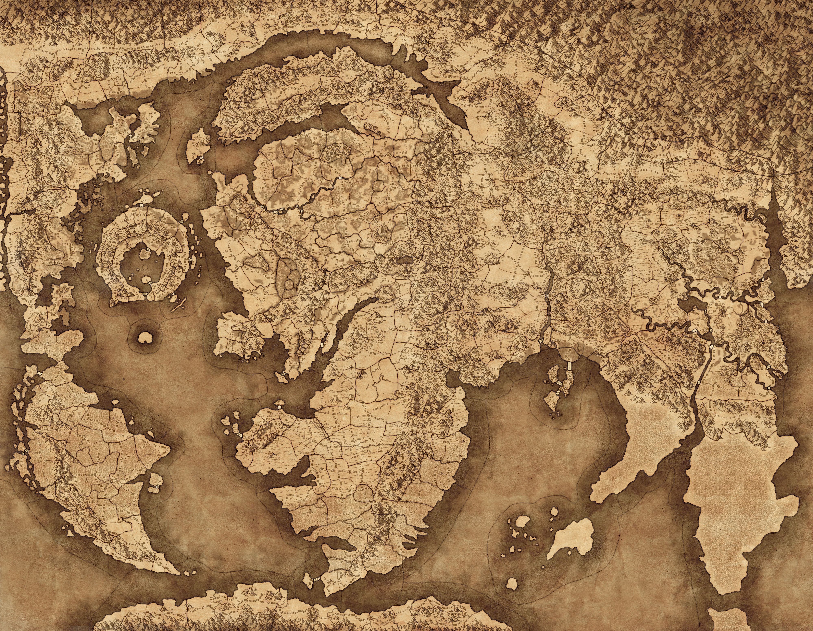
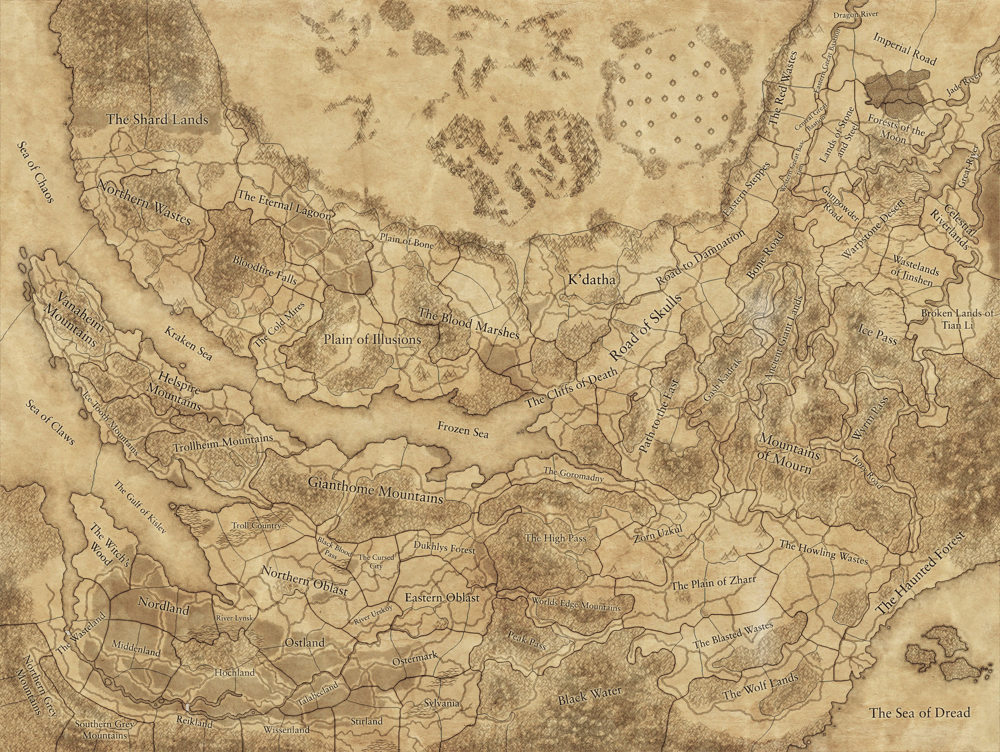
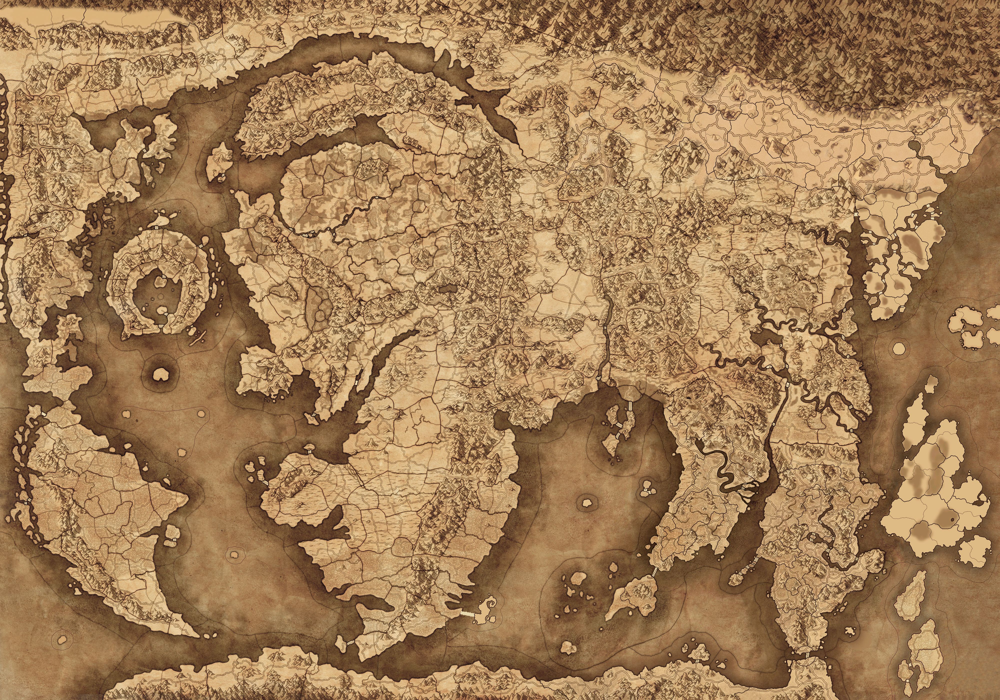

南地
南方荒原
哀恸山脉
基斯里夫
奥苏安
巴托尼亚
帝国
恶地
混沌荒原
矮人帝国
纳迦罗斯
艾索洛伦
诺斯卡
边境亲王领
震旦
露丝契亚
黑暗之地
0
0
100
100
200
200
300
300
400
400
500
500
600
600
700
700
800
800
900
900
0
0
100
100
200
200
300
300
400
400
500
500
600
600
700
700

哀恸山脉
基斯里夫
帝国
混沌荒原
矮人帝国
诺斯卡
震旦
0
0
100
100
200
200
300
300
400
400
500
500
600
600
700
700
0
0
100
100
200
200
300
300
400
400
500
500

东方精灵殖民领
印地
皋鲜
库里什
尼朋
南地
南方荒原
哀恸山脉
基斯里夫
奥苏安
巴托尼亚
帝国
恶地
混沌荒原
矮人帝国
纳迦罗斯
艾索洛伦
诺斯卡
边境亲王领
震旦
露丝契亚
黑暗之地
0
0
100
100
200
200
300
300
400
400
500
500
600
600
700
700
800
800
900
900
1000
1000
0
0
100
100
200
200
300
300
400
400
500
500
600
600
700
700
全部城镇
主要派系（点击只看该派系）
主要派系（点击只看该派系）
主要派系（点击只看该派系）
| 编号 | 城镇 | 开局派系 | 行省 | 大洲 |
|---|---|---|---|---|
| 1 | 安格瑞尔 | 恣纵教派 | 伊泰恩 | 奥苏安 |
区域KEYwh3_main_combi_region_angerrial派系KEYwh2_main_def_cult_of_excess六边形坐标269, 529（游戏内使用的坐标） | ||||
| 2 | 洛瑟恩首府 | 伊泰恩 | 伊泰恩 | 奥苏安 |
区域KEYwh3_main_combi_region_lothern派系KEYwh2_main_hef_eataine六边形坐标254, 513（游戏内使用的坐标） | ||||
| 3 | 莱森之塔 | 恣纵教派 | 伊泰恩 | 奥苏安 |
区域KEYwh3_main_combi_region_tower_of_lysean派系KEYwh2_main_def_cult_of_excess六边形坐标228, 526（游戏内使用的坐标） | ||||
| 4 | 阿苏焉圣殿 | 恣纵教派 | 伊泰恩 | 奥苏安 |
区域KEYwh3_main_combi_region_shrine_of_asuryan派系KEYwh2_main_def_cult_of_excess六边形坐标258, 540（游戏内使用的坐标） | ||||
| 5 | 凤凰门首府 | 凯恩之鞭 | 凤凰门 | 奥苏安 |
区域KEYwh3_main_combi_region_phoenix_gate派系KEYwh2_main_def_scourge_of_khaine六边形坐标245, 619（游戏内使用的坐标） | ||||
| 6 | 塔勒尼亚 | 颅岩 | 北伊瑞斯 | 奥苏安 |
区域KEYwh3_main_combi_region_tralinia派系KEYwh2_dlc15_grn_skull_crag六边形坐标344, 562（游戏内使用的坐标） | ||||
| 7 | 塔尔·伊瑞斯首府 | 伊瑞斯 | 北伊瑞斯 | 奥苏安 |
区域KEYwh3_main_combi_region_tor_yvresse派系KEYwh2_main_hef_yvresse六边形坐标316, 574（游戏内使用的坐标） | ||||
| 8 | 洛依克圣殿 | 颅岩 | 南伊瑞斯 | 奥苏安 |
区域KEYwh3_main_combi_region_shrine_of_loec派系KEYwh2_dlc15_grn_skull_crag六边形坐标311, 511（游戏内使用的坐标） | ||||
| 9 | 索尔石堆 | 颅岩 | 南伊瑞斯 | 奥苏安 |
区域KEYwh3_main_combi_region_cairn_thel派系KEYwh2_dlc15_grn_skull_crag六边形坐标285, 517（游戏内使用的坐标） | ||||
| 10 | 艾勒萨利首府 | 颅岩 | 南伊瑞斯 | 奥苏安 |
区域KEYwh3_main_combi_region_elessaeli派系KEYwh2_dlc15_grn_skull_crag六边形坐标317, 532（游戏内使用的坐标） | ||||
| 11 | 塔尔·风啸城 | 卡勒多 | 卡勒多 | 奥苏安 |
区域KEYwh3_main_combi_region_tor_sethai派系KEYwh2_main_hef_caledor六边形坐标206, 530（游戏内使用的坐标） | ||||
| 12 | 瓦尔铁砧首府 | 卡勒多 | 卡勒多 | 奥苏安 |
区域KEYwh3_main_combi_region_vauls_anvil_ulthuan派系KEYwh2_main_hef_caledor六边形坐标204, 511（游戏内使用的坐标） | ||||
| 13 | 埃利西亚 | 查瑞斯 | 查瑞斯 | 奥苏安 |
区域KEYwh3_main_combi_region_elisia派系KEYwh2_main_hef_chrace六边形坐标299, 640（游戏内使用的坐标） | ||||
| 14 | 塔尔·阿查尔首府 | 查瑞斯 | 查瑞斯 | 奥苏安 |
区域KEYwh3_main_combi_region_tor_achare派系KEYwh2_main_hef_chrace六边形坐标295, 619（游戏内使用的坐标） | ||||
| 15 | 库诺斯圣殿 | 色孽迷魂者 | 查瑞斯 | 奥苏安 |
区域KEYwh3_main_combi_region_shrine_of_kurnous派系KEYwh3_main_sla_seducers_of_slaanesh六边形坐标267, 642（游戏内使用的坐标） | ||||
| 16 | 塔尔·柯瑞利首府 | 柯思奎 | 柯思奎 | 奥苏安 |
区域KEYwh3_main_combi_region_tor_koruali派系KEYwh2_main_hef_cothique六边形坐标331, 606（游戏内使用的坐标） | ||||
| 17 | 米斯特纳 | 柯思奎 | 柯思奎 | 奥苏安 |
区域KEYwh3_main_combi_region_mistnar派系KEYwh2_main_hef_cothique六边形坐标331, 634（游戏内使用的坐标） | ||||
| 18 | 塔尔·安洛克首府 | 泰伦洛克 | 泰伦洛克 | 奥苏安 |
区域KEYwh3_main_combi_region_tor_anroc派系KEYwh2_main_hef_tiranoc六边形坐标178, 593（游戏内使用的坐标） | ||||
| 19 | 白峰 | 泰伦洛克 | 泰伦洛克 | 奥苏安 |
区域KEYwh3_main_combi_region_whitepeak派系KEYwh2_main_hef_tiranoc六边形坐标171, 571（游戏内使用的坐标） | ||||
| 20 | 艾维瑟尔 | 泰伦洛克 | 泰伦洛克 | 奥苏安 |
区域KEYwh3_main_combi_region_avethir派系KEYwh2_main_hef_tiranoc六边形坐标187, 546（游戏内使用的坐标） | ||||
| 21 | 葬船坟场首府 | 恐惧舰队 | 浩瀚洋就近推定 | 奥苏安 |
区域KEYwh3_main_combi_region_the_galleons_graveyard派系KEYwh2_dlc11_cst_noctilus六边形坐标257, 448（游戏内使用的坐标） | ||||
| 22 | 独角兽门首府 | 艾里昂 | 独角兽门 | 奥苏安 |
区域KEYwh3_main_combi_region_unicorn_gate派系KEYwh2_main_hef_ellyrion六边形坐标216, 611（游戏内使用的坐标） | ||||
| 23 | 狮鹫门首府 | 泰伦洛克 | 狮鹫门 | 奥苏安 |
区域KEYwh3_main_combi_region_griffon_gate派系KEYwh2_main_hef_tiranoc六边形坐标196, 594（游戏内使用的坐标） | ||||
| 24 | 凯恩圣殿 | 凯恩之鞭 | 纳迦瑞斯 | 奥苏安 |
区域KEYwh3_main_combi_region_shrine_of_khaine派系KEYwh2_main_def_scourge_of_khaine六边形坐标258, 663（游戏内使用的坐标） | ||||
| 25 | 塔尔·卓德尔 | 凯恩之鞭 | 纳迦瑞斯 | 奥苏安 |
区域KEYwh3_main_combi_region_tor_dranil派系KEYwh2_main_def_scourge_of_khaine六边形坐标198, 627（游戏内使用的坐标） | ||||
| 26 | 塔尔·安列克首府 | 凯恩之鞭 | 纳迦瑞斯 | 奥苏安 |
区域KEYwh3_main_combi_region_tor_anlec派系KEYwh2_main_def_scourge_of_khaine六边形坐标234, 650（游戏内使用的坐标） | ||||
| 27 | 塔尔·艾利尔首府 | 艾里昂 | 艾里昂 | 奥苏安 |
区域KEYwh3_main_combi_region_tor_elyr派系KEYwh2_main_hef_ellyrion六边形坐标206, 558（游戏内使用的坐标） | ||||
| 28 | 白焰城 | 艾里昂 | 艾里昂 | 奥苏安 |
区域KEYwh3_main_combi_region_whitefire_tor派系KEYwh2_main_hef_ellyrion六边形坐标219, 582（游戏内使用的坐标） | ||||
| 29 | 伊莱斯忒港 | 萨芙睿 | 萨芙睿 | 奥苏安 |
区域KEYwh3_main_combi_region_port_elistor派系KEYwh2_main_hef_saphery六边形坐标284, 541（游戏内使用的坐标） | ||||
| 30 | 塔尔·芬努 | 萨芙睿 | 萨芙睿 | 奥苏安 |
区域KEYwh3_main_combi_region_tor_finu派系KEYwh2_main_hef_saphery六边形坐标299, 585（游戏内使用的坐标） | ||||
| 31 | 荷斯白塔首府 | 萨芙睿 | 萨芙睿 | 奥苏安 |
区域KEYwh3_main_combi_region_white_tower_of_hoeth派系KEYwh2_main_hef_saphery六边形坐标295, 562（游戏内使用的坐标） | ||||
| 32 | 伊甸谷首府 | 阿瓦隆 | 阿瓦隆 | 奥苏安 |
区域KEYwh3_main_combi_region_gaean_vale派系KEYwh2_main_hef_avelorn六边形坐标256, 579（游戏内使用的坐标） | ||||
| 33 | 塔尔·永恒城 | 凯恩之鞭 | 阿瓦隆 | 奥苏安 |
区域KEYwh3_main_combi_region_tor_saroir派系KEYwh2_main_def_scourge_of_khaine六边形坐标270, 601（游戏内使用的坐标） | ||||
| 34 | 永恒之岩 | 凯恩之鞭 | 阿瓦隆 | 奥苏安 |
区域KEYwh3_main_combi_region_evershale派系KEYwh2_main_def_scourge_of_khaine六边形坐标240, 595（游戏内使用的坐标） | ||||
| 35 | 雄鹰门首府 | 艾里昂 | 雄鹰门 | 奥苏安 |
区域KEYwh3_main_combi_region_eagle_gate派系KEYwh2_main_hef_ellyrion六边形坐标189, 572（游戏内使用的坐标） | ||||
| 36 | 凄凉要塞 | 森林之女 | 凄凉海岸 | 纳迦罗斯 |
区域KEYwh3_main_combi_region_bleak_hold_fortress派系KEYwh3_dlc24_ksl_daughters_of_the_forest六边形坐标89, 618（游戏内使用的坐标） | ||||
| 37 | 碎月山 | 荒芜守军 | 凄凉海岸 | 纳迦罗斯 |
区域KEYwh3_main_combi_region_the_moon_shard派系KEYwh2_main_def_bleak_holds六边形坐标134, 567（游戏内使用的坐标） | ||||
| 38 | 阿纳海姆首府 | 荒芜守军 | 凄凉海岸 | 纳迦罗斯 |
区域KEYwh3_main_combi_region_arnheim派系KEYwh2_main_def_bleak_holds六边形坐标147, 588（游戏内使用的坐标） | ||||
| 39 | 阿纳海姆森林 | 荒芜守军 | 凄凉海岸 | 纳迦罗斯 |
区域KEYwh3_main_combi_region_forest_of_arnheim派系KEYwh2_main_def_bleak_holds六边形坐标110, 601（游戏内使用的坐标） | ||||
| 40 | 扭曲林地首府 | 溺亡者 | 利爪海岸 | 纳迦罗斯 |
区域KEYwh3_main_combi_region_the_twisted_glade派系KEYwh2_dlc11_cst_the_drowned六边形坐标208, 692（游戏内使用的坐标） | ||||
| 41 | 柯泰克圆柱 | 锻炉盟会 | 利爪海岸 | 纳迦罗斯 |
区域KEYwh3_main_combi_region_hoteks_column派系KEYwh2_main_def_the_forgebound六边形坐标173, 718（游戏内使用的坐标） | ||||
| 42 | 黑暗森林 | 锻炉盟会 | 利爪海岸 | 纳迦罗斯 |
区域KEYwh3_main_combi_region_the_black_forests派系KEYwh2_main_def_the_forgebound六边形坐标207, 725（游戏内使用的坐标） | ||||
| 43 | 巫女林首府 | 艾瑞尔军锋 | 巫女林 | 纳迦罗斯 |
区域KEYwh3_main_combi_region_the_witchwood派系KEYwh2_dlc16_wef_sisters_of_twilight六边形坐标66, 660（游戏内使用的坐标） | ||||
| 44 | 冰川花园 | 无主 | 彻寒荒原 | 纳迦罗斯 |
区域KEYwh3_dlc20_combi_region_glacial_gardens派系KEY（无主，开局无归属）六边形坐标173, 892（游戏内使用的坐标） | ||||
| 45 | 废墟之殿首府 | 无主 | 彻寒荒原 | 纳迦罗斯 |
区域KEYwh3_main_combi_region_the_palace_of_ruin派系KEY（无主，开局无归属）六边形坐标230, 904（游戏内使用的坐标） | ||||
| 46 | 海格之厅首府 | 德库拉女巫团 | 末日林地 | 纳迦罗斯 |
区域KEYwh3_main_combi_region_hag_hall派系KEYwh2_main_def_drackla_coven六边形坐标106, 644（游戏内使用的坐标） | ||||
| 47 | 瓦尔铁砧 | 德库拉女巫团 | 末日林地 | 纳迦罗斯 |
区域KEYwh3_main_combi_region_vauls_anvil_naggaroth派系KEYwh2_main_def_drackla_coven六边形坐标126, 670（游戏内使用的坐标） | ||||
| 48 | 阿达厄斯神殿 | 德库拉女巫团 | 末日林地 | 纳迦罗斯 |
区域KEYwh3_main_combi_region_temple_of_addaioth派系KEYwh2_main_def_drackla_coven六边形坐标76, 689（游戏内使用的坐标） | ||||
| 49 | 冰封城首府 | 枯木哨兵 | 枯木林 | 纳迦罗斯 |
区域KEYwh3_main_combi_region_the_frozen_city派系KEYwh2_main_def_deadwood_sentinels六边形坐标284, 872（游戏内使用的坐标） | ||||
| 50 | 纳格尔 | 破笼者 | 枯木林 | 纳迦罗斯 |
区域KEYwh3_main_combi_region_nagrar派系KEYwh3_main_grn_da_cage_breakaz六边形坐标271, 836（游戏内使用的坐标） | ||||
| 51 | 达格斯 | 破笼者 | 枯木林 | 纳迦罗斯 |
区域KEYwh3_main_combi_region_dargoth派系KEYwh3_main_grn_da_cage_breakaz六边形坐标249, 858（游戏内使用的坐标） | ||||
| 52 | 希拉卓·塔尔 | 希拉卓·塔尔 | 泰坦群峰 | 纳迦罗斯 |
区域KEYwh3_main_combi_region_ssildra_tor派系KEYwh2_main_def_ssildra_tor六边形坐标64, 535（游戏内使用的坐标） | ||||
| 53 | 昆泰克斯古城首府 | 欢愉教派 | 泰坦群峰 | 纳迦罗斯 |
区域KEYwh3_main_combi_region_ancient_city_of_quintex派系KEYwh2_main_def_cult_of_pleasure六边形坐标73, 592（游戏内使用的坐标） | ||||
| 54 | 灰岩据点 | 希拉卓·塔尔 | 泰坦群峰 | 纳迦罗斯 |
区域KEYwh3_main_combi_region_grey_rock_point派系KEYwh2_main_def_ssildra_tor六边形坐标106, 543（游戏内使用的坐标） | ||||
| 55 | 石化森林 | 希拉卓·塔尔 | 泰坦群峰 | 纳迦罗斯 |
区域KEYwh3_main_combi_region_petrified_forest派系KEYwh2_main_def_ssildra_tor六边形坐标77, 557（游戏内使用的坐标） | ||||
| 56 | 斯喀匹尔巢穴 | 磨砂氏族 | 灰白海岸 | 纳迦罗斯 |
区域KEYwh3_main_combi_region_scarpels_lair派系KEYwh2_dlc16_skv_clan_gritus六边形坐标15, 600（游戏内使用的坐标） | ||||
| 57 | 暴君峰首府 | 磨砂氏族 | 灰白海岸 | 纳迦罗斯 |
区域KEYwh3_main_combi_region_tyrant_peak派系KEYwh2_dlc16_skv_clan_gritus六边形坐标21, 573（游戏内使用的坐标） | ||||
| 58 | 萨菲尔斯 | 磨砂氏族 | 灰白海岸 | 纳迦罗斯 |
区域KEYwh3_main_combi_region_sulpharets派系KEYwh2_dlc16_skv_clan_gritus六边形坐标22, 532（游戏内使用的坐标） | ||||
| 59 | 铁刺镇 | 希拉卓·塔尔 | 灰白海岸 | 纳迦罗斯 |
区域KEYwh3_main_combi_region_ironspike派系KEYwh2_main_def_ssildra_tor六边形坐标43, 547（游戏内使用的坐标） | ||||
| 60 | 亵渎要塞首府 | 枯木哨兵 | 破碎之地 | 纳迦罗斯 |
区域KEYwh3_main_combi_region_fortress_of_the_damned派系KEYwh2_main_def_deadwood_sentinels六边形坐标375, 870（游戏内使用的坐标） | ||||
| 61 | 煞格瑞斯 | 枯木哨兵 | 破碎之地 | 纳迦罗斯 |
区域KEYwh3_main_combi_region_shagrath派系KEYwh2_main_def_deadwood_sentinels六边形坐标319, 853（游戏内使用的坐标） | ||||
| 62 | 碎屑砦 | 阿骨尔 | 破碎之地 | 纳迦罗斯 |
区域KEYwh3_main_combi_region_shard_bastion派系KEYwh2_main_nor_aghol六边形坐标314, 900（游戏内使用的坐标） | ||||
| 63 | 卡隆德·卡尔首府 | 卡隆德·卡尔 | 破败之地 | 纳迦罗斯 |
区域KEYwh3_main_combi_region_karond_kar派系KEYwh2_main_def_karond_kar六边形坐标277, 797（游戏内使用的坐标） | ||||
| 64 | 奴隶贩据点 | 卡隆德·卡尔 | 破败之地 | 纳迦罗斯 |
区域KEYwh3_main_combi_region_slavers_point派系KEYwh2_main_def_karond_kar六边形坐标238, 753（游戏内使用的坐标） | ||||
| 65 | 黑溪尖塔 | 卡隆德·卡尔 | 破败之地 | 纳迦罗斯 |
区域KEYwh3_main_combi_region_black_creek_spire派系KEYwh2_main_def_karond_kar六边形坐标269, 768（游戏内使用的坐标） | ||||
| 66 | 克拉克尖塔首府 | 尼科放逐者 | 红砂沙漠 | 纳迦罗斯 |
区域KEYwh3_main_combi_region_clarak_spire派系KEYwh2_dlc09_tmb_exiles_of_nehek六边形坐标16, 650（游戏内使用的坐标） | ||||
| 67 | 洛斯咖尖塔 | 碎镣 | 红砂沙漠 | 纳迦罗斯 |
区域KEYwh3_main_combi_region_rothkar_spire派系KEYwh2_dlc16_grn_naggaroth_orcs六边形坐标13, 733（游戏内使用的坐标） | ||||
| 68 | 海美拉尖塔 | 碎镣 | 红砂沙漠 | 纳迦罗斯 |
区域KEYwh3_main_combi_region_khymerica_spire派系KEYwh2_dlc16_grn_naggaroth_orcs六边形坐标29, 705（游戏内使用的坐标） | ||||
| 69 | 蜘蛛平原 | 碎镣 | 红砂沙漠 | 纳迦罗斯 |
区域KEYwh3_main_combi_region_plain_of_spiders派系KEYwh2_dlc16_grn_naggaroth_orcs六边形坐标40, 677（游戏内使用的坐标） | ||||
| 70 | 巨石镇 | 纳迦瑞斯 | 花岗岩丘陵 | 纳迦罗斯 |
区域KEYwh3_main_combi_region_the_monoliths派系KEYwh2_main_hef_nagarythe六边形坐标203, 755（游戏内使用的坐标） | ||||
| 71 | 拉德莉莉神龛 | 卡隆德·卡尔 | 花岗岩丘陵 | 纳迦罗斯 |
区域KEYwh3_main_combi_region_shrine_of_ladrielle派系KEYwh2_main_def_karond_kar六边形坐标224, 777（游戏内使用的坐标） | ||||
| 72 | 黯光塔首府 | 卡隆德·卡尔 | 花岗岩丘陵 | 纳迦罗斯 |
区域KEYwh3_main_combi_region_blacklight_tower派系KEYwh2_main_def_karond_kar六边形坐标210, 793（游戏内使用的坐标） | ||||
| 73 | 绍卡克山 | 无主 | 钢铁山脉 | 纳迦罗斯 |
区域KEYwh3_main_combi_region_shroktak_mount派系KEY（无主，开局无归属）六边形坐标57, 768（游戏内使用的坐标） | ||||
| 74 | 锐科杜山峡首府 | 血毒氏族 | 钢铁山脉 | 纳迦罗斯 |
区域KEYwh3_main_combi_region_rackdo_gorge派系KEYwh2_main_skv_clan_septik六边形坐标55, 812（游戏内使用的坐标） | ||||
| 75 | 哈尔·卡卓拉 | 血毒氏族 | 钢铁矮丘 | 纳迦罗斯 |
区域KEYwh3_main_combi_region_har_kaldra派系KEYwh2_main_skv_clan_septik六边形坐标81, 847（游戏内使用的坐标） | ||||
| 76 | 纳迦隆德首府 | 纳迦隆德 | 钢铁矮丘 | 纳迦罗斯 |
区域KEYwh3_main_combi_region_naggarond派系KEYwh2_main_def_naggarond六边形坐标112, 813（游戏内使用的坐标） | ||||
| 77 | 冰岩峡谷 | 无主 | 铁砂沙漠 | 纳迦罗斯 |
区域KEYwh3_main_combi_region_ice_rock_gorge派系KEY（无主，开局无归属）六边形坐标74, 645（游戏内使用的坐标） | ||||
| 78 | 猎犬平原首府 | 磨砂氏族 | 铁砂沙漠 | 纳迦罗斯 |
区域KEYwh3_main_combi_region_plain_of_dogs派系KEYwh2_dlc16_skv_clan_gritus六边形坐标40, 633（游戏内使用的坐标） | ||||
| 79 | 上古尖塔 | 血毒氏族 | 镔铁海岸 | 纳迦罗斯 |
区域KEYwh3_main_combi_region_eldar_spire派系KEYwh2_main_skv_clan_septik六边形坐标15, 815（游戏内使用的坐标） | ||||
| 80 | 德库拉尖塔 | 先祖之军 | 镔铁海岸 | 纳迦罗斯 |
区域KEYwh3_main_combi_region_drackla_spire派系KEYwh3_main_dwf_the_ancestral_throng六边形坐标21, 781（游戏内使用的坐标） | ||||
| 81 | 终极黑暗祭坛首府 | 血毒氏族 | 镔铁海岸 | 纳迦罗斯 |
区域KEYwh3_main_combi_region_altar_of_ultimate_darkness派系KEYwh2_main_skv_clan_septik六边形坐标44, 842（游戏内使用的坐标） | ||||
| 82 | 大竞技场 | 戈隆德 | 险恶群峰 | 纳迦罗斯 |
区域KEYwh3_main_combi_region_the_great_arena派系KEYwh2_main_def_ghrond六边形坐标155, 816（游戏内使用的坐标） | ||||
| 83 | 寒心路 | 戈隆德 | 险恶群峰 | 纳迦罗斯 |
区域KEYwh3_main_combi_region_chill_road派系KEYwh2_main_def_ghrond六边形坐标130, 833（游戏内使用的坐标） | ||||
| 84 | 戈隆德首府 | 戈隆德 | 险恶群峰 | 纳迦罗斯 |
区域KEYwh3_main_combi_region_ghrond派系KEYwh2_main_def_ghrond六边形坐标157, 841（游戏内使用的坐标） | ||||
| 85 | 阿什拉克 | 戈隆德 | 险恶群峰 | 纳迦罗斯 |
区域KEYwh3_main_combi_region_ashrak派系KEYwh2_main_def_ghrond六边形坐标135, 862（游戏内使用的坐标） | ||||
| 86 | 冰川营地 | 蒙人 | 霜铁冰川 | 纳迦罗斯 |
区域KEYwh3_dlc20_combi_region_glacier_encampment派系KEYwh2_main_nor_mung六边形坐标79, 903（游戏内使用的坐标） | ||||
| 87 | 达卦克灭亡地首府 | 戈隆德 | 霜铁冰川 | 纳迦罗斯 |
区域KEYwh3_main_combi_region_dagraks_end派系KEYwh2_main_def_ghrond六边形坐标128, 909（游戏内使用的坐标） | ||||
| 88 | 霜铁镇 | 蒙人 | 霜铁冰川 | 纳迦罗斯 |
区域KEYwh3_main_combi_region_ironfrost派系KEYwh2_main_nor_mung六边形坐标40, 878（游戏内使用的坐标） | ||||
| 89 | 哈尔·冈西首府 | 哈尔·冈西 | 颅骨之路 | 纳迦罗斯 |
区域KEYwh3_main_combi_region_har_ganeth派系KEYwh2_main_def_har_ganeth六边形坐标212, 827（游戏内使用的坐标） | ||||
| 90 | 恶怨地 | 破笼者 | 颅骨之路 | 纳迦罗斯 |
区域KEYwh3_main_combi_region_spite_reach派系KEYwh3_main_grn_da_cage_breakaz六边形坐标190, 845（游戏内使用的坐标） | ||||
| 91 | 漆黑石柱 | 破笼者 | 颅骨之路 | 纳迦罗斯 |
区域KEYwh3_main_combi_region_the_black_pillar派系KEYwh3_main_grn_da_cage_breakaz六边形坐标214, 849（游戏内使用的坐标） | ||||
| 92 | 考阿克 | 破笼者 | 颅骨之路 | 纳迦罗斯 |
区域KEYwh3_main_combi_region_kauark派系KEYwh3_main_grn_da_cage_breakaz六边形坐标202, 872（游戏内使用的坐标） | ||||
| 93 | 克拉卡隆德首府 | 克拉卡隆德 | 黑曜石群峰 | 纳迦罗斯 |
区域KEYwh3_main_combi_region_clar_karond派系KEYwh2_main_def_clar_karond六边形坐标117, 726（游戏内使用的坐标） | ||||
| 94 | 斯托格·科尔 | 无主 | 黑曜石群峰 | 纳迦罗斯 |
区域KEYwh3_main_combi_region_storag_kor派系KEY（无主，开局无归属）六边形坐标72, 727（游戏内使用的坐标） | ||||
| 95 | 毁灭石环 | 克拉卡隆德 | 黑曜石群峰 | 纳迦罗斯 |
区域KEYwh3_main_combi_region_circle_of_destruction派系KEYwh2_main_def_clar_karond六边形坐标159, 757（游戏内使用的坐标） | ||||
| 96 | 毒液林地 | 克拉卡隆德 | 黑曜石群峰 | 纳迦罗斯 |
区域KEYwh3_main_combi_region_venom_glade派系KEYwh2_main_def_clar_karond六边形坐标142, 709（游戏内使用的坐标） | ||||
| 97 | 凯恩神殿 | 无主 | 黑色涝地 | 纳迦罗斯 |
区域KEYwh3_main_combi_region_temple_of_khaine派系KEY（无主，开局无归属）六边形坐标89, 788（游戏内使用的坐标） | ||||
| 98 | 夸格兹深渊 | 无主 | 黑色涝地 | 纳迦罗斯 |
区域KEYwh3_main_combi_region_cragroth_deep派系KEY（无主，开局无归属）六边形坐标103, 766（游戏内使用的坐标） | ||||
| 99 | 海格·葛雷夫首府 | 海格·葛雷夫 | 黑色涝地 | 纳迦罗斯 |
区域KEYwh3_main_combi_region_hag_graef派系KEYwh2_main_def_hag_graef六边形坐标139, 787（游戏内使用的坐标） | ||||
| 100 | 斯兰雾佩克首府 | 斯兰雾佩克 | 吸血蚊沼泽 | 露丝契亚 |
区域KEYwh3_main_combi_region_xlanhuapec派系KEYwh2_main_lzd_xlanhuapec六边形坐标215, 264（游戏内使用的坐标） | ||||
| 101 | 阿斯罗托 | 斯兰雾佩克 | 吸血蚊沼泽 | 露丝契亚 |
区域KEYwh3_main_combi_region_axlotl派系KEYwh2_main_lzd_xlanhuapec六边形坐标207, 231（游戏内使用的坐标） | ||||
| 102 | 鲜血沼泽 | 无主 | 吸血蚊沼泽 | 露丝契亚 |
区域KEYwh3_main_combi_region_the_blood_swamps派系KEY（无主，开局无归属）六边形坐标239, 235（游戏内使用的坐标） | ||||
| 103 | 掠夺者港 | 新世界殖民者 | 地峡海岸 | 露丝契亚 |
区域KEYwh3_main_combi_region_port_reaver派系KEYwh2_main_emp_new_world_colonies六边形坐标98, 481（游戏内使用的坐标） | ||||
| 104 | 斯科吉首府 | 斯科吉 | 地峡海岸 | 露丝契亚 |
区域KEYwh3_main_combi_region_skeggi派系KEYwh2_main_nor_skeggi六边形坐标126, 513（游戏内使用的坐标） | ||||
| 105 | 黎明金字塔 | 斯科吉 | 地峡海岸 | 露丝契亚 |
区域KEYwh3_main_combi_region_ziggurat_of_dawn派系KEYwh2_main_nor_skeggi六边形坐标92, 517（游戏内使用的坐标） | ||||
| 106 | 凯阿克斯首府 | 斯克拉特氏族 | 夜森林路 | 露丝契亚 |
区域KEYwh3_main_combi_region_kaiax派系KEYwh3_main_skv_clan_skrat六边形坐标191, 118（游戏内使用的坐标） | ||||
| 107 | 斯兰泽克 | 索提戈教派 | 夜森林路 | 露丝契亚 |
区域KEYwh3_main_combi_region_xlanzec派系KEYwh2_dlc12_lzd_cult_of_sotek六边形坐标241, 109（游戏内使用的坐标） | ||||
| 108 | 奥克斯欧首府 | 疫病氏族 | 失落溪谷 | 露丝契亚 |
区域KEYwh3_main_combi_region_oyxl派系KEYwh2_main_skv_clan_pestilens六边形坐标183, 187（游戏内使用的坐标） | ||||
| 109 | 时光哨塔 | 南方哨站 | 失落溪谷 | 露丝契亚 |
区域KEYwh3_main_combi_region_the_sentinel_of_time派系KEYwh2_main_lzd_southern_sentinels六边形坐标190, 152（游戏内使用的坐标） | ||||
| 110 | 萨巴图纳 | 疫病氏族 | 失落溪谷 | 露丝契亚 |
区域KEYwh3_main_combi_region_subatuun派系KEYwh2_main_skv_clan_pestilens六边形坐标146, 201（游戏内使用的坐标） | ||||
| 111 | 帕花科斯首府 | 蓝蝰蛇 | 帕花拉夏雨林 | 露丝契亚 |
区域KEYwh3_main_combi_region_pahuax派系KEYwh2_main_grn_blue_vipers六边形坐标92, 430（游戏内使用的坐标） | ||||
| 112 | 月之碑 | 新世界殖民者 | 帕花拉夏雨林 | 露丝契亚 |
区域KEYwh3_main_combi_region_monument_of_the_moon派系KEYwh2_main_emp_new_world_colonies六边形坐标145, 455（游戏内使用的坐标） | ||||
| 113 | 沼泽镇 | 新世界殖民者 | 帕花拉夏雨林 | 露丝契亚 |
区域KEYwh3_main_combi_region_swamp_town派系KEYwh2_main_emp_new_world_colonies六边形坐标91, 459（游戏内使用的坐标） | ||||
| 114 | 索提戈圣殿 | 蓝蝰蛇 | 帕花拉夏雨林 | 露丝契亚 |
区域KEYwh3_main_combi_region_shrine_of_sotek派系KEYwh2_main_grn_blue_vipers六边形坐标47, 427（游戏内使用的坐标） | ||||
| 115 | 巨龟岛首府 | 千噬 | 海龟群岛 | 露丝契亚 |
区域KEYwh3_main_combi_region_great_turtle_isle派系KEYwh2_twa03_def_rakarth六边形坐标31, 250（游戏内使用的坐标） | ||||
| 116 | 幻象之所 | 瑟提哨站 | 海龟群岛 | 露丝契亚 |
区域KEYwh3_main_combi_region_chamber_of_visions派系KEYwh2_main_lzd_sentinels_of_xeti六边形坐标71, 273（游戏内使用的坐标） | ||||
| 117 | 瑟提哨站 | 瑟提哨站 | 海龟群岛 | 露丝契亚 |
区域KEYwh3_main_combi_region_sentinels_of_xeti派系KEYwh2_main_lzd_sentinels_of_xeti六边形坐标77, 243（游戏内使用的坐标） | ||||
| 118 | 金色金字塔 | 瑟提哨站 | 海龟群岛 | 露丝契亚 |
区域KEYwh3_main_combi_region_golden_ziggurat派系KEYwh2_main_lzd_sentinels_of_xeti六边形坐标37, 282（游戏内使用的坐标） | ||||
| 119 | 巨蛇烟岛 | 无主 | 火山群岛 | 露丝契亚 |
区域KEYwh3_main_combi_region_fuming_serpent派系KEY（无主，开局无归属）六边形坐标286, 232（游戏内使用的坐标） | ||||
| 120 | 星辰塔首府 | 恶唾氏族 | 火山群岛 | 露丝契亚 |
区域KEYwh3_main_combi_region_the_star_tower派系KEYwh2_main_skv_clan_spittel六边形坐标280, 214（游戏内使用的坐标） | ||||
| 121 | 古圣印迹 | 恶唾氏族 | 猎头者丛林 | 露丝契亚 |
区域KEYwh3_main_combi_region_marks_of_the_old_ones派系KEYwh2_main_skv_clan_spittel六边形坐标225, 184（游戏内使用的坐标） | ||||
| 122 | 大角鼠祭坛首府 | 恶唾氏族 | 猎头者丛林 | 露丝契亚 |
区域KEYwh3_main_combi_region_altar_of_the_horned_rat派系KEYwh2_main_skv_clan_spittel六边形坐标245, 206（游戏内使用的坐标） | ||||
| 123 | 暮光要塞首府 | 暮光要塞 | 破碎岬 | 露丝契亚 |
区域KEYwh3_main_combi_region_citadel_of_dusk派系KEYwh2_main_hef_citadel_of_dusk六边形坐标302, 89（游戏内使用的坐标） | ||||
| 124 | 暮色群峰 | 暮光要塞 | 破碎岬 | 露丝契亚 |
区域KEYwh3_main_combi_region_dusk_peaks派系KEYwh2_main_hef_citadel_of_dusk六边形坐标281, 105（游戏内使用的坐标） | ||||
| 125 | 神圣水池首府 | 维生池守望者 | 神圣水池 | 露丝契亚 |
区域KEYwh3_main_combi_region_the_sacred_pools派系KEYwh2_dlc16_lzd_wardens_of_the_living_pools六边形坐标153, 261（游戏内使用的坐标） | ||||
| 126 | 厉咒峰 | 索提戈之脊矮人 | 索提戈之脊 | 露丝契亚 |
区域KEYwh3_main_combi_region_thrice_cursed_peak派系KEYwh2_main_dwf_spine_of_sotek_dwarfs六边形坐标151, 172（游戏内使用的坐标） | ||||
| 127 | 死胡子矿井首府 | 索提戈之脊矮人 | 索提戈之脊 | 露丝契亚 |
区域KEYwh3_main_combi_region_mine_of_the_bearded_skulls派系KEYwh2_main_dwf_spine_of_sotek_dwarfs六边形坐标120, 217（游戏内使用的坐标） | ||||
| 128 | 未视石厅 | 血厅女巫团 | 绿雾雨林 | 露丝契亚 |
区域KEYwh3_main_combi_region_pillars_of_unseen_constellations派系KEYwh2_main_def_blood_hall_coven六边形坐标59, 332（游戏内使用的坐标） | ||||
| 129 | 永恒之源 | 血厅女巫团 | 绿雾雨林 | 露丝契亚 |
区域KEYwh3_main_combi_region_wellsprings_of_eternity派系KEYwh2_main_def_blood_hall_coven六边形坐标71, 357（游戏内使用的坐标） | ||||
| 130 | 鲜血之厅首府 | 诅咒剧团 | 绿雾雨林 | 露丝契亚 |
区域KEYwh3_main_combi_region_the_blood_hall派系KEYwh3_dlc27_sla_masque_of_slaanesh六边形坐标26, 332（游戏内使用的坐标） | ||||
| 131 | 塔拉克斯 | 吸血鬼海岸哗变者 | 网道雨林 | 露丝契亚 |
区域KEYwh3_main_combi_region_tlax派系KEYwh2_dlc11_cst_vampire_coast_rebels六边形坐标259, 289（游戏内使用的坐标） | ||||
| 132 | 疱疹沼泽 | 吸血鬼海岸哗变者 | 网道雨林 | 露丝契亚 |
区域KEYwh3_main_combi_region_pox_marsh派系KEYwh2_dlc11_cst_vampire_coast_rebels六边形坐标298, 283（游戏内使用的坐标） | ||||
| 133 | 觉醒地首府 | 觉醒者 | 网道雨林 | 露丝契亚 |
区域KEYwh3_main_combi_region_the_awakening派系KEYwh2_dlc11_cst_vampire_coast六边形坐标276, 262（游戏内使用的坐标） | ||||
| 134 | 南方哨站首府 | 南方哨站 | 考琛平原 | 露丝契亚 |
区域KEYwh3_main_combi_region_the_southern_sentinels派系KEYwh2_main_lzd_southern_sentinels六边形坐标224, 133（游戏内使用的坐标） | ||||
| 135 | 查佩尤托 | 南方哨站 | 考琛平原 | 露丝契亚 |
区域KEYwh3_main_combi_region_chupayotl派系KEYwh2_main_lzd_southern_sentinels六边形坐标251, 163（游戏内使用的坐标） | ||||
| 136 | 红树林海岸 | 南方哨站 | 考琛平原 | 露丝契亚 |
区域KEYwh3_main_combi_region_mangrove_coast派系KEYwh2_main_lzd_southern_sentinels六边形坐标263, 137（游戏内使用的坐标） | ||||
| 137 | 入云哨塔 | 蓝蝰蛇 | 艾玛拉沼泽 | 露丝契亚 |
区域KEYwh3_main_combi_region_the_high_sentinel派系KEYwh2_main_grn_blue_vipers六边形坐标120, 404（游戏内使用的坐标） | ||||
| 138 | 悬浮金字塔 | 玉廷 | 艾玛拉沼泽 | 露丝契亚 |
区域KEYwh3_main_combi_region_floating_pyramid派系KEYwh3_dlc24_cth_the_celestial_court六边形坐标104, 394（游戏内使用的坐标） | ||||
| 139 | 绯红骷髅岛首府 | 玉廷 | 艾玛拉沼泽 | 露丝契亚 |
区域KEYwh3_main_combi_region_isle_of_the_crimson_skull派系KEYwh3_dlc24_cth_the_celestial_court六边形坐标62, 407（游戏内使用的坐标） | ||||
| 140 | 查库阿 | 万变使徒 | 蒄棘山谷 | 露丝契亚 |
区域KEYwh3_main_combi_region_chaqua派系KEYwh3_dlc20_tze_apostles_of_change六边形坐标174, 273（游戏内使用的坐标） | ||||
| 141 | 茱伊泰克斯 | 万变使徒 | 蒄棘山谷 | 露丝契亚 |
区域KEYwh3_main_combi_region_quittax派系KEYwh3_dlc20_tze_apostles_of_change六边形坐标142, 301（游戏内使用的坐标） | ||||
| 142 | 霍罗妥首府 | 血腥流浪者 | 蒄棘山谷 | 露丝契亚 |
区域KEYwh3_main_combi_region_hualotal派系KEYwh3_dlc26_kho_skulltaker六边形坐标99, 309（游戏内使用的坐标） | ||||
| 143 | 伊扎塔之碑 | 螨疮氏族 | 蠕行丛林 | 露丝契亚 |
区域KEYwh3_main_combi_region_monument_of_izzatal派系KEYwh2_dlc12_skv_clan_mange六边形坐标105, 352（游戏内使用的坐标） | ||||
| 144 | 卡拉神殿 | 猎人元帅远征军 | 蠕行丛林 | 露丝契亚 |
区域KEYwh3_main_combi_region_temple_of_kara派系KEYwh2_dlc13_emp_the_huntmarshals_expedition六边形坐标152, 366（游戏内使用的坐标） | ||||
| 145 | 斯皮卡祖玛首府 | 螨疮氏族 | 蠕行丛林 | 露丝契亚 |
区域KEYwh3_main_combi_region_spektazuma派系KEYwh2_dlc12_skv_clan_mange六边形坐标87, 378（游戏内使用的坐标） | ||||
| 146 | 失陷之门 | 极乐守卫 | 露丝契亚地峡 | 露丝契亚 |
区域KEYwh3_main_combi_region_fallen_gates派系KEYwh3_dlc20_sla_keepers_of_bliss六边形坐标44, 510（游戏内使用的坐标） | ||||
| 147 | 赫斯欧塔首府 | 赫斯欧塔 | 露丝契亚地峡 | 露丝契亚 |
区域KEYwh3_main_combi_region_hexoatl派系KEYwh2_main_lzd_hexoatl六边形坐标69, 489（游戏内使用的坐标） | ||||
| 148 | 马库群峰 | 极乐守卫 | 露丝契亚地峡 | 露丝契亚 |
区域KEYwh3_main_combi_region_macu_peaks派系KEYwh3_dlc20_sla_keepers_of_bliss六边形坐标53, 457（游戏内使用的坐标） | ||||
| 149 | 塔兰克斯拉 | 塔拉克斯兰 | 食人鱼沼泽 | 露丝契亚 |
区域KEYwh3_main_combi_region_tlanxla派系KEYwh2_main_lzd_tlaxtlan六边形坐标125, 331（游戏内使用的坐标） | ||||
| 150 | 塔拉克斯兰首府 | 塔拉克斯兰 | 食人鱼沼泽 | 露丝契亚 |
区域KEYwh3_main_combi_region_tlaxtlan派系KEYwh2_main_lzd_tlaxtlan六边形坐标164, 324（游戏内使用的坐标） | ||||
| 151 | 布雷贡 | 波尔德罗长征军 | 食人鱼沼泽 | 露丝契亚 |
区域KEYwh3_main_combi_region_temple_of_tlencan派系KEYwh_main_brt_bordeleaux六边形坐标215, 335（游戏内使用的坐标） | ||||
| 152 | 扎慧塔克 | 塔拉克斯兰 | 食人鱼沼泽 | 露丝契亚 |
区域KEYwh3_main_combi_region_xahutec派系KEYwh2_main_lzd_tlaxtlan六边形坐标204, 307（游戏内使用的坐标） | ||||
| 153 | 伊塔扎首府 | 伊塔扎 | 魁伟扎河 | 露丝契亚 |
区域KEYwh3_main_combi_region_itza派系KEYwh2_main_lzd_itza六边形坐标168, 239（游戏内使用的坐标） | ||||
| 154 | 奎扎 | 苍白乳婴 | 魁伟扎河 | 露丝契亚 |
区域KEYwh3_main_combi_region_quetza派系KEYwh3_dlc20_nur_pallid_nurslings六边形坐标186, 219（游戏内使用的坐标） | ||||
| 155 | 阿斯霍托 | 苍白乳婴 | 魁伟扎河 | 露丝契亚 |
区域KEYwh3_main_combi_region_xhotl派系KEYwh3_dlc20_nur_pallid_nurslings六边形坐标133, 238（游戏内使用的坐标） | ||||
| 156 | 尘埃之门 | 卡特普离散者 | 黄铜沙漠 | 露丝契亚 |
区域KEYwh3_main_combi_region_the_dust_gate派系KEYwh3_main_tmb_deserters_of_khatep六边形坐标140, 156（游戏内使用的坐标） | ||||
| 157 | 黄金巨像首府 | 卡特普离散者 | 黄铜沙漠 | 露丝契亚 |
区域KEYwh3_main_combi_region_the_golden_colossus派系KEYwh3_main_tmb_deserters_of_khatep六边形坐标86, 211（游戏内使用的坐标） | ||||
| 158 | 黄铜滩 | 卡特普离散者 | 黄铜沙漠 | 露丝契亚 |
区域KEYwh3_main_combi_region_the_copper_landing派系KEYwh3_main_tmb_deserters_of_khatep六边形坐标113, 172（游戏内使用的坐标） | ||||
| 159 | 奥瑞恩营地首府 | 奥瑞恩箭团 | 丛林之心 | 南地 |
区域KEYwh3_main_combi_region_oreons_camp派系KEYwh2_main_wef_bowmen_of_oreon六边形坐标641, 216（游戏内使用的坐标） | ||||
| 160 | 塔尔·艾拉逊 | 恐惧之岩私掠舰队 | 东方殖民地就近推定 | 南地 |
区域KEYwh3_main_combi_region_tor_elasor派系KEYwh3_main_cst_dread_rock_privateers六边形坐标911, 78（游戏内使用的坐标） | ||||
| 161 | 烈阳之塔首府 | 恐惧之岩私掠舰队 | 东方殖民地就近推定 | 南地 |
区域KEYwh3_main_combi_region_tower_of_the_sun派系KEYwh3_main_cst_dread_rock_privateers六边形坐标981, 133（游戏内使用的坐标） | ||||
| 162 | 群星之塔 | 恐惧之岩私掠舰队 | 东方殖民地就近推定 | 南地 |
区域KEYwh3_main_combi_region_tower_of_the_stars派系KEYwh3_main_cst_dread_rock_privateers六边形坐标936, 173（游戏内使用的坐标） | ||||
| 163 | 寇斯欧塔首府 | 血手 | 中央雨林 | 南地 |
区域KEYwh3_main_combi_region_cuexotl派系KEYwh_main_grn_orcs_of_the_bloody_hand六边形坐标640, 169（游戏内使用的坐标） | ||||
| 164 | 日之树林地 | 碎叶者部落 | 中央雨林 | 南地 |
区域KEYwh3_main_combi_region_sun_tree_glades派系KEYwh2_dlc12_grn_leaf_cutterz_tribe六边形坐标609, 180（游戏内使用的坐标） | ||||
| 165 | 纳赫托 | 碎叶者部落 | 中央雨林 | 南地 |
区域KEYwh3_main_combi_region_nahuontl派系KEYwh2_dlc12_grn_leaf_cutterz_tribe六边形坐标562, 146（游戏内使用的坐标） | ||||
| 166 | 努玛斯 | 努玛斯 | 亡者之地 | 南地 |
区域KEYwh3_main_combi_region_numas派系KEYwh2_dlc09_tmb_numas六边形坐标651, 297（游戏内使用的坐标） | ||||
| 167 | 喀穆里首府 | 喀穆里 | 亡者之地 | 南地 |
区域KEYwh3_main_combi_region_khemri派系KEYwh2_dlc09_tmb_khemri六边形坐标612, 289（游戏内使用的坐标） | ||||
| 168 | 夸塔 | 努玛斯 | 亡者之地 | 南地 |
区域KEYwh3_main_combi_region_quatar派系KEYwh2_dlc09_tmb_numas六边形坐标678, 277（游戏内使用的坐标） | ||||
| 169 | 永生之泉 | 尼古拉契兄弟会 | 亡者之地 | 南地 |
区域KEYwh3_main_combi_region_springs_of_eternal_life派系KEYwh2_main_vmp_necrarch_brotherhood六边形坐标628, 268（游戏内使用的坐标） | ||||
| 170 | 巫法哈里发宫殿首府 | 纳迦什信徒 | 刺客之地 | 南地 |
区域KEYwh3_main_combi_region_wizard_caliphs_palace派系KEYwh2_dlc09_tmb_followers_of_nagash六边形坐标437, 269（游戏内使用的坐标） | ||||
| 171 | 拉什喀 | 明焰骑士团 | 刺客之地 | 南地 |
区域KEYwh3_main_combi_region_lashiek派系KEYwh2_main_brt_knights_of_the_flame六边形坐标448, 315（游戏内使用的坐标） | ||||
| 172 | 术士群岛 | 纳迦什信徒 | 刺客之地 | 南地 |
区域KEYwh3_main_combi_region_sorcerers_islands派系KEYwh2_dlc09_tmb_followers_of_nagash六边形坐标420, 309（游戏内使用的坐标） | ||||
| 173 | 卡拉克·高原堡首府 | 铁眉远征军 | 南地世界边缘山脉 | 南地 |
区域KEYwh3_main_combi_region_karak_zorn派系KEYwh2_dlc17_dwf_thorek_ironbrow六边形坐标682, 221（游戏内使用的坐标） | ||||
| 174 | 失落高原 | 巨蜘蛛 | 南地世界边缘山脉 | 南地 |
区域KEYwh3_main_combi_region_lost_plateau派系KEYwh2_main_grn_arachnos六边形坐标704, 243（游戏内使用的坐标） | ||||
| 175 | 蛛网山 | 巨蜘蛛 | 南地世界边缘山脉 | 南地 |
区域KEYwh3_main_combi_region_mount_arachnos派系KEYwh2_main_grn_arachnos六边形坐标713, 267（游戏内使用的坐标） | ||||
| 176 | 尤忒科 | 泽特兰 | 南部雨林 | 南地 |
区域KEYwh3_main_combi_region_yuatek派系KEYwh2_main_lzd_zlatan六边形坐标602, 101（游戏内使用的坐标） | ||||
| 177 | 泽特兰首府 | 泽特兰 | 南部雨林 | 南地 |
区域KEYwh3_main_combi_region_zlatlan派系KEYwh2_main_lzd_zlatan六边形坐标610, 123（游戏内使用的坐标） | ||||
| 178 | 纳迦什黑色金字塔首府 | 前哨站 | 大幽冥河三角洲 | 南地 |
区域KEYwh3_main_combi_region_black_pyramid_of_nagash派系KEYwh2_dlc09_tmb_the_sentinels六边形坐标579, 283（游戏内使用的坐标） | ||||
| 179 | 卡拉格·红云山首府 | 巨蜘蛛 | 恶魔之脊 | 南地 |
区域KEYwh3_main_combi_region_karag_orrud派系KEYwh2_main_grn_arachnos六边形坐标720, 309（游戏内使用的坐标） | ||||
| 180 | 岗岩丘 | 无主 | 恶魔之脊 | 南地 |
区域KEYwh3_main_combi_region_granite_massif派系KEY（无主，开局无归属）六边形坐标755, 306（游戏内使用的坐标） | ||||
| 181 | 玛哈拉克 | 白银血军 | 恶魔之脊 | 南地 |
区域KEYwh3_main_combi_region_mahrak派系KEYwh2_main_vmp_the_silver_host六边形坐标772, 320（游戏内使用的坐标） | ||||
| 182 | 卡拉巴德 | 拉卡封王朝 | 撕裂之地 | 南地 |
区域KEYwh3_main_combi_region_el_kalabad派系KEYwh2_dlc09_tmb_rakaph_dynasty六边形坐标532, 273（游戏内使用的坐标） | ||||
| 183 | 绝望之池 | 拉卡封王朝 | 撕裂之地 | 南地 |
区域KEYwh3_main_combi_region_pools_of_despair派系KEYwh2_dlc09_tmb_rakaph_dynasty六边形坐标523, 304（游戏内使用的坐标） | ||||
| 184 | 赞迪里 | 欧瑞格骑士 | 撕裂之地 | 南地 |
区域KEYwh3_main_combi_region_zandri派系KEYwh2_main_brt_knights_of_origo六边形坐标541, 325（游戏内使用的坐标） | ||||
| 185 | 阿克汉黑塔首府 | 拉卡封王朝 | 撕裂之地 | 南地 |
区域KEYwh3_main_combi_region_black_tower_of_arkhan派系KEYwh2_dlc09_tmb_rakaph_dynasty六边形坐标550, 294（游戏内使用的坐标） | ||||
| 186 | 末日林地 | 白银血军 | 活死人环坑 | 南地 |
区域KEYwh3_main_combi_region_doom_glade派系KEYwh2_main_vmp_the_silver_host六边形坐标809, 282（游戏内使用的坐标） | ||||
| 187 | 莱巴拉斯 | 莱巴拉斯宫廷 | 活死人环坑 | 南地 |
区域KEYwh3_main_combi_region_lybaras派系KEYwh2_dlc09_tmb_lybaras六边形坐标825, 317（游戏内使用的坐标） | ||||
| 188 | 莱弥亚首府 | 白银血军 | 活死人环坑 | 南地 |
区域KEYwh3_main_combi_region_lahmia派系KEYwh2_main_vmp_the_silver_host六边形坐标798, 347（游戏内使用的坐标） | ||||
| 189 | 阿斯崔 | 白银血军 | 活死人环坑 | 南地 |
区域KEYwh3_main_combi_region_rasetra派系KEYwh2_main_vmp_the_silver_host六边形坐标766, 287（游戏内使用的坐标） | ||||
| 190 | 卡-萨拜首府 | 邓肯霍夫秘会 | 漂移沙地 | 南地 |
区域KEYwh3_main_combi_region_ka_sabar派系KEYwh_main_vmp_vampire_counts六边形坐标642, 247（游戏内使用的坐标） | ||||
| 191 | 安拓克 | 沙丘王国 | 漂移沙地 | 南地 |
区域KEYwh3_main_combi_region_antoch派系KEYwh2_dlc09_tmb_dune_kingdoms六边形坐标604, 219（游戏内使用的坐标） | ||||
| 192 | 巴格 | 沙丘王国 | 漂移沙地 | 南地 |
区域KEYwh3_main_combi_region_bhagar派系KEYwh2_dlc09_tmb_dune_kingdoms六边形坐标598, 246（游戏内使用的坐标） | ||||
| 193 | 獠牙平原 | 沙丘王国 | 苦行僧之地 | 南地 |
区域KEYwh3_main_combi_region_plain_of_tuskers派系KEYwh2_dlc09_tmb_dune_kingdoms六边形坐标560, 229（游戏内使用的坐标） | ||||
| 194 | 萨登堡首府 | 西格玛教会 | 苦行僧之地 | 南地 |
区域KEYwh3_main_combi_region_sudenburg派系KEYwh3_main_emp_cult_of_sigmar六边形坐标550, 254（游戏内使用的坐标） | ||||
| 195 | 众神雕像 | 碎叶者部落 | 西部雨林 | 南地 |
区域KEYwh3_main_combi_region_statues_of_the_gods派系KEYwh2_dlc12_grn_leaf_cutterz_tribe六边形坐标545, 175（游戏内使用的坐标） | ||||
| 196 | 塔拉夸首府 | 塔拉夸 | 西部雨林 | 南地 |
区域KEYwh3_main_combi_region_tlaqua派系KEYwh2_main_lzd_tlaqua六边形坐标544, 203（游戏内使用的坐标） | ||||
| 197 | 死颅巨岩 | 碎叶者部落 | 西部雨林 | 南地 |
区域KEYwh3_main_combi_region_deaths_head_monoliths派系KEYwh2_dlc12_grn_leaf_cutterz_tribe六边形坐标497, 200（游戏内使用的坐标） | ||||
| 198 | 索提戈之痕 | 恶疾氏族 | 诸神雨林 | 南地 |
区域KEYwh3_main_combi_region_soteks_trail派系KEYwh3_main_skv_clan_morbidus六边形坐标710, 163（游戏内使用的坐标） | ||||
| 199 | 索提戈之穴 | 恶疾氏族 | 诸神雨林 | 南地 |
区域KEYwh3_main_combi_region_caverns_of_sotek派系KEYwh3_main_skv_clan_morbidus六边形坐标673, 106（游戏内使用的坐标） | ||||
| 200 | 黄金神道首府 | 恶疾氏族 | 诸神雨林 | 南地 |
区域KEYwh3_main_combi_region_temple_avenue_of_gold派系KEYwh3_main_skv_clan_morbidus六边形坐标718, 120（游戏内使用的坐标） | ||||
| 201 | 巨蛇海岸 | 莫尔德金氏族 | 野兽国度 | 南地 |
区域KEYwh3_main_combi_region_serpent_coast派系KEYwh2_main_skv_clan_mordkin六边形坐标795, 219（游戏内使用的坐标） | ||||
| 202 | 白骨神庙首府 | 莫尔德金氏族 | 野兽国度 | 南地 |
区域KEYwh3_main_combi_region_temple_of_skulls派系KEYwh2_main_skv_clan_mordkin六边形坐标771, 248（游戏内使用的坐标） | ||||
| 203 | 诅咒丛林 | 莫尔德金氏族 | 野兽国度 | 南地 |
区域KEYwh3_main_combi_region_the_cursed_jungle派系KEYwh2_main_skv_clan_mordkin六边形坐标744, 215（游戏内使用的坐标） | ||||
| 204 | 玛泰克 | 瑟安圣战军 | 阿塔兰山脉 | 南地 |
区域KEYwh3_main_combi_region_martek派系KEYwh2_main_brt_thegans_crusaders六边形坐标489, 317（游戏内使用的坐标） | ||||
| 205 | 秃鹫山首府 | 灰须勘探队 | 阿塔兰山脉 | 南地 |
区域KEYwh3_main_combi_region_vulture_mountain派系KEYwh2_main_dwf_greybeards_prospectors六边形坐标454, 289（游戏内使用的坐标） | ||||
| 206 | 黑豹之眼 | 灰须勘探队 | 阿塔兰山脉 | 南地 |
区域KEYwh3_main_combi_region_eye_of_the_panther派系KEYwh2_main_dwf_greybeards_prospectors六边形坐标481, 307（游戏内使用的坐标） | ||||
| 207 | 阿拉比大沙漠首府 | 饿死鬼 | 阿拉比大沙漠 | 南地 |
区域KEYwh3_main_combi_region_great_desert_of_araby派系KEYwh3_main_ogre_the_famished六边形坐标487, 267（游戏内使用的坐标） | ||||
| 208 | 亥卡首府 | 史崔格帝国 | 阿拉比海岸 | 南地 |
区域KEYwh3_main_combi_region_al_haikk派系KEYwh2_main_vmp_strygos_empire六边形坐标511, 332（游戏内使用的坐标） | ||||
| 209 | 寇法 | 里昂尼斯骑士战团 | 阿拉比海岸 | 南地 |
区域KEYwh3_main_combi_region_copher派系KEYwh2_dlc14_brt_chevaliers_de_lyonesse六边形坐标473, 341（游戏内使用的坐标） | ||||
| 210 | 费拉斯 | 史崔格帝国 | 阿拉比海岸 | 南地 |
区域KEYwh3_main_combi_region_fyrus派系KEYwh2_main_vmp_strygos_empire六边形坐标495, 350（游戏内使用的坐标） | ||||
| 211 | 提亚忒夸首府 | 莫尔德金氏族 | 黄金隘口 | 南地 |
区域KEYwh3_main_combi_region_teotiqua派系KEYwh2_main_skv_clan_mordkin六边形坐标740, 187（游戏内使用的坐标） | ||||
| 212 | 黄金塔 | 最后守卫者 | 黄金隘口 | 南地 |
区域KEYwh3_main_combi_region_the_golden_tower派系KEYwh2_main_lzd_last_defenders六边形坐标680, 198（游戏内使用的坐标） | ||||
| 213 | 塔尔·苏佩德尔 | 萨索瑞尔守望者 | 黎明滩 | 南地 |
区域KEYwh3_main_combi_region_tor_surpindar派系KEYwh3_main_tze_sarthoraels_watchers六边形坐标612, 77（游戏内使用的坐标） | ||||
| 214 | 黎明之光 | 萨索瑞尔守望者 | 黎明滩 | 南地 |
区域KEYwh3_main_combi_region_dawns_light派系KEYwh3_main_tze_sarthoraels_watchers六边形坐标584, 57（游戏内使用的坐标） | ||||
| 215 | 黎明要塞首府 | 魔剑士议会 | 黎明滩 | 南地 |
区域KEYwh3_main_combi_region_fortress_of_dawn派系KEYwh2_main_hef_order_of_loremasters六边形坐标545, 68（游戏内使用的坐标） | ||||
| 216 | 无尽裂隙 | 黄铜王座 | 冰火平原 | 南方荒原 |
区域KEYwh3_main_combi_region_the_never_ending_chasm派系KEYwh3_main_kho_brazen_throne六边形坐标281, 18（游戏内使用的坐标） | ||||
| 217 | 神弃火山首府 | 帕花科斯幽灵 | 冰火平原 | 南方荒原 |
区域KEYwh3_main_combi_region_the_godless_crater派系KEYwh2_dlc17_lzd_oxyotl六边形坐标235, 22（游戏内使用的坐标） | ||||
| 218 | 阿沙尔山 | 黄铜王座 | 冰火平原 | 南方荒原 |
区域KEYwh3_main_combi_region_mount_athull派系KEYwh3_main_kho_brazen_throne六边形坐标299, 36（游戏内使用的坐标） | ||||
| 219 | 恶魔之门首府 | 幻焰书吏 | 南部荒原 | 南方荒原 |
区域KEYwh3_main_combi_region_daemons_gate派系KEYwh3_main_tze_flaming_scribes六边形坐标463, 57（游戏内使用的坐标） | ||||
| 220 | 格罗崔莱的闪耀灯塔 | 幻焰书吏 | 南部荒原 | 南方荒原 |
区域KEYwh3_main_combi_region_grotrilexs_glare_lighthouse派系KEYwh3_main_tze_flaming_scribes六边形坐标412, 51（游戏内使用的坐标） | ||||
| 221 | 辛豪尔纪念柱 | 幻焰书吏 | 南部荒原 | 南方荒原 |
区域KEYwh3_main_combi_region_the_sinhall_monolith派系KEYwh3_main_tze_flaming_scribes六边形坐标369, 37（游戏内使用的坐标） | ||||
| 222 | 奥卡姆无尽迷宫首府 | 极乐之愉 | 恶魔岭 | 南方荒原 |
区域KEYwh3_main_combi_region_okkams_forever_maze派系KEYwh3_main_sla_rapturous_excess六边形坐标709, 28（游戏内使用的坐标） | ||||
| 223 | 显象祭坛 | 极乐之愉 | 恶魔岭 | 南方荒原 |
区域KEYwh3_main_combi_region_altar_of_facades派系KEYwh3_main_sla_rapturous_excess六边形坐标826, 30（游戏内使用的坐标） | ||||
| 224 | 欢愉熔炉 | 极乐之愉 | 恶魔岭 | 南方荒原 |
区域KEYwh3_main_combi_region_crucible_of_delights派系KEYwh3_main_sla_rapturous_excess六边形坐标772, 16（游戏内使用的坐标） | ||||
| 225 | 辉煌城堡 | 极乐之愉 | 恶魔岭 | 南方荒原 |
区域KEYwh3_main_combi_region_castle_of_splendour派系KEYwh3_main_sla_rapturous_excess六边形坐标754, 48（游戏内使用的坐标） | ||||
| 226 | 失落宫 | 肿腺疫群 | 无底冰川 | 南方荒原 |
区域KEYwh3_main_combi_region_the_lost_palace派系KEYwh3_main_nur_bubonic_swarm六边形坐标570, 19（游戏内使用的坐标） | ||||
| 227 | 沃卢特拉 | 肿腺疫群 | 无底冰川 | 南方荒原 |
区域KEYwh3_main_combi_region_volulltrax派系KEYwh3_main_nur_bubonic_swarm六边形坐标630, 24（游戏内使用的坐标） | ||||
| 228 | 织命者裂隙首府 | 奸奇传谕使 | 无底冰川 | 南方荒原 |
区域KEYwh3_main_combi_region_fateweavers_crevasse派系KEYwh3_main_tze_oracles_of_tzeentch六边形坐标510, 27（游戏内使用的坐标） | ||||
| 229 | 雕颅人之家 | 肿腺疫群 | 无底冰川 | 南方荒原 |
区域KEYwh3_main_combi_region_the_skull_carvers_abode派系KEYwh3_main_nur_bubonic_swarm六边形坐标664, 12（游戏内使用的坐标） | ||||
| 230 | 黄铜要塞首府 | 猖殖聚群 | 中部山脉 | 帝国（旧世界） |
区域KEYwh3_main_combi_region_brass_keep派系KEYwh3_dlc20_chs_festus六边形坐标592, 737（游戏内使用的坐标） | ||||
| 231 | 索尔要塞首府 | 暗毒 | 冬齿隘口 | 帝国（旧世界） |
区域KEYwh3_main_combi_region_fort_soll派系KEYwh_main_grn_black_venom六边形坐标582, 542（游戏内使用的坐标） | ||||
| 232 | 劳伦洛伦森林首府 | 劳伦洛伦 | 劳伦洛伦森林 | 帝国（旧世界） |
区域KEYwh3_main_combi_region_laurelorn_forest派系KEYwh3_main_wef_laurelorn六边形坐标527, 730（游戏内使用的坐标） | ||||
| 233 | 塔兰霍夫城堡首府 | 塔兰霍夫 | 北希尔瓦尼亚 | 帝国（旧世界） |
区域KEYwh3_main_combi_region_castle_templehof派系KEYwh_main_vmp_rival_sylvanian_vamps六边形坐标686, 628（游戏内使用的坐标） | ||||
| 234 | 奥博斯特恩要塞 | 塔兰霍夫 | 北希尔瓦尼亚 | 帝国（旧世界） |
区域KEYwh3_main_combi_region_fort_oberstyre派系KEYwh_main_vmp_rival_sylvanian_vamps六边形坐标668, 621（游戏内使用的坐标） | ||||
| 235 | 瓦尔登霍夫 | 塔兰霍夫 | 北希尔瓦尼亚 | 帝国（旧世界） |
区域KEYwh3_main_combi_region_waldenhof派系KEYwh_main_vmp_rival_sylvanian_vamps六边形坐标720, 648（游戏内使用的坐标） | ||||
| 236 | 埃申 | 塔兰霍夫 | 南希尔瓦尼亚 | 帝国（旧世界） |
区域KEYwh3_main_combi_region_eschen派系KEYwh_main_vmp_rival_sylvanian_vamps六边形坐标714, 635（游戏内使用的坐标） | ||||
| 237 | 施瓦茨港 | 希尔瓦尼亚 | 南希尔瓦尼亚 | 帝国（旧世界） |
区域KEYwh3_main_combi_region_swartzhafen派系KEYwh_main_vmp_schwartzhafen六边形坐标674, 593（游戏内使用的坐标） | ||||
| 238 | 邓肯霍夫城堡首府 | 希尔瓦尼亚 | 南希尔瓦尼亚 | 帝国（旧世界） |
区域KEYwh3_main_combi_region_castle_drakenhof派系KEYwh_main_vmp_schwartzhafen六边形坐标716, 612（游戏内使用的坐标） | ||||
| 239 | 博戈波要塞首府 | 玛丽恩堡 | 吉索莱奥隘口 | 帝国（旧世界） |
区域KEYwh3_main_combi_region_fort_bergbres派系KEYwh_main_emp_marienburg六边形坐标449, 636（游戏内使用的坐标） | ||||
| 240 | 努根海姆 | 塔拉贝克领 | 塔拉贝克领 | 帝国（旧世界） |
区域KEYwh3_main_combi_region_krugenheim派系KEYwh_main_emp_talabecland六边形坐标634, 654（游戏内使用的坐标） | ||||
| 241 | 卡佩堡 | 塔拉贝克领 | 塔拉贝克领 | 帝国（旧世界） |
区域KEYwh3_main_combi_region_kappelburg派系KEYwh_main_emp_talabecland六边形坐标653, 708（游戏内使用的坐标） | ||||
| 242 | 塔拉贝海姆首府 | 塔拉贝克领 | 塔拉贝克领 | 帝国（旧世界） |
区域KEYwh3_main_combi_region_talabheim派系KEYwh_main_emp_talabecland六边形坐标604, 690（游戏内使用的坐标） | ||||
| 243 | 科佩巴德 | 塔拉贝克领 | 塔拉贝克领 | 帝国（旧世界） |
区域KEYwh3_main_combi_region_kemperbad派系KEYwh_main_emp_talabecland六边形坐标565, 637（游戏内使用的坐标） | ||||
| 244 | 冯·劳肯城堡 | 奥斯特领 | 奥斯特领 | 帝国（旧世界） |
区域KEYwh3_main_combi_region_castle_von_rauken派系KEYwh_main_emp_ostland六边形坐标646, 752（游戏内使用的坐标） | ||||
| 245 | 沃尔芬堡首府 | 奥斯特领 | 奥斯特领 | 帝国（旧世界） |
区域KEYwh3_main_combi_region_wolfenburg派系KEYwh_main_emp_ostland六边形坐标624, 727（游戏内使用的坐标） | ||||
| 246 | 诺登 | 诺德领 | 奥斯特领 | 帝国（旧世界） |
区域KEYwh3_main_combi_region_norden派系KEYwh_main_emp_nordland六边形坐标594, 770（游戏内使用的坐标） | ||||
| 247 | 埃森 | 奥斯特马克 | 奥斯特马克 | 帝国（旧世界） |
区域KEYwh3_main_combi_region_essen派系KEYwh_main_emp_ostermark六边形坐标693, 662（游戏内使用的坐标） | ||||
| 248 | 纳根霍夫 | 奥斯特马克 | 奥斯特马克 | 帝国（旧世界） |
区域KEYwh3_main_combi_region_nagenhof派系KEYwh_main_emp_ostermark六边形坐标717, 682（游戏内使用的坐标） | ||||
| 249 | 莫德海姆 | 怪爬氏族 | 奥斯特马克 | 帝国（旧世界） |
区域KEYwh3_main_combi_region_mordheim派系KEYwh2_dlc15_skv_clan_kreepus六边形坐标675, 661（游戏内使用的坐标） | ||||
| 250 | 贝克港首府 | 奥斯特马克 | 奥斯特马克 | 帝国（旧世界） |
区域KEYwh3_main_combi_region_bechafen派系KEYwh_main_emp_ostermark六边形坐标677, 716（游戏内使用的坐标） | ||||
| 251 | 努恩首府 | 威森领与努恩 | 威森领 | 帝国（旧世界） |
区域KEYwh3_main_combi_region_nuln派系KEYwh_main_emp_wissenland六边形坐标553, 607（游戏内使用的坐标） | ||||
| 252 | 威森堡 | 午夜宫廷 | 威森领 | 帝国（旧世界） |
区域KEYwh3_main_combi_region_wissenburg派系KEYwh3_dlc25_vmp_the_court_of_night六边形坐标577, 586（游戏内使用的坐标） | ||||
| 253 | 道腾巴赫 | 午夜宫廷 | 威森领 | 帝国（旧世界） |
区域KEYwh3_main_combi_region_dotternbach派系KEYwh3_dlc25_vmp_the_court_of_night六边形坐标546, 583（游戏内使用的坐标） | ||||
| 254 | 赫姆加特首府 | 瑞克领 | 斧痕隘口 | 帝国（旧世界） |
区域KEYwh3_main_combi_region_helmgart派系KEYwh_main_emp_empire六边形坐标487, 603（游戏内使用的坐标） | ||||
| 255 | 乌特巴德首府 | 斯提尔领 | 斯提尔领 | 帝国（旧世界） |
区域KEYwh3_main_combi_region_wurtbad派系KEYwh_main_emp_stirland六边形坐标607, 634（游戏内使用的坐标） | ||||
| 256 | 尼德灵 | 斯提尔领 | 斯提尔领 | 帝国（旧世界） |
区域KEYwh3_main_combi_region_niedling派系KEYwh_main_emp_stirland六边形坐标653, 640（游戏内使用的坐标） | ||||
| 257 | 弗伦斯堡 | 斯提尔领 | 斯提尔领 | 帝国（旧世界） |
区域KEYwh3_main_combi_region_flensburg派系KEYwh_main_emp_stirland六边形坐标587, 618（游戏内使用的坐标） | ||||
| 258 | 狮鹫林首府 | 灾厄战林 | 狮鹫林 | 帝国（旧世界） |
区域KEYwh3_main_combi_region_gryphon_wood派系KEYwh2_dlc16_wef_drycha六边形坐标669, 682（游戏内使用的坐标） | ||||
| 259 | 乌博瑞克 | 帝国分离势力 | 瑞克领 | 帝国（旧世界） |
区域KEYwh3_main_combi_region_ubersreik派系KEYwh_main_emp_empire_separatists六边形坐标505, 614（游戏内使用的坐标） | ||||
| 260 | 格伦堡 | 帝国分离势力 | 瑞克领 | 帝国（旧世界） |
区域KEYwh3_main_combi_region_grunburg派系KEYwh_main_emp_empire_separatists六边形坐标548, 623（游戏内使用的坐标） | ||||
| 261 | 艾尔哈特 | 帝国分离势力 | 瑞克领 | 帝国（旧世界） |
区域KEYwh3_main_combi_region_eilhart派系KEYwh_main_emp_empire_separatists六边形坐标482, 639（游戏内使用的坐标） | ||||
| 262 | 阿尔道夫首府 | 瑞克领 | 瑞克领 | 帝国（旧世界） |
区域KEYwh3_main_combi_region_altdorf派系KEYwh_main_emp_empire六边形坐标527, 648（游戏内使用的坐标） | ||||
| 263 | 穆特首府 | 斯提尔领 | 穆特领 | 帝国（旧世界） |
区域KEYwh3_main_combi_region_the_moot派系KEYwh_main_emp_stirland六边形坐标648, 601（游戏内使用的坐标） | ||||
| 264 | 卡隆堡 | 米登领 | 米登领 | 帝国（旧世界） |
区域KEYwh3_main_combi_region_carroburg派系KEYwh_main_emp_middenland六边形坐标509, 656（游戏内使用的坐标） | ||||
| 265 | 米登斯坦格 | 米登领 | 米登领 | 帝国（旧世界） |
区域KEYwh3_main_combi_region_middenstag派系KEYwh_main_emp_middenland六边形坐标568, 690（游戏内使用的坐标） | ||||
| 266 | 米登海姆首府 | 米登领 | 米登领 | 帝国（旧世界） |
区域KEYwh3_main_combi_region_middenheim派系KEYwh_main_emp_middenland六边形坐标554, 706（游戏内使用的坐标） | ||||
| 267 | 维斯蒙德 | 米登领 | 米登领 | 帝国（旧世界） |
区域KEYwh3_main_combi_region_weismund派系KEYwh_main_emp_middenland六边形坐标529, 681（游戏内使用的坐标） | ||||
| 268 | 斯坦加特 | 暗毒 | 索尔领 | 帝国（旧世界） |
区域KEYwh3_main_combi_region_steingart派系KEYwh_main_grn_black_venom六边形坐标620, 565（游戏内使用的坐标） | ||||
| 269 | 法伊道夫首府 | 午夜宫廷 | 索尔领 | 帝国（旧世界） |
区域KEYwh3_main_combi_region_pfeildorf派系KEYwh3_dlc25_vmp_the_court_of_night六边形坐标588, 571（游戏内使用的坐标） | ||||
| 270 | 艾维海姆首府 | 艾维领 | 艾维领 | 帝国（旧世界） |
区域KEYwh3_main_combi_region_averheim派系KEYwh_main_emp_averland六边形坐标615, 599（游戏内使用的坐标） | ||||
| 271 | 边陲城 | 艾维领 | 艾维领 | 帝国（旧世界） |
区域KEYwh3_main_combi_region_grenzstadt派系KEYwh_main_emp_averland六边形坐标648, 573（游戏内使用的坐标） | ||||
| 272 | 塞森蒙德首府 | 诺德领 | 诺德领 | 帝国（旧世界） |
区域KEYwh3_main_combi_region_salzenmund派系KEYwh_main_emp_nordland六边形坐标557, 757（游戏内使用的坐标） | ||||
| 273 | 迪特斯港 | 诺德领 | 诺德领 | 帝国（旧世界） |
区域KEYwh3_main_combi_region_dietershafen派系KEYwh_main_emp_nordland六边形坐标526, 762（游戏内使用的坐标） | ||||
| 274 | 破坏者据点 | 黑暗深渊部落 | 迷雾丘陵 | 帝国（旧世界） |
区域KEYwh3_main_combi_region_wreckers_point派系KEYwh_dlc03_grn_black_pit六边形坐标474, 748（游戏内使用的坐标） | ||||
| 275 | 黑暗深渊首府 | 黑暗深渊部落 | 迷雾丘陵 | 帝国（旧世界） |
区域KEYwh3_main_combi_region_the_black_pit派系KEYwh_dlc03_grn_black_pit六边形坐标510, 705（游戏内使用的坐标） | ||||
| 276 | 克鲁登瓦尔德 | 霍克领 | 霍克领 | 帝国（旧世界） |
区域KEYwh3_dlc20_combi_region_krudenwald派系KEYwh_main_emp_hochland六边形坐标574, 716（游戏内使用的坐标） | ||||
| 277 | 赫吉格首府 | 霍克领 | 霍克领 | 帝国（旧世界） |
区域KEYwh3_main_combi_region_hergig派系KEYwh_main_emp_hochland六边形坐标601, 702（游戏内使用的坐标） | ||||
| 278 | 玛丽恩堡首府 | 玛丽恩堡 | 韦斯特领 | 帝国（旧世界） |
区域KEYwh3_main_combi_region_marienburg派系KEYwh_main_emp_marienburg六边形坐标452, 657（游戏内使用的坐标） | ||||
| 279 | 阿尔诺 | 玛丽恩堡 | 韦斯特领 | 帝国（旧世界） |
区域KEYwh3_main_combi_region_aarnau派系KEYwh_main_emp_marienburg六边形坐标459, 724（游戏内使用的坐标） | ||||
| 280 | 霍瑟尔 | 玛丽恩堡 | 韦斯特领 | 帝国（旧世界） |
区域KEYwh3_main_combi_region_gorssel派系KEYwh_main_emp_marienburg六边形坐标460, 681（游戏内使用的坐标） | ||||
| 281 | 吉索莱奥 | 阿图瓦 | 亚登森林 | 巴托尼亚 |
区域KEYwh3_main_combi_region_gisoreux派系KEYwh_main_brt_artois六边形坐标438, 627（游戏内使用的坐标） | ||||
| 282 | 阿图瓦城堡首府 | 阿图瓦 | 亚登森林 | 巴托尼亚 |
区域KEYwh3_main_combi_region_castle_artois派系KEYwh_main_brt_artois六边形坐标410, 639（游戏内使用的坐标） | ||||
| 283 | 卡拉克·微风堡 | 卡拉克·微风堡 | 北部灰色山脉 | 巴托尼亚 |
区域KEYwh3_main_combi_region_karak_ziflin派系KEYwh_main_dwf_karak_ziflin六边形坐标476, 608（游戏内使用的坐标） | ||||
| 284 | 金特矿山 | 碎颅者 | 北部灰色山脉 | 巴托尼亚 |
区域KEYwh3_main_combi_region_grung_zint派系KEYwh_main_grn_skullsmasherz六边形坐标434, 650（游戏内使用的坐标） | ||||
| 285 | 黑石据点首府 | 古坟军团 | 北部灰色山脉 | 巴托尼亚 |
区域KEYwh3_main_combi_region_blackstone_post派系KEYwh2_dlc11_vmp_the_barrow_legion六边形坐标457, 623（游戏内使用的坐标） | ||||
| 286 | 卡尔卡松城堡首府 | 卡尔卡松 | 卡尔卡松 | 巴托尼亚 |
区域KEYwh3_main_combi_region_castle_carcassonne派系KEYwh_main_brt_carcassonne六边形坐标465, 503（游戏内使用的坐标） | ||||
| 287 | 布理奥涅 | 红云 | 卡尔卡松 | 巴托尼亚 |
区域KEYwh3_main_combi_region_brionne派系KEYwh2_dlc14_grn_red_cloud六边形坐标420, 527（游戏内使用的坐标） | ||||
| 288 | 勒·安古朗 | 穆席隆 | 哥隆尼边地 | 巴托尼亚 |
区域KEYwh3_main_combi_region_languille派系KEYwh_main_vmp_mousillon六边形坐标384, 661（游戏内使用的坐标） | ||||
| 289 | 哥隆尼首府 | 哥隆尼 | 哥隆尼边地 | 巴托尼亚 |
区域KEYwh3_main_combi_region_couronne派系KEYwh_main_brt_bretonnia六边形坐标410, 675（游戏内使用的坐标） | ||||
| 290 | 奎那利斯 | 帕拉翁 | 夏珑森林 | 巴托尼亚 |
区域KEYwh3_main_combi_region_quenelles派系KEYwh_main_brt_parravon六边形坐标481, 540（游戏内使用的坐标） | ||||
| 291 | 帕拉翁首府 | 帕拉翁 | 夏珑森林 | 巴托尼亚 |
区域KEYwh3_main_combi_region_parravon派系KEYwh_main_brt_parravon六边形坐标483, 575（游戏内使用的坐标） | ||||
| 292 | 巴斯托涅城堡首府 | 巴斯托涅 | 巴斯托涅 | 巴托尼亚 |
区域KEYwh3_main_combi_region_castle_bastonne派系KEYwh_main_brt_bastonne六边形坐标428, 602（游戏内使用的坐标） | ||||
| 293 | 蒙特福特 | 巴斯托涅 | 巴斯托涅 | 巴托尼亚 |
区域KEYwh3_main_combi_region_montfort派系KEYwh_main_brt_bastonne六边形坐标474, 593（游戏内使用的坐标） | ||||
| 294 | 波尔德罗首府 | 阿奎坦 | 布理恩涅河 | 巴托尼亚 |
区域KEYwh3_main_combi_region_bordeleaux派系KEYwh3_main_brt_aquitaine六边形坐标393, 580（游戏内使用的坐标） | ||||
| 295 | 阿奎坦 | 阿奎坦 | 布理恩涅河 | 巴托尼亚 |
区域KEYwh3_main_combi_region_aquitaine派系KEYwh3_main_brt_aquitaine六边形坐标421, 569（游戏内使用的坐标） | ||||
| 296 | 奥卡山首府 | 碎斧 | 柯维罗荒冢 | 巴托尼亚 |
区域KEYwh3_main_combi_region_massif_orcal派系KEYwh2_dlc15_grn_broken_axe六边形坐标458, 567（游戏内使用的坐标） | ||||
| 297 | 穆席隆 | 穆席隆 | 里昂尼斯海岸 | 巴托尼亚 |
区域KEYwh3_main_combi_region_mousillon派系KEYwh_main_vmp_mousillon六边形坐标382, 605（游戏内使用的坐标） | ||||
| 298 | 里昂尼斯首府 | 里昂尼斯 | 里昂尼斯海岸 | 巴托尼亚 |
区域KEYwh3_main_combi_region_lyonesse派系KEYwh_main_brt_lyonesse六边形坐标362, 631（游戏内使用的坐标） | ||||
| 299 | 冰湖湾 | 斯凯林 | 冰牙山脉 | 诺斯卡 |
区域KEYwh3_main_combi_region_pack_ice_bay派系KEYwh_main_nor_skaeling六边形坐标452, 759（游戏内使用的坐标） | ||||
| 300 | 腥红收割祭坛首府 | 斯凯林 | 冰牙山脉 | 诺斯卡 |
区域KEYwh3_main_combi_region_altar_of_the_crimson_harvest派系KEYwh_main_nor_skaeling六边形坐标503, 783（游戏内使用的坐标） | ||||
| 301 | 长船墓场 | 斯凯林 | 冰牙山脉 | 诺斯卡 |
区域KEYwh3_main_combi_region_longship_graveyard派系KEYwh_main_nor_skaeling六边形坐标543, 789（游戏内使用的坐标） | ||||
| 302 | 冬炬山 | 艾斯林 | 地狱山脉 | 诺斯卡 |
区域KEYwh3_main_combi_region_winter_pyre派系KEYwh_main_nor_aesling六边形坐标678, 866（游戏内使用的坐标） | ||||
| 303 | 禁忌城堡首府 | 艾斯林 | 地狱山脉 | 诺斯卡 |
区域KEYwh3_main_combi_region_the_forbidden_citadel派系KEYwh_main_nor_aesling六边形坐标619, 849（游戏内使用的坐标） | ||||
| 304 | 血肉之碑 | 冬牙 | 地狱山脉 | 诺斯卡 |
区域KEYwh3_main_combi_region_monolith_of_flesh派系KEYwh_dlc08_nor_wintertooth六边形坐标600, 894（游戏内使用的坐标） | ||||
| 305 | 邪卵祭坛 | 艾斯林 | 地狱山脉 | 诺斯卡 |
区域KEYwh3_main_combi_region_altar_of_spawns派系KEYwh_main_nor_aesling六边形坐标650, 871（游戏内使用的坐标） | ||||
| 306 | 卡坦巨岩首府 | 瓦格 | 地狱顶峰山脉 | 诺斯卡 |
区域KEYwh3_main_combi_region_the_monolith_of_katam派系KEYwh_main_nor_varg六边形坐标451, 864（游戏内使用的坐标） | ||||
| 307 | 瓦格营地 | 瓦格 | 地狱顶峰山脉 | 诺斯卡 |
区域KEYwh3_main_combi_region_varg_camp派系KEYwh_main_nor_varg六边形坐标514, 874（游戏内使用的坐标） | ||||
| 308 | 蛇堤 | 瓦格 | 地狱顶峰山脉 | 诺斯卡 |
区域KEYwh3_main_combi_region_serpent_jetty派系KEYwh_main_nor_varg六边形坐标416, 848（游戏内使用的坐标） | ||||
| 309 | 孔夸塔首府 | 盲眼者 | 奥比恩 | 诺斯卡 |
区域KEYwh3_main_combi_region_konquata派系KEYwh3_dlc20_tze_the_sightless六边形坐标345, 745（游戏内使用的坐标） | ||||
| 310 | 尸妖岛 | 瓦纳海姆林 | 奥比恩 | 诺斯卡 |
区域KEYwh3_main_combi_region_isle_of_wights派系KEYwh_dlc08_nor_vanaheimlings六边形坐标351, 723（游戏内使用的坐标） | ||||
| 311 | 铅堡 | 盲眼者 | 奥比恩 | 诺斯卡 |
区域KEYwh3_main_combi_region_citadel_of_lead派系KEYwh3_dlc20_tze_the_sightless六边形坐标355, 763（游戏内使用的坐标） | ||||
| 312 | 巨魔国王巢穴 | 疫蛆兄弟 | 巨人之乡山脉 | 诺斯卡 |
区域KEYwh3_main_combi_region_khazid_bordkarag派系KEYwh3_main_nur_maggoth_kin六边形坐标687, 823（游戏内使用的坐标） | ||||
| 313 | 斯乔特拉肯 | 疫蛆兄弟 | 巨人之乡山脉 | 诺斯卡 |
区域KEYwh3_main_combi_region_sjoktraken派系KEYwh3_main_nur_maggoth_kin六边形坐标726, 828（游戏内使用的坐标） | ||||
| 314 | 独龙城首府 | 创新大师 | 巨人之乡山脉 | 诺斯卡 |
区域KEYwh3_main_combi_region_kraka_drak派系KEYwh3_dlc25_dwf_malakai六边形坐标709, 841（游戏内使用的坐标） | ||||
| 315 | 克拉克之塔首府 | 战熊兄弟会 | 巨魔山脉 | 诺斯卡 |
区域KEYwh3_main_combi_region_the_tower_of_khrakk派系KEYwh3_main_ksl_brotherhood_of_the_bear六边形坐标632, 821（游戏内使用的坐标） | ||||
| 316 | 利刃湾 | 战熊兄弟会 | 巨魔山脉 | 诺斯卡 |
区域KEYwh3_main_combi_region_bay_of_blades派系KEYwh3_main_ksl_brotherhood_of_the_bear六边形坐标582, 814（游戏内使用的坐标） | ||||
| 317 | 萨利宿营地 | 萨利 | 巨魔山脉 | 诺斯卡 |
区域KEYwh3_main_combi_region_sarl_encampment派系KEYwh_main_nor_sarl六边形坐标586, 846（游戏内使用的坐标） | ||||
| 318 | 卡拉克·独孤城首府 | 戈罗迈德尼部落 | 戈罗迈德尼山脉 | 诺斯卡 |
区域KEYwh3_main_combi_region_karak_vlag派系KEYwh_dlc08_nor_goromadny_tribe六边形坐标817, 756（游戏内使用的坐标） | ||||
| 319 | 寒临滩 | 无主 | 戈罗迈德尼山脉 | 诺斯卡 |
区域KEYwh3_main_combi_region_frozen_landing派系KEY（无主，开局无归属）六边形坐标761, 820（游戏内使用的坐标） | ||||
| 320 | 海姆克尔神庙 | 戈罗迈德尼部落 | 戈罗迈德尼山脉 | 诺斯卡 |
区域KEYwh3_main_combi_region_temple_of_heimkel派系KEYwh_dlc08_nor_goromadny_tribe六边形坐标788, 791（游戏内使用的坐标） | ||||
| 321 | 达尔斯拉夫要塞 | 戈罗迈德尼部落 | 戈罗迈德尼山脉 | 诺斯卡 |
区域KEYwh3_dlc23_combi_region_uzkulak_port派系KEYwh_dlc08_nor_goromadny_tribe六边形坐标859, 740（游戏内使用的坐标） | ||||
| 322 | 『血手』博基尔纪念柱首府 | 比约林 | 瓦纳海姆山脉 | 诺斯卡 |
区域KEYwh3_main_combi_region_monolith_of_borkill_the_bloody_handed派系KEYwh_main_nor_bjornling六边形坐标450, 801（游戏内使用的坐标） | ||||
| 323 | 巨魔峡湾 | 世界行者 | 瓦纳海姆山脉 | 诺斯卡 |
区域KEYwh3_main_combi_region_troll_fjord派系KEYwh_dlc08_nor_norsca六边形坐标386, 795（游戏内使用的坐标） | ||||
| 324 | 末日堡首府 | 纳戈法林 | 纳戈法里山脉 | 诺斯卡 |
区域KEYwh3_main_combi_region_doomkeep派系KEYwh_dlc08_nor_naglfarlings六边形坐标514, 836（游戏内使用的坐标） | ||||
| 325 | 盖尔林集会场 | 纳戈法林 | 纳戈法里山脉 | 诺斯卡 |
区域KEYwh3_main_combi_region_graeling_moot派系KEYwh_dlc08_nor_naglfarlings六边形坐标479, 829（游戏内使用的坐标） | ||||
| 326 | 纳戈法里平原 | 纳戈法林 | 纳戈法里山脉 | 诺斯卡 |
区域KEYwh3_main_combi_region_naglfari_plain派系KEYwh_dlc08_nor_naglfarlings六边形坐标552, 838（游戏内使用的坐标） | ||||
| 327 | 普列斯克 | 罗普思曼氏族 | 东方州 | 基斯里夫 |
区域KEYwh3_main_combi_region_plesk派系KEYwh3_main_ksl_ropsmenn_clan六边形坐标765, 754（游戏内使用的坐标） | ||||
| 328 | 沃斯格勒首府 | 罗普思曼氏族 | 东方州 | 基斯里夫 |
区域KEYwh3_main_combi_region_volksgrad派系KEYwh3_main_ksl_ropsmenn_clan六边形坐标749, 778（游戏内使用的坐标） | ||||
| 329 | 耶奇奇 | 无主 | 东方州 | 基斯里夫 |
区域KEYwh3_main_combi_region_yetchitch派系KEY（无主，开局无归属）六边形坐标742, 798（游戏内使用的坐标） | ||||
| 330 | 诺杵兹 | 罗普思曼氏族 | 东方州 | 基斯里夫 |
区域KEYwh3_main_combi_region_novchozy派系KEYwh3_main_ksl_ropsmenn_clan六边形坐标782, 768（游戏内使用的坐标） | ||||
| 331 | 基斯里夫首府 | 冰雪王廷 | 乌斯科河 | 基斯里夫 |
区域KEYwh3_main_combi_region_kislev派系KEYwh3_main_ksl_the_ice_court六边形坐标719, 736（游戏内使用的坐标） | ||||
| 332 | 嘉科瓦要塞首府 | 贝尔索林 | 南方州 | 基斯里夫 |
区域KEYwh3_main_combi_region_fort_jakova派系KEYwh_main_nor_baersonling六边形坐标740, 702（游戏内使用的坐标） | ||||
| 333 | 扎万斯卡 | 冰雪王廷 | 南方州 | 基斯里夫 |
区域KEYwh3_main_combi_region_zavastra派系KEYwh3_main_ksl_the_ice_court六边形坐标674, 736（游戏内使用的坐标） | ||||
| 334 | 维捷沃 | 贝尔索林 | 南方州 | 基斯里夫 |
区域KEYwh3_main_combi_region_vitevo派系KEYwh_main_nor_baersonling六边形坐标709, 711（游戏内使用的坐标） | ||||
| 335 | 艾格尔 | 贝尔索林 | 南方州 | 基斯里夫 |
区域KEYwh3_main_combi_region_igerov派系KEYwh_main_nor_baersonling六边形坐标751, 729（游戏内使用的坐标） | ||||
| 336 | 普拉格首府 | 罗普思曼氏族 | 受诅之城 | 基斯里夫 |
区域KEYwh3_main_combi_region_praag派系KEYwh3_main_ksl_ropsmenn_clan六边形坐标723, 770（游戏内使用的坐标） | ||||
| 337 | 亚历山德罗诺夫城堡 | 大正教会 | 巨魔国度 | 基斯里夫 |
区域KEYwh3_main_combi_region_castle_alexandronov派系KEYwh3_main_ksl_the_great_orthodoxy六边形坐标613, 792（游戏内使用的坐标） | ||||
| 338 | 佐申克 | 乌果尔族裔 | 巨魔国度 | 基斯里夫 |
区域KEYwh3_main_combi_region_zoishenk派系KEYwh3_main_ksl_ungol_kindred六边形坐标645, 794（游戏内使用的坐标） | ||||
| 339 | 奥斯卓斯克要塞首府 | 飞地近卫军 | 巨魔国度 | 基斯里夫 |
区域KEYwh3_main_combi_region_fort_ostrosk派系KEYwh3_main_ksl_druzhina_enclave六边形坐标680, 786（游戏内使用的坐标） | ||||
| 340 | 斯拉格霍夫要塞 | 飞地近卫军 | 巨魔国度 | 基斯里夫 |
区域KEYwh3_main_combi_region_fort_straghov派系KEYwh3_main_ksl_druzhina_enclave六边形坐标670, 806（游戏内使用的坐标） | ||||
| 341 | 厄伦格勒首府 | 大正教会 | 林斯克河 | 基斯里夫 |
区域KEYwh3_main_combi_region_erengrad派系KEYwh3_main_ksl_the_great_orthodoxy六边形坐标634, 770（游戏内使用的坐标） | ||||
| 342 | 地狱深坑首府 | 腐坏氏族 | 黑血隘口 | 基斯里夫 |
区域KEYwh3_main_combi_region_hell_pit派系KEYwh2_main_skv_clan_moulder六边形坐标705, 807（游戏内使用的坐标） | ||||
| 343 | 时代橡树首府 | 塔塞恩 | 伊·艾迪·伊特洛斯 | 艾索洛伦（森林王国） |
区域KEYwh3_main_combi_region_the_oak_of_ages派系KEYwh_dlc05_wef_wood_elves六边形坐标513, 531（游戏内使用的坐标） | ||||
| 344 | 君王林首府 | 塔塞恩 | 塔塞恩 | 艾索洛伦（森林王国） |
区域KEYwh3_main_combi_region_kings_glade派系KEYwh_dlc05_wef_wood_elves六边形坐标512, 519（游戏内使用的坐标） | ||||
| 345 | 芬多岩厅首府 | 温德里赫 | 温德里赫 | 艾索洛伦（森林王国） |
区域KEYwh3_main_combi_region_crag_halls_of_findol派系KEYwh_dlc05_wef_wydrioth六边形坐标528, 544（游戏内使用的坐标） | ||||
| 346 | 瓦尔铁砧首府 | 特戈凡 | 特戈凡 | 艾索洛伦（森林王国） |
区域KEYwh3_main_combi_region_vauls_anvil_loren派系KEYwh_dlc05_wef_torgovann六边形坐标502, 551（游戏内使用的坐标） | ||||
| 347 | 流水宫首府 | 阿格维隆 | 阿格维隆 | 艾索洛伦（森林王国） |
区域KEYwh3_main_combi_region_waterfall_palace派系KEYwh_dlc05_wef_argwylon六边形坐标515, 566（游戏内使用的坐标） | ||||
| 348 | 德林格拉卡 | 卡拉克·铁峰堡 | 东恶地 | 矮人帝国（世界边缘山脉） |
区域KEYwh3_main_combi_region_dringorackaz派系KEYwh_main_dwf_karak_azul六边形坐标756, 416（游戏内使用的坐标） | ||||
| 349 | 怨恨峰 | 卡拉克·铁峰堡 | 东恶地 | 矮人帝国（世界边缘山脉） |
区域KEYwh3_main_combi_region_spitepeak派系KEYwh_main_dwf_karak_azul六边形坐标789, 417（游戏内使用的坐标） | ||||
| 350 | 扭曲毒牙要塞首府 | 赤牙 | 东恶地 | 矮人帝国（世界边缘山脉） |
区域KEYwh3_main_combi_region_crooked_fang_fort派系KEYwh_main_grn_red_fangs六边形坐标731, 416（游戏内使用的坐标） | ||||
| 351 | 卡拉克·八峰山首府 | 邪月反抗军 | 八峰山 | 矮人帝国（世界边缘山脉） |
区域KEYwh3_main_combi_region_karak_eight_peaks派系KEYwh_main_grn_necksnappers六边形坐标761, 459（游戏内使用的坐标） | ||||
| 352 | 瓦拉雅伤心地 | 邪月反抗军 | 八峰山 | 矮人帝国（世界边缘山脉） |
区域KEYwh3_main_combi_region_valayas_sorrow派系KEYwh_main_grn_necksnappers六边形坐标737, 446（游戏内使用的坐标） | ||||
| 353 | 千柱石厅首府 | 响骨 | 北世界边缘山脉 | 矮人帝国（世界边缘山脉） |
区域KEYwh3_main_combi_region_khazid_irkulaz派系KEYwh2_dlc15_grn_bonerattlaz六边形坐标800, 676（游戏内使用的坐标） | ||||
| 354 | 卡拉克·拉泽亚克 | 硬石脑袋 | 北世界边缘山脉 | 矮人帝国（世界边缘山脉） |
区域KEYwh3_main_combi_region_karak_raziak派系KEYwh3_main_ogr_rock_skulls六边形坐标759, 669（游戏内使用的坐标） | ||||
| 355 | 卡拉克·红眼山 | 硬石脑袋 | 北世界边缘山脉 | 矮人帝国（世界边缘山脉） |
区域KEYwh3_main_combi_region_karak_ungor派系KEYwh3_main_ogr_rock_skulls六边形坐标772, 694（游戏内使用的坐标） | ||||
| 356 | 卡拉克·铁峰堡首府 | 卡拉克·铁峰堡 | 南世界边缘山脉 | 矮人帝国（世界边缘山脉） |
区域KEYwh3_main_combi_region_karak_azul派系KEYwh_main_dwf_karak_azul六边形坐标799, 452（游戏内使用的坐标） | ||||
| 357 | 死亡深坑 | 卡拉克·铁峰堡 | 南世界边缘山脉 | 矮人帝国（世界边缘山脉） |
区域KEYwh3_main_combi_region_sump_pit派系KEYwh_main_dwf_karak_azul六边形坐标806, 433（游戏内使用的坐标） | ||||
| 358 | 黑铁矿场 | 卡拉克·铁峰堡 | 南世界边缘山脉 | 矮人帝国（世界边缘山脉） |
区域KEYwh3_main_combi_region_black_iron_mine派系KEYwh_main_dwf_karak_azul六边形坐标797, 481（游戏内使用的坐标） | ||||
| 359 | 卡拉克·无畏堡 | 无主 | 南部灰色山脉 | 矮人帝国（世界边缘山脉） |
区域KEYwh3_main_combi_region_karak_azgaraz派系KEY（无主，开局无归属）六边形坐标505, 592（游戏内使用的坐标） | ||||
| 360 | 卡拉克·荒芜堡首府 | 卡拉克·荒芜堡 | 南部灰色山脉 | 矮人帝国（世界边缘山脉） |
区域KEYwh3_main_combi_region_karak_norn派系KEYwh_main_dwf_karak_norn六边形坐标534, 571（游戏内使用的坐标） | ||||
| 361 | 寒垒 | 卡拉克·荒芜堡 | 南部灰色山脉 | 矮人帝国（世界边缘山脉） |
区域KEYwh3_main_combi_region_grimhold派系KEYwh_main_dwf_karak_norn六边形坐标546, 530（游戏内使用的坐标） | ||||
| 362 | 脆骨村 | 无主 | 南部灰色山脉 | 矮人帝国（世界边缘山脉） |
区域KEYwh3_main_combi_region_gristle_valley派系KEY（无主，开局无归属）六边形坐标561, 548（游戏内使用的坐标） | ||||
| 363 | 卡拉克·卡德林首府 | 卡拉克·卡德林 | 尖峰隘口 | 矮人帝国（世界边缘山脉） |
区域KEYwh3_main_combi_region_karak_kadrin派系KEYwh_main_dwf_karak_kadrin六边形坐标748, 644（游戏内使用的坐标） | ||||
| 364 | 纳施拉克巢穴 | 赤目 | 尖峰隘口 | 矮人帝国（世界边缘山脉） |
区域KEYwh3_main_combi_region_gnashraks_lair派系KEYwh_main_grn_red_eye六边形坐标792, 643（游戏内使用的坐标） | ||||
| 365 | 卡拉格·雷鸣堡 | 铁爪兽人 | 死亡隘口 | 矮人帝国（世界边缘山脉） |
区域KEYwh3_main_combi_region_karag_dron派系KEYwh3_dlc26_grn_gorbad_ironclaw六边形坐标752, 517（游戏内使用的坐标） | ||||
| 366 | 钢铁岩 | 疤眼 | 死亡隘口 | 矮人帝国（世界边缘山脉） |
区域KEYwh3_main_combi_region_iron_rock派系KEYwh_main_grn_scabby_eye六边形坐标728, 491（游戏内使用的坐标） | ||||
| 367 | 黑岩堡首府 | 铁爪兽人 | 死亡隘口 | 矮人帝国（世界边缘山脉） |
区域KEYwh3_main_combi_region_black_crag派系KEYwh3_dlc26_grn_gorbad_ironclaw六边形坐标753, 483（游戏内使用的坐标） | ||||
| 368 | 世界边缘之门 | 血矛 | 死岩裂口 | 矮人帝国（世界边缘山脉） |
区域KEYwh3_main_combi_region_worlds_edge_archway派系KEYwh_main_grn_bloody_spearz六边形坐标819, 563（游戏内使用的坐标） | ||||
| 369 | 刚巴德峰首府 | 邪月 | 死岩裂口 | 矮人帝国（世界边缘山脉） |
区域KEYwh3_main_combi_region_mount_gunbad派系KEYwh_main_grn_crooked_moon六边形坐标809, 588（游戏内使用的坐标） | ||||
| 370 | 至高之地 | 血矛 | 死岩裂口 | 矮人帝国（世界边缘山脉） |
区域KEYwh3_main_combi_region_the_high_place派系KEYwh_main_grn_bloody_spearz六边形坐标795, 550（游戏内使用的坐标） | ||||
| 371 | 克拉德罗门 | 赤牙 | 毒水河 | 矮人帝国（世界边缘山脉） |
区域KEYwh3_main_combi_region_kradtommen派系KEYwh_main_grn_red_fangs六边形坐标747, 392（游戏内使用的坐标） | ||||
| 372 | 卡拉克·龙崖堡首府 | 赤牙 | 毒水河 | 矮人帝国（世界边缘山脉） |
区域KEYwh3_main_combi_region_karak_azgal派系KEYwh_main_grn_red_fangs六边形坐标714, 395（游戏内使用的坐标） | ||||
| 373 | 迷雾山 | 摩斯氏族 | 毒水河 | 矮人帝国（世界边缘山脉） |
区域KEYwh3_main_combi_region_misty_mountain派系KEYwh2_main_skv_clan_mors六边形坐标782, 385（游戏内使用的坐标） | ||||
| 374 | 卡拉扎-阿-卡拉克首府 | 卡拉扎-阿-卡拉克 | 白银之路 | 矮人帝国（世界边缘山脉） |
区域KEYwh3_main_combi_region_karaz_a_karak派系KEYwh_main_dwf_dwarfs六边形坐标736, 549（游戏内使用的坐标） | ||||
| 375 | 史奎格独角山 | 血矛 | 白银之路 | 矮人帝国（世界边缘山脉） |
区域KEYwh3_main_combi_region_mount_squighorn派系KEYwh_main_grn_bloody_spearz六边形坐标779, 535（游戏内使用的坐标） | ||||
| 376 | 葛朗尼石厅 | 血矛 | 白银之路 | 矮人帝国（世界边缘山脉） |
区域KEYwh3_main_combi_region_the_pillars_of_grungni派系KEYwh_main_grn_bloody_spearz六边形坐标762, 547（游戏内使用的坐标） | ||||
| 377 | 卡拉克·卜达尔 | 断鼻 | 秘藏山脉 | 矮人帝国（世界边缘山脉） |
区域KEYwh3_main_combi_region_karak_bhufdar派系KEYwh_main_grn_broken_nose六边形坐标529, 499（游戏内使用的坐标） | ||||
| 378 | 卡拉克·铜山堡首府 | 断鼻 | 秘藏山脉 | 矮人帝国（世界边缘山脉） |
区域KEYwh3_main_combi_region_karak_izor派系KEYwh_main_grn_broken_nose六边形坐标559, 505（游戏内使用的坐标） | ||||
| 379 | 扎拉奇 | 安格朗德氏族 | 秘藏山脉 | 矮人帝国（世界边缘山脉） |
区域KEYwh3_main_combi_region_zarakzil派系KEYwh_main_dwf_karak_izor六边形坐标539, 451（游戏内使用的坐标） | ||||
| 380 | 殇王山 | 赤目 | 肋骨峰 | 矮人帝国（世界边缘山脉） |
区域KEYwh3_main_combi_region_fallen_king_mountain派系KEYwh_main_grn_red_eye六边形坐标788, 627（游戏内使用的坐标） | ||||
| 381 | 葛罗姆峰首府 | 赤目 | 肋骨峰 | 矮人帝国（世界边缘山脉） |
区域KEYwh3_main_combi_region_grom_peak派系KEYwh_main_grn_red_eye六边形坐标768, 589（游戏内使用的坐标） | ||||
| 382 | 军库堡 | 疤眼 | 血河谷 | 矮人帝国（世界边缘山脉） |
区域KEYwh3_main_combi_region_barag_dawazbag派系KEYwh_main_grn_scabby_eye六边形坐标709, 509（游戏内使用的坐标） | ||||
| 383 | 巴拉克·海门首府 | 巴拉克·海门 | 血河谷 | 矮人帝国（世界边缘山脉） |
区域KEYwh3_main_combi_region_barak_varr派系KEYwh_main_dwf_barak_varr六边形坐标672, 512（游戏内使用的坐标） | ||||
| 384 | 永望堡 | 疤眼 | 血河谷 | 矮人帝国（世界边缘山脉） |
区域KEYwh3_main_combi_region_dok_karaz派系KEYwh_main_grn_scabby_eye六边形坐标668, 497（游戏内使用的坐标） | ||||
| 385 | 瓦列卡丘陵 | 巴拉克·海门 | 血河谷 | 矮人帝国（世界边缘山脉） |
区域KEYwh3_main_combi_region_varenka_hills派系KEYwh_main_dwf_barak_varr六边形坐标702, 529（游戏内使用的坐标） | ||||
| 386 | 卡拉格·多玛尔 | 激流关 | 黑水 | 矮人帝国（世界边缘山脉） |
区域KEYwh3_main_combi_region_karag_dromar派系KEYwh_main_dwf_zhufbar六边形坐标675, 562（游戏内使用的坐标） | ||||
| 387 | 橡锤镇 | 激流关 | 黑水 | 矮人帝国（世界边缘山脉） |
区域KEYwh3_main_combi_region_oakenhammer派系KEYwh_main_dwf_zhufbar六边形坐标715, 590（游戏内使用的坐标） | ||||
| 388 | 激流关首府 | 激流关 | 黑水 | 矮人帝国（世界边缘山脉） |
区域KEYwh3_main_combi_region_zhufbar派系KEYwh_main_dwf_zhufbar六边形坐标737, 595（游戏内使用的坐标） | ||||
| 389 | 卡拉克·号角堡首府 | 卡拉克·号角堡 | 黑色山脉 | 矮人帝国（世界边缘山脉） |
区域KEYwh3_main_combi_region_karak_hirn派系KEYwh_main_dwf_karak_hirn六边形坐标590, 536（游戏内使用的坐标） | ||||
| 390 | 盗匪关 | 卡拉克·号角堡 | 黑色山脉 | 矮人帝国（世界边缘山脉） |
区域KEYwh3_main_combi_region_mighdal_vongalbarak派系KEYwh_main_dwf_karak_hirn六边形坐标650, 554（游戏内使用的坐标） | ||||
| 391 | 卡拉克·锻铁堡 | 大胃信徒 | 东边境亲王领 | 边境亲王领 |
区域KEYwh3_main_combi_region_karak_angazhar派系KEYwh3_main_ogr_disciples_of_the_maw六边形坐标629, 531（游戏内使用的坐标） | ||||
| 392 | 阿肯多夫首府 | 边境亲王 | 东边境亲王领 | 边境亲王领 |
区域KEYwh3_main_combi_region_akendorf派系KEYwh_main_teb_border_princes六边形坐标678, 540（游戏内使用的坐标） | ||||
| 393 | 马托卡 | 边境亲王 | 东边境亲王领 | 边境亲王领 |
区域KEYwh3_main_combi_region_matorca派系KEYwh_main_teb_border_princes六边形坐标632, 505（游戏内使用的坐标） | ||||
| 394 | 比尔巴利首府 | 埃斯塔利亚 | 伊拉纳山脉 | 边境亲王领 |
区域KEYwh3_main_combi_region_bilbali派系KEYwh_main_teb_estalia六边形坐标399, 480（游戏内使用的坐标） | ||||
| 395 | 蒙特纳斯 | 埃斯塔利亚 | 伊拉纳山脉 | 边境亲王领 |
区域KEYwh3_main_combi_region_montenas派系KEYwh_main_teb_estalia六边形坐标414, 454（游戏内使用的坐标） | ||||
| 396 | 努嘉 | 埃斯塔利亚 | 埃斯塔利亚 | 边境亲王领 |
区域KEYwh3_main_combi_region_nuja派系KEYwh_main_teb_estalia六边形坐标381, 426（游戏内使用的坐标） | ||||
| 397 | 托巴罗 | 埃斯塔利亚 | 埃斯塔利亚 | 边境亲王领 |
区域KEYwh3_main_combi_region_tobaro派系KEYwh_main_teb_estalia六边形坐标467, 443（游戏内使用的坐标） | ||||
| 398 | 马格里特首府 | 埃斯塔利亚 | 埃斯塔利亚 | 边境亲王领 |
区域KEYwh3_main_combi_region_magritta派系KEYwh_main_teb_estalia六边形坐标417, 428（游戏内使用的坐标） | ||||
| 399 | 幽暗林首府 | 死匍 | 幽暗林 | 边境亲王领 |
区域KEYwh3_main_combi_region_forest_of_gloom派系KEYwh2_dlc16_grn_creeping_death六边形坐标703, 549（游戏内使用的坐标） | ||||
| 400 | 卢西尼 | 提利尔 | 提利尔 | 边境亲王领 |
区域KEYwh3_main_combi_region_luccini派系KEYwh_main_teb_tilea六边形坐标505, 410（游戏内使用的坐标） | ||||
| 401 | 拉夫拉法 | 提利尔 | 提利尔 | 边境亲王领 |
区域KEYwh3_main_combi_region_riffraffa派系KEYwh_main_teb_tilea六边形坐标519, 435（游戏内使用的坐标） | ||||
| 402 | 米拉格连诺首府 | 提利尔 | 提利尔 | 边境亲王领 |
区域KEYwh3_main_combi_region_miragliano派系KEYwh_main_teb_tilea六边形坐标497, 456（游戏内使用的坐标） | ||||
| 403 | 斯卡文魔都首府 | 史库里氏族 | 枯萎沼泽 | 边境亲王领 |
区域KEYwh3_main_combi_region_skavenblight派系KEYwh2_main_skv_clan_skryre六边形坐标465, 461（游戏内使用的坐标） | ||||
| 404 | 萨图沙首府 | 萨图沙海盗 | 海盗涌流 | 边境亲王领 |
区域KEYwh3_main_combi_region_sartosa派系KEYwh2_dlc11_cst_pirates_of_sartosa六边形坐标492, 390（游戏内使用的坐标） | ||||
| 405 | 佐拉克 | 边境亲王 | 西边境亲王领 | 边境亲王领 |
区域KEYwh3_main_combi_region_zvorak派系KEYwh_main_teb_border_princes六边形坐标581, 490（游戏内使用的坐标） | ||||
| 406 | 米尔米登首府 | 边境亲王 | 西边境亲王领 | 边境亲王领 |
区域KEYwh3_main_combi_region_myrmidens派系KEYwh_main_teb_border_princes六边形坐标572, 434（游戏内使用的坐标） | ||||
| 407 | 维达诺斯 | 边境亲王 | 西边境亲王领 | 边境亲王领 |
区域KEYwh3_main_combi_region_verdanos派系KEYwh_main_teb_border_princes六边形坐标557, 451（游戏内使用的坐标） | ||||
| 408 | 阿尔加利斯 | 边境亲王 | 西边境亲王领 | 边境亲王领 |
区域KEYwh3_main_combi_region_argalis派系KEYwh_main_teb_border_princes六边形坐标538, 417（游戏内使用的坐标） | ||||
| 409 | 巨人塔 | 顶髻 | 南恶地 | 恶地 |
区域KEYwh3_main_combi_region_gronti_mingol派系KEYwh_main_grn_top_knotz六边形坐标585, 413（游戏内使用的坐标） | ||||
| 410 | 金誓城首府 | 顶髻 | 南恶地 | 恶地 |
区域KEYwh3_main_combi_region_galbaraz派系KEYwh_main_grn_top_knotz六边形坐标624, 377（游戏内使用的坐标） | ||||
| 411 | 风暴石环 | 顶髻 | 南恶地 | 恶地 |
区域KEYwh3_main_combi_region_stormhenge派系KEYwh_main_grn_top_knotz六边形坐标568, 354（游戏内使用的坐标） | ||||
| 412 | 死亡谷首府 | 恐虐流放者 | 木栅偶像 | 恶地 |
区域KEYwh3_main_combi_region_deff_gorge派系KEYwh3_main_kho_exiles_of_khorne六边形坐标717, 354（游戏内使用的坐标） | ||||
| 413 | 石纹厅 | 顶髻 | 木栅偶像 | 恶地 |
区域KEYwh3_main_combi_region_agrul_migdhal派系KEYwh_main_grn_top_knotz六边形坐标653, 331（游戏内使用的坐标） | ||||
| 414 | 荒兽镇 | 顶髻 | 木栅偶像 | 恶地 |
区域KEYwh3_main_combi_region_gor_gazan派系KEYwh_main_grn_top_knotz六边形坐标589, 333（游戏内使用的坐标） | ||||
| 415 | 浮镇 | 摩茹堪诸公 | 疯狂沼泽 | 恶地 |
区域KEYwh3_main_combi_region_floating_village派系KEYwh3_main_ie_vmp_sires_of_mourkain六边形坐标683, 372（游戏内使用的坐标） | ||||
| 416 | 莫根海姆首府 | 摩茹堪诸公 | 疯狂沼泽 | 恶地 |
区域KEYwh3_main_combi_region_morgheim派系KEYwh3_main_ie_vmp_sires_of_mourkain六边形坐标685, 409（游戏内使用的坐标） | ||||
| 417 | 赫尔纳奇洼地 | 摩茹堪诸公 | 疯狂沼泽 | 恶地 |
区域KEYwh3_main_combi_region_sunken_khernarch派系KEYwh3_main_ie_vmp_sires_of_mourkain六边形坐标647, 362（游戏内使用的坐标） | ||||
| 418 | 无底石阶首府 | 劫牙 | 西恶地 | 恶地 |
区域KEYwh3_main_combi_region_ekrund派系KEYwh_main_grn_teef_snatchaz六边形坐标634, 444（游戏内使用的坐标） | ||||
| 419 | 石矿哨塔 | 蠕虫氏族 | 西恶地 | 恶地 |
区域KEYwh3_main_combi_region_stonemine_tower派系KEYwh3_main_skv_clan_verms六边形坐标626, 482（游戏内使用的坐标） | ||||
| 420 | 苦岩矿场 | 劫牙 | 西恶地 | 恶地 |
区域KEYwh3_main_combi_region_bitterstone_mine派系KEYwh_main_grn_teef_snatchaz六边形坐标660, 451（游戏内使用的坐标） | ||||
| 421 | 龙角矿场 | 蠕虫氏族 | 西恶地 | 恶地 |
区域KEYwh3_main_combi_region_dragonhorn_mines派系KEYwh3_main_skv_clan_verms六边形坐标647, 424（游戏内使用的坐标） | ||||
| 422 | 弯刀山首府 | 赛铁刀皮 | 东行之路 | 哀恸山脉 |
区域KEYwh3_main_combi_region_sabre_mountain派系KEYwh3_main_ogr_sabreskin六边形坐标935, 700（游戏内使用的坐标） | ||||
| 423 | 暴雪峰 | 獠日部落 | 东行之路 | 哀恸山脉 |
区域KEYwh3_main_combi_region_blizzardpeak派系KEYwh3_main_grn_tusked_sunz六边形坐标1016, 699（游戏内使用的坐标） | ||||
| 424 | 涌冰口 | 獠日部落 | 东行之路 | 哀恸山脉 |
区域KEYwh3_main_combi_region_icespewer派系KEYwh3_main_grn_tusked_sunz六边形坐标969, 713（游戏内使用的坐标） | ||||
| 425 | 卡拉克·黑域堡首府 | 卡拉克·黑域堡 | 哀痛山脉 | 哀恸山脉 |
区域KEYwh3_main_combi_region_karak_azorn派系KEYwh3_main_dwf_karak_azorn六边形坐标996, 567（游戏内使用的坐标） | ||||
| 426 | 巨角山谷 | 群山之子 | 哀痛山脉 | 哀恸山脉 |
区域KEYwh3_main_combi_region_valley_of_horns派系KEYwh3_main_ogr_sons_of_the_mountain六边形坐标1000, 523（游戏内使用的坐标） | ||||
| 427 | 漫步峰 | 群山之子 | 哀痛山脉 | 哀恸山脉 |
区域KEYwh3_main_combi_region_amblepeak派系KEYwh3_main_ogr_sons_of_the_mountain六边形坐标1027, 546（游戏内使用的坐标） | ||||
| 428 | 孬不拉山峡 | 崔彻锐克氏族 | 孬不拉国度 | 哀恸山脉 |
区域KEYwh3_main_combi_region_gnobbly_gorge派系KEYwh3_main_skv_clan_treecherik六边形坐标1072, 436（游戏内使用的坐标） | ||||
| 429 | 蹒跚镇 | 崔彻锐克氏族 | 孬不拉国度 | 哀恸山脉 |
区域KEYwh3_main_combi_region_mount_thug派系KEYwh3_main_skv_clan_treecherik六边形坐标1053, 461（游戏内使用的坐标） | ||||
| 430 | 花岗岩群峰 | 扎尔战团 | 岩天矮丘 | 哀恸山脉 |
区域KEYwh3_main_combi_region_granite_spikes派系KEYwh3_dlc23_chd_zhatan六边形坐标1076, 703（游戏内使用的坐标） | ||||
| 431 | 泰坦谷 | 白虎之爪 | 白骨之路 | 哀恸山脉 |
区域KEYwh3_main_combi_region_vale_of_titans派系KEYwh3_cp1_cth_tiger_warriors六边形坐标1060, 560（游戏内使用的坐标） | ||||
| 432 | 浴血峰首府 | 嗜血狂 | 白骨之路 | 哀恸山脉 |
区域KEYwh3_main_combi_region_bloodpeak派系KEYwh3_main_ogr_blood_guzzlers六边形坐标1043, 600（游戏内使用的坐标） | ||||
| 433 | 火口 | 嗜血狂 | 白骨之路 | 哀恸山脉 |
区域KEYwh3_main_combi_region_fire_mouth派系KEYwh3_main_ogr_blood_guzzlers六边形坐标1007, 596（游戏内使用的坐标） | ||||
| 434 | 泰坦台阶 | 吞山者 | 远古巨人之地 | 哀恸山脉 |
区域KEYwh3_main_combi_region_titans_notch派系KEYwh3_main_ogr_mountaineaters六边形坐标1047, 635（游戏内使用的坐标） | ||||
| 435 | 耶提峰首府 | 吞山者 | 远古巨人之地 | 哀恸山脉 |
区域KEYwh3_main_combi_region_yhetee_peak派系KEYwh3_main_ogr_mountaineaters六边形坐标1071, 619（游戏内使用的坐标） | ||||
| 436 | 卡拉克·凄凉堡首府 | 佛戈 | 迦什·卡德拉克 | 哀恸山脉 |
区域KEYwh3_main_combi_region_karak_vrag派系KEYwh3_main_ogr_fulg六边形坐标1010, 656（游戏内使用的坐标） | ||||
| 437 | 噬人狂之岩 | 佛戈 | 迦什·卡德拉克 | 哀恸山脉 |
区域KEYwh3_main_combi_region_gorger_rock派系KEYwh3_main_ogr_fulg六边形坐标997, 678（游戏内使用的坐标） | ||||
| 438 | 鹰巢 | 格里姆格的狠小子 | 迦什·卡德拉克 | 哀恸山脉 |
区域KEYwh3_main_combi_region_eagle_eyries派系KEYwh_main_grn_greenskins六边形坐标962, 665（游戏内使用的坐标） | ||||
| 439 | 黑牙镇 | 佛戈 | 迦什·卡德拉克 | 哀恸山脉 |
区域KEYwh3_main_combi_region_black_fang派系KEYwh3_main_ogr_fulg六边形坐标976, 639（游戏内使用的坐标） | ||||
| 440 | 不屈峰 | 叉棒 | 长牙之路 | 哀恸山脉 |
区域KEYwh3_main_combi_region_grimtop派系KEYwh3_main_ogr_crossed_clubs六边形坐标1050, 489（游戏内使用的坐标） | ||||
| 441 | 卡拉克·徒劳矿 | 金牙 | 长牙之路 | 哀恸山脉 |
区域KEYwh3_main_combi_region_karak_krakaten派系KEYwh3_main_ogr_goldtooth六边形坐标1003, 491（游戏内使用的坐标） | ||||
| 442 | 大胃之门 | 叉棒 | 长牙之路 | 哀恸山脉 |
区域KEYwh3_main_combi_region_the_maw_gate派系KEYwh3_main_ogr_crossed_clubs六边形坐标1065, 514（游戏内使用的坐标） | ||||
| 443 | 格雷苏巨厅首府 | 金牙 | 长牙之路 | 哀恸山脉 |
区域KEYwh3_main_combi_region_great_hall_of_greasus派系KEYwh3_main_ogr_goldtooth六边形坐标1030, 503（游戏内使用的坐标） | ||||
| 444 | 闹鬼森林首府 | 蓝玫瑰车队 | 闹鬼森林 | 哀恸山脉 |
区域KEYwh3_main_combi_region_the_haunted_forest派系KEYwh3_main_vmp_caravan_of_blue_roses六边形坐标1066, 418（游戏内使用的坐标） | ||||
| 445 | 前哨站 | 黑暗之地兽人 | 呼啸荒原 | 黑暗之地 |
区域KEYwh3_main_combi_region_the_sentinels派系KEYwh3_main_grn_dark_land_orcs六边形坐标947, 510（游戏内使用的坐标） | ||||
| 446 | 黑堡 | 黑暗之地兽人 | 呼啸荒原 | 黑暗之地 |
区域KEYwh3_main_combi_region_darkhold派系KEYwh3_main_grn_dark_land_orcs六边形坐标899, 478（游戏内使用的坐标） | ||||
| 447 | 黑色要塞首府 | 阿佐格军团 | 呼啸荒原 | 黑暗之地 |
区域KEYwh3_main_combi_region_black_fortress派系KEYwh3_dlc23_chd_legion_of_azgorh六边形坐标950, 479（游戏内使用的坐标） | ||||
| 448 | 灰魔女山 | 月嚎部落 | 奔行荒原 | 黑暗之地 |
区域KEYwh3_main_combi_region_mount_grey_hag派系KEYwh3_main_grn_moon_howlerz六边形坐标879, 515（游戏内使用的坐标） | ||||
| 449 | 银矛山 | 月嚎部落 | 奔行荒原 | 黑暗之地 |
区域KEYwh3_main_combi_region_mount_silverspear派系KEYwh3_main_grn_moon_howlerz六边形坐标831, 541（游戏内使用的坐标） | ||||
| 450 | 驼背山首府 | 咧嘴氏族 | 奔行荒原 | 黑暗之地 |
区域KEYwh3_main_combi_region_crookback_mountain派系KEYwh2_dlc09_skv_clan_rictus六边形坐标844, 520（游戏内使用的坐标） | ||||
| 451 | 剥皮岩首府 | 崔彻锐克氏族 | 孬不拉国度 | 黑暗之地 |
区域KEYwh3_main_combi_region_flayed_rock派系KEYwh3_main_skv_clan_treecherik六边形坐标992, 471（游戏内使用的坐标） | ||||
| 452 | 废料塔 | 崔彻锐克氏族 | 孬不拉国度 | 黑暗之地 |
区域KEYwh3_main_combi_region_skrap_towers派系KEYwh3_main_skv_clan_treecherik六边形坐标1014, 449（游戏内使用的坐标） | ||||
| 453 | 恐惧岩首府 | 泰波克之种 | 巨龙群岛 | 黑暗之地 |
区域KEYwh3_main_combi_region_dread_rock派系KEYwh3_main_lzd_tepoks_spawn六边形坐标972, 399（游戏内使用的坐标） | ||||
| 454 | 碎石岛 | 泰波克之种 | 巨龙群岛 | 黑暗之地 |
区域KEYwh3_main_combi_region_shattered_stone_isle派系KEYwh3_main_lzd_tepoks_spawn六边形坐标999, 384（游戏内使用的坐标） | ||||
| 455 | 碎石湾 | 泰波克之种 | 巨龙群岛 | 黑暗之地 |
区域KEYwh3_main_combi_region_shattered_cove派系KEYwh3_main_lzd_tepoks_spawn六边形坐标999, 417（游戏内使用的坐标） | ||||
| 456 | 龙牙山 | 纳垢驭疹官 | 巨龙群岛 | 黑暗之地 |
区域KEYwh3_main_combi_region_dragon_fang_mount派系KEYwh3_main_nur_poxmakers_of_nurgle六边形坐标970, 350（游戏内使用的坐标） | ||||
| 457 | 哀痛谷 | 秘会侍仆 | 扎尔平原 | 黑暗之地 |
区域KEYwh3_dlc23_combi_region_gash_kadrak派系KEYwh3_dlc23_chd_conclave六边形坐标943, 601（游戏内使用的坐标） | ||||
| 458 | 扎尔·纳格隆德首府 | 秘会侍仆 | 扎尔平原 | 黑暗之地 |
区域KEYwh3_main_combi_region_zharr_naggrund派系KEYwh3_dlc23_chd_conclave六边形坐标943, 628（游戏内使用的坐标） | ||||
| 459 | 灾厄瀑布 | 秘会侍仆 | 扎尔平原 | 黑暗之地 |
区域KEYwh3_main_combi_region_the_falls_of_doom派系KEYwh3_dlc23_chd_conclave六边形坐标910, 652（游戏内使用的坐标） | ||||
| 460 | 悲苦湾 | 无主 | 断牙 | 黑暗之地 |
区域KEYwh3_main_combi_region_bitter_bay派系KEY（无主，开局无归属）六边形坐标884, 404（游戏内使用的坐标） | ||||
| 461 | 纳迦什扎首府 | 腐肉氏族 | 断牙 | 黑暗之地 |
区域KEYwh3_main_combi_region_nagashizzar派系KEYwh3_main_skv_clan_carrion六边形坐标848, 405（游戏内使用的坐标） | ||||
| 462 | 纳迦什荒原 | 无主 | 断牙 | 黑暗之地 |
区域KEYwh3_main_combi_region_desolation_of_nagash派系KEY（无主，开局无归属）六边形坐标819, 411（游戏内使用的坐标） | ||||
| 463 | 墟涯 | 雷肠 | 滚烫三角洲 | 黑暗之地 |
区域KEYwh3_main_combi_region_ruins_end派系KEYwh3_main_ogr_thunderguts六边形坐标947, 427（游戏内使用的坐标） | ||||
| 464 | 猪倌镇首府 | 雷肠 | 滚烫三角洲 | 黑暗之地 |
区域KEYwh3_main_combi_region_pigbarter派系KEYwh3_main_ogr_thunderguts六边形坐标971, 458（游戏内使用的坐标） | ||||
| 465 | 奔兽之塔首府 | 扎尔杜克霸主 | 狼野 | 黑暗之地 |
区域KEYwh3_main_combi_region_tower_of_gorgoth派系KEYwh3_dlc23_chd_minor_faction六边形坐标904, 527（游戏内使用的坐标） | ||||
| 466 | 恶魔桩 | 扎尔杜克霸主 | 狼野 | 黑暗之地 |
区域KEYwh3_main_combi_region_the_daemons_stump派系KEYwh3_dlc23_chd_minor_faction六边形坐标969, 546（游戏内使用的坐标） | ||||
| 467 | 扎尔之门 | 扎尔杜克霸主 | 狼野 | 黑暗之地 |
区域KEYwh3_main_combi_region_the_gates_of_zharr派系KEYwh3_dlc23_chd_minor_faction六边形坐标916, 564（游戏内使用的坐标） | ||||
| 468 | 呼啸岩 | 血牙部落 | 诅咒荒原 | 黑暗之地 |
区域KEYwh3_main_combi_region_howling_rock派系KEYwh3_main_grn_drippin_fangs六边形坐标869, 592（游戏内使用的坐标） | ||||
| 469 | 焦荒外域 | 血牙部落 | 诅咒荒原 | 黑暗之地 |
区域KEYwh3_dlc23_combi_region_blasted_expanse派系KEYwh3_main_grn_drippin_fangs六边形坐标858, 634（游戏内使用的坐标） | ||||
| 470 | 白银尖顶首府 | 莱弥亚姐妹会 | 诅咒荒原 | 黑暗之地 |
区域KEYwh3_main_combi_region_silver_pinnacle派系KEYwh3_main_vmp_lahmian_sisterhood六边形坐标824, 660（游戏内使用的坐标） | ||||
| 471 | 邓肯穆尔荒原 | 血牙部落 | 诅咒荒原 | 黑暗之地 |
区域KEYwh3_main_combi_region_desolation_of_drakenmoor派系KEYwh3_main_grn_drippin_fangs六边形坐标833, 611（游戏内使用的坐标） | ||||
| 472 | 沃拉格要塞首府 | 卡勒多骑士 | 骸骨平原 | 黑暗之地 |
区域KEYwh3_main_combi_region_the_fortress_of_vorag派系KEYwh2_dlc15_hef_imrik六边形坐标889, 438（游戏内使用的坐标） | ||||
| 473 | 灰烬脊 | 赫尔海因氏族 | 骸骨平原 | 黑暗之地 |
区域KEYwh3_main_combi_region_ash_ridge_mountains派系KEYwh2_dlc15_dwf_clan_helhein六边形坐标862, 459（游戏内使用的坐标） | ||||
| 474 | 骸骨峡谷 | 赫尔海因氏族 | 骸骨平原 | 黑暗之地 |
区域KEYwh3_main_combi_region_the_bone_gulch派系KEYwh2_dlc15_dwf_clan_helhein六边形坐标841, 423（游戏内使用的坐标） | ||||
| 475 | 乌兹库拉克首府 | 哈苏特信徒 | 骸骨高原 | 黑暗之地 |
区域KEYwh3_main_combi_region_uzkulak派系KEYwh3_dlc23_chd_astragoth六边形坐标854, 723（游戏内使用的坐标） | ||||
| 476 | 巨颅湖 | 扎尔之奴 | 骸骨高原 | 黑暗之地 |
区域KEYwh3_main_combi_region_great_skull_lakes派系KEYwh3_main_grn_slaves_of_zharr六边形坐标853, 692（游戏内使用的坐标） | ||||
| 477 | 德兹内沃特要塞 | 扎尔之奴 | 骸骨高原 | 黑暗之地 |
区域KEYwh3_dlc23_combi_region_fort_dorznye_vort派系KEYwh3_main_grn_slaves_of_zharr六边形坐标885, 692（游戏内使用的坐标） | ||||
| 478 | 亲王宫殿 | 隐秘之刑 | 冷泽 | 混沌荒原 |
区域KEYwh3_main_combi_region_palace_of_princes派系KEYwh3_main_sla_subtle_torture六边形坐标404, 893（游戏内使用的坐标） | ||||
| 479 | 恶臭墓穴 | 隐秘之刑 | 冷泽 | 混沌荒原 |
区域KEYwh3_main_combi_region_the_fetid_catacombs派系KEYwh3_main_sla_subtle_torture六边形坐标441, 896（游戏内使用的坐标） | ||||
| 480 | 扭曲群塔首府 | 隐秘之刑 | 冷泽 | 混沌荒原 |
区域KEYwh3_main_combi_region_the_twisted_towers派系KEYwh3_main_sla_subtle_torture六边形坐标485, 939（游戏内使用的坐标） | ||||
| 481 | 马雷菲克斯之厅 | 隐秘之刑 | 冷泽 | 混沌荒原 |
区域KEYwh3_main_combi_region_the_folly_of_malofex派系KEYwh3_main_sla_subtle_torture六边形坐标470, 908（游戏内使用的坐标） | ||||
| 482 | 术士银塔首府 | 绯红骷髅 | 北部荒原 | 混沌荒原 |
区域KEYwh3_main_combi_region_the_silvered_tower_of_sorcerers派系KEYwh3_main_kho_crimson_skull六边形坐标377, 937（游戏内使用的坐标） | ||||
| 483 | 浴血山 | 绯红骷髅 | 北部荒原 | 混沌荒原 |
区域KEYwh3_main_combi_region_blood_mountain派系KEYwh3_main_kho_crimson_skull六边形坐标420, 923（游戏内使用的坐标） | ||||
| 484 | 炼狱 | 绯红骷髅 | 北部荒原 | 混沌荒原 |
区域KEYwh3_main_combi_region_infernius派系KEYwh3_main_kho_crimson_skull六边形坐标430, 946（游戏内使用的坐标） | ||||
| 485 | 绞架树 | 纳吉 | 卡达莎 | 混沌荒原 |
区域KEYwh3_main_combi_region_the_gallows_tree派系KEYwh3_dlc27_the_narj六边形坐标975, 819（游戏内使用的坐标） | ||||
| 486 | 赞拜津首府 | 蛆虫军团 | 卡达莎 | 混沌荒原 |
区域KEYwh3_main_combi_region_zanbaijin派系KEYwh3_dlc25_nur_tamurkhan六边形坐标1002, 838（游戏内使用的坐标） | ||||
| 487 | 决斗岩首府 | 贪肉者 | 奇美拉高地 | 混沌荒原 |
区域KEYwh3_main_combi_region_the_challenge_stone派系KEYwh3_main_ogr_fleshgreeders六边形坐标1021, 726（游戏内使用的坐标） | ||||
| 488 | 浮空山 | 纳吉 | 奇美拉高地 | 混沌荒原 |
区域KEYwh3_main_combi_region_floating_mountain派系KEYwh3_dlc27_the_narj六边形坐标1025, 790（游戏内使用的坐标） | ||||
| 489 | 龙眠地 | 纳吉 | 奇美拉高地 | 混沌荒原 |
区域KEYwh3_dlc20_combi_region_dragons_death派系KEYwh3_dlc27_the_narj六边形坐标1035, 756（游戏内使用的坐标） | ||||
| 490 | 水晶尖塔首府 | 全视之眼 | 幻象平原 | 混沌荒原 |
区域KEYwh3_main_combi_region_the_crystal_spires派系KEYwh3_main_tze_all_seeing_eye六边形坐标749, 926（游戏内使用的坐标） | ||||
| 491 | 火山之心 | 全视之眼 | 幻象平原 | 混沌荒原 |
区域KEYwh3_main_combi_region_volcanos_heart派系KEYwh3_main_tze_all_seeing_eye六边形坐标697, 941（游戏内使用的坐标） | ||||
| 492 | 秘之港 | 全视之眼 | 幻象平原 | 混沌荒原 |
区域KEYwh3_main_combi_region_port_of_secrets派系KEYwh3_main_tze_all_seeing_eye六边形坐标718, 900（游戏内使用的坐标） | ||||
| 493 | 呕胆崖 | 瘟疫计患官 | 恶臭肿瘤 | 混沌荒原 |
区域KEYwh3_main_combi_region_bilious_cliffs派系KEYwh3_dlc25_nur_epidemius六边形坐标608, 922（游戏内使用的坐标） | ||||
| 494 | 蝇塔 | 全视之眼 | 恶臭肿瘤 | 混沌荒原 |
区域KEYwh3_main_combi_region_the_tower_of_flies派系KEYwh3_main_tze_all_seeing_eye六边形坐标684, 921（游戏内使用的坐标） | ||||
| 495 | 衰败森林首府 | 瘟疫计患官 | 恶臭肿瘤 | 混沌荒原 |
区域KEYwh3_main_combi_region_the_forest_of_decay派系KEYwh3_dlc25_nur_epidemius六边形坐标640, 939（游戏内使用的坐标） | ||||
| 496 | 枯萎林 | 零落命轮 | 永恒环礁 | 混沌荒原 |
区域KEYwh3_main_combi_region_the_blighted_grove派系KEYwh3_main_tze_broken_wheel六边形坐标560, 953（游戏内使用的坐标） | ||||
| 497 | 猛兽崖 | 零落命轮 | 永恒环礁 | 混沌荒原 |
区域KEYwh3_main_combi_region_cliff_of_beasts派系KEYwh3_main_tze_broken_wheel六边形坐标527, 933（游戏内使用的坐标） | ||||
| 498 | 黑岩首府 | 零落命轮 | 永恒环礁 | 混沌荒原 |
区域KEYwh3_main_combi_region_black_rock派系KEYwh3_main_tze_broken_wheel六边形坐标583, 938（游戏内使用的坐标） | ||||
| 499 | 幻变要塞首府 | 精美之痛 | 血沼 | 混沌荒原 |
区域KEYwh3_main_combi_region_the_writhing_fortress派系KEYwh3_main_sla_exquisite_pain六边形坐标915, 887（游戏内使用的坐标） | ||||
| 500 | 流血尖顶 | 库尔 | 血沼 | 混沌荒原 |
区域KEYwh3_main_combi_region_the_bleeding_spire派系KEYwh3_dlc20_nor_kul六边形坐标923, 837（游戏内使用的坐标） | ||||
| 501 | 疫病英雄纪念柱 | 精美之痛 | 血沼 | 混沌荒原 |
区域KEYwh3_main_combi_region_monolith_of_bubonicus派系KEYwh3_main_sla_exquisite_pain六边形坐标853, 848（游戏内使用的坐标） | ||||
| 502 | 呼啸城堡首府 | 浴血长剑 | 血火瀑布 | 混沌荒原 |
区域KEYwh3_main_combi_region_the_howling_citadel派系KEYwh3_main_kho_bloody_sword六边形坐标790, 913（游戏内使用的坐标） | ||||
| 503 | 折磨之塔 | 浴血长剑 | 血火瀑布 | 混沌荒原 |
区域KEYwh3_main_combi_region_the_tower_of_torment派系KEYwh3_main_kho_bloody_sword六边形坐标760, 858（游戏内使用的坐标） | ||||
| 504 | 烂肺英雄纪念柱 | 浴血长剑 | 血火瀑布 | 混沌荒原 |
区域KEYwh3_main_combi_region_monolith_of_festerlung派系KEYwh3_main_kho_bloody_sword六边形坐标820, 868（游戏内使用的坐标） | ||||
| 505 | 燃烧之碑 | 浴血长剑 | 血火瀑布 | 混沌荒原 |
区域KEYwh3_main_combi_region_the_burning_monolith派系KEYwh3_main_kho_bloody_sword六边形坐标848, 896（游戏内使用的坐标） | ||||
| 506 | 卡拉克·厄运堡首府 | 受恩者 | 骨骸之路 | 混沌荒原 |
区域KEYwh3_main_combi_region_karak_dum派系KEYwh3_main_ogr_lazarghs六边形坐标887, 764（游戏内使用的坐标） | ||||
| 507 | 头骨立柱 | 受恩者 | 骨骸之路 | 混沌荒原 |
区域KEYwh3_main_combi_region_pillar_of_skulls派系KEYwh3_main_ogr_lazarghs六边形坐标876, 802（游戏内使用的坐标） | ||||
| 508 | 番灭地 | 受恩者 | 骨骸之路 | 混沌荒原 |
区域KEYwh3_main_combi_region_tribeslaughter派系KEYwh3_main_ogr_lazarghs六边形坐标847, 782（游戏内使用的坐标） | ||||
| 509 | 风骸山 | 恐虐挑战者 | 骨骸之路 | 混沌荒原 |
区域KEYwh3_main_combi_region_stormvrack_mount派系KEYwh3_dlc26_kho_arbaal六边形坐标809, 828（游戏内使用的坐标） | ||||
| 510 | 血风堡首府 | 卡扎格 | 东部草原 | 震旦 |
区域KEYwh3_main_combi_region_bloodwind_keep派系KEYwh3_main_chs_khazag六边形坐标1244, 719（游戏内使用的坐标） | ||||
| 511 | 铁风暴 | 卡扎格 | 东部草原 | 震旦 |
区域KEYwh3_main_combi_region_iron_storm派系KEYwh3_main_chs_khazag六边形坐标1198, 710（游戏内使用的坐标） | ||||
| 512 | 龙馗路 | 帝国戍卫 | 东部草原 | 震旦 |
区域KEYwh3_main_combi_region_dragons_crossroad派系KEYwh3_main_cth_imperial_wardens六边形坐标1221, 684（游戏内使用的坐标） | ||||
| 513 | 修验官城 | 天廷忠卫 | 京畿路 | 震旦 |
区域KEYwh3_main_combi_region_city_of_the_shugengan派系KEYwh3_main_cth_celestial_loyalists六边形坐标1295, 614（游戏内使用的坐标） | ||||
| 514 | 巍京首府 | 天廷忠卫 | 京畿路 | 震旦 |
区域KEYwh3_main_combi_region_wei_jin派系KEYwh3_main_cth_celestial_loyalists六边形坐标1276, 649（游戏内使用的坐标） | ||||
| 515 | 明珠 | 天廷忠卫 | 京畿路 | 震旦 |
区域KEYwh3_main_combi_region_ming_zhu派系KEYwh3_main_cth_celestial_loyalists六边形坐标1242, 612（游戏内使用的坐标） | ||||
| 516 | 农昌首府 | 玉石护军 | 农昌盆地 | 震旦 |
区域KEYwh3_main_combi_region_nonchang派系KEYwh3_main_cth_the_jade_custodians六边形坐标1271, 493（游戏内使用的坐标） | ||||
| 517 | 诗阎摩陵寝 | 玉石护军 | 农昌盆地 | 震旦 |
区域KEYwh3_main_combi_region_shiyamas_rest派系KEYwh3_main_cth_the_jade_custodians六边形坐标1269, 460（游戏内使用的坐标） | ||||
| 518 | 崴璃庄 | 燃风牧民 | 大运河 | 震旦 |
区域KEYwh3_main_combi_region_waili_village派系KEYwh3_main_cth_burning_wind_nomads六边形坐标1267, 383（游戏内使用的坐标） | ||||
| 519 | 竹林渡首府 | 燃风牧民 | 大运河 | 震旦 |
区域KEYwh3_main_combi_region_bamboo_crossing派系KEYwh3_main_cth_burning_wind_nomads六边形坐标1262, 431（游戏内使用的坐标） | ||||
| 520 | 上吴首府 | 玉廷 | 天廷河原 | 震旦 |
区域KEYwh3_main_combi_region_shang_wu派系KEYwh3_dlc24_cth_the_celestial_court六边形坐标1164, 479（游戏内使用的坐标） | ||||
| 521 | 氏隆 | 僵尸叛军 | 天廷河原 | 震旦 |
区域KEYwh3_main_combi_region_shi_long派系KEYwh3_dlc21_vmp_jiangshi_rebels六边形坐标1239, 460（游戏内使用的坐标） | ||||
| 522 | 灾恶山丘 | 僵尸叛军 | 天廷河原 | 震旦 |
区域KEYwh3_main_combi_region_baleful_hills派系KEYwh3_dlc21_vmp_jiangshi_rebels六边形坐标1190, 503（游戏内使用的坐标） | ||||
| 523 | 通天桥 | 僵尸叛军 | 天廷河原 | 震旦 |
区域KEYwh3_main_combi_region_bridge_of_heaven派系KEYwh3_dlc21_vmp_jiangshi_rebels六边形坐标1231, 497（游戏内使用的坐标） | ||||
| 524 | 昊天殿 | 玉石护军 | 天湖 | 震旦 |
区域KEYwh3_main_combi_region_celestial_monastery派系KEYwh3_main_cth_the_jade_custodians六边形坐标1234, 533（游戏内使用的坐标） | ||||
| 525 | 瞻世首府 | 玉石护军 | 天湖 | 震旦 |
区域KEYwh3_main_combi_region_zhanshi派系KEYwh3_main_cth_the_jade_custodians六边形坐标1275, 519（游戏内使用的坐标） | ||||
| 526 | 伏鸿首府 | 燃风牧民 | 天离裂土 | 震旦 |
区域KEYwh3_main_combi_region_fu_hung派系KEYwh3_main_cth_burning_wind_nomads六边形坐标1230, 376（游戏内使用的坐标） | ||||
| 527 | 精风寺 | 燃风牧民 | 天离裂土 | 震旦 |
区域KEYwh3_main_combi_region_temple_of_elemental_winds派系KEYwh3_main_cth_burning_wind_nomads六边形坐标1156, 441（游戏内使用的坐标） | ||||
| 528 | 虎士庄 | 燃风牧民 | 天离裂土 | 震旦 |
区域KEYwh3_main_combi_region_village_of_the_tigermen派系KEYwh3_main_cth_burning_wind_nomads六边形坐标1189, 414（游戏内使用的坐标） | ||||
| 529 | 奸之林首府 | 山林精魂 | 奸之林 | 震旦 |
区域KEYwh3_main_combi_region_jungles_of_chian派系KEYwh3_dlc21_wef_spirits_of_shanlin六边形坐标1303, 386（游戏内使用的坐标） | ||||
| 530 | 破碎山地 | 阿瓦格 | 山脉尽头 | 震旦 |
区域KEYwh3_main_combi_region_broken_mount派系KEYwh3_dlc27_nor_avags六边形坐标1234, 742（游戏内使用的坐标） | ||||
| 531 | 腐朽岩 | 阿瓦格 | 山脉尽头 | 震旦 |
区域KEYwh3_main_combi_region_rotten_stone派系KEYwh3_dlc27_nor_avags六边形坐标1164, 733（游戏内使用的坐标） | ||||
| 532 | 荒芜山脊 | 阿瓦格 | 山脉尽头 | 震旦 |
区域KEYwh3_main_combi_region_desolation_ridge派系KEYwh3_dlc27_nor_avags六边形坐标1196, 730（游戏内使用的坐标） | ||||
| 533 | 黑暗塔楼首府 | 多尔甘 | 山脉尽头 | 震旦 |
区域KEYwh3_main_combi_region_dark_tower派系KEYwh3_dlc27_nor_sayl六边形坐标1272, 725（游戏内使用的坐标） | ||||
| 534 | 千眼要塞 | 卡扎格 | 岩天矮丘 | 震旦 |
区域KEYwh3_main_combi_region_fortress_of_eyes派系KEYwh3_main_chs_khazag六边形坐标1163, 704（游戏内使用的坐标） | ||||
| 535 | 沃拉里首府 | 扎尔战团 | 岩天矮丘 | 震旦 |
区域KEYwh3_main_combi_region_the_volary派系KEYwh3_dlc23_chd_zhatan六边形坐标1111, 716（游戏内使用的坐标） | ||||
| 536 | 兵马俑墓园 | 南阳叛王 | 岩镔原 | 震旦 |
区域KEYwh3_main_combi_region_terracotta_graveyard派系KEYwh3_main_cth_rebel_lords_of_nan_yang六边形坐标1200, 631（游戏内使用的坐标） | ||||
| 537 | 蕹昌 | 南阳叛王 | 岩镔原 | 震旦 |
区域KEYwh3_main_combi_region_weng_chang派系KEYwh3_main_cth_rebel_lords_of_nan_yang六边形坐标1172, 609（游戏内使用的坐标） | ||||
| 538 | 魄魅首府 | 南阳叛王 | 岩镔原 | 震旦 |
区域KEYwh3_main_combi_region_po_mei派系KEYwh3_main_cth_rebel_lords_of_nan_yang六边形坐标1228, 649（游戏内使用的坐标） | ||||
| 539 | 代城 | 妖龙族裔 | 巨蛇河口 | 震旦 |
区域KEYwh3_main_combi_region_dai_cheng派系KEYwh3_dlc21_nor_wyrmkins六边形坐标1371, 381（游戏内使用的坐标） | ||||
| 540 | 阿什昂之塔首府 | 妖龙族裔 | 巨蛇河口 | 震旦 |
区域KEYwh3_main_combi_region_tower_of_ashung派系KEYwh3_dlc21_nor_wyrmkins六边形坐标1330, 366（游戏内使用的坐标） | ||||
| 541 | 上阳首府 | 缙绅逆臣 | 次元石沙漠 | 震旦 |
区域KEYwh3_main_combi_region_shang_yang派系KEYwh3_main_cth_dissenter_lords_of_jinshen六边形坐标1127, 554（游戏内使用的坐标） | ||||
| 542 | 丹鼎师祭坛 | 缙绅逆臣 | 次元石沙漠 | 震旦 |
区域KEYwh3_main_combi_region_shrine_of_the_alchemist派系KEYwh3_main_cth_dissenter_lords_of_jinshen六边形坐标1124, 599（游戏内使用的坐标） | ||||
| 543 | 泰梓 | 缙绅逆臣 | 次元石沙漠 | 震旦 |
区域KEYwh3_main_combi_region_tai_tzu派系KEYwh3_main_cth_dissenter_lords_of_jinshen六边形坐标1175, 554（游戏内使用的坐标） | ||||
| 544 | 北齐 | 死旗舰队 | 玉江三角洲 | 震旦 |
区域KEYwh3_main_combi_region_beichai派系KEYwh3_dlc21_cst_dead_flag_fleet六边形坐标1356, 554（游戏内使用的坐标） | ||||
| 545 | 千迈 | 死旗舰队 | 玉江三角洲 | 震旦 |
区域KEYwh3_main_combi_region_chimai派系KEYwh3_dlc21_cst_dead_flag_fleet六边形坐标1313, 521（游戏内使用的坐标） | ||||
| 546 | 抚州首府 | 死旗舰队 | 玉江三角洲 | 震旦 |
区域KEYwh3_main_combi_region_fu_chow派系KEYwh3_dlc21_cst_dead_flag_fleet六边形坐标1354, 504（游戏内使用的坐标） | ||||
| 547 | 志珠 | 死旗舰队 | 申原 | 震旦 |
区域KEYwh3_main_combi_region_zhizhu派系KEYwh3_dlc21_cst_dead_flag_fleet六边形坐标1321, 584（游戏内使用的坐标） | ||||
| 548 | 海祺首府 | 神佑恶党 | 申原 | 震旦 |
区域KEYwh3_main_combi_region_haichai派系KEYwh2_dlc11_def_the_blessed_dread六边形坐标1352, 622（游戏内使用的坐标） | ||||
| 549 | 昆兰首府 | 点心 | 皓月林 | 震旦 |
区域KEYwh3_main_combi_region_kunlan派系KEYwh3_main_grn_dimned_sun六边形坐标1251, 587（游戏内使用的坐标） | ||||
| 550 | 星坡 | 艾辛氏族 | 皓月林 | 震旦 |
区域KEYwh3_main_combi_region_xing_po派系KEYwh2_main_skv_clan_eshin六边形坐标1200, 571（游戏内使用的坐标） | ||||
| 551 | 玉风山 | 点心 | 皓月林 | 震旦 |
区域KEYwh3_main_combi_region_jade_wind_mountain派系KEYwh3_main_grn_dimned_sun六边形坐标1284, 558（游戏内使用的坐标） | ||||
| 552 | 皓月庄 | 点心 | 皓月林 | 震旦 |
区域KEYwh3_main_combi_region_village_of_the_moon派系KEYwh3_main_grn_dimned_sun六边形坐标1251, 551（游戏内使用的坐标） | ||||
| 553 | 南皋首府 | 卫北列省 | 硝硫路 | 震旦 |
区域KEYwh3_main_combi_region_nan_gau派系KEYwh3_main_cth_the_northern_provinces六边形坐标1138, 656（游戏内使用的坐标） | ||||
| 554 | 南离 | 南阳叛王 | 硝硫路 | 震旦 |
区域KEYwh3_main_combi_region_nan_li派系KEYwh3_main_cth_rebel_lords_of_nan_yang六边形坐标1143, 626（游戏内使用的坐标） | ||||
| 555 | 赤垒首府 | 帝国戍卫 | 红土荒原 | 震旦 |
区域KEYwh3_main_combi_region_red_fortress派系KEYwh3_main_cth_imperial_wardens六边形坐标1317, 663（游戏内使用的坐标） | ||||
| 556 | 骸骨铸坊 | 尤萨克 | 红土荒原 | 震旦 |
区域KEYwh3_main_combi_region_foundry_of_bones派系KEYwh3_dlc20_nor_yusak六边形坐标1295, 697（游戏内使用的坐标） | ||||
| 557 | 新武 | 克里泽氏族 | 缙绅荒原 | 震旦 |
区域KEYwh3_main_combi_region_xen_wu派系KEYwh3_main_skv_clan_krizzor六边形坐标1123, 525（游戏内使用的坐标） | ||||
| 558 | 瀚宇港首府 | 缙绅逆臣 | 缙绅荒原 | 震旦 |
区域KEYwh3_main_combi_region_hanyu_port派系KEYwh3_main_cth_dissenter_lords_of_jinshen六边形坐标1127, 494（游戏内使用的坐标） | ||||
| 559 | 羌 | 卫西列省 | 缙绅荒原 | 震旦 |
区域KEYwh3_main_combi_region_qiang派系KEYwh3_main_cth_the_western_provinces六边形坐标1112, 468（游戏内使用的坐标） | ||||
| 560 | 鳌门关首府 | 帝国戍卫 | 长垣东段 | 震旦 |
区域KEYwh3_main_combi_region_turtle_gate派系KEYwh3_main_cth_imperial_wardens六边形坐标1246, 665（游戏内使用的坐标） | ||||
| 561 | 龙门关首府 | 帝国戍卫 | 长垣中段 | 震旦 |
区域KEYwh3_main_combi_region_dragon_gate派系KEYwh3_main_cth_imperial_wardens六边形坐标1209, 666（游戏内使用的坐标） | ||||
| 562 | 蝰门关首府 | 帝国戍卫 | 长垣西段 | 震旦 |
区域KEYwh3_main_combi_region_snake_gate派系KEYwh3_main_cth_imperial_wardens六边形坐标1175, 665（游戏内使用的坐标） | ||||
| 563 | 南驿 | 簇眼部落 | 震旦腹地 | 震旦 |
区域KEYwh3_main_combi_region_southern_outpost派系KEYwh3_dlc26_grn_cluster_eye_tribe六边形坐标1280, 328（游戏内使用的坐标） | ||||
| 564 | 山区隘口 | 簇眼部落 | 震旦腹地 | 震旦 |
区域KEYwh3_main_combi_region_mountain_pass派系KEYwh3_dlc26_grn_cluster_eye_tribe六边形坐标1322, 335（游戏内使用的坐标） | ||||
| 565 | 库里什之门首府 | 簇眼部落 | 震旦腹地 | 震旦 |
区域KEYwh3_main_combi_region_gateway_to_khuresh派系KEYwh3_dlc26_grn_cluster_eye_tribe六边形坐标1257, 349（游戏内使用的坐标） | ||||
| 566 | 隐秘望 | 折磨者 | 震旦腹地 | 震旦 |
区域KEYwh3_main_combi_region_hidden_landing派系KEYwh3_dlc27_sla_the_tormentors六边形坐标1373, 325（游戏内使用的坐标） | ||||
| 567 | 世武首府 | 东河诸侯 | 黎山 | 震旦 |
区域KEYwh3_main_combi_region_shi_wu派系KEYwh3_main_cth_eastern_river_lords六边形坐标1365, 417（游戏内使用的坐标） | ||||
| 568 | 丽珠 | 东河诸侯 | 黎山 | 震旦 |
区域KEYwh3_main_combi_region_li_zhu派系KEYwh3_main_cth_eastern_river_lords六边形坐标1367, 470（游戏内使用的坐标） | ||||
| 569 | 黎寺 | 东河诸侯 | 黎山 | 震旦 |
区域KEYwh3_main_combi_region_li_temple派系KEYwh3_main_cth_eastern_river_lords六边形坐标1339, 449（游戏内使用的坐标） | ||||
| 1 | 黄铜要塞首府 | 无主 | 中部山脉 | 帝国（旧世界） |
区域KEYwh3_main_chaos_region_brass_keep派系KEY（无主，开局无归属）六边形坐标254, 92（游戏内使用的坐标） | ||||
| 2 | 慰藉要塞 | 玛丽恩堡 | 北方荒原 | 帝国（旧世界） |
区域KEYwh3_dlc20_chaos_region_fort_sollace派系KEYwh_main_emp_marienburg六边形坐标92, 192（游戏内使用的坐标） | ||||
| 3 | 破坏者据点 | 黑暗深渊部落 | 北方荒原 | 帝国（旧世界） |
区域KEYwh3_dlc20_chaos_region_wreckers_point派系KEYwh_dlc03_grn_black_pit六边形坐标86, 246（游戏内使用的坐标） | ||||
| 4 | 黑暗深渊首府 | 黑暗深渊部落 | 北方荒原 | 帝国（旧世界） |
区域KEYwh3_dlc20_chaos_region_black_pit派系KEYwh_dlc03_grn_black_pit六边形坐标131, 182（游戏内使用的坐标） | ||||
| 5 | 德拉克费尔斯城堡 | 无主 | 北部灰色山脉 | 帝国（旧世界） |
区域KEYwh3_main_chaos_region_castle_drachenfels派系KEY（无主，开局无归属）六边形坐标47, 75（游戏内使用的坐标） | ||||
| 6 | 顽石堡首府 | 恶疾氏族 | 北部灰色山脉 | 帝国（旧世界） |
区域KEYwh3_main_chaos_region_grim_duraz派系KEYwh3_main_skv_clan_morbidus六边形坐标32, 99（游戏内使用的坐标） | ||||
| 7 | 黑石塔 | 卡拉克·微风堡 | 北部灰色山脉 | 帝国（旧世界） |
区域KEYwh3_main_chaos_region_blackstone_tower派系KEYwh_main_dwf_karak_ziflin六边形坐标68, 49（游戏内使用的坐标） | ||||
| 8 | 卡拉克·微风堡首府 | 卡拉克·微风堡 | 南部灰色山脉 | 帝国（旧世界） |
区域KEYwh3_main_chaos_region_karak_ziflin派系KEYwh_main_dwf_karak_ziflin六边形坐标97, 30（游戏内使用的坐标） | ||||
| 9 | 卡拉克·无畏堡 | 卡拉克·微风堡 | 南部灰色山脉 | 帝国（旧世界） |
区域KEYwh3_main_chaos_region_karak_azgaraz派系KEYwh_main_dwf_karak_ziflin六边形坐标125, 20（游戏内使用的坐标） | ||||
| 10 | 脆骨村 | 大胃信徒 | 南部灰色山脉 | 帝国（旧世界） |
区域KEYwh3_main_chaos_region_gristle_valley派系KEYwh3_main_ogr_disciples_of_the_maw六边形坐标154, 23（游戏内使用的坐标） | ||||
| 11 | 唐克雷德城堡首府 | 哥隆尼边地 | 哥隆尼边地 | 帝国（旧世界） |
区域KEYwh3_dlc20_chaos_region_tancred_castle派系KEYwh3_dlc20_brt_march_of_couronne六边形坐标49, 202（游戏内使用的坐标） | ||||
| 12 | 尚蒂永 | 哥隆尼边地 | 哥隆尼边地 | 帝国（旧世界） |
区域KEYwh3_dlc20_chaos_region_chantillon派系KEYwh3_dlc20_brt_march_of_couronne六边形坐标34, 254（游戏内使用的坐标） | ||||
| 13 | 金特矿山 | 碎颅者 | 哥隆尼边地 | 帝国（旧世界） |
区域KEYwh3_dlc20_chaos_region_grung_zint派系KEYwh_main_grn_skullsmasherz六边形坐标17, 170（游戏内使用的坐标） | ||||
| 14 | 塔拉贝海姆首府 | 飨宴 | 塔拉贝克领 | 帝国（旧世界） |
区域KEYwh3_main_chaos_region_talabheim派系KEYwh3_main_ogr_feastmaster六边形坐标326, 47（游戏内使用的坐标） | ||||
| 15 | 屈塞尔 | 瓦尔登霍夫 | 塔拉贝克领 | 帝国（旧世界） |
区域KEYwh3_main_chaos_region_kusel派系KEYwh_main_vmp_waldenhof六边形坐标368, 65（游戏内使用的坐标） | ||||
| 16 | 乌尔岑 | 奥斯特领 | 奥斯特领 | 帝国（旧世界） |
区域KEYwh3_main_chaos_region_wurzen派系KEYwh_main_emp_ostland六边形坐标375, 98（游戏内使用的坐标） | ||||
| 17 | 博森菲尔斯 | 奥斯特领 | 奥斯特领 | 帝国（旧世界） |
区域KEYwh3_main_chaos_region_bohsenfels派系KEYwh_main_emp_ostland六边形坐标320, 121（游戏内使用的坐标） | ||||
| 18 | 沃尔芬堡首府 | 奥斯特领 | 奥斯特领 | 帝国（旧世界） |
区域KEYwh3_main_chaos_region_wolfenburg派系KEYwh_main_emp_ostland六边形坐标313, 93（游戏内使用的坐标） | ||||
| 19 | 奥斯特瓦尔德 | 奥斯特马克 | 奥斯特马克 | 帝国（旧世界） |
区域KEYwh3_main_chaos_region_osterwald派系KEYwh_main_emp_ostermark六边形坐标499, 87（游戏内使用的坐标） | ||||
| 20 | 弗滕霍夫 | 奥斯特马克 | 奥斯特马克 | 帝国（旧世界） |
区域KEYwh3_main_chaos_region_fortenhof派系KEYwh_main_emp_ostermark六边形坐标469, 100（游戏内使用的坐标） | ||||
| 21 | 贝克港首府 | 奥斯特马克 | 奥斯特马克 | 帝国（旧世界） |
区域KEYwh3_main_chaos_region_bechafen派系KEYwh_main_emp_ostermark六边形坐标405, 78（游戏内使用的坐标） | ||||
| 22 | 新地领 | 诺德领 | 奥比恩 | 帝国（旧世界） |
区域KEYwh3_dlc20_chaos_region_neuland派系KEYwh_main_emp_nordland六边形坐标40, 297（游戏内使用的坐标） | ||||
| 23 | 罗斯特林克森地域 | 瓦纳海姆林 | 奥比恩 | 帝国（旧世界） |
区域KEYwh3_dlc20_chaos_region_losteriksons_landing派系KEYwh_dlc08_nor_vanaheimlings六边形坐标34, 346（游戏内使用的坐标） | ||||
| 24 | 铅堡首府 | 瓦纳海姆林 | 奥比恩 | 帝国（旧世界） |
区域KEYwh3_dlc20_chaos_region_citadel_of_lead派系KEYwh_dlc08_nor_vanaheimlings六边形坐标19, 322（游戏内使用的坐标） | ||||
| 25 | 努恩首府 | 威森领与努恩 | 威森领 | 帝国（旧世界） |
区域KEYwh3_main_chaos_region_nuln派系KEYwh_main_emp_wissenland六边形坐标338, 24（游戏内使用的坐标） | ||||
| 26 | 格里森瓦尔德 | 飨宴 | 威森领 | 帝国（旧世界） |
区域KEYwh3_main_chaos_region_grissenwald派系KEYwh3_main_ogr_feastmaster六边形坐标286, 28（游戏内使用的坐标） | ||||
| 27 | 劳伦洛伦森林首府 | 劳伦洛伦 | 巫女之林 | 帝国（旧世界） |
区域KEYwh3_main_chaos_region_laurelorn_forest派系KEYwh3_main_wef_laurelorn六边形坐标132, 156（游戏内使用的坐标） | ||||
| 28 | 柯尼施泰因塔 | 邓肯霍夫秘会 | 希尔瓦尼亚 | 帝国（旧世界） |
区域KEYwh3_main_chaos_region_konigstein_tower派系KEYwh_main_vmp_vampire_counts六边形坐标466, 33（游戏内使用的坐标） | ||||
| 29 | 瓦尔登霍夫 | 瓦尔登霍夫 | 希尔瓦尼亚 | 帝国（旧世界） |
区域KEYwh3_main_chaos_region_waldenhof派系KEYwh_main_vmp_waldenhof六边形坐标462, 61（游戏内使用的坐标） | ||||
| 30 | 邓肯霍夫城堡首府 | 邓肯霍夫秘会 | 希尔瓦尼亚 | 帝国（旧世界） |
区域KEYwh3_main_chaos_region_castle_drakenhof派系KEYwh_main_vmp_vampire_counts六边形坐标509, 46（游戏内使用的坐标） | ||||
| 31 | 乌特巴德首府 | 斯提尔领 | 斯提尔领 | 帝国（旧世界） |
区域KEYwh3_main_chaos_region_wurtbad派系KEYwh_main_emp_stirland六边形坐标409, 32（游戏内使用的坐标） | ||||
| 32 | 齐格弗里德霍夫 | 瓦尔登霍夫 | 斯提尔领 | 帝国（旧世界） |
区域KEYwh3_main_chaos_region_siegfriedhof派系KEYwh_main_vmp_waldenhof六边形坐标414, 52（游戏内使用的坐标） | ||||
| 33 | 乌博瑞克 | 瑞克领 | 瑞克领 | 帝国（旧世界） |
区域KEYwh3_main_chaos_region_ubersreik派系KEYwh_main_emp_empire六边形坐标246, 22（游戏内使用的坐标） | ||||
| 34 | 艾尔哈特 | 瑞克领 | 瑞克领 | 帝国（旧世界） |
区域KEYwh3_main_chaos_region_eilhart派系KEYwh_main_emp_empire六边形坐标132, 37（游戏内使用的坐标） | ||||
| 35 | 阿尔道夫首府 | 瑞克领 | 瑞克领 | 帝国（旧世界） |
区域KEYwh3_main_chaos_region_altdorf派系KEYwh_main_emp_empire六边形坐标201, 41（游戏内使用的坐标） | ||||
| 36 | 德尔伯兹 | 米登领 | 米登领 | 帝国（旧世界） |
区域KEYwh3_main_chaos_region_delberz派系KEYwh_main_emp_middenland六边形坐标163, 60（游戏内使用的坐标） | ||||
| 37 | 米登海姆首府 | 米登领 | 米登领 | 帝国（旧世界） |
区域KEYwh3_main_chaos_region_middenheim派系KEYwh_main_emp_middenland六边形坐标174, 88（游戏内使用的坐标） | ||||
| 38 | 罗舍 | 米登领 | 米登领 | 帝国（旧世界） |
区域KEYwh3_main_chaos_region_rosche派系KEYwh_main_emp_middenland六边形坐标131, 91（游戏内使用的坐标） | ||||
| 39 | 塞森蒙德首府 | 诺德领 | 诺德领 | 帝国（旧世界） |
区域KEYwh3_main_chaos_region_salzenmund派系KEYwh_main_emp_nordland六边形坐标177, 144（游戏内使用的坐标） | ||||
| 40 | 诺登 | 诺德领 | 诺德领 | 帝国（旧世界） |
区域KEYwh3_main_chaos_region_norden派系KEYwh_main_emp_nordland六边形坐标217, 151（游戏内使用的坐标） | ||||
| 41 | 迪特斯港 | 黑暗深渊部落 | 诺德领 | 帝国（旧世界） |
区域KEYwh3_main_chaos_region_dietershafen派系KEYwh_dlc03_grn_black_pit六边形坐标178, 178（游戏内使用的坐标） | ||||
| 42 | 克鲁登瓦尔德 | 霍克领 | 霍克领 | 帝国（旧世界） |
区域KEYwh3_main_chaos_region_krudenwald派系KEYwh_main_emp_hochland六边形坐标241, 77（游戏内使用的坐标） | ||||
| 43 | 赫吉格首府 | 霍克领 | 霍克领 | 帝国（旧世界） |
区域KEYwh3_main_chaos_region_hergig派系KEYwh_main_emp_hochland六边形坐标311, 55（游戏内使用的坐标） | ||||
| 44 | 博戈波要塞 | 玛丽恩堡 | 韦斯特领 | 帝国（旧世界） |
区域KEYwh3_main_chaos_region_fort_bergbres派系KEYwh_main_emp_marienburg六边形坐标73, 70（游戏内使用的坐标） | ||||
| 45 | 玛丽恩堡首府 | 玛丽恩堡 | 韦斯特领 | 帝国（旧世界） |
区域KEYwh3_main_chaos_region_marienburg派系KEYwh_main_emp_marienburg六边形坐标79, 118（游戏内使用的坐标） | ||||
| 46 | 裤水村 | 玛丽恩堡 | 韦斯特领 | 帝国（旧世界） |
区域KEYwh3_main_chaos_region_broekwater派系KEYwh_main_emp_marienburg六边形坐标51, 161（游戏内使用的坐标） | ||||
| 47 | 霍瑟尔 | 玛丽恩堡 | 韦斯特领 | 帝国（旧世界） |
区域KEYwh3_main_chaos_region_gorssel派系KEYwh_main_emp_marienburg六边形坐标96, 150（游戏内使用的坐标） | ||||
| 48 | 冰龙峡湾 | 斯凯林 | 冰牙山脉 | 诺斯卡 |
区域KEYwh3_main_chaos_region_icedrake_fjord派系KEYwh_main_nor_skaeling六边形坐标82, 353（游戏内使用的坐标） | ||||
| 49 | 利刃湾 | 诺德领 | 冰牙山脉 | 诺斯卡 |
区域KEYwh3_main_chaos_region_bay_of_blades派系KEYwh_main_emp_nordland六边形坐标142, 281（游戏内使用的坐标） | ||||
| 50 | 末日堡首府 | 无主 | 冰牙山脉 | 诺斯卡 |
区域KEYwh3_main_chaos_region_doomkeep派系KEY（无主，开局无归属）六边形坐标180, 319（游戏内使用的坐标） | ||||
| 51 | 长船墓场 | 斯凯林 | 冰牙山脉 | 诺斯卡 |
区域KEYwh3_main_chaos_region_longship_graveyard派系KEYwh_main_nor_skaeling六边形坐标108, 317（游戏内使用的坐标） | ||||
| 52 | 冬炬山 | 艾斯林 | 地狱山脉 | 诺斯卡 |
区域KEYwh3_main_chaos_region_winter_pyre派系KEYwh_main_nor_aesling六边形坐标344, 267（游戏内使用的坐标） | ||||
| 53 | 禁忌城堡首府 | 艾斯林 | 地狱山脉 | 诺斯卡 |
区域KEYwh3_main_chaos_region_the_forbidden_citadel派系KEYwh_main_nor_aesling六边形坐标273, 306（游戏内使用的坐标） | ||||
| 54 | 邪卵祭坛 | 暗毒 | 地狱山脉 | 诺斯卡 |
区域KEYwh3_main_chaos_region_altar_of_spawns派系KEYwh_main_grn_black_venom六边形坐标235, 346（游戏内使用的坐标） | ||||
| 55 | 卡坦巨岩 | 瓦格 | 地狱顶峰山脉 | 诺斯卡 |
区域KEYwh3_main_chaos_region_the_monolith_of_katam派系KEYwh_main_nor_varg六边形坐标133, 361（游戏内使用的坐标） | ||||
| 56 | 污秽要塞首府 | 瓦格 | 地狱顶峰山脉 | 诺斯卡 |
区域KEYwh3_main_chaos_region_foul_fortress派系KEYwh_main_nor_varg六边形坐标119, 391（游戏内使用的坐标） | ||||
| 57 | 盖尔林集会场 | 瓦格 | 地狱顶峰山脉 | 诺斯卡 |
区域KEYwh3_main_chaos_region_graeling_moot派系KEYwh_main_nor_varg六边形坐标181, 374（游戏内使用的坐标） | ||||
| 58 | 卡拉卡·巨峰山 | 创新大师 | 巨人之乡山脉 | 诺斯卡 |
区域KEYwh3_main_chaos_region_kraka_dorden派系KEYwh3_dlc25_dwf_malakai六边形坐标412, 262（游戏内使用的坐标） | ||||
| 59 | 独龙城首府 | 创新大师 | 巨人之乡山脉 | 诺斯卡 |
区域KEYwh3_main_chaos_region_kraka_drak派系KEYwh3_dlc25_dwf_malakai六边形坐标459, 252（游戏内使用的坐标） | ||||
| 60 | 克拉克之塔 | 萨利 | 巨魔山脉 | 诺斯卡 |
区域KEYwh3_main_chaos_region_the_tower_of_khrakk派系KEYwh_main_nor_sarl六边形坐标281, 271（游戏内使用的坐标） | ||||
| 61 | 巨魔国王巢穴 | 冬牙 | 巨魔山脉 | 诺斯卡 |
区域KEYwh3_main_chaos_region_fort_straghov派系KEYwh_dlc08_nor_wintertooth六边形坐标320, 236（游戏内使用的坐标） | ||||
| 62 | 腥红收割祭坛首府 | 萨利 | 巨魔山脉 | 诺斯卡 |
区域KEYwh3_main_chaos_region_altar_of_the_crimson_harvest派系KEYwh_main_nor_sarl六边形坐标186, 272（游戏内使用的坐标） | ||||
| 63 | 黑色峡谷 | 螨疮氏族 | 巨魔山脉 | 诺斯卡 |
区域KEYwh3_main_chaos_region_black_gulch派系KEYwh2_dlc12_skv_clan_mange六边形坐标229, 300（游戏内使用的坐标） | ||||
| 64 | 寒临滩首府 | 戈罗迈德尼部落 | 戈罗迈德尼 | 诺斯卡 |
区域KEYwh3_main_chaos_region_frozen_landing派系KEYwh_dlc08_nor_goromadny_tribe六边形坐标581, 280（游戏内使用的坐标） | ||||
| 65 | 斯乔特拉肯 | 贝尔索林 | 戈罗迈德尼 | 诺斯卡 |
区域KEYwh3_main_chaos_region_sjoktraken派系KEYwh_main_nor_baersonling六边形坐标524, 252（游戏内使用的坐标） | ||||
| 66 | 海姆克尔神庙 | 戈罗迈德尼部落 | 戈罗迈德尼 | 诺斯卡 |
区域KEYwh3_main_chaos_region_temple_of_heimkel派系KEYwh_dlc08_nor_goromadny_tribe六边形坐标650, 254（游戏内使用的坐标） | ||||
| 67 | 冰湖湾 | 比约林 | 瓦纳海姆山脉 | 诺斯卡 |
区域KEYwh3_main_chaos_region_pack_ice_bay派系KEYwh_main_nor_bjornling六边形坐标49, 405（游戏内使用的坐标） | ||||
| 68 | 巨魔峡湾首府 | 比约林 | 瓦纳海姆山脉 | 诺斯卡 |
区域KEYwh3_main_chaos_region_troll_fjord派系KEYwh_main_nor_bjornling六边形坐标40, 474（游戏内使用的坐标） | ||||
| 69 | 蛇堤 | 比约林 | 瓦纳海姆山脉 | 诺斯卡 |
区域KEYwh3_main_chaos_region_serpent_jetty派系KEYwh_main_nor_bjornling六边形坐标110, 427（游戏内使用的坐标） | ||||
| 70 | 嘉科瓦要塞 | 罗普思曼氏族 | 东方州 | 基斯里夫 |
区域KEYwh3_main_chaos_region_fort_jakova派系KEYwh3_main_ksl_ropsmenn_clan六边形坐标536, 128（游戏内使用的坐标） | ||||
| 71 | 格斯列夫 | 多尔甘 | 东方州 | 基斯里夫 |
区域KEYwh3_main_chaos_region_gerslev派系KEYwh3_dlc20_nor_dolgan六边形坐标467, 125（游戏内使用的坐标） | ||||
| 72 | 沃斯格勒首府 | 罗普思曼氏族 | 东方州 | 基斯里夫 |
区域KEYwh3_main_chaos_region_volksgrad派系KEYwh3_main_ksl_ropsmenn_clan六边形坐标477, 167（游戏内使用的坐标） | ||||
| 73 | 艾格尔 | 罗普思曼氏族 | 东方州 | 基斯里夫 |
区域KEYwh3_main_chaos_region_igerov派系KEYwh3_main_ksl_ropsmenn_clan六边形坐标498, 137（游戏内使用的坐标） | ||||
| 74 | 基斯里夫首府 | 冰雪王廷 | 乌斯科河 | 基斯里夫 |
区域KEYwh3_main_chaos_region_kislev派系KEYwh3_main_ksl_the_ice_court六边形坐标416, 125（游戏内使用的坐标） | ||||
| 75 | 佐申克首府 | 飞地近卫军 | 北方州 | 基斯里夫 |
区域KEYwh3_main_chaos_region_zoishenk派系KEYwh3_main_ksl_druzhina_enclave六边形坐标286, 169（游戏内使用的坐标） | ||||
| 76 | 博尔加斯格勒 | 飞地近卫军 | 北方州 | 基斯里夫 |
区域KEYwh3_main_chaos_region_bolgasgrad派系KEYwh3_main_ksl_druzhina_enclave六边形坐标383, 145（游戏内使用的坐标） | ||||
| 77 | 奥斯卓斯克要塞 | 飞地近卫军 | 北方州 | 基斯里夫 |
区域KEYwh3_main_chaos_region_fort_ostrosk派系KEYwh3_main_ksl_druzhina_enclave六边形坐标329, 182（游戏内使用的坐标） | ||||
| 78 | 达沙卡 | 飞地近卫军 | 北方州 | 基斯里夫 |
区域KEYwh3_main_chaos_region_dushyka派系KEYwh3_main_ksl_druzhina_enclave六边形坐标365, 168（游戏内使用的坐标） | ||||
| 79 | 普拉格首府 | 罗普思曼氏族 | 受诅之城 | 基斯里夫 |
区域KEYwh3_main_chaos_region_praag派系KEYwh3_main_ksl_ropsmenn_clan六边形坐标414, 177（游戏内使用的坐标） | ||||
| 80 | 亚历山德罗诺夫城堡首府 | 大正教会 | 巨魔国度 | 基斯里夫 |
区域KEYwh3_main_chaos_region_castle_alexandronov派系KEYwh3_main_ksl_the_great_orthodoxy六边形坐标225, 195（游戏内使用的坐标） | ||||
| 81 | 勒布利亚 | 乌果尔族裔 | 巨魔国度 | 基斯里夫 |
区域KEYwh3_main_chaos_region_leblya派系KEYwh3_main_ksl_ungol_kindred六边形坐标275, 204（游戏内使用的坐标） | ||||
| 82 | 扎申 | 乌果尔族裔 | 巨魔国度 | 基斯里夫 |
区域KEYwh3_main_chaos_region_dhazhyn派系KEYwh3_main_ksl_ungol_kindred六边形坐标308, 214（游戏内使用的坐标） | ||||
| 83 | 厄伦格勒首府 | 飞地近卫军 | 林斯克河 | 基斯里夫 |
区域KEYwh3_main_chaos_region_erengrad派系KEYwh3_main_ksl_druzhina_enclave六边形坐标259, 139（游戏内使用的坐标） | ||||
| 84 | 塞普奇 | 贝尔索林 | 达赫里斯森林 | 基斯里夫 |
区域KEYwh3_main_chaos_region_sepukzy派系KEYwh_main_nor_baersonling六边形坐标495, 211（游戏内使用的坐标） | ||||
| 85 | 普列斯克 | 战熊兄弟会 | 达赫里斯森林 | 基斯里夫 |
区域KEYwh3_main_chaos_region_plesk派系KEYwh3_main_ksl_brotherhood_of_the_bear六边形坐标530, 178（游戏内使用的坐标） | ||||
| 86 | 耶奇奇 | 贝尔索林 | 达赫里斯森林 | 基斯里夫 |
区域KEYwh3_main_chaos_region_yetchitch派系KEYwh_main_nor_baersonling六边形坐标461, 210（游戏内使用的坐标） | ||||
| 87 | 诺杵兹首府 | 贝尔索林 | 达赫里斯森林 | 基斯里夫 |
区域KEYwh3_main_chaos_region_novchozy派系KEYwh_main_nor_baersonling六边形坐标540, 211（游戏内使用的坐标） | ||||
| 88 | 地狱深坑首府 | 腐坏氏族 | 黑血隘口 | 基斯里夫 |
区域KEYwh3_main_chaos_region_hell_pit派系KEYwh2_main_skv_clan_moulder六边形坐标369, 202（游戏内使用的坐标） | ||||
| 89 | 千柱石厅 | 赤目 | 世界边缘山脉 | 矮人帝国（世界边缘山脉） |
区域KEYwh3_main_chaos_region_khazid_irkulaz派系KEYwh_main_grn_red_eye六边形坐标608, 153（游戏内使用的坐标） | ||||
| 90 | 卡拉克·红眼山 | 赤目 | 世界边缘山脉 | 矮人帝国（世界边缘山脉） |
区域KEYwh3_main_chaos_region_karak_ungor派系KEYwh_main_grn_red_eye六边形坐标571, 154（游戏内使用的坐标） | ||||
| 91 | 白银尖顶首府 | 莱弥亚姐妹会 | 世界边缘山脉 | 矮人帝国（世界边缘山脉） |
区域KEYwh3_main_chaos_region_the_silver_pinnacle派系KEYwh3_main_vmp_lahmian_sisterhood六边形坐标652, 158（游戏内使用的坐标） | ||||
| 92 | 前哨站 | 扎尔杜克霸主 | 呼啸荒原 | 矮人帝国（世界边缘山脉） |
区域KEYwh3_main_chaos_region_the_sentinels派系KEYwh3_dlc23_chd_minor_faction六边形坐标895, 167（游戏内使用的坐标） | ||||
| 93 | 奔兽之塔首府 | 扎尔杜克霸主 | 呼啸荒原 | 矮人帝国（世界边缘山脉） |
区域KEYwh3_main_chaos_region_the_tower_of_gorgoth派系KEYwh3_dlc23_chd_minor_faction六边形坐标812, 104（游戏内使用的坐标） | ||||
| 94 | 奔兽矿场 | 扎尔杜克霸主 | 呼啸荒原 | 矮人帝国（世界边缘山脉） |
区域KEYwh3_main_chaos_region_mines_of_gorgoth派系KEYwh3_dlc23_chd_minor_faction六边形坐标875, 124（游戏内使用的坐标） | ||||
| 95 | 剥皮岩 | 阿佐格军团 | 孬不拉国度 | 矮人帝国（世界边缘山脉） |
区域KEYwh3_dlc23_chaos_region_flayed_rock派系KEYwh3_dlc23_chd_legion_of_azgorh六边形坐标967, 197（游戏内使用的坐标） | ||||
| 96 | 废料塔 | 雷肠 | 孬不拉国度 | 矮人帝国（世界边缘山脉） |
区域KEYwh3_main_chaos_region_skrap_towers派系KEYwh3_main_ogr_thunderguts六边形坐标1038, 185（游戏内使用的坐标） | ||||
| 97 | 碎石湾 | 雷肠 | 孬不拉国度 | 矮人帝国（世界边缘山脉） |
区域KEYwh3_main_chaos_region_shattered_stone_bay派系KEYwh3_main_ogr_thunderguts六边形坐标988, 132（游戏内使用的坐标） | ||||
| 98 | 黑色要塞首府 | 阿佐格军团 | 孬不拉国度 | 矮人帝国（世界边缘山脉） |
区域KEYwh3_main_chaos_region_black_fortress派系KEYwh3_dlc23_chd_legion_of_azgorh六边形坐标953, 171（游戏内使用的坐标） | ||||
| 99 | 卡拉克·卡德林首府 | 卡拉克·卡德林 | 尖峰隘口 | 矮人帝国（世界边缘山脉） |
区域KEYwh3_main_chaos_region_karak_kadrin派系KEYwh_main_dwf_karak_kadrin六边形坐标565, 91（游戏内使用的坐标） | ||||
| 100 | 卡拉克·拉泽亚克 | 赤目 | 尖峰隘口 | 矮人帝国（世界边缘山脉） |
区域KEYwh3_main_chaos_region_karak_raziak派系KEYwh_main_grn_red_eye六边形坐标617, 93（游戏内使用的坐标） | ||||
| 101 | 纳施拉克巢穴 | 赤目 | 尖峰隘口 | 矮人帝国（世界边缘山脉） |
区域KEYwh3_main_chaos_region_gnashraks_lair派系KEYwh_main_grn_red_eye六边形坐标666, 109（游戏内使用的坐标） | ||||
| 102 | 龙牙山首府 | 泰波克之种 | 巨龙群岛就近推定 | 矮人帝国（世界边缘山脉） |
区域KEYwh3_main_chaos_region_dragon_fang_mount派系KEYwh3_main_lzd_tepoks_spawn六边形坐标1077, 79（游戏内使用的坐标） | ||||
| 103 | 恶魔桩 | 秘会侍仆 | 扎尔平原 | 矮人帝国（世界边缘山脉） |
区域KEYwh3_main_chaos_region_the_daemons_stump派系KEYwh3_dlc23_chd_conclave六边形坐标868, 217（游戏内使用的坐标） | ||||
| 104 | 扎尔·纳格隆德首府 | 秘会侍仆 | 扎尔平原 | 矮人帝国（世界边缘山脉） |
区域KEYwh3_main_chaos_region_zharr_naggrund派系KEYwh3_dlc23_chd_conclave六边形坐标815, 220（游戏内使用的坐标） | ||||
| 105 | 迦什·卡德拉克 | 秘会侍仆 | 扎尔平原 | 矮人帝国（世界边缘山脉） |
区域KEYwh3_dlc23_chaos_region_gash_kadrak派系KEYwh3_dlc23_chd_conclave六边形坐标820, 247（游戏内使用的坐标） | ||||
| 106 | 悲痛塔 | 月嚎部落 | 狼野 | 矮人帝国（世界边缘山脉） |
区域KEYwh3_main_chaos_region_tower_of_grief派系KEYwh3_main_grn_moon_howlerz六边形坐标899, 113（游戏内使用的坐标） | ||||
| 107 | 灰魔女山 | 咧嘴氏族 | 狼野 | 矮人帝国（世界边缘山脉） |
区域KEYwh3_main_chaos_region_mount_grey_hag派系KEYwh2_dlc09_skv_clan_rictus六边形坐标849, 82（游戏内使用的坐标） | ||||
| 108 | 驼背山首府 | 咧嘴氏族 | 狼野 | 矮人帝国（世界边缘山脉） |
区域KEYwh3_main_chaos_region_crookback_mountain派系KEYwh2_dlc09_skv_clan_rictus六边形坐标790, 45（游戏内使用的坐标） | ||||
| 109 | 刚巴德峰 | 血牙部落 | 白银之路就近推定 | 矮人帝国（世界边缘山脉） |
区域KEYwh3_main_chaos_region_mount_gunbad派系KEYwh3_main_grn_drippin_fangs六边形坐标699, 89（游戏内使用的坐标） | ||||
| 110 | 死岩裂口 | 卡拉克·铁峰堡 | 白银之路就近推定 | 矮人帝国（世界边缘山脉） |
区域KEYwh3_dlc23_chaos_region_deadrock_gap派系KEYwh_main_dwf_karak_azul六边形坐标661, 59（游戏内使用的坐标） | ||||
| 111 | 葛朗尼石厅首府 | 卡拉克·铁峰堡 | 白银之路就近推定 | 矮人帝国（世界边缘山脉） |
区域KEYwh3_dlc23_chaos_region_pillars_of_grungni派系KEYwh_main_dwf_karak_azul六边形坐标689, 17（游戏内使用的坐标） | ||||
| 112 | 银矛山 | 卡拉克·铁峰堡 | 白银之路就近推定 | 矮人帝国（世界边缘山脉） |
区域KEYwh3_main_chaos_region_mount_grimfang派系KEYwh_main_dwf_karak_azul六边形坐标731, 69（游戏内使用的坐标） | ||||
| 113 | 呼啸岩 | 血牙部落 | 诅咒荒原 | 矮人帝国（世界边缘山脉） |
区域KEYwh3_main_chaos_region_howling_rock派系KEYwh3_main_grn_drippin_fangs六边形坐标761, 138（游戏内使用的坐标） | ||||
| 114 | 扎尔之门首府 | 扎尔战团 | 诅咒荒原 | 矮人帝国（世界边缘山脉） |
区域KEYwh3_main_chaos_region_the_gates_of_zharr派系KEYwh3_dlc23_chd_zhatan六边形坐标813, 153（游戏内使用的坐标） | ||||
| 115 | 邓肯穆尔荒原 | 血牙部落 | 诅咒荒原 | 矮人帝国（世界边缘山脉） |
区域KEYwh3_dlc23_chaos_region_desolation_of_drakenmoor派系KEYwh3_main_grn_drippin_fangs六边形坐标721, 145（游戏内使用的坐标） | ||||
| 116 | 闹鬼森林首府 | 蓝玫瑰车队 | 闹鬼森林 | 矮人帝国（世界边缘山脉） |
区域KEYwh3_dlc23_chaos_region_the_haunted_forest派系KEYwh3_main_vmp_caravan_of_blue_roses六边形坐标1082, 187（游戏内使用的坐标） | ||||
| 117 | 沃拉格要塞首府 | 卡勒多骑士 | 骸骨平原 | 矮人帝国（世界边缘山脉） |
区域KEYwh3_main_chaos_region_the_fortress_of_vorag派系KEYwh2_dlc15_hef_imrik六边形坐标909, 50（游戏内使用的坐标） | ||||
| 118 | 猪倌镇 | 月嚎部落 | 骸骨平原 | 矮人帝国（世界边缘山脉） |
区域KEYwh3_main_chaos_region_pigbarter派系KEYwh3_main_grn_moon_howlerz六边形坐标943, 90（游戏内使用的坐标） | ||||
| 119 | 阿努雷尔之墓 | 卡勒多骑士 | 骸骨平原 | 矮人帝国（世界边缘山脉） |
区域KEYwh3_dlc23_chaos_region_anurells_tomb派系KEYwh2_dlc15_hef_imrik六边形坐标864, 20（游戏内使用的坐标） | ||||
| 120 | 黑堡 | 月嚎部落 | 骸骨平原 | 矮人帝国（世界边缘山脉） |
区域KEYwh3_main_chaos_region_darkhold派系KEYwh3_main_grn_moon_howlerz六边形坐标900, 82（游戏内使用的坐标） | ||||
| 121 | 乌兹库兰尼 | 黑暗之地兽人 | 骸骨高原 | 矮人帝国（世界边缘山脉） |
区域KEYwh3_main_chaos_region_uzkulany派系KEYwh3_main_grn_dark_land_orcs六边形坐标715, 201（游戏内使用的坐标） | ||||
| 122 | 乌兹库拉克首府 | 哈苏特信徒 | 骸骨高原 | 矮人帝国（世界边缘山脉） |
区域KEYwh3_main_chaos_region_uzkulak派系KEYwh3_dlc23_chd_astragoth六边形坐标732, 242（游戏内使用的坐标） | ||||
| 123 | 德兹内沃特要塞 | 厄孙复兴者 | 骸骨高原 | 矮人帝国（世界边缘山脉） |
区域KEYwh3_main_chaos_region_fort_dorznye_vort派系KEYwh3_main_ksl_ursun_revivalists六边形坐标727, 221（游戏内使用的坐标） | ||||
| 124 | 灾厄瀑布 | 哈苏特信徒 | 骸骨高原 | 矮人帝国（世界边缘山脉） |
区域KEYwh3_main_chaos_region_the_falls_of_doom派系KEYwh3_dlc23_chd_astragoth六边形坐标775, 237（游戏内使用的坐标） | ||||
| 125 | 卡拉克·独孤城首府 | 无主 | 高山隘口 | 矮人帝国（世界边缘山脉） |
区域KEYwh3_main_chaos_region_karak_vlag派系KEY（无主，开局无归属）六边形坐标627, 227（游戏内使用的坐标） | ||||
| 126 | 卡拉兹·崖窟哨 | 磨砂氏族 | 高山隘口 | 矮人帝国（世界边缘山脉） |
区域KEYwh3_main_chaos_region_kraz_und派系KEYwh3_main_skv_clan_gritus六边形坐标671, 232（游戏内使用的坐标） | ||||
| 127 | 库拉可峰 | 磨砂氏族 | 高山隘口 | 矮人帝国（世界边缘山脉） |
区域KEYwh3_main_chaos_region_kurak_peak派系KEYwh3_main_skv_clan_gritus六边形坐标611, 197（游戏内使用的坐标） | ||||
| 128 | 血角 | 磨砂氏族 | 高山隘口 | 矮人帝国（世界边缘山脉） |
区域KEYwh3_main_chaos_region_seep_gore派系KEYwh3_main_skv_clan_gritus六边形坐标646, 182（游戏内使用的坐标） | ||||
| 129 | 橡锤镇 | 激流关 | 黑水 | 矮人帝国（世界边缘山脉） |
区域KEYwh3_main_chaos_region_oakenhammer派系KEYwh_main_dwf_zhufbar六边形坐标537, 34（游戏内使用的坐标） | ||||
| 130 | 激流关首府 | 激流关 | 黑水 | 矮人帝国（世界边缘山脉） |
区域KEYwh3_main_chaos_region_zhufbar派系KEYwh_main_dwf_zhufbar六边形坐标586, 49（游戏内使用的坐标） | ||||
| 131 | 伊米尔德拉克之冰穴 | 松齿 | 东行之路 | 哀恸山脉 |
区域KEYwh3_main_chaos_region_ice_caverns_of_ymirdrak派系KEYwh3_main_ogr_loose_tooth六边形坐标766, 305（游戏内使用的坐标） | ||||
| 132 | 弯刀山 | 赛铁刀皮 | 东行之路 | 哀恸山脉 |
区域KEYwh3_main_chaos_region_sabre_mountain派系KEYwh3_main_ogr_sabreskin六边形坐标709, 285（游戏内使用的坐标） | ||||
| 133 | 暴雪峰首府 | 松齿 | 东行之路 | 哀恸山脉 |
区域KEYwh3_main_chaos_region_blizzardpeak派系KEYwh3_main_ogr_loose_tooth六边形坐标774, 346（游戏内使用的坐标） | ||||
| 134 | 涌冰口 | 赛铁刀皮 | 东行之路 | 哀恸山脉 |
区域KEYwh3_main_chaos_region_icespewer派系KEYwh3_main_ogr_sabreskin六边形坐标728, 317（游戏内使用的坐标） | ||||
| 135 | 泰坦谷首府 | 血胃 | 冰雪隘口 | 哀恸山脉 |
区域KEYwh3_main_chaos_region_vale_of_titans派系KEYwh3_main_ogr_bloodmaw六边形坐标980, 354（游戏内使用的坐标） | ||||
| 136 | 耶提峰 | 嗜血狂 | 冰雪隘口 | 哀恸山脉 |
区域KEYwh3_main_chaos_region_yhetee_peak派系KEYwh3_main_ogr_blood_guzzlers六边形坐标923, 396（游戏内使用的坐标） | ||||
| 137 | 迷雾谷 | 血胃 | 冰雪隘口 | 哀恸山脉 |
区域KEYwh3_main_chaos_region_mist_gorge派系KEYwh3_main_ogr_bloodmaw六边形坐标939, 348（游戏内使用的坐标） | ||||
| 138 | 卡拉克·黑域堡首府 | 卡拉克·黑域堡 | 哀痛山脉 | 哀恸山脉 |
区域KEYwh3_main_chaos_region_karak_azorn派系KEYwh3_main_dwf_karak_azorn六边形坐标896, 273（游戏内使用的坐标） | ||||
| 139 | 火口 | 佛戈 | 哀痛山脉 | 哀恸山脉 |
区域KEYwh3_main_chaos_region_fire_mouth派系KEYwh3_main_ogr_fulg六边形坐标878, 317（游戏内使用的坐标） | ||||
| 140 | 黑牙镇 | 佛戈 | 哀痛山脉 | 哀恸山脉 |
区域KEYwh3_main_chaos_region_black_fang派系KEYwh3_main_ogr_fulg六边形坐标832, 282（游戏内使用的坐标） | ||||
| 141 | 失陷城首府 | 无主 | 妖龙隘口 | 哀恸山脉 |
区域KEYwh3_main_chaos_region_fallen_city派系KEY（无主，开局无归属）六边形坐标984, 308（游戏内使用的坐标） | ||||
| 142 | 暴徒山 | 受恩者 | 妖龙隘口 | 哀恸山脉 |
区域KEYwh3_main_chaos_region_mount_thug派系KEYwh3_main_ogr_lazarghs六边形坐标1027, 355（游戏内使用的坐标） | ||||
| 143 | 蹒跚镇 | 受恩者 | 妖龙隘口 | 哀恸山脉 |
区域KEYwh3_main_chaos_region_shambletown派系KEYwh3_main_ogr_lazarghs六边形坐标1030, 321（游戏内使用的坐标） | ||||
| 144 | 嘶叫深坑 | 吞山者 | 白骨之路 | 哀恸山脉 |
区域KEYwh3_main_chaos_region_hissing_pits派系KEYwh3_main_ogr_mountaineaters六边形坐标827, 410（游戏内使用的坐标） | ||||
| 145 | 最后天空城堡首府 | 群山之子 | 白骨之路 | 哀恸山脉 |
区域KEYwh3_main_chaos_region_the_last_sky_castle派系KEYwh3_main_ogr_sons_of_the_mountain六边形坐标860, 447（游戏内使用的坐标） | ||||
| 146 | 花岗岩群峰 | 群山之子 | 白骨之路 | 哀恸山脉 |
区域KEYwh3_main_chaos_region_granite_spikes派系KEYwh3_main_ogr_sons_of_the_mountain六边形坐标833, 451（游戏内使用的坐标） | ||||
| 147 | 天空之碑 | 獠日部落 | 远古巨人之地 | 哀恸山脉 |
区域KEYwh3_main_chaos_region_the_sky_monolith派系KEYwh3_main_grn_tusked_sunz六边形坐标878, 407（游戏内使用的坐标） | ||||
| 148 | 泰坦台阶 | 獠日部落 | 远古巨人之地 | 哀恸山脉 |
区域KEYwh3_main_chaos_region_titans_notch派系KEYwh3_main_grn_tusked_sunz六边形坐标887, 433（游戏内使用的坐标） | ||||
| 149 | 浴血峰首府 | 嗜血狂 | 远古巨人之地 | 哀恸山脉 |
区域KEYwh3_main_chaos_region_bloodpeak派系KEYwh3_main_ogr_blood_guzzlers六边形坐标883, 366（游戏内使用的坐标） | ||||
| 150 | 克拉格山 | 松齿 | 迦什·卡德拉克 | 哀恸山脉 |
区域KEYwh3_main_chaos_region_mount_cragg派系KEYwh3_main_ogr_loose_tooth六边形坐标826, 365（游戏内使用的坐标） | ||||
| 151 | 卡拉克·凄凉堡首府 | 格里姆格的狠小子 | 迦什·卡德拉克 | 哀恸山脉 |
区域KEYwh3_main_chaos_region_karak_vrag派系KEYwh_main_grn_greenskins六边形坐标837, 334（游戏内使用的坐标） | ||||
| 152 | 噬人狂之岩 | 无主 | 迦什·卡德拉克 | 哀恸山脉 |
区域KEYwh3_main_chaos_region_gorger_rock派系KEY（无主，开局无归属）六边形坐标810, 320（游戏内使用的坐标） | ||||
| 153 | 鹰巢 | 佛戈 | 迦什·卡德拉克 | 哀恸山脉 |
区域KEYwh3_main_chaos_region_eagle_eyries派系KEYwh3_main_ogr_fulg六边形坐标802, 271（游戏内使用的坐标） | ||||
| 154 | 不屈峰 | 叉棒 | 长牙之路 | 哀恸山脉 |
区域KEYwh3_main_chaos_region_grimtop派系KEYwh3_main_ogr_crossed_clubs六边形坐标991, 258（游戏内使用的坐标） | ||||
| 155 | 卡拉克·徒劳矿 | 克里泽氏族 | 长牙之路 | 哀恸山脉 |
区域KEYwh3_main_chaos_region_karak_krakaten派系KEYwh3_main_skv_clan_krizzor六边形坐标1013, 220（游戏内使用的坐标） | ||||
| 156 | 格雷苏巨厅首府 | 金牙 | 长牙之路 | 哀恸山脉 |
区域KEYwh3_main_chaos_region_great_hall_of_greasus派系KEYwh3_main_ogr_goldtooth六边形坐标951, 281（游戏内使用的坐标） | ||||
| 157 | 漫步峰 | 叉棒 | 长牙之路 | 哀恸山脉 |
区域KEYwh3_main_chaos_region_amblepeak派系KEYwh3_main_ogr_crossed_clubs六边形坐标915, 297（游戏内使用的坐标） | ||||
| 158 | 扭曲群塔 | 精美之痛 | 冷泽 | 混沌荒原 |
区域KEYwh3_main_chaos_region_the_twisted_towers派系KEYwh3_main_sla_exquisite_pain六边形坐标344, 421（游戏内使用的坐标） | ||||
| 159 | 蝇塔 | 精美之痛 | 冷泽 | 混沌荒原 |
区域KEYwh3_main_chaos_region_the_tower_of_flies派系KEYwh3_main_sla_exquisite_pain六边形坐标313, 392（游戏内使用的坐标） | ||||
| 160 | 黑岩首府 | 噶哈尔 | 冷泽 | 混沌荒原 |
区域KEYwh3_main_chaos_region_black_rock派系KEYwh3_main_chs_gharhar六边形坐标328, 357（游戏内使用的坐标） | ||||
| 161 | 亵渎要塞 | 盲眼者 | 北部荒原 | 混沌荒原 |
区域KEYwh3_main_chaos_region_fortress_of_the_damned派系KEYwh3_dlc20_tze_the_sightless六边形坐标130, 511（游戏内使用的坐标） | ||||
| 162 | 折磨裂谷 | 盲眼者 | 北部荒原 | 混沌荒原 |
区域KEYwh3_main_chaos_region_chasm_of_torment派系KEYwh3_dlc20_tze_the_sightless六边形坐标176, 485（游戏内使用的坐标） | ||||
| 163 | 替换之碑首府 | 科维林 | 北部荒原 | 混沌荒原 |
区域KEYwh3_main_chaos_region_the_shifting_monolith派系KEYwh3_main_chs_kvellig六边形坐标227, 501（游戏内使用的坐标） | ||||
| 164 | 马雷菲克斯之厅 | 盲眼者 | 北部荒原 | 混沌荒原 |
区域KEYwh3_main_chaos_region_the_folly_of_malofex派系KEYwh3_dlc20_tze_the_sightless六边形坐标209, 459（游戏内使用的坐标） | ||||
| 165 | 红色深渊 | 幻焰书吏 | 卡达莎 | 混沌荒原 |
区域KEYwh3_main_chaos_region_the_red_abyss派系KEYwh3_main_tze_flaming_scribes六边形坐标708, 458（游戏内使用的坐标） | ||||
| 166 | 绞架树首府 | 幻焰书吏 | 卡达莎 | 混沌荒原 |
区域KEYwh3_main_chaos_region_the_gallows_tree派系KEYwh3_main_tze_flaming_scribes六边形坐标603, 422（游戏内使用的坐标） | ||||
| 167 | 赞拜津平原 | 幻焰书吏 | 卡达莎 | 混沌荒原 |
区域KEYwh3_main_chaos_region_zanbaijin派系KEYwh3_main_tze_flaming_scribes六边形坐标658, 466（游戏内使用的坐标） | ||||
| 168 | 龙眠地 | 幻焰书吏 | 卡达莎 | 混沌荒原 |
区域KEYwh3_main_chaos_region_dragons_death派系KEYwh3_main_tze_flaming_scribes六边形坐标657, 427（游戏内使用的坐标） | ||||
| 169 | 决斗岩 | 无主 | 堕落之路 | 混沌荒原 |
区域KEYwh3_main_chaos_region_the_challenge_stone派系KEY（无主，开局无归属）六边形坐标781, 414（游戏内使用的坐标） | ||||
| 170 | 地狱兽牧地 | 恐之主子嗣 | 堕落之路 | 混沌荒原 |
区域KEYwh3_main_chaos_region_hellcade_drove派系KEYwh3_main_kho_karneths_sons六边形坐标759, 442（游戏内使用的坐标） | ||||
| 171 | 泽鲁诺斯首府 | 群山之子 | 堕落之路 | 混沌荒原 |
区域KEYwh3_main_chaos_region_zerulous派系KEYwh3_main_ogr_sons_of_the_mountain六边形坐标798, 445（游戏内使用的坐标） | ||||
| 172 | 浮空山 | 恐之主子嗣 | 堕落之路 | 混沌荒原 |
区域KEYwh3_main_chaos_region_floating_mountain派系KEYwh3_main_kho_karneths_sons六边形坐标777, 469（游戏内使用的坐标） | ||||
| 173 | 头骨立柱 | 疫蛆兄弟 | 幻象平原 | 混沌荒原 |
区域KEYwh3_main_chaos_region_pillar_of_skulls派系KEYwh3_main_nur_maggoth_kin六边形坐标518, 367（游戏内使用的坐标） | ||||
| 174 | 折磨之塔 | 疫蛆兄弟 | 幻象平原 | 混沌荒原 |
区域KEYwh3_main_chaos_region_the_tower_of_torment派系KEYwh3_main_nur_maggoth_kin六边形坐标457, 346（游戏内使用的坐标） | ||||
| 175 | 燃烧之碑 | 蚀啮氏族 | 幻象平原 | 混沌荒原 |
区域KEYwh3_main_chaos_region_the_burning_monolith派系KEYwh2_main_skv_clan_gnaw六边形坐标398, 415（游戏内使用的坐标） | ||||
| 176 | 血港首府 | 蚀啮氏族 | 幻象平原 | 混沌荒原 |
区域KEYwh3_main_chaos_region_blood_haven派系KEYwh2_main_skv_clan_gnaw六边形坐标439, 380（游戏内使用的坐标） | ||||
| 177 | 德拉科埠 | 贪肉者 | 死亡悬崖 | 混沌荒原 |
区域KEYwh3_main_chaos_region_dharko_wharf派系KEYwh3_main_ogr_fleshgreeders六边形坐标621, 291（游戏内使用的坐标） | ||||
| 178 | 沉没阴沟首府 | 纳垢驭疹官 | 死亡悬崖 | 混沌荒原 |
区域KEYwh3_main_chaos_region_the_sunken_sewers派系KEYwh3_main_nur_poxmakers_of_nurgle六边形坐标578, 361（游戏内使用的坐标） | ||||
| 179 | 满溢港 | 贪肉者 | 死亡悬崖 | 混沌荒原 |
区域KEYwh3_main_chaos_region_glut_port派系KEYwh3_main_ogr_fleshgreeders六边形坐标605, 343（游戏内使用的坐标） | ||||
| 180 | 风骸山 | 贪肉者 | 死亡悬崖 | 混沌荒原 |
区域KEYwh3_main_chaos_region_stormvrack_mount派系KEYwh3_main_ogr_fleshgreeders六边形坐标647, 330（游戏内使用的坐标） | ||||
| 181 | 术士银塔首府 | 脓毒之爪 | 永恒环礁 | 混沌荒原 |
区域KEYwh3_main_chaos_region_the_silvered_tower_of_sorcerers派系KEYwh3_main_nur_septic_claw六边形坐标305, 558（游戏内使用的坐标） | ||||
| 182 | 枯萎林 | 脓毒之爪 | 永恒环礁 | 混沌荒原 |
区域KEYwh3_main_chaos_region_the_blighted_grove派系KEYwh3_main_nur_septic_claw六边形坐标331, 496（游戏内使用的坐标） | ||||
| 183 | 猛兽崖 | 脓毒之爪 | 永恒环礁 | 混沌荒原 |
区域KEYwh3_main_chaos_region_cliff_of_beasts派系KEYwh3_main_nur_septic_claw六边形坐标293, 517（游戏内使用的坐标） | ||||
| 184 | 衰败森林 | 脓毒之爪 | 永恒环礁 | 混沌荒原 |
区域KEYwh3_main_chaos_region_the_forest_of_decay派系KEYwh3_main_nur_septic_claw六边形坐标382, 464（游戏内使用的坐标） | ||||
| 185 | 奇美拉高地 | 隐秘之刑 | 白骨平原 | 混沌荒原 |
区域KEYwh3_main_chaos_region_chimera_plateau派系KEYwh3_main_sla_subtle_torture六边形坐标477, 487（游戏内使用的坐标） | ||||
| 186 | 水晶尖塔首府 | 零落命轮 | 白骨平原 | 混沌荒原 |
区域KEYwh3_main_chaos_region_the_crystal_spires派系KEYwh3_main_tze_broken_wheel六边形坐标389, 508（游戏内使用的坐标） | ||||
| 187 | 火山之心 | 隐秘之刑 | 白骨平原 | 混沌荒原 |
区域KEYwh3_main_chaos_region_volcanos_heart派系KEYwh3_main_sla_subtle_torture六边形坐标435, 432（游戏内使用的坐标） | ||||
| 188 | 虚空巨岩 | 零落命轮 | 白骨平原 | 混沌荒原 |
区域KEYwh3_main_chaos_region_the_monolith_of_the_void派系KEYwh3_main_tze_broken_wheel六边形坐标424, 489（游戏内使用的坐标） | ||||
| 189 | 亲王宫殿 | 浴血长剑 | 破碎之地 | 混沌荒原 |
区域KEYwh3_main_chaos_region_palace_of_princes派系KEYwh3_main_kho_bloody_sword六边形坐标138, 556（游戏内使用的坐标） | ||||
| 190 | 废墟之殿首府 | 色孽迷魂者 | 破碎之地 | 混沌荒原 |
区域KEYwh3_main_chaos_region_the_palace_of_ruin派系KEYwh3_main_sla_seducers_of_slaanesh六边形坐标131, 594（游戏内使用的坐标） | ||||
| 191 | 恶臭墓穴 | 浴血长剑 | 破碎之地 | 混沌荒原 |
区域KEYwh3_main_chaos_region_the_fetid_catacombs派系KEYwh3_main_kho_bloody_sword六边形坐标178, 569（游戏内使用的坐标） | ||||
| 192 | 浴血山 | 浴血长剑 | 破碎之地 | 混沌荒原 |
区域KEYwh3_main_chaos_region_blood_mountain派系KEYwh3_main_kho_bloody_sword六边形坐标222, 565（游戏内使用的坐标） | ||||
| 193 | 幻变要塞首府 | 蛆虫军团 | 血沼 | 混沌荒原 |
区域KEYwh3_main_chaos_region_the_writhing_fortress派系KEYwh3_dlc25_nur_tamurkhan六边形坐标547, 464（游戏内使用的坐标） | ||||
| 194 | 梦魇谷 | 绯红骷髅 | 血沼 | 混沌荒原 |
区域KEYwh3_main_chaos_region_the_vale_of_nightmares派系KEYwh3_main_kho_crimson_skull六边形坐标576, 390（游戏内使用的坐标） | ||||
| 195 | 流血尖顶 | 绯红骷髅 | 血沼 | 混沌荒原 |
区域KEYwh3_main_chaos_region_the_bleeding_spire派系KEYwh3_main_kho_crimson_skull六边形坐标527, 403（游戏内使用的坐标） | ||||
| 196 | 魔影之树 | 绯红骷髅 | 血沼 | 混沌荒原 |
区域KEYwh3_main_chaos_region_tree_of_damned_shades派系KEYwh3_main_kho_crimson_skull六边形坐标506, 434（游戏内使用的坐标） | ||||
| 197 | 死斧之碑 | 精美之痛 | 血火瀑布 | 混沌荒原 |
区域KEYwh3_main_chaos_region_the_monolith_of_kjarl_deathaxe派系KEYwh3_main_sla_exquisite_pain六边形坐标243, 399（游戏内使用的坐标） | ||||
| 198 | 炼狱首府 | 恐虐流放者 | 血火瀑布 | 混沌荒原 |
区域KEYwh3_main_chaos_region_infernius派系KEYwh3_main_kho_exiles_of_khorne六边形坐标292, 476（游戏内使用的坐标） | ||||
| 199 | 黄铜冰川 | 噶哈尔 | 血火瀑布 | 混沌荒原 |
区域KEYwh3_main_chaos_region_the_brass_glacier派系KEYwh3_main_chs_gharhar六边形坐标267, 433（游戏内使用的坐标） | ||||
| 200 | 黄铜桥 | 噶哈尔 | 血火瀑布 | 混沌荒原 |
区域KEYwh3_main_chaos_region_bridge_of_brass派系KEYwh3_main_chs_gharhar六边形坐标337, 453（游戏内使用的坐标） | ||||
| 201 | 卡拉克·厄运堡 | 赫尔海因氏族 | 颅骨之路 | 混沌荒原 |
区域KEYwh3_main_chaos_region_karak_dum派系KEYwh2_dlc15_dwf_clan_helhein六边形坐标695, 326（游戏内使用的坐标） | ||||
| 202 | 多尔甘叶尔森林 | 森林之女 | 颅骨之路 | 混沌荒原 |
区域KEYwh3_main_chaos_region_fort_dolganyeir派系KEYwh3_dlc24_ksl_daughters_of_the_forest六边形坐标686, 362（游戏内使用的坐标） | ||||
| 203 | 扎摩斯基 | 恐之主子嗣 | 颅骨之路 | 混沌荒原 |
区域KEYwh3_main_chaos_region_zamoski派系KEYwh3_main_kho_karneths_sons六边形坐标715, 381（游戏内使用的坐标） | ||||
| 204 | 碎裂城首府 | 恐之主子嗣 | 颅骨之路 | 混沌荒原 |
区域KEYwh3_main_chaos_region_city_of_splinters派系KEYwh3_main_kho_karneths_sons六边形坐标742, 419（游戏内使用的坐标） | ||||
| 205 | 千眼要塞 | 帝国戍卫 | 东部草原 | 震旦 |
区域KEYwh3_main_chaos_region_fortress_of_eyes派系KEYwh3_main_cth_imperial_wardens六边形坐标861, 566（游戏内使用的坐标） | ||||
| 206 | 沃拉里首府 | 奸奇传谕使 | 东部草原 | 震旦 |
区域KEYwh3_main_chaos_region_the_volary派系KEYwh3_main_tze_oracles_of_tzeentch六边形坐标806, 488（游戏内使用的坐标） | ||||
| 207 | 血风堡 | 卡扎格 | 东部草原 | 震旦 |
区域KEYwh3_main_chaos_region_bloodwind_keep派系KEYwh3_main_chs_khazag六边形坐标827, 518（游戏内使用的坐标） | ||||
| 208 | 骸骨铸坊 | 卡扎格 | 东部草原 | 震旦 |
区域KEYwh3_main_chaos_region_foundry_of_bones派系KEYwh3_main_chs_khazag六边形坐标829, 550（游戏内使用的坐标） | ||||
| 209 | 修验官城 | 天廷忠卫 | 京畿路 | 震旦 |
区域KEYwh3_main_chaos_region_city_of_the_shugengan派系KEYwh3_main_cth_celestial_loyalists六边形坐标964, 668（游戏内使用的坐标） | ||||
| 210 | 巍京首府 | 天廷忠卫 | 京畿路 | 震旦 |
区域KEYwh3_main_chaos_region_wei_jin派系KEYwh3_main_cth_celestial_loyalists六边形坐标928, 679（游戏内使用的坐标） | ||||
| 211 | 昆兰 | 天廷忠卫 | 京畿路 | 震旦 |
区域KEYwh3_main_chaos_region_kunlan派系KEYwh3_main_cth_celestial_loyalists六边形坐标988, 636（游戏内使用的坐标） | ||||
| 212 | 上吴首府 | 玉廷 | 天廷河原 | 震旦 |
区域KEYwh3_main_chaos_region_shang_wu派系KEYwh3_dlc24_cth_the_celestial_court六边形坐标1076, 484（游戏内使用的坐标） | ||||
| 213 | 农昌 | 猎颅者 | 天廷河原 | 震旦 |
区域KEYwh3_main_chaos_region_nonchang派系KEYwh_main_grn_skull-takerz六边形坐标1052, 509（游戏内使用的坐标） | ||||
| 214 | 氏隆 | 猎颅者 | 天廷河原 | 震旦 |
区域KEYwh3_main_chaos_region_shi_long派系KEYwh_main_grn_skull-takerz六边形坐标1081, 559（游戏内使用的坐标） | ||||
| 215 | 通天桥 | 猎颅者 | 天廷河原 | 震旦 |
区域KEYwh3_main_chaos_region_bridge_of_heaven派系KEYwh_main_grn_skull-takerz六边形坐标1049, 540（游戏内使用的坐标） | ||||
| 216 | 精风寺 | 燃风牧民 | 天离裂土 | 震旦 |
区域KEYwh3_main_chaos_region_temple_of_elemental_winds派系KEYwh3_main_cth_burning_wind_nomads六边形坐标1075, 434（游戏内使用的坐标） | ||||
| 217 | 羌 | 蓝蝰蛇 | 天离裂土 | 震旦 |
区域KEYwh3_main_chaos_region_qiang派系KEYwh2_main_grn_blue_vipers六边形坐标1046, 385（游戏内使用的坐标） | ||||
| 218 | 虎士庄首府 | 燃风牧民 | 天离裂土 | 震旦 |
区域KEYwh3_main_chaos_region_village_of_the_tigermen派系KEYwh3_main_cth_burning_wind_nomads六边形坐标1080, 401（游戏内使用的坐标） | ||||
| 219 | 兵马俑墓园 | 萨索瑞尔守望者 | 岩镔原 | 震旦 |
区域KEYwh3_main_chaos_region_terracotta_graveyard派系KEYwh3_main_tze_sarthoraels_watchers六边形坐标929, 574（游戏内使用的坐标） | ||||
| 220 | 明珠 | 帝国戍卫 | 岩镔原 | 震旦 |
区域KEYwh3_main_chaos_region_ming_zhu派系KEYwh3_main_cth_imperial_wardens六边形坐标969, 603（游戏内使用的坐标） | ||||
| 221 | 蕹昌 | 帝国戍卫 | 岩镔原 | 震旦 |
区域KEYwh3_main_chaos_region_weng_chang派系KEYwh3_main_cth_imperial_wardens六边形坐标955, 554（游戏内使用的坐标） | ||||
| 222 | 魄魅首府 | 帝国戍卫 | 岩镔原 | 震旦 |
区域KEYwh3_main_chaos_region_po_mei派系KEYwh3_main_cth_imperial_wardens六边形坐标934, 605（游戏内使用的坐标） | ||||
| 223 | 上阳首府 | 缙绅逆臣 | 次元石沙漠 | 震旦 |
区域KEYwh3_main_chaos_region_shang_yang派系KEYwh3_main_cth_dissenter_lords_of_jinshen六边形坐标953, 468（游戏内使用的坐标） | ||||
| 224 | 丹鼎师祭坛 | 缙绅逆臣 | 次元石沙漠 | 震旦 |
区域KEYwh3_main_chaos_region_shrine_of_the_alchemist派系KEYwh3_main_cth_dissenter_lords_of_jinshen六边形坐标966, 499（游戏内使用的坐标） | ||||
| 225 | 泰梓 | 艾辛氏族 | 次元石沙漠 | 震旦 |
区域KEYwh3_main_chaos_region_tai_tzu派系KEYwh2_main_skv_clan_eshin六边形坐标994, 530（游戏内使用的坐标） | ||||
| 226 | 阿什夏之塔 | 缙绅逆臣 | 次元石沙漠 | 震旦 |
区域KEYwh3_main_chaos_region_tower_of_ashshair派系KEYwh3_main_cth_dissenter_lords_of_jinshen六边形坐标911, 452（游戏内使用的坐标） | ||||
| 227 | 星坡 | 天廷忠卫 | 皓月林 | 震旦 |
区域KEYwh3_main_chaos_region_xing_po派系KEYwh3_main_cth_celestial_loyalists六边形坐标1011, 574（游戏内使用的坐标） | ||||
| 228 | 玉风山 | 恶唾氏族 | 皓月林 | 震旦 |
区域KEYwh3_main_chaos_region_jade_wind_mountain派系KEYwh2_main_skv_clan_spittel六边形坐标1024, 642（游戏内使用的坐标） | ||||
| 229 | 皓月庄 | 碎叶者部落 | 皓月林 | 震旦 |
区域KEYwh3_main_chaos_region_village_of_the_moon派系KEYwh2_dlc12_grn_leaf_cutterz_tribe六边形坐标1009, 602（游戏内使用的坐标） | ||||
| 230 | 瞻世首府 | 碎叶者部落 | 皓月林 | 震旦 |
区域KEYwh3_main_chaos_region_zhanshi派系KEYwh2_dlc12_grn_leaf_cutterz_tribe六边形坐标1053, 616（游戏内使用的坐标） | ||||
| 231 | 南皋首府 | 卫北列省 | 硝硫路 | 震旦 |
区域KEYwh3_main_chaos_region_nan_gau派系KEYwh3_main_cth_the_northern_provinces六边形坐标879, 538（游戏内使用的坐标） | ||||
| 232 | 南离 | 南阳叛王 | 硝硫路 | 震旦 |
区域KEYwh3_main_chaos_region_nan_li派系KEYwh3_main_cth_rebel_lords_of_nan_yang六边形坐标928, 511（游戏内使用的坐标） | ||||
| 233 | 南阳矿场 | 南阳叛王 | 硝硫路 | 震旦 |
区域KEYwh3_main_chaos_region_mines_of_nan_yang派系KEYwh3_main_cth_rebel_lords_of_nan_yang六边形坐标920, 543（游戏内使用的坐标） | ||||
| 234 | 赤垒首府 | 库吉 | 红土荒原 | 震旦 |
区域KEYwh3_main_chaos_region_red_fortress派系KEYwh3_dlc20_nor_kuj六边形坐标877, 658（游戏内使用的坐标） | ||||
| 235 | 铁风暴 | 库吉 | 红土荒原 | 震旦 |
区域KEYwh3_main_chaos_region_iron_storm派系KEYwh3_dlc20_nor_kuj六边形坐标856, 602（游戏内使用的坐标） | ||||
| 236 | 龙馗路 | 帝国戍卫 | 红土荒原 | 震旦 |
区域KEYwh3_main_chaos_region_dragons_crossroad派系KEYwh3_main_cth_imperial_wardens六边形坐标880, 627（游戏内使用的坐标） | ||||
| 237 | 新武 | 艾辛氏族 | 缙绅荒原就近推定 | 震旦 |
区域KEYwh3_main_chaos_region_xen_wu派系KEYwh2_main_skv_clan_eshin六边形坐标995, 453（游戏内使用的坐标） | ||||
| 238 | 瀚宇港首府 | 卫西列省 | 缙绅荒原就近推定 | 震旦 |
区域KEYwh3_main_chaos_region_hanyu_port派系KEYwh3_main_cth_the_western_provinces六边形坐标1021, 427（游戏内使用的坐标） | ||||
| 239 | 猿城 | 缙绅逆臣 | 缙绅荒原就近推定 | 震旦 |
区域KEYwh3_main_chaos_region_city_of_monkeys派系KEYwh3_main_cth_dissenter_lords_of_jinshen六边形坐标1000, 490（游戏内使用的坐标） | ||||
| 240 | 鳌门关首府 | 帝国戍卫 | 长垣东段 | 震旦 |
区域KEYwh3_main_chaos_region_turtle_gate派系KEYwh3_main_cth_imperial_wardens六边形坐标909, 641（游戏内使用的坐标） | ||||
| 241 | 龙门关首府 | 帝国戍卫 | 长垣中段 | 震旦 |
区域KEYwh3_main_chaos_region_dragon_gate派系KEYwh3_main_cth_imperial_wardens六边形坐标902, 604（游戏内使用的坐标） | ||||
| 242 | 蝰门关首府 | 无主 | 长垣西段 | 震旦 |
区域KEYwh3_main_chaos_region_snake_gate派系KEY（无主，开局无归属）六边形坐标888, 570（游戏内使用的坐标） | ||||
| 1 | 安格瑞尔 | 恣纵教派 | 伊泰恩 | 奥苏安 |
区域KEYwh3_main_combi_region_angerrial派系KEYwh2_main_def_cult_of_excess六边形坐标269, 529（游戏内使用的坐标） | ||||
| 2 | 洛瑟恩首府 | 伊泰恩 | 伊泰恩 | 奥苏安 |
区域KEYwh3_main_combi_region_lothern派系KEYwh2_main_hef_eataine六边形坐标254, 513（游戏内使用的坐标） | ||||
| 3 | 莱森之塔 | 恣纵教派 | 伊泰恩 | 奥苏安 |
区域KEYwh3_main_combi_region_tower_of_lysean派系KEYwh2_main_def_cult_of_excess六边形坐标228, 526（游戏内使用的坐标） | ||||
| 4 | 阿苏焉圣殿 | 恣纵教派 | 伊泰恩 | 奥苏安 |
区域KEYwh3_main_combi_region_shrine_of_asuryan派系KEYwh2_main_def_cult_of_excess六边形坐标258, 540（游戏内使用的坐标） | ||||
| 5 | 凤凰门首府 | 凯恩之鞭 | 凤凰门 | 奥苏安 |
区域KEYwh3_main_combi_region_phoenix_gate派系KEYwh2_main_def_scourge_of_khaine六边形坐标245, 619（游戏内使用的坐标） | ||||
| 6 | 塔勒尼亚 | 颅岩 | 北伊瑞斯 | 奥苏安 |
区域KEYwh3_main_combi_region_tralinia派系KEYwh2_dlc15_grn_skull_crag六边形坐标344, 562（游戏内使用的坐标） | ||||
| 7 | 塔尔·伊瑞斯首府 | 伊瑞斯 | 北伊瑞斯 | 奥苏安 |
区域KEYwh3_main_combi_region_tor_yvresse派系KEYwh2_main_hef_yvresse六边形坐标316, 574（游戏内使用的坐标） | ||||
| 8 | 洛依克圣殿 | 颅岩 | 南伊瑞斯 | 奥苏安 |
区域KEYwh3_main_combi_region_shrine_of_loec派系KEYwh2_dlc15_grn_skull_crag六边形坐标311, 511（游戏内使用的坐标） | ||||
| 9 | 索尔石堆 | 颅岩 | 南伊瑞斯 | 奥苏安 |
区域KEYwh3_main_combi_region_cairn_thel派系KEYwh2_dlc15_grn_skull_crag六边形坐标285, 517（游戏内使用的坐标） | ||||
| 10 | 艾勒萨利首府 | 颅岩 | 南伊瑞斯 | 奥苏安 |
区域KEYwh3_main_combi_region_elessaeli派系KEYwh2_dlc15_grn_skull_crag六边形坐标317, 532（游戏内使用的坐标） | ||||
| 11 | 塔尔·风啸城 | 卡勒多 | 卡勒多 | 奥苏安 |
区域KEYwh3_main_combi_region_tor_sethai派系KEYwh2_main_hef_caledor六边形坐标206, 530（游戏内使用的坐标） | ||||
| 12 | 瓦尔铁砧首府 | 卡勒多 | 卡勒多 | 奥苏安 |
区域KEYwh3_main_combi_region_vauls_anvil_ulthuan派系KEYwh2_main_hef_caledor六边形坐标204, 511（游戏内使用的坐标） | ||||
| 13 | 埃利西亚 | 查瑞斯 | 查瑞斯 | 奥苏安 |
区域KEYwh3_main_combi_region_elisia派系KEYwh2_main_hef_chrace六边形坐标299, 640（游戏内使用的坐标） | ||||
| 14 | 塔尔·阿查尔首府 | 查瑞斯 | 查瑞斯 | 奥苏安 |
区域KEYwh3_main_combi_region_tor_achare派系KEYwh2_main_hef_chrace六边形坐标295, 619（游戏内使用的坐标） | ||||
| 15 | 库诺斯圣殿 | 色孽迷魂者 | 查瑞斯 | 奥苏安 |
区域KEYwh3_main_combi_region_shrine_of_kurnous派系KEYwh3_main_sla_seducers_of_slaanesh六边形坐标267, 642（游戏内使用的坐标） | ||||
| 16 | 塔尔·柯瑞利首府 | 柯思奎 | 柯思奎 | 奥苏安 |
区域KEYwh3_main_combi_region_tor_koruali派系KEYwh2_main_hef_cothique六边形坐标331, 606（游戏内使用的坐标） | ||||
| 17 | 米斯特纳 | 柯思奎 | 柯思奎 | 奥苏安 |
区域KEYwh3_main_combi_region_mistnar派系KEYwh2_main_hef_cothique六边形坐标331, 634（游戏内使用的坐标） | ||||
| 18 | 塔尔·安洛克首府 | 泰伦洛克 | 泰伦洛克 | 奥苏安 |
区域KEYwh3_main_combi_region_tor_anroc派系KEYwh2_main_hef_tiranoc六边形坐标178, 593（游戏内使用的坐标） | ||||
| 19 | 白峰 | 泰伦洛克 | 泰伦洛克 | 奥苏安 |
区域KEYwh3_main_combi_region_whitepeak派系KEYwh2_main_hef_tiranoc六边形坐标171, 571（游戏内使用的坐标） | ||||
| 20 | 艾维瑟尔 | 泰伦洛克 | 泰伦洛克 | 奥苏安 |
区域KEYwh3_main_combi_region_avethir派系KEYwh2_main_hef_tiranoc六边形坐标187, 546（游戏内使用的坐标） | ||||
| 21 | 葬船坟场首府 | 恐惧舰队 | 浩瀚洋 | 奥苏安 |
区域KEYwh3_main_combi_region_the_galleons_graveyard派系KEYwh2_dlc11_cst_noctilus六边形坐标257, 448（游戏内使用的坐标） | ||||
| 22 | 独角兽门首府 | 艾里昂 | 独角兽门 | 奥苏安 |
区域KEYwh3_main_combi_region_unicorn_gate派系KEYwh2_main_hef_ellyrion六边形坐标216, 611（游戏内使用的坐标） | ||||
| 23 | 狮鹫门首府 | 泰伦洛克 | 狮鹫门 | 奥苏安 |
区域KEYwh3_main_combi_region_griffon_gate派系KEYwh2_main_hef_tiranoc六边形坐标196, 594（游戏内使用的坐标） | ||||
| 24 | 凯恩圣殿 | 凯恩之鞭 | 纳迦瑞斯 | 奥苏安 |
区域KEYwh3_main_combi_region_shrine_of_khaine派系KEYwh2_main_def_scourge_of_khaine六边形坐标258, 663（游戏内使用的坐标） | ||||
| 25 | 塔尔·卓德尔 | 凯恩之鞭 | 纳迦瑞斯 | 奥苏安 |
区域KEYwh3_main_combi_region_tor_dranil派系KEYwh2_main_def_scourge_of_khaine六边形坐标198, 627（游戏内使用的坐标） | ||||
| 26 | 塔尔·安列克首府 | 凯恩之鞭 | 纳迦瑞斯 | 奥苏安 |
区域KEYwh3_main_combi_region_tor_anlec派系KEYwh2_main_def_scourge_of_khaine六边形坐标234, 650（游戏内使用的坐标） | ||||
| 27 | 塔尔·艾利尔首府 | 艾里昂 | 艾里昂 | 奥苏安 |
区域KEYwh3_main_combi_region_tor_elyr派系KEYwh2_main_hef_ellyrion六边形坐标206, 558（游戏内使用的坐标） | ||||
| 28 | 白焰城 | 艾里昂 | 艾里昂 | 奥苏安 |
区域KEYwh3_main_combi_region_whitefire_tor派系KEYwh2_main_hef_ellyrion六边形坐标219, 582（游戏内使用的坐标） | ||||
| 29 | 伊莱斯忒港 | 萨芙睿 | 萨芙睿 | 奥苏安 |
区域KEYwh3_main_combi_region_port_elistor派系KEYwh2_main_hef_saphery六边形坐标284, 541（游戏内使用的坐标） | ||||
| 30 | 塔尔·芬努 | 萨芙睿 | 萨芙睿 | 奥苏安 |
区域KEYwh3_main_combi_region_tor_finu派系KEYwh2_main_hef_saphery六边形坐标299, 585（游戏内使用的坐标） | ||||
| 31 | 荷斯白塔首府 | 萨芙睿 | 萨芙睿 | 奥苏安 |
区域KEYwh3_main_combi_region_white_tower_of_hoeth派系KEYwh2_main_hef_saphery六边形坐标295, 562（游戏内使用的坐标） | ||||
| 32 | 伊甸谷首府 | 阿瓦隆 | 阿瓦隆 | 奥苏安 |
区域KEYwh3_main_combi_region_gaean_vale派系KEYwh2_main_hef_avelorn六边形坐标256, 579（游戏内使用的坐标） | ||||
| 33 | 塔尔·永恒城 | 凯恩之鞭 | 阿瓦隆 | 奥苏安 |
区域KEYwh3_main_combi_region_tor_saroir派系KEYwh2_main_def_scourge_of_khaine六边形坐标270, 601（游戏内使用的坐标） | ||||
| 34 | 永恒之岩 | 凯恩之鞭 | 阿瓦隆 | 奥苏安 |
区域KEYwh3_main_combi_region_evershale派系KEYwh2_main_def_scourge_of_khaine六边形坐标240, 595（游戏内使用的坐标） | ||||
| 35 | 雄鹰门首府 | 艾里昂 | 雄鹰门 | 奥苏安 |
区域KEYwh3_main_combi_region_eagle_gate派系KEYwh2_main_hef_ellyrion六边形坐标189, 572（游戏内使用的坐标） | ||||
| 36 | 凄凉要塞 | 森林之女 | 凄凉海岸 | 纳迦罗斯 |
区域KEYwh3_main_combi_region_bleak_hold_fortress派系KEYwh3_dlc24_ksl_daughters_of_the_forest六边形坐标89, 618（游戏内使用的坐标） | ||||
| 37 | 碎月山 | 荒芜守军 | 凄凉海岸 | 纳迦罗斯 |
区域KEYwh3_main_combi_region_the_moon_shard派系KEYwh2_main_def_bleak_holds六边形坐标134, 567（游戏内使用的坐标） | ||||
| 38 | 阿纳海姆首府 | 荒芜守军 | 凄凉海岸 | 纳迦罗斯 |
区域KEYwh3_main_combi_region_arnheim派系KEYwh2_main_def_bleak_holds六边形坐标147, 588（游戏内使用的坐标） | ||||
| 39 | 阿纳海姆森林 | 荒芜守军 | 凄凉海岸 | 纳迦罗斯 |
区域KEYwh3_main_combi_region_forest_of_arnheim派系KEYwh2_main_def_bleak_holds六边形坐标110, 601（游戏内使用的坐标） | ||||
| 40 | 扭曲林地首府 | 溺亡者 | 利爪海岸 | 纳迦罗斯 |
区域KEYwh3_main_combi_region_the_twisted_glade派系KEYwh2_dlc11_cst_the_drowned六边形坐标208, 692（游戏内使用的坐标） | ||||
| 41 | 柯泰克圆柱 | 锻炉盟会 | 利爪海岸 | 纳迦罗斯 |
区域KEYwh3_main_combi_region_hoteks_column派系KEYwh2_main_def_the_forgebound六边形坐标173, 718（游戏内使用的坐标） | ||||
| 42 | 黑暗森林 | 锻炉盟会 | 利爪海岸 | 纳迦罗斯 |
区域KEYwh3_main_combi_region_the_black_forests派系KEYwh2_main_def_the_forgebound六边形坐标207, 725（游戏内使用的坐标） | ||||
| 43 | 巫女林首府 | 艾瑞尔军锋 | 巫女林 | 纳迦罗斯 |
区域KEYwh3_main_combi_region_the_witchwood派系KEYwh2_dlc16_wef_sisters_of_twilight六边形坐标66, 660（游戏内使用的坐标） | ||||
| 44 | 冰川花园 | 无主 | 彻寒荒原 | 纳迦罗斯 |
区域KEYwh3_dlc20_combi_region_glacial_gardens派系KEY（无主，开局无归属）六边形坐标173, 892（游戏内使用的坐标） | ||||
| 45 | 废墟之殿首府 | 无主 | 彻寒荒原 | 纳迦罗斯 |
区域KEYwh3_main_combi_region_the_palace_of_ruin派系KEY（无主，开局无归属）六边形坐标230, 904（游戏内使用的坐标） | ||||
| 46 | 海格之厅首府 | 德库拉女巫团 | 末日林地 | 纳迦罗斯 |
区域KEYwh3_main_combi_region_hag_hall派系KEYwh2_main_def_drackla_coven六边形坐标106, 644（游戏内使用的坐标） | ||||
| 47 | 瓦尔铁砧 | 德库拉女巫团 | 末日林地 | 纳迦罗斯 |
区域KEYwh3_main_combi_region_vauls_anvil_naggaroth派系KEYwh2_main_def_drackla_coven六边形坐标126, 670（游戏内使用的坐标） | ||||
| 48 | 阿达厄斯神殿 | 德库拉女巫团 | 末日林地 | 纳迦罗斯 |
区域KEYwh3_main_combi_region_temple_of_addaioth派系KEYwh2_main_def_drackla_coven六边形坐标76, 689（游戏内使用的坐标） | ||||
| 49 | 冰封城首府 | 枯木哨兵 | 枯木林 | 纳迦罗斯 |
区域KEYwh3_main_combi_region_the_frozen_city派系KEYwh2_main_def_deadwood_sentinels六边形坐标284, 872（游戏内使用的坐标） | ||||
| 50 | 纳格尔 | 破笼者 | 枯木林 | 纳迦罗斯 |
区域KEYwh3_main_combi_region_nagrar派系KEYwh3_main_grn_da_cage_breakaz六边形坐标271, 836（游戏内使用的坐标） | ||||
| 51 | 达格斯 | 破笼者 | 枯木林 | 纳迦罗斯 |
区域KEYwh3_main_combi_region_dargoth派系KEYwh3_main_grn_da_cage_breakaz六边形坐标249, 858（游戏内使用的坐标） | ||||
| 52 | 希拉卓·塔尔 | 希拉卓·塔尔 | 泰坦群峰 | 纳迦罗斯 |
区域KEYwh3_main_combi_region_ssildra_tor派系KEYwh2_main_def_ssildra_tor六边形坐标64, 535（游戏内使用的坐标） | ||||
| 53 | 昆泰克斯古城首府 | 欢愉教派 | 泰坦群峰 | 纳迦罗斯 |
区域KEYwh3_main_combi_region_ancient_city_of_quintex派系KEYwh2_main_def_cult_of_pleasure六边形坐标73, 592（游戏内使用的坐标） | ||||
| 54 | 灰岩据点 | 希拉卓·塔尔 | 泰坦群峰 | 纳迦罗斯 |
区域KEYwh3_main_combi_region_grey_rock_point派系KEYwh2_main_def_ssildra_tor六边形坐标106, 543（游戏内使用的坐标） | ||||
| 55 | 石化森林 | 希拉卓·塔尔 | 泰坦群峰 | 纳迦罗斯 |
区域KEYwh3_main_combi_region_petrified_forest派系KEYwh2_main_def_ssildra_tor六边形坐标77, 557（游戏内使用的坐标） | ||||
| 56 | 斯喀匹尔巢穴 | 磨砂氏族 | 灰白海岸 | 纳迦罗斯 |
区域KEYwh3_main_combi_region_scarpels_lair派系KEYwh2_dlc16_skv_clan_gritus六边形坐标15, 600（游戏内使用的坐标） | ||||
| 57 | 暴君峰首府 | 磨砂氏族 | 灰白海岸 | 纳迦罗斯 |
区域KEYwh3_main_combi_region_tyrant_peak派系KEYwh2_dlc16_skv_clan_gritus六边形坐标21, 573（游戏内使用的坐标） | ||||
| 58 | 萨菲尔斯 | 磨砂氏族 | 灰白海岸 | 纳迦罗斯 |
区域KEYwh3_main_combi_region_sulpharets派系KEYwh2_dlc16_skv_clan_gritus六边形坐标22, 532（游戏内使用的坐标） | ||||
| 59 | 铁刺镇 | 希拉卓·塔尔 | 灰白海岸 | 纳迦罗斯 |
区域KEYwh3_main_combi_region_ironspike派系KEYwh2_main_def_ssildra_tor六边形坐标43, 547（游戏内使用的坐标） | ||||
| 60 | 亵渎要塞首府 | 枯木哨兵 | 破碎之地 | 纳迦罗斯 |
区域KEYwh3_main_combi_region_fortress_of_the_damned派系KEYwh2_main_def_deadwood_sentinels六边形坐标375, 870（游戏内使用的坐标） | ||||
| 61 | 煞格瑞斯 | 枯木哨兵 | 破碎之地 | 纳迦罗斯 |
区域KEYwh3_main_combi_region_shagrath派系KEYwh2_main_def_deadwood_sentinels六边形坐标319, 853（游戏内使用的坐标） | ||||
| 62 | 碎屑砦 | 阿骨尔 | 破碎之地 | 纳迦罗斯 |
区域KEYwh3_main_combi_region_shard_bastion派系KEYwh2_main_nor_aghol六边形坐标314, 900（游戏内使用的坐标） | ||||
| 63 | 卡隆德·卡尔首府 | 卡隆德·卡尔 | 破败之地 | 纳迦罗斯 |
区域KEYwh3_main_combi_region_karond_kar派系KEYwh2_main_def_karond_kar六边形坐标277, 797（游戏内使用的坐标） | ||||
| 64 | 奴隶贩据点 | 卡隆德·卡尔 | 破败之地 | 纳迦罗斯 |
区域KEYwh3_main_combi_region_slavers_point派系KEYwh2_main_def_karond_kar六边形坐标238, 753（游戏内使用的坐标） | ||||
| 65 | 黑溪尖塔 | 卡隆德·卡尔 | 破败之地 | 纳迦罗斯 |
区域KEYwh3_main_combi_region_black_creek_spire派系KEYwh2_main_def_karond_kar六边形坐标269, 768（游戏内使用的坐标） | ||||
| 66 | 克拉克尖塔首府 | 尼科放逐者 | 红砂沙漠 | 纳迦罗斯 |
区域KEYwh3_main_combi_region_clarak_spire派系KEYwh2_dlc09_tmb_exiles_of_nehek六边形坐标16, 650（游戏内使用的坐标） | ||||
| 67 | 洛斯咖尖塔 | 碎镣 | 红砂沙漠 | 纳迦罗斯 |
区域KEYwh3_main_combi_region_rothkar_spire派系KEYwh2_dlc16_grn_naggaroth_orcs六边形坐标13, 733（游戏内使用的坐标） | ||||
| 68 | 海美拉尖塔 | 碎镣 | 红砂沙漠 | 纳迦罗斯 |
区域KEYwh3_main_combi_region_khymerica_spire派系KEYwh2_dlc16_grn_naggaroth_orcs六边形坐标29, 705（游戏内使用的坐标） | ||||
| 69 | 蜘蛛平原 | 碎镣 | 红砂沙漠 | 纳迦罗斯 |
区域KEYwh3_main_combi_region_plain_of_spiders派系KEYwh2_dlc16_grn_naggaroth_orcs六边形坐标40, 677（游戏内使用的坐标） | ||||
| 70 | 巨石镇 | 纳迦瑞斯 | 花岗岩丘陵 | 纳迦罗斯 |
区域KEYwh3_main_combi_region_the_monoliths派系KEYwh2_main_hef_nagarythe六边形坐标203, 755（游戏内使用的坐标） | ||||
| 71 | 拉德莉莉神龛 | 卡隆德·卡尔 | 花岗岩丘陵 | 纳迦罗斯 |
区域KEYwh3_main_combi_region_shrine_of_ladrielle派系KEYwh2_main_def_karond_kar六边形坐标224, 777（游戏内使用的坐标） | ||||
| 72 | 黯光塔首府 | 卡隆德·卡尔 | 花岗岩丘陵 | 纳迦罗斯 |
区域KEYwh3_main_combi_region_blacklight_tower派系KEYwh2_main_def_karond_kar六边形坐标210, 793（游戏内使用的坐标） | ||||
| 73 | 绍卡克山 | 无主 | 钢铁山脉 | 纳迦罗斯 |
区域KEYwh3_main_combi_region_shroktak_mount派系KEY（无主，开局无归属）六边形坐标57, 768（游戏内使用的坐标） | ||||
| 74 | 锐科杜山峡首府 | 血毒氏族 | 钢铁山脉 | 纳迦罗斯 |
区域KEYwh3_main_combi_region_rackdo_gorge派系KEYwh2_main_skv_clan_septik六边形坐标55, 812（游戏内使用的坐标） | ||||
| 75 | 哈尔·卡卓拉 | 血毒氏族 | 钢铁矮丘 | 纳迦罗斯 |
区域KEYwh3_main_combi_region_har_kaldra派系KEYwh2_main_skv_clan_septik六边形坐标81, 847（游戏内使用的坐标） | ||||
| 76 | 纳迦隆德首府 | 纳迦隆德 | 钢铁矮丘 | 纳迦罗斯 |
区域KEYwh3_main_combi_region_naggarond派系KEYwh2_main_def_naggarond六边形坐标112, 813（游戏内使用的坐标） | ||||
| 77 | 冰岩峡谷 | 无主 | 铁砂沙漠 | 纳迦罗斯 |
区域KEYwh3_main_combi_region_ice_rock_gorge派系KEY（无主，开局无归属）六边形坐标74, 645（游戏内使用的坐标） | ||||
| 78 | 猎犬平原首府 | 磨砂氏族 | 铁砂沙漠 | 纳迦罗斯 |
区域KEYwh3_main_combi_region_plain_of_dogs派系KEYwh2_dlc16_skv_clan_gritus六边形坐标40, 633（游戏内使用的坐标） | ||||
| 79 | 上古尖塔 | 血毒氏族 | 镔铁海岸 | 纳迦罗斯 |
区域KEYwh3_main_combi_region_eldar_spire派系KEYwh2_main_skv_clan_septik六边形坐标15, 815（游戏内使用的坐标） | ||||
| 80 | 德库拉尖塔 | 先祖之军 | 镔铁海岸 | 纳迦罗斯 |
区域KEYwh3_main_combi_region_drackla_spire派系KEYwh3_main_dwf_the_ancestral_throng六边形坐标21, 781（游戏内使用的坐标） | ||||
| 81 | 终极黑暗祭坛首府 | 血毒氏族 | 镔铁海岸 | 纳迦罗斯 |
区域KEYwh3_main_combi_region_altar_of_ultimate_darkness派系KEYwh2_main_skv_clan_septik六边形坐标44, 842（游戏内使用的坐标） | ||||
| 82 | 大竞技场 | 戈隆德 | 险恶群峰 | 纳迦罗斯 |
区域KEYwh3_main_combi_region_the_great_arena派系KEYwh2_main_def_ghrond六边形坐标155, 816（游戏内使用的坐标） | ||||
| 83 | 寒心路 | 戈隆德 | 险恶群峰 | 纳迦罗斯 |
区域KEYwh3_main_combi_region_chill_road派系KEYwh2_main_def_ghrond六边形坐标130, 833（游戏内使用的坐标） | ||||
| 84 | 戈隆德首府 | 戈隆德 | 险恶群峰 | 纳迦罗斯 |
区域KEYwh3_main_combi_region_ghrond派系KEYwh2_main_def_ghrond六边形坐标157, 841（游戏内使用的坐标） | ||||
| 85 | 阿什拉克 | 戈隆德 | 险恶群峰 | 纳迦罗斯 |
区域KEYwh3_main_combi_region_ashrak派系KEYwh2_main_def_ghrond六边形坐标135, 862（游戏内使用的坐标） | ||||
| 86 | 冰川营地 | 蒙人 | 霜铁冰川 | 纳迦罗斯 |
区域KEYwh3_dlc20_combi_region_glacier_encampment派系KEYwh2_main_nor_mung六边形坐标79, 903（游戏内使用的坐标） | ||||
| 87 | 达卦克灭亡地首府 | 戈隆德 | 霜铁冰川 | 纳迦罗斯 |
区域KEYwh3_main_combi_region_dagraks_end派系KEYwh2_main_def_ghrond六边形坐标128, 909（游戏内使用的坐标） | ||||
| 88 | 霜铁镇 | 蒙人 | 霜铁冰川 | 纳迦罗斯 |
区域KEYwh3_main_combi_region_ironfrost派系KEYwh2_main_nor_mung六边形坐标40, 878（游戏内使用的坐标） | ||||
| 89 | 哈尔·冈西首府 | 哈尔·冈西 | 颅骨之路 | 纳迦罗斯 |
区域KEYwh3_main_combi_region_har_ganeth派系KEYwh2_main_def_har_ganeth六边形坐标212, 827（游戏内使用的坐标） | ||||
| 90 | 恶怨地 | 破笼者 | 颅骨之路 | 纳迦罗斯 |
区域KEYwh3_main_combi_region_spite_reach派系KEYwh3_main_grn_da_cage_breakaz六边形坐标190, 845（游戏内使用的坐标） | ||||
| 91 | 漆黑石柱 | 破笼者 | 颅骨之路 | 纳迦罗斯 |
区域KEYwh3_main_combi_region_the_black_pillar派系KEYwh3_main_grn_da_cage_breakaz六边形坐标214, 849（游戏内使用的坐标） | ||||
| 92 | 考阿克 | 破笼者 | 颅骨之路 | 纳迦罗斯 |
区域KEYwh3_main_combi_region_kauark派系KEYwh3_main_grn_da_cage_breakaz六边形坐标202, 872（游戏内使用的坐标） | ||||
| 93 | 克拉卡隆德首府 | 克拉卡隆德 | 黑曜石群峰 | 纳迦罗斯 |
区域KEYwh3_main_combi_region_clar_karond派系KEYwh2_main_def_clar_karond六边形坐标117, 726（游戏内使用的坐标） | ||||
| 94 | 斯托格·科尔 | 无主 | 黑曜石群峰 | 纳迦罗斯 |
区域KEYwh3_main_combi_region_storag_kor派系KEY（无主，开局无归属）六边形坐标72, 727（游戏内使用的坐标） | ||||
| 95 | 毁灭石环 | 克拉卡隆德 | 黑曜石群峰 | 纳迦罗斯 |
区域KEYwh3_main_combi_region_circle_of_destruction派系KEYwh2_main_def_clar_karond六边形坐标159, 757（游戏内使用的坐标） | ||||
| 96 | 毒液林地 | 克拉卡隆德 | 黑曜石群峰 | 纳迦罗斯 |
区域KEYwh3_main_combi_region_venom_glade派系KEYwh2_main_def_clar_karond六边形坐标142, 709（游戏内使用的坐标） | ||||
| 97 | 凯恩神殿 | 无主 | 黑色涝地 | 纳迦罗斯 |
区域KEYwh3_main_combi_region_temple_of_khaine派系KEY（无主，开局无归属）六边形坐标89, 788（游戏内使用的坐标） | ||||
| 98 | 夸格兹深渊 | 无主 | 黑色涝地 | 纳迦罗斯 |
区域KEYwh3_main_combi_region_cragroth_deep派系KEY（无主，开局无归属）六边形坐标103, 766（游戏内使用的坐标） | ||||
| 99 | 海格·葛雷夫首府 | 海格·葛雷夫 | 黑色涝地 | 纳迦罗斯 |
区域KEYwh3_main_combi_region_hag_graef派系KEYwh2_main_def_hag_graef六边形坐标139, 787（游戏内使用的坐标） | ||||
| 100 | 吉奈拿首府 | 塔拉克斯兰 | 亚马孙尼亚 | 露丝契亚 |
区域KEYcr_combi_region_genaina派系KEYwh2_main_lzd_tlaxtlan六边形坐标182, 346（游戏内使用的坐标） | ||||
| 101 | 斯兰雾佩克首府 | 斯兰雾佩克 | 吸血蚊沼泽 | 露丝契亚 |
区域KEYwh3_main_combi_region_xlanhuapec派系KEYwh2_main_lzd_xlanhuapec六边形坐标215, 264（游戏内使用的坐标） | ||||
| 102 | 阿斯罗托 | 斯兰雾佩克 | 吸血蚊沼泽 | 露丝契亚 |
区域KEYwh3_main_combi_region_axlotl派系KEYwh2_main_lzd_xlanhuapec六边形坐标207, 231（游戏内使用的坐标） | ||||
| 103 | 鲜血沼泽 | 无主 | 吸血蚊沼泽 | 露丝契亚 |
区域KEYwh3_main_combi_region_the_blood_swamps派系KEY（无主，开局无归属）六边形坐标239, 235（游戏内使用的坐标） | ||||
| 104 | 掠夺者港 | 新世界殖民者 | 地峡海岸 | 露丝契亚 |
区域KEYwh3_main_combi_region_port_reaver派系KEYwh2_main_emp_new_world_colonies六边形坐标98, 481（游戏内使用的坐标） | ||||
| 105 | 斯科吉首府 | 斯科吉 | 地峡海岸 | 露丝契亚 |
区域KEYwh3_main_combi_region_skeggi派系KEYwh2_main_nor_skeggi六边形坐标126, 513（游戏内使用的坐标） | ||||
| 106 | 黎明金字塔 | 斯科吉 | 地峡海岸 | 露丝契亚 |
区域KEYwh3_main_combi_region_ziggurat_of_dawn派系KEYwh2_main_nor_skeggi六边形坐标92, 517（游戏内使用的坐标） | ||||
| 107 | 凯阿克斯首府 | 斯克拉特氏族 | 夜森林路 | 露丝契亚 |
区域KEYwh3_main_combi_region_kaiax派系KEYwh3_main_skv_clan_skrat六边形坐标191, 118（游戏内使用的坐标） | ||||
| 108 | 斯兰泽克 | 索提戈教派 | 夜森林路 | 露丝契亚 |
区域KEYwh3_main_combi_region_xlanzec派系KEYwh2_dlc12_lzd_cult_of_sotek六边形坐标241, 109（游戏内使用的坐标） | ||||
| 109 | 奥克斯欧首府 | 疫病氏族 | 失落溪谷 | 露丝契亚 |
区域KEYwh3_main_combi_region_oyxl派系KEYwh2_main_skv_clan_pestilens六边形坐标183, 187（游戏内使用的坐标） | ||||
| 110 | 时光哨塔 | 南方哨站 | 失落溪谷 | 露丝契亚 |
区域KEYwh3_main_combi_region_the_sentinel_of_time派系KEYwh2_main_lzd_southern_sentinels六边形坐标190, 152（游戏内使用的坐标） | ||||
| 111 | 萨巴图纳 | 疫病氏族 | 失落溪谷 | 露丝契亚 |
区域KEYwh3_main_combi_region_subatuun派系KEYwh2_main_skv_clan_pestilens六边形坐标146, 201（游戏内使用的坐标） | ||||
| 112 | 帕花科斯首府 | 蓝蝰蛇 | 帕花拉夏雨林 | 露丝契亚 |
区域KEYwh3_main_combi_region_pahuax派系KEYwh2_main_grn_blue_vipers六边形坐标92, 430（游戏内使用的坐标） | ||||
| 113 | 月之碑 | 新世界殖民者 | 帕花拉夏雨林 | 露丝契亚 |
区域KEYwh3_main_combi_region_monument_of_the_moon派系KEYwh2_main_emp_new_world_colonies六边形坐标145, 455（游戏内使用的坐标） | ||||
| 114 | 沼泽镇 | 新世界殖民者 | 帕花拉夏雨林 | 露丝契亚 |
区域KEYwh3_main_combi_region_swamp_town派系KEYwh2_main_emp_new_world_colonies六边形坐标91, 459（游戏内使用的坐标） | ||||
| 115 | 索提戈圣殿 | 蓝蝰蛇 | 帕花拉夏雨林 | 露丝契亚 |
区域KEYwh3_main_combi_region_shrine_of_sotek派系KEYwh2_main_grn_blue_vipers六边形坐标47, 427（游戏内使用的坐标） | ||||
| 116 | 拓金森之屿首府 | 暮光要塞 | 拓金森之屿就近推定 | 露丝契亚 |
区域KEYcr_combi_region_thorkinsons_island派系KEYwh2_main_hef_citadel_of_dusk六边形坐标373, 199（游戏内使用的坐标） | ||||
| 117 | 札慕达首府 | 颅地劳役舰队 | 札慕达三角屿 | 露丝契亚 |
区域KEYcr_combi_region_zermuda派系KEYcr_chd_warfleet_of_uzkulak六边形坐标205, 393（游戏内使用的坐标） | ||||
| 118 | 诸神沉屿 | 颅地劳役舰队 | 札慕达三角屿 | 露丝契亚 |
区域KEYcr_combi_region_sunken_island_of_the_gods派系KEYcr_chd_warfleet_of_uzkulak六边形坐标293, 344（游戏内使用的坐标） | ||||
| 119 | 龙蒿岛 | 颅地劳役舰队 | 札慕达三角屿 | 露丝契亚 |
区域KEYcr_combi_region_estragons_island派系KEYcr_chd_warfleet_of_uzkulak六边形坐标319, 397（游戏内使用的坐标） | ||||
| 120 | 巨龟岛首府 | 千噬 | 海龟群岛 | 露丝契亚 |
区域KEYwh3_main_combi_region_great_turtle_isle派系KEYwh2_twa03_def_rakarth六边形坐标31, 250（游戏内使用的坐标） | ||||
| 121 | 幻象之所 | 瑟提哨站 | 海龟群岛 | 露丝契亚 |
区域KEYwh3_main_combi_region_chamber_of_visions派系KEYwh2_main_lzd_sentinels_of_xeti六边形坐标71, 273（游戏内使用的坐标） | ||||
| 122 | 瑟提哨站 | 瑟提哨站 | 海龟群岛 | 露丝契亚 |
区域KEYwh3_main_combi_region_sentinels_of_xeti派系KEYwh2_main_lzd_sentinels_of_xeti六边形坐标77, 243（游戏内使用的坐标） | ||||
| 123 | 金色金字塔 | 瑟提哨站 | 海龟群岛 | 露丝契亚 |
区域KEYwh3_main_combi_region_golden_ziggurat派系KEYwh2_main_lzd_sentinels_of_xeti六边形坐标37, 282（游戏内使用的坐标） | ||||
| 124 | 巨蛇烟岛 | 无主 | 火山群岛 | 露丝契亚 |
区域KEYwh3_main_combi_region_fuming_serpent派系KEY（无主，开局无归属）六边形坐标286, 232（游戏内使用的坐标） | ||||
| 125 | 星辰塔首府 | 恶唾氏族 | 火山群岛 | 露丝契亚 |
区域KEYwh3_main_combi_region_the_star_tower派系KEYwh2_main_skv_clan_spittel六边形坐标280, 214（游戏内使用的坐标） | ||||
| 126 | 古圣印迹 | 恶唾氏族 | 猎头者丛林 | 露丝契亚 |
区域KEYwh3_main_combi_region_marks_of_the_old_ones派系KEYwh2_main_skv_clan_spittel六边形坐标225, 184（游戏内使用的坐标） | ||||
| 127 | 大角鼠祭坛首府 | 恶唾氏族 | 猎头者丛林 | 露丝契亚 |
区域KEYwh3_main_combi_region_altar_of_the_horned_rat派系KEYwh2_main_skv_clan_spittel六边形坐标245, 206（游戏内使用的坐标） | ||||
| 128 | 腥银岛首府 | 卡特普离散者 | 白骨屿 | 露丝契亚 |
区域KEYcr_combi_region_bone_island派系KEYwh3_main_tmb_deserters_of_khatep六边形坐标95, 80（游戏内使用的坐标） | ||||
| 129 | 暮光要塞首府 | 暮光要塞 | 破碎岬 | 露丝契亚 |
区域KEYwh3_main_combi_region_citadel_of_dusk派系KEYwh2_main_hef_citadel_of_dusk六边形坐标302, 89（游戏内使用的坐标） | ||||
| 130 | 暮色群峰 | 暮光要塞 | 破碎岬 | 露丝契亚 |
区域KEYwh3_main_combi_region_dusk_peaks派系KEYwh2_main_hef_citadel_of_dusk六边形坐标281, 105（游戏内使用的坐标） | ||||
| 131 | 神圣水池首府 | 维生池守望者 | 神圣水池 | 露丝契亚 |
区域KEYwh3_main_combi_region_the_sacred_pools派系KEYwh2_dlc16_lzd_wardens_of_the_living_pools六边形坐标153, 261（游戏内使用的坐标） | ||||
| 132 | 厉咒峰 | 索提戈之脊矮人 | 索提戈之脊 | 露丝契亚 |
区域KEYwh3_main_combi_region_thrice_cursed_peak派系KEYwh2_main_dwf_spine_of_sotek_dwarfs六边形坐标151, 172（游戏内使用的坐标） | ||||
| 133 | 死胡子矿井首府 | 索提戈之脊矮人 | 索提戈之脊 | 露丝契亚 |
区域KEYwh3_main_combi_region_mine_of_the_bearded_skulls派系KEYwh2_main_dwf_spine_of_sotek_dwarfs六边形坐标120, 217（游戏内使用的坐标） | ||||
| 134 | 未视石厅 | 血厅女巫团 | 绿雾雨林 | 露丝契亚 |
区域KEYwh3_main_combi_region_pillars_of_unseen_constellations派系KEYwh2_main_def_blood_hall_coven六边形坐标59, 332（游戏内使用的坐标） | ||||
| 135 | 永恒之源 | 血厅女巫团 | 绿雾雨林 | 露丝契亚 |
区域KEYwh3_main_combi_region_wellsprings_of_eternity派系KEYwh2_main_def_blood_hall_coven六边形坐标71, 357（游戏内使用的坐标） | ||||
| 136 | 鲜血之厅首府 | 诅咒剧团 | 绿雾雨林 | 露丝契亚 |
区域KEYwh3_main_combi_region_the_blood_hall派系KEYwh3_dlc27_sla_masque_of_slaanesh六边形坐标26, 332（游戏内使用的坐标） | ||||
| 137 | 塔拉克斯 | 吸血鬼海岸哗变者 | 网道雨林 | 露丝契亚 |
区域KEYwh3_main_combi_region_tlax派系KEYwh2_dlc11_cst_vampire_coast_rebels六边形坐标259, 289（游戏内使用的坐标） | ||||
| 138 | 疱疹沼泽 | 吸血鬼海岸哗变者 | 网道雨林 | 露丝契亚 |
区域KEYwh3_main_combi_region_pox_marsh派系KEYwh2_dlc11_cst_vampire_coast_rebels六边形坐标298, 283（游戏内使用的坐标） | ||||
| 139 | 觉醒地首府 | 觉醒者 | 网道雨林 | 露丝契亚 |
区域KEYwh3_main_combi_region_the_awakening派系KEYwh2_dlc11_cst_vampire_coast六边形坐标276, 262（游戏内使用的坐标） | ||||
| 140 | 南方哨站首府 | 南方哨站 | 考琛平原 | 露丝契亚 |
区域KEYwh3_main_combi_region_the_southern_sentinels派系KEYwh2_main_lzd_southern_sentinels六边形坐标224, 133（游戏内使用的坐标） | ||||
| 141 | 查佩尤托 | 南方哨站 | 考琛平原 | 露丝契亚 |
区域KEYwh3_main_combi_region_chupayotl派系KEYwh2_main_lzd_southern_sentinels六边形坐标251, 163（游戏内使用的坐标） | ||||
| 142 | 红树林海岸 | 南方哨站 | 考琛平原 | 露丝契亚 |
区域KEYwh3_main_combi_region_mangrove_coast派系KEYwh2_main_lzd_southern_sentinels六边形坐标263, 137（游戏内使用的坐标） | ||||
| 143 | 入云哨塔 | 蓝蝰蛇 | 艾玛拉沼泽 | 露丝契亚 |
区域KEYwh3_main_combi_region_the_high_sentinel派系KEYwh2_main_grn_blue_vipers六边形坐标120, 404（游戏内使用的坐标） | ||||
| 144 | 悬浮金字塔 | 玉廷 | 艾玛拉沼泽 | 露丝契亚 |
区域KEYwh3_main_combi_region_floating_pyramid派系KEYwh3_dlc24_cth_the_celestial_court六边形坐标104, 394（游戏内使用的坐标） | ||||
| 145 | 绯红骷髅岛首府 | 玉廷 | 艾玛拉沼泽 | 露丝契亚 |
区域KEYwh3_main_combi_region_isle_of_the_crimson_skull派系KEYwh3_dlc24_cth_the_celestial_court六边形坐标62, 407（游戏内使用的坐标） | ||||
| 146 | 查库阿 | 万变使徒 | 蒄棘山谷 | 露丝契亚 |
区域KEYwh3_main_combi_region_chaqua派系KEYwh3_dlc20_tze_apostles_of_change六边形坐标174, 273（游戏内使用的坐标） | ||||
| 147 | 茱伊泰克斯 | 万变使徒 | 蒄棘山谷 | 露丝契亚 |
区域KEYwh3_main_combi_region_quittax派系KEYwh3_dlc20_tze_apostles_of_change六边形坐标142, 301（游戏内使用的坐标） | ||||
| 148 | 霍罗妥首府 | 血腥流浪者 | 蒄棘山谷 | 露丝契亚 |
区域KEYwh3_main_combi_region_hualotal派系KEYwh3_dlc26_kho_skulltaker六边形坐标99, 309（游戏内使用的坐标） | ||||
| 149 | 伊扎塔之碑 | 螨疮氏族 | 蠕行丛林 | 露丝契亚 |
区域KEYwh3_main_combi_region_monument_of_izzatal派系KEYwh2_dlc12_skv_clan_mange六边形坐标105, 352（游戏内使用的坐标） | ||||
| 150 | 卡拉神殿 | 猎人元帅远征军 | 蠕行丛林 | 露丝契亚 |
区域KEYwh3_main_combi_region_temple_of_kara派系KEYwh2_dlc13_emp_the_huntmarshals_expedition六边形坐标152, 366（游戏内使用的坐标） | ||||
| 151 | 斯皮卡祖玛首府 | 螨疮氏族 | 蠕行丛林 | 露丝契亚 |
区域KEYwh3_main_combi_region_spektazuma派系KEYwh2_dlc12_skv_clan_mange六边形坐标87, 378（游戏内使用的坐标） | ||||
| 152 | 失陷之门 | 极乐守卫 | 露丝契亚地峡 | 露丝契亚 |
区域KEYwh3_main_combi_region_fallen_gates派系KEYwh3_dlc20_sla_keepers_of_bliss六边形坐标44, 510（游戏内使用的坐标） | ||||
| 153 | 赫斯欧塔首府 | 赫斯欧塔 | 露丝契亚地峡 | 露丝契亚 |
区域KEYwh3_main_combi_region_hexoatl派系KEYwh2_main_lzd_hexoatl六边形坐标69, 489（游戏内使用的坐标） | ||||
| 154 | 马库群峰 | 极乐守卫 | 露丝契亚地峡 | 露丝契亚 |
区域KEYwh3_main_combi_region_macu_peaks派系KEYwh3_dlc20_sla_keepers_of_bliss六边形坐标53, 457（游戏内使用的坐标） | ||||
| 155 | 塔兰克斯拉 | 塔拉克斯兰 | 食人鱼沼泽 | 露丝契亚 |
区域KEYwh3_main_combi_region_tlanxla派系KEYwh2_main_lzd_tlaxtlan六边形坐标125, 331（游戏内使用的坐标） | ||||
| 156 | 塔拉克斯兰首府 | 塔拉克斯兰 | 食人鱼沼泽 | 露丝契亚 |
区域KEYwh3_main_combi_region_tlaxtlan派系KEYwh2_main_lzd_tlaxtlan六边形坐标164, 324（游戏内使用的坐标） | ||||
| 157 | 布雷贡 | 波尔德罗长征军 | 食人鱼沼泽 | 露丝契亚 |
区域KEYwh3_main_combi_region_temple_of_tlencan派系KEYwh_main_brt_bordeleaux六边形坐标215, 335（游戏内使用的坐标） | ||||
| 158 | 扎慧塔克 | 塔拉克斯兰 | 食人鱼沼泽 | 露丝契亚 |
区域KEYwh3_main_combi_region_xahutec派系KEYwh2_main_lzd_tlaxtlan六边形坐标204, 307（游戏内使用的坐标） | ||||
| 159 | 伊塔扎首府 | 伊塔扎 | 魁伟扎河 | 露丝契亚 |
区域KEYwh3_main_combi_region_itza派系KEYwh2_main_lzd_itza六边形坐标168, 239（游戏内使用的坐标） | ||||
| 160 | 奎扎 | 苍白乳婴 | 魁伟扎河 | 露丝契亚 |
区域KEYwh3_main_combi_region_quetza派系KEYwh3_dlc20_nur_pallid_nurslings六边形坐标186, 219（游戏内使用的坐标） | ||||
| 161 | 阿斯霍托 | 苍白乳婴 | 魁伟扎河 | 露丝契亚 |
区域KEYwh3_main_combi_region_xhotl派系KEYwh3_dlc20_nur_pallid_nurslings六边形坐标133, 238（游戏内使用的坐标） | ||||
| 162 | 尘埃之门 | 卡特普离散者 | 黄铜沙漠 | 露丝契亚 |
区域KEYwh3_main_combi_region_the_dust_gate派系KEYwh3_main_tmb_deserters_of_khatep六边形坐标140, 156（游戏内使用的坐标） | ||||
| 163 | 黄金巨像首府 | 卡特普离散者 | 黄铜沙漠 | 露丝契亚 |
区域KEYwh3_main_combi_region_the_golden_colossus派系KEYwh3_main_tmb_deserters_of_khatep六边形坐标86, 211（游戏内使用的坐标） | ||||
| 164 | 黄铜滩 | 卡特普离散者 | 黄铜沙漠 | 露丝契亚 |
区域KEYwh3_main_combi_region_the_copper_landing派系KEYwh3_main_tmb_deserters_of_khatep六边形坐标113, 172（游戏内使用的坐标） | ||||
| 165 | 奥瑞恩营地首府 | 奥瑞恩箭团 | 丛林之心 | 南地 |
区域KEYwh3_main_combi_region_oreons_camp派系KEYwh2_main_wef_bowmen_of_oreon六边形坐标641, 216（游戏内使用的坐标） | ||||
| 166 | 塔尔·艾拉逊 | 恐惧之岩私掠舰队 | 东方殖民地 | 南地 |
区域KEYwh3_main_combi_region_tor_elasor派系KEYwh3_main_cst_dread_rock_privateers六边形坐标911, 78（游戏内使用的坐标） | ||||
| 167 | 烈阳之塔首府 | 恐惧之岩私掠舰队 | 东方殖民地 | 南地 |
区域KEYwh3_main_combi_region_tower_of_the_sun派系KEYwh3_main_cst_dread_rock_privateers六边形坐标981, 133（游戏内使用的坐标） | ||||
| 168 | 群星之塔 | 恐惧之岩私掠舰队 | 东方殖民地 | 南地 |
区域KEYwh3_main_combi_region_tower_of_the_stars派系KEYwh3_main_cst_dread_rock_privateers六边形坐标936, 173（游戏内使用的坐标） | ||||
| 169 | 寇斯欧塔首府 | 血手 | 中央雨林 | 南地 |
区域KEYwh3_main_combi_region_cuexotl派系KEYwh_main_grn_orcs_of_the_bloody_hand六边形坐标640, 169（游戏内使用的坐标） | ||||
| 170 | 日之树林地 | 碎叶者部落 | 中央雨林 | 南地 |
区域KEYwh3_main_combi_region_sun_tree_glades派系KEYwh2_dlc12_grn_leaf_cutterz_tribe六边形坐标609, 180（游戏内使用的坐标） | ||||
| 171 | 纳赫托 | 碎叶者部落 | 中央雨林 | 南地 |
区域KEYwh3_main_combi_region_nahuontl派系KEYwh2_dlc12_grn_leaf_cutterz_tribe六边形坐标562, 146（游戏内使用的坐标） | ||||
| 172 | 努玛斯 | 努玛斯 | 亡者之地 | 南地 |
区域KEYwh3_main_combi_region_numas派系KEYwh2_dlc09_tmb_numas六边形坐标651, 297（游戏内使用的坐标） | ||||
| 173 | 喀穆里首府 | 喀穆里 | 亡者之地 | 南地 |
区域KEYwh3_main_combi_region_khemri派系KEYwh2_dlc09_tmb_khemri六边形坐标612, 289（游戏内使用的坐标） | ||||
| 174 | 夸塔 | 努玛斯 | 亡者之地 | 南地 |
区域KEYwh3_main_combi_region_quatar派系KEYwh2_dlc09_tmb_numas六边形坐标678, 277（游戏内使用的坐标） | ||||
| 175 | 永生之泉 | 尼古拉契兄弟会 | 亡者之地 | 南地 |
区域KEYwh3_main_combi_region_springs_of_eternal_life派系KEYwh2_main_vmp_necrarch_brotherhood六边形坐标628, 268（游戏内使用的坐标） | ||||
| 176 | 巫法哈里发宫殿首府 | 纳迦什信徒 | 刺客之地 | 南地 |
区域KEYwh3_main_combi_region_wizard_caliphs_palace派系KEYwh2_dlc09_tmb_followers_of_nagash六边形坐标437, 269（游戏内使用的坐标） | ||||
| 177 | 拉什喀 | 明焰骑士团 | 刺客之地 | 南地 |
区域KEYwh3_main_combi_region_lashiek派系KEYwh2_main_brt_knights_of_the_flame六边形坐标448, 315（游戏内使用的坐标） | ||||
| 178 | 术士群岛 | 纳迦什信徒 | 刺客之地 | 南地 |
区域KEYwh3_main_combi_region_sorcerers_islands派系KEYwh2_dlc09_tmb_followers_of_nagash六边形坐标420, 309（游戏内使用的坐标） | ||||
| 179 | 卡拉克·高原堡首府 | 铁眉远征军 | 南地世界边缘山脉 | 南地 |
区域KEYwh3_main_combi_region_karak_zorn派系KEYwh2_dlc17_dwf_thorek_ironbrow六边形坐标682, 221（游戏内使用的坐标） | ||||
| 180 | 失落高原 | 巨蜘蛛 | 南地世界边缘山脉 | 南地 |
区域KEYwh3_main_combi_region_lost_plateau派系KEYwh2_main_grn_arachnos六边形坐标704, 243（游戏内使用的坐标） | ||||
| 181 | 蛛网山 | 巨蜘蛛 | 南地世界边缘山脉 | 南地 |
区域KEYwh3_main_combi_region_mount_arachnos派系KEYwh2_main_grn_arachnos六边形坐标713, 267（游戏内使用的坐标） | ||||
| 182 | 尤忒科 | 泽特兰 | 南部雨林 | 南地 |
区域KEYwh3_main_combi_region_yuatek派系KEYwh2_main_lzd_zlatan六边形坐标602, 101（游戏内使用的坐标） | ||||
| 183 | 泽特兰首府 | 泽特兰 | 南部雨林 | 南地 |
区域KEYwh3_main_combi_region_zlatlan派系KEYwh2_main_lzd_zlatan六边形坐标610, 123（游戏内使用的坐标） | ||||
| 184 | 纳迦什黑色金字塔首府 | 纳迦什军团 | 大幽冥河三角洲 | 南地 |
区域KEYwh3_main_combi_region_black_pyramid_of_nagash派系KEYwh3_dlc29_nag_host_of_nagash六边形坐标579, 283（游戏内使用的坐标） | ||||
| 185 | 卡拉格·红云山首府 | 巨蜘蛛 | 恶魔之脊 | 南地 |
区域KEYwh3_main_combi_region_karag_orrud派系KEYwh2_main_grn_arachnos六边形坐标720, 309（游戏内使用的坐标） | ||||
| 186 | 岗岩丘 | 无主 | 恶魔之脊 | 南地 |
区域KEYwh3_main_combi_region_granite_massif派系KEY（无主，开局无归属）六边形坐标755, 306（游戏内使用的坐标） | ||||
| 187 | 玛哈拉克 | 白银血军 | 恶魔之脊 | 南地 |
区域KEYwh3_main_combi_region_mahrak派系KEYwh2_main_vmp_the_silver_host六边形坐标772, 320（游戏内使用的坐标） | ||||
| 188 | 卡拉巴德 | 拉卡封王朝 | 撕裂之地 | 南地 |
区域KEYwh3_main_combi_region_el_kalabad派系KEYwh2_dlc09_tmb_rakaph_dynasty六边形坐标532, 273（游戏内使用的坐标） | ||||
| 189 | 绝望之池 | 欧瑞格骑士 | 撕裂之地 | 南地 |
区域KEYwh3_main_combi_region_pools_of_despair派系KEYwh2_main_brt_knights_of_origo六边形坐标523, 304（游戏内使用的坐标） | ||||
| 190 | 赞迪里 | 欧瑞格骑士 | 撕裂之地 | 南地 |
区域KEYwh3_main_combi_region_zandri派系KEYwh2_main_brt_knights_of_origo六边形坐标541, 325（游戏内使用的坐标） | ||||
| 191 | 阿克汉黑塔首府 | 拉卡封王朝 | 撕裂之地 | 南地 |
区域KEYwh3_main_combi_region_black_tower_of_arkhan派系KEYwh2_dlc09_tmb_rakaph_dynasty六边形坐标550, 294（游戏内使用的坐标） | ||||
| 192 | 末日林地 | 白银血军 | 活死人环坑 | 南地 |
区域KEYwh3_main_combi_region_doom_glade派系KEYwh2_main_vmp_the_silver_host六边形坐标809, 282（游戏内使用的坐标） | ||||
| 193 | 莱巴拉斯 | 莱巴拉斯宫廷 | 活死人环坑 | 南地 |
区域KEYwh3_main_combi_region_lybaras派系KEYwh2_dlc09_tmb_lybaras六边形坐标825, 317（游戏内使用的坐标） | ||||
| 194 | 莱弥亚首府 | 白银血军 | 活死人环坑 | 南地 |
区域KEYwh3_main_combi_region_lahmia派系KEYwh2_main_vmp_the_silver_host六边形坐标798, 347（游戏内使用的坐标） | ||||
| 195 | 阿斯崔 | 白银血军 | 活死人环坑 | 南地 |
区域KEYwh3_main_combi_region_rasetra派系KEYwh2_main_vmp_the_silver_host六边形坐标766, 287（游戏内使用的坐标） | ||||
| 196 | 卡-萨拜首府 | 邓肯霍夫秘会 | 漂移沙地 | 南地 |
区域KEYwh3_main_combi_region_ka_sabar派系KEYwh_main_vmp_vampire_counts六边形坐标642, 247（游戏内使用的坐标） | ||||
| 197 | 安拓克 | 沙丘王国 | 漂移沙地 | 南地 |
区域KEYwh3_main_combi_region_antoch派系KEYwh2_dlc09_tmb_dune_kingdoms六边形坐标604, 219（游戏内使用的坐标） | ||||
| 198 | 巴格 | 沙丘王国 | 漂移沙地 | 南地 |
区域KEYwh3_main_combi_region_bhagar派系KEYwh2_dlc09_tmb_dune_kingdoms六边形坐标598, 246（游戏内使用的坐标） | ||||
| 199 | 精灵废墟首府 | 饿死鬼 | 烈日锻炉 | 南地 |
区域KEYcr_combi_region_akhaba派系KEYwh3_main_ogre_the_famished六边形坐标500, 244（游戏内使用的坐标） | ||||
| 200 | 萨德 | 饿死鬼 | 烈日锻炉 | 南地 |
区域KEYcr_combi_region_sud派系KEYwh3_main_ogre_the_famished六边形坐标459, 245（游戏内使用的坐标） | ||||
| 201 | 獠牙平原 | 沙丘王国 | 苦行僧之地 | 南地 |
区域KEYwh3_main_combi_region_plain_of_tuskers派系KEYwh2_dlc09_tmb_dune_kingdoms六边形坐标560, 229（游戏内使用的坐标） | ||||
| 202 | 萨登堡首府 | 西格玛教会 | 苦行僧之地 | 南地 |
区域KEYwh3_main_combi_region_sudenburg派系KEYwh3_main_emp_cult_of_sigmar六边形坐标550, 254（游戏内使用的坐标） | ||||
| 203 | 众神雕像 | 碎叶者部落 | 西部雨林 | 南地 |
区域KEYwh3_main_combi_region_statues_of_the_gods派系KEYwh2_dlc12_grn_leaf_cutterz_tribe六边形坐标545, 175（游戏内使用的坐标） | ||||
| 204 | 塔拉夸首府 | 塔拉夸 | 西部雨林 | 南地 |
区域KEYwh3_main_combi_region_tlaqua派系KEYwh2_main_lzd_tlaqua六边形坐标544, 203（游戏内使用的坐标） | ||||
| 205 | 死颅巨岩 | 碎叶者部落 | 西部雨林 | 南地 |
区域KEYwh3_main_combi_region_deaths_head_monoliths派系KEYwh2_dlc12_grn_leaf_cutterz_tribe六边形坐标497, 200（游戏内使用的坐标） | ||||
| 206 | 利莫里亚 | 恶疾氏族 | 诸神雨林 | 南地 |
区域KEYcr_combi_region_lemuria派系KEYwh3_main_skv_clan_morbidus六边形坐标778, 121（游戏内使用的坐标） | ||||
| 207 | 索提戈之痕 | 恶疾氏族 | 诸神雨林 | 南地 |
区域KEYwh3_main_combi_region_soteks_trail派系KEYwh3_main_skv_clan_morbidus六边形坐标710, 163（游戏内使用的坐标） | ||||
| 208 | 索提戈之穴 | 恶疾氏族 | 诸神雨林 | 南地 |
区域KEYwh3_main_combi_region_caverns_of_sotek派系KEYwh3_main_skv_clan_morbidus六边形坐标673, 106（游戏内使用的坐标） | ||||
| 209 | 黄金神道首府 | 恶疾氏族 | 诸神雨林 | 南地 |
区域KEYwh3_main_combi_region_temple_avenue_of_gold派系KEYwh3_main_skv_clan_morbidus六边形坐标718, 120（游戏内使用的坐标） | ||||
| 210 | 巨蛇海岸 | 莫尔德金氏族 | 野兽国度 | 南地 |
区域KEYwh3_main_combi_region_serpent_coast派系KEYwh2_main_skv_clan_mordkin六边形坐标795, 219（游戏内使用的坐标） | ||||
| 211 | 白骨神庙首府 | 莫尔德金氏族 | 野兽国度 | 南地 |
区域KEYwh3_main_combi_region_temple_of_skulls派系KEYwh2_main_skv_clan_mordkin六边形坐标771, 248（游戏内使用的坐标） | ||||
| 212 | 诅咒丛林 | 莫尔德金氏族 | 野兽国度 | 南地 |
区域KEYwh3_main_combi_region_the_cursed_jungle派系KEYwh2_main_skv_clan_mordkin六边形坐标744, 215（游戏内使用的坐标） | ||||
| 213 | 玛泰克 | 瑟安圣战军 | 阿塔兰山脉 | 南地 |
区域KEYwh3_main_combi_region_martek派系KEYwh2_main_brt_thegans_crusaders六边形坐标489, 317（游戏内使用的坐标） | ||||
| 214 | 秃鹫山首府 | 灰须勘探队 | 阿塔兰山脉 | 南地 |
区域KEYwh3_main_combi_region_vulture_mountain派系KEYwh2_main_dwf_greybeards_prospectors六边形坐标454, 289（游戏内使用的坐标） | ||||
| 215 | 黑豹之眼 | 灰须勘探队 | 阿塔兰山脉 | 南地 |
区域KEYwh3_main_combi_region_eye_of_the_panther派系KEYwh2_main_dwf_greybeards_prospectors六边形坐标481, 307（游戏内使用的坐标） | ||||
| 216 | 阿拉比大沙漠首府 | 饿死鬼 | 阿拉比大沙漠 | 南地 |
区域KEYwh3_main_combi_region_great_desert_of_araby派系KEYwh3_main_ogre_the_famished六边形坐标487, 267（游戏内使用的坐标） | ||||
| 217 | 亥卡首府 | 史崔格帝国 | 阿拉比海岸 | 南地 |
区域KEYwh3_main_combi_region_al_haikk派系KEYwh2_main_vmp_strygos_empire六边形坐标511, 332（游戏内使用的坐标） | ||||
| 218 | 寇法 | 里昂尼斯骑士战团 | 阿拉比海岸 | 南地 |
区域KEYwh3_main_combi_region_copher派系KEYwh2_dlc14_brt_chevaliers_de_lyonesse六边形坐标473, 341（游戏内使用的坐标） | ||||
| 219 | 费拉斯 | 史崔格帝国 | 阿拉比海岸 | 南地 |
区域KEYwh3_main_combi_region_fyrus派系KEYwh2_main_vmp_strygos_empire六边形坐标495, 350（游戏内使用的坐标） | ||||
| 220 | 提亚忒夸首府 | 莫尔德金氏族 | 黄金隘口 | 南地 |
区域KEYwh3_main_combi_region_teotiqua派系KEYwh2_main_skv_clan_mordkin六边形坐标740, 187（游戏内使用的坐标） | ||||
| 221 | 黄金塔 | 最后守卫者 | 黄金隘口 | 南地 |
区域KEYwh3_main_combi_region_the_golden_tower派系KEYwh2_main_lzd_last_defenders六边形坐标680, 198（游戏内使用的坐标） | ||||
| 222 | 塔尔·苏佩德尔 | 萨索瑞尔守望者 | 黎明滩 | 南地 |
区域KEYwh3_main_combi_region_tor_surpindar派系KEYwh3_main_tze_sarthoraels_watchers六边形坐标612, 77（游戏内使用的坐标） | ||||
| 223 | 黎明之光 | 萨索瑞尔守望者 | 黎明滩 | 南地 |
区域KEYwh3_main_combi_region_dawns_light派系KEYwh3_main_tze_sarthoraels_watchers六边形坐标584, 57（游戏内使用的坐标） | ||||
| 224 | 黎明要塞首府 | 魔剑士议会 | 黎明滩 | 南地 |
区域KEYwh3_main_combi_region_fortress_of_dawn派系KEYwh2_main_hef_order_of_loremasters六边形坐标545, 68（游戏内使用的坐标） | ||||
| 225 | 无尽裂隙 | 黄铜王座 | 冰火平原 | 南方荒原 |
区域KEYwh3_main_combi_region_the_never_ending_chasm派系KEYwh3_main_kho_brazen_throne六边形坐标281, 18（游戏内使用的坐标） | ||||
| 226 | 神弃火山首府 | 帕花科斯幽灵 | 冰火平原 | 南方荒原 |
区域KEYwh3_main_combi_region_the_godless_crater派系KEYwh2_dlc17_lzd_oxyotl六边形坐标235, 22（游戏内使用的坐标） | ||||
| 227 | 阿沙尔山 | 黄铜王座 | 冰火平原 | 南方荒原 |
区域KEYwh3_main_combi_region_mount_athull派系KEYwh3_main_kho_brazen_throne六边形坐标299, 36（游戏内使用的坐标） | ||||
| 228 | 恶魔之门首府 | 幻焰书吏 | 南部荒原 | 南方荒原 |
区域KEYwh3_main_combi_region_daemons_gate派系KEYwh3_main_tze_flaming_scribes六边形坐标463, 57（游戏内使用的坐标） | ||||
| 229 | 格罗崔莱的闪耀灯塔 | 幻焰书吏 | 南部荒原 | 南方荒原 |
区域KEYwh3_main_combi_region_grotrilexs_glare_lighthouse派系KEYwh3_main_tze_flaming_scribes六边形坐标412, 51（游戏内使用的坐标） | ||||
| 230 | 辛豪尔纪念柱 | 幻焰书吏 | 南部荒原 | 南方荒原 |
区域KEYwh3_main_combi_region_the_sinhall_monolith派系KEYwh3_main_tze_flaming_scribes六边形坐标369, 37（游戏内使用的坐标） | ||||
| 231 | 血裂之地首府 | 钩尾氏族 | 恶兽荒疆 | 南方荒原 |
区域KEYcr_combi_region_haemorrhagia派系KEYcr_skv_clan_crooktail六边形坐标958, 12（游戏内使用的坐标） | ||||
| 232 | 辛拉克之裂 | 钩尾氏族 | 恶兽荒疆 | 南方荒原 |
区域KEYcr_combi_region_tzelkors_maw派系KEYcr_skv_clan_crooktail六边形坐标921, 24（游戏内使用的坐标） | ||||
| 233 | 阴寂要塞 | 钩尾氏族 | 恶兽荒疆 | 南方荒原 |
区域KEYcr_combi_region_lurid_bastion派系KEYcr_skv_clan_crooktail六边形坐标985, 35（游戏内使用的坐标） | ||||
| 234 | 奥卡姆无尽迷宫首府 | 极乐之愉 | 恶魔岭 | 南方荒原 |
区域KEYwh3_main_combi_region_okkams_forever_maze派系KEYwh3_main_sla_rapturous_excess六边形坐标709, 28（游戏内使用的坐标） | ||||
| 235 | 显象祭坛 | 极乐之愉 | 恶魔岭 | 南方荒原 |
区域KEYwh3_main_combi_region_altar_of_facades派系KEYwh3_main_sla_rapturous_excess六边形坐标826, 30（游戏内使用的坐标） | ||||
| 236 | 欢愉熔炉 | 极乐之愉 | 恶魔岭 | 南方荒原 |
区域KEYwh3_main_combi_region_crucible_of_delights派系KEYwh3_main_sla_rapturous_excess六边形坐标772, 16（游戏内使用的坐标） | ||||
| 237 | 辉煌城堡 | 极乐之愉 | 恶魔岭 | 南方荒原 |
区域KEYwh3_main_combi_region_castle_of_splendour派系KEYwh3_main_sla_rapturous_excess六边形坐标754, 48（游戏内使用的坐标） | ||||
| 238 | 星铁墓园首府 | 卡拉巴德之惧 | 撕裂荒原 | 南方荒原 |
区域KEYcr_combi_region_starmetal_cemetery派系KEYcr_chs_death_eaters六边形坐标1113, 68（游戏内使用的坐标） | ||||
| 239 | 灰襁欢愉 | 卡拉巴德之惧 | 撕裂荒原 | 南方荒原 |
区域KEYcr_combi_region_cradle_of_ashen_joy派系KEYcr_chs_death_eaters六边形坐标1128, 26（游戏内使用的坐标） | ||||
| 240 | 空洞祝祷 | 滑移惊魂 | 撕裂荒原 | 南方荒原 |
区域KEYcr_combi_region_hollow_benediction派系KEYcr_tze_sliding_terror六边形坐标1168, 19（游戏内使用的坐标） | ||||
| 241 | 终笑神龛 | 卡拉巴德之惧 | 撕裂荒原 | 南方荒原 |
区域KEYcr_combi_region_shrine_of_the_last_smile派系KEYcr_chs_death_eaters六边形坐标1076, 30（游戏内使用的坐标） | ||||
| 242 | 失落宫 | 肿腺疫群 | 无底冰川 | 南方荒原 |
区域KEYwh3_main_combi_region_the_lost_palace派系KEYwh3_main_nur_bubonic_swarm六边形坐标570, 19（游戏内使用的坐标） | ||||
| 243 | 沃卢特拉 | 肿腺疫群 | 无底冰川 | 南方荒原 |
区域KEYwh3_main_combi_region_volulltrax派系KEYwh3_main_nur_bubonic_swarm六边形坐标630, 24（游戏内使用的坐标） | ||||
| 244 | 织命者裂隙首府 | 奸奇传谕使 | 无底冰川 | 南方荒原 |
区域KEYwh3_main_combi_region_fateweavers_crevasse派系KEYwh3_main_tze_oracles_of_tzeentch六边形坐标510, 27（游戏内使用的坐标） | ||||
| 245 | 雕颅人之家 | 肿腺疫群 | 无底冰川 | 南方荒原 |
区域KEYwh3_main_combi_region_the_skull_carvers_abode派系KEYwh3_main_nur_bubonic_swarm六边形坐标664, 12（游戏内使用的坐标） | ||||
| 246 | 塔尔·洛哈 | 巨门守卫 | 贪欲半岛 | 南方荒原 |
区域KEYcr_combi_region_tor_larha派系KEYcr_hef_gate_guards六边形坐标1308, 31（游戏内使用的坐标） | ||||
| 247 | 奇偌山首府 | 滑移惊魂 | 贪欲半岛 | 南方荒原 |
区域KEYcr_combi_region_mount_ceno派系KEYcr_tze_sliding_terror六边形坐标1277, 18（游戏内使用的坐标） | ||||
| 248 | 虚言明灯 | 滑移惊魂 | 贪欲半岛 | 南方荒原 |
区域KEYcr_combi_region_lantern_of_lies派系KEYcr_tze_sliding_terror六边形坐标1232, 14（游戏内使用的坐标） | ||||
| 249 | 黄铜要塞首府 | 猖殖聚群 | 中部山脉 | 帝国（旧世界） |
区域KEYwh3_main_combi_region_brass_keep派系KEYwh3_dlc20_chs_festus六边形坐标592, 737（游戏内使用的坐标） | ||||
| 250 | 索尔要塞首府 | 暗毒 | 冬齿隘口 | 帝国（旧世界） |
区域KEYwh3_main_combi_region_fort_soll派系KEYwh_main_grn_black_venom六边形坐标582, 542（游戏内使用的坐标） | ||||
| 251 | 劳伦洛伦森林首府 | 劳伦洛伦 | 劳伦洛伦森林 | 帝国（旧世界） |
区域KEYwh3_main_combi_region_laurelorn_forest派系KEYwh3_main_wef_laurelorn六边形坐标527, 730（游戏内使用的坐标） | ||||
| 252 | 塔兰霍夫城堡首府 | 塔兰霍夫 | 北希尔瓦尼亚 | 帝国（旧世界） |
区域KEYwh3_main_combi_region_castle_templehof派系KEYwh_main_vmp_rival_sylvanian_vamps六边形坐标686, 628（游戏内使用的坐标） | ||||
| 253 | 奥博斯特恩要塞 | 塔兰霍夫 | 北希尔瓦尼亚 | 帝国（旧世界） |
区域KEYwh3_main_combi_region_fort_oberstyre派系KEYwh_main_vmp_rival_sylvanian_vamps六边形坐标668, 621（游戏内使用的坐标） | ||||
| 254 | 瓦尔登霍夫 | 塔兰霍夫 | 北希尔瓦尼亚 | 帝国（旧世界） |
区域KEYwh3_main_combi_region_waldenhof派系KEYwh_main_vmp_rival_sylvanian_vamps六边形坐标720, 648（游戏内使用的坐标） | ||||
| 255 | 埃申 | 塔兰霍夫 | 南希尔瓦尼亚 | 帝国（旧世界） |
区域KEYwh3_main_combi_region_eschen派系KEYwh_main_vmp_rival_sylvanian_vamps六边形坐标714, 635（游戏内使用的坐标） | ||||
| 256 | 施瓦茨港 | 希尔瓦尼亚 | 南希尔瓦尼亚 | 帝国（旧世界） |
区域KEYwh3_main_combi_region_swartzhafen派系KEYwh_main_vmp_schwartzhafen六边形坐标674, 593（游戏内使用的坐标） | ||||
| 257 | 邓肯霍夫城堡首府 | 希尔瓦尼亚 | 南希尔瓦尼亚 | 帝国（旧世界） |
区域KEYwh3_main_combi_region_castle_drakenhof派系KEYwh_main_vmp_schwartzhafen六边形坐标716, 612（游戏内使用的坐标） | ||||
| 258 | 博戈波要塞首府 | 玛丽恩堡 | 吉索莱奥隘口 | 帝国（旧世界） |
区域KEYwh3_main_combi_region_fort_bergbres派系KEYwh_main_emp_marienburg六边形坐标449, 636（游戏内使用的坐标） | ||||
| 259 | 努根海姆 | 塔拉贝克领 | 塔拉贝克领 | 帝国（旧世界） |
区域KEYwh3_main_combi_region_krugenheim派系KEYwh_main_emp_talabecland六边形坐标634, 654（游戏内使用的坐标） | ||||
| 260 | 卡佩堡 | 塔拉贝克领 | 塔拉贝克领 | 帝国（旧世界） |
区域KEYwh3_main_combi_region_kappelburg派系KEYwh_main_emp_talabecland六边形坐标653, 708（游戏内使用的坐标） | ||||
| 261 | 塔拉贝海姆首府 | 塔拉贝克领 | 塔拉贝克领 | 帝国（旧世界） |
区域KEYwh3_main_combi_region_talabheim派系KEYwh_main_emp_talabecland六边形坐标604, 690（游戏内使用的坐标） | ||||
| 262 | 科佩巴德 | 塔拉贝克领 | 塔拉贝克领 | 帝国（旧世界） |
区域KEYwh3_main_combi_region_kemperbad派系KEYwh_main_emp_talabecland六边形坐标565, 637（游戏内使用的坐标） | ||||
| 263 | 冯·劳肯城堡 | 奥斯特领 | 奥斯特领 | 帝国（旧世界） |
区域KEYwh3_main_combi_region_castle_von_rauken派系KEYwh_main_emp_ostland六边形坐标646, 752（游戏内使用的坐标） | ||||
| 264 | 沃尔芬堡首府 | 奥斯特领 | 奥斯特领 | 帝国（旧世界） |
区域KEYwh3_main_combi_region_wolfenburg派系KEYwh_main_emp_ostland六边形坐标624, 727（游戏内使用的坐标） | ||||
| 265 | 诺登 | 诺德领 | 奥斯特领 | 帝国（旧世界） |
区域KEYwh3_main_combi_region_norden派系KEYwh_main_emp_nordland六边形坐标594, 770（游戏内使用的坐标） | ||||
| 266 | 埃森 | 奥斯特马克 | 奥斯特马克 | 帝国（旧世界） |
区域KEYwh3_main_combi_region_essen派系KEYwh_main_emp_ostermark六边形坐标693, 662（游戏内使用的坐标） | ||||
| 267 | 纳根霍夫 | 奥斯特马克 | 奥斯特马克 | 帝国（旧世界） |
区域KEYwh3_main_combi_region_nagenhof派系KEYwh_main_emp_ostermark六边形坐标717, 682（游戏内使用的坐标） | ||||
| 268 | 莫德海姆 | 怪爬氏族 | 奥斯特马克 | 帝国（旧世界） |
区域KEYwh3_main_combi_region_mordheim派系KEYwh2_dlc15_skv_clan_kreepus六边形坐标675, 661（游戏内使用的坐标） | ||||
| 269 | 贝克港首府 | 奥斯特马克 | 奥斯特马克 | 帝国（旧世界） |
区域KEYwh3_main_combi_region_bechafen派系KEYwh_main_emp_ostermark六边形坐标677, 716（游戏内使用的坐标） | ||||
| 270 | 努恩首府 | 威森领与努恩 | 威森领 | 帝国（旧世界） |
区域KEYwh3_main_combi_region_nuln派系KEYwh_main_emp_wissenland六边形坐标553, 607（游戏内使用的坐标） | ||||
| 271 | 威森堡 | 午夜宫廷 | 威森领 | 帝国（旧世界） |
区域KEYwh3_main_combi_region_wissenburg派系KEYwh3_dlc25_vmp_the_court_of_night六边形坐标577, 586（游戏内使用的坐标） | ||||
| 272 | 道腾巴赫 | 午夜宫廷 | 威森领 | 帝国（旧世界） |
区域KEYwh3_main_combi_region_dotternbach派系KEYwh3_dlc25_vmp_the_court_of_night六边形坐标546, 583（游戏内使用的坐标） | ||||
| 273 | 赫姆加特首府 | 瑞克领 | 斧痕隘口 | 帝国（旧世界） |
区域KEYwh3_main_combi_region_helmgart派系KEYwh_main_emp_empire六边形坐标487, 603（游戏内使用的坐标） | ||||
| 274 | 乌特巴德首府 | 斯提尔领 | 斯提尔领 | 帝国（旧世界） |
区域KEYwh3_main_combi_region_wurtbad派系KEYwh_main_emp_stirland六边形坐标607, 634（游戏内使用的坐标） | ||||
| 275 | 尼德灵 | 斯提尔领 | 斯提尔领 | 帝国（旧世界） |
区域KEYwh3_main_combi_region_niedling派系KEYwh_main_emp_stirland六边形坐标653, 640（游戏内使用的坐标） | ||||
| 276 | 弗伦斯堡 | 斯提尔领 | 斯提尔领 | 帝国（旧世界） |
区域KEYwh3_main_combi_region_flensburg派系KEYwh_main_emp_stirland六边形坐标587, 618（游戏内使用的坐标） | ||||
| 277 | 狮鹫林首府 | 灾厄战林 | 狮鹫林 | 帝国（旧世界） |
区域KEYwh3_main_combi_region_gryphon_wood派系KEYwh2_dlc16_wef_drycha六边形坐标669, 682（游戏内使用的坐标） | ||||
| 278 | 乌博瑞克 | 帝国分离势力 | 瑞克领 | 帝国（旧世界） |
区域KEYwh3_main_combi_region_ubersreik派系KEYwh_main_emp_empire_separatists六边形坐标505, 614（游戏内使用的坐标） | ||||
| 279 | 格伦堡 | 帝国分离势力 | 瑞克领 | 帝国（旧世界） |
区域KEYwh3_main_combi_region_grunburg派系KEYwh_main_emp_empire_separatists六边形坐标548, 623（游戏内使用的坐标） | ||||
| 280 | 艾尔哈特 | 帝国分离势力 | 瑞克领 | 帝国（旧世界） |
区域KEYwh3_main_combi_region_eilhart派系KEYwh_main_emp_empire_separatists六边形坐标482, 639（游戏内使用的坐标） | ||||
| 281 | 阿尔道夫首府 | 瑞克领 | 瑞克领 | 帝国（旧世界） |
区域KEYwh3_main_combi_region_altdorf派系KEYwh_main_emp_empire六边形坐标527, 648（游戏内使用的坐标） | ||||
| 282 | 穆特首府 | 斯提尔领 | 穆特领 | 帝国（旧世界） |
区域KEYwh3_main_combi_region_the_moot派系KEYwh_main_emp_stirland六边形坐标648, 601（游戏内使用的坐标） | ||||
| 283 | 卡隆堡 | 米登领 | 米登领 | 帝国（旧世界） |
区域KEYwh3_main_combi_region_carroburg派系KEYwh_main_emp_middenland六边形坐标509, 656（游戏内使用的坐标） | ||||
| 284 | 米登斯坦格 | 蚀啮氏族 | 米登领 | 帝国（旧世界） |
区域KEYwh3_main_combi_region_middenstag派系KEYwh2_main_skv_clan_gnaw六边形坐标568, 690（游戏内使用的坐标） | ||||
| 285 | 米登海姆首府 | 米登领 | 米登领 | 帝国（旧世界） |
区域KEYwh3_main_combi_region_middenheim派系KEYwh_main_emp_middenland六边形坐标554, 706（游戏内使用的坐标） | ||||
| 286 | 维斯蒙德 | 蚀啮氏族 | 米登领 | 帝国（旧世界） |
区域KEYwh3_main_combi_region_weismund派系KEYwh2_main_skv_clan_gnaw六边形坐标529, 681（游戏内使用的坐标） | ||||
| 287 | 斯坦加特 | 暗毒 | 索尔领 | 帝国（旧世界） |
区域KEYwh3_main_combi_region_steingart派系KEYwh_main_grn_black_venom六边形坐标620, 565（游戏内使用的坐标） | ||||
| 288 | 法伊道夫首府 | 午夜宫廷 | 索尔领 | 帝国（旧世界） |
区域KEYwh3_main_combi_region_pfeildorf派系KEYwh3_dlc25_vmp_the_court_of_night六边形坐标588, 571（游戏内使用的坐标） | ||||
| 289 | 艾维海姆首府 | 艾维领 | 艾维领 | 帝国（旧世界） |
区域KEYwh3_main_combi_region_averheim派系KEYwh_main_emp_averland六边形坐标615, 599（游戏内使用的坐标） | ||||
| 290 | 边陲城 | 艾维领 | 艾维领 | 帝国（旧世界） |
区域KEYwh3_main_combi_region_grenzstadt派系KEYwh_main_emp_averland六边形坐标648, 573（游戏内使用的坐标） | ||||
| 291 | 塞森蒙德首府 | 诺德领 | 诺德领 | 帝国（旧世界） |
区域KEYwh3_main_combi_region_salzenmund派系KEYwh_main_emp_nordland六边形坐标557, 757（游戏内使用的坐标） | ||||
| 292 | 迪特斯港 | 诺德领 | 诺德领 | 帝国（旧世界） |
区域KEYwh3_main_combi_region_dietershafen派系KEYwh_main_emp_nordland六边形坐标526, 762（游戏内使用的坐标） | ||||
| 293 | 破坏者据点 | 黑暗深渊部落 | 迷雾丘陵 | 帝国（旧世界） |
区域KEYwh3_main_combi_region_wreckers_point派系KEYwh_dlc03_grn_black_pit六边形坐标474, 748（游戏内使用的坐标） | ||||
| 294 | 黑暗深渊首府 | 黑暗深渊部落 | 迷雾丘陵 | 帝国（旧世界） |
区域KEYwh3_main_combi_region_the_black_pit派系KEYwh_dlc03_grn_black_pit六边形坐标510, 705（游戏内使用的坐标） | ||||
| 295 | 克鲁登瓦尔德 | 霍克领 | 霍克领 | 帝国（旧世界） |
区域KEYwh3_dlc20_combi_region_krudenwald派系KEYwh_main_emp_hochland六边形坐标574, 716（游戏内使用的坐标） | ||||
| 296 | 赫吉格首府 | 霍克领 | 霍克领 | 帝国（旧世界） |
区域KEYwh3_main_combi_region_hergig派系KEYwh_main_emp_hochland六边形坐标601, 702（游戏内使用的坐标） | ||||
| 297 | 玛丽恩堡首府 | 玛丽恩堡 | 韦斯特领 | 帝国（旧世界） |
区域KEYwh3_main_combi_region_marienburg派系KEYwh_main_emp_marienburg六边形坐标452, 657（游戏内使用的坐标） | ||||
| 298 | 阿尔诺 | 玛丽恩堡 | 韦斯特领 | 帝国（旧世界） |
区域KEYwh3_main_combi_region_aarnau派系KEYwh_main_emp_marienburg六边形坐标459, 724（游戏内使用的坐标） | ||||
| 299 | 霍瑟尔 | 玛丽恩堡 | 韦斯特领 | 帝国（旧世界） |
区域KEYwh3_main_combi_region_gorssel派系KEYwh_main_emp_marienburg六边形坐标460, 681（游戏内使用的坐标） | ||||
| 300 | 吉索莱奥 | mixer_brt_gisoreux | 亚登森林 | 巴托尼亚 |
区域KEYwh3_main_combi_region_gisoreux派系KEYmixer_brt_gisoreux六边形坐标438, 627（游戏内使用的坐标） | ||||
| 301 | 阿图瓦城堡首府 | 阿图瓦 | 亚登森林 | 巴托尼亚 |
区域KEYwh3_main_combi_region_castle_artois派系KEYwh_main_brt_artois六边形坐标410, 639（游戏内使用的坐标） | ||||
| 302 | 卡拉克·微风堡 | 卡拉克·微风堡 | 北部灰色山脉 | 巴托尼亚 |
区域KEYwh3_main_combi_region_karak_ziflin派系KEYwh_main_dwf_karak_ziflin六边形坐标476, 608（游戏内使用的坐标） | ||||
| 303 | 金特矿山 | 碎颅者 | 北部灰色山脉 | 巴托尼亚 |
区域KEYwh3_main_combi_region_grung_zint派系KEYwh_main_grn_skullsmasherz六边形坐标434, 650（游戏内使用的坐标） | ||||
| 304 | 黑石据点首府 | 古坟军团 | 北部灰色山脉 | 巴托尼亚 |
区域KEYwh3_main_combi_region_blackstone_post派系KEYwh2_dlc11_vmp_the_barrow_legion六边形坐标457, 623（游戏内使用的坐标） | ||||
| 305 | 卡尔卡松城堡首府 | 卡尔卡松 | 卡尔卡松 | 巴托尼亚 |
区域KEYwh3_main_combi_region_castle_carcassonne派系KEYwh_main_brt_carcassonne六边形坐标465, 503（游戏内使用的坐标） | ||||
| 306 | 布理奥涅 | 红云 | 卡尔卡松 | 巴托尼亚 |
区域KEYwh3_main_combi_region_brionne派系KEYwh2_dlc14_grn_red_cloud六边形坐标420, 527（游戏内使用的坐标） | ||||
| 307 | 勒·安古朗 | 穆席隆 | 哥隆尼边地 | 巴托尼亚 |
区域KEYwh3_main_combi_region_languille派系KEYwh_main_vmp_mousillon六边形坐标384, 661（游戏内使用的坐标） | ||||
| 308 | 哥隆尼首府 | 哥隆尼 | 哥隆尼边地 | 巴托尼亚 |
区域KEYwh3_main_combi_region_couronne派系KEYwh_main_brt_bretonnia六边形坐标410, 675（游戏内使用的坐标） | ||||
| 309 | 唐克雷德城堡 | 玛丽恩堡 | 哥隆尼边地 | 巴托尼亚 |
区域KEYcr_combi_region_tancred_castle派系KEYwh_main_emp_marienburg六边形坐标435, 688（游戏内使用的坐标） | ||||
| 310 | 昂达伊 | 穆席隆 | 哥隆尼边地 | 巴托尼亚 |
区域KEYcr_combi_region_hendaye派系KEYwh_main_vmp_mousillon六边形坐标384, 689（游戏内使用的坐标） | ||||
| 311 | 奎那利斯 | mixer_brt_quenelles | 夏珑森林 | 巴托尼亚 |
区域KEYwh3_main_combi_region_quenelles派系KEYmixer_brt_quenelles六边形坐标481, 540（游戏内使用的坐标） | ||||
| 312 | 帕拉翁首府 | 帕拉翁 | 夏珑森林 | 巴托尼亚 |
区域KEYwh3_main_combi_region_parravon派系KEYwh_main_brt_parravon六边形坐标483, 575（游戏内使用的坐标） | ||||
| 313 | 巴斯托涅城堡首府 | 巴斯托涅 | 巴斯托涅 | 巴托尼亚 |
区域KEYwh3_main_combi_region_castle_bastonne派系KEYwh_main_brt_bastonne六边形坐标428, 602（游戏内使用的坐标） | ||||
| 314 | 蒙特福特 | mixer_brt_montfort | 巴斯托涅 | 巴托尼亚 |
区域KEYwh3_main_combi_region_montfort派系KEYmixer_brt_montfort六边形坐标474, 593（游戏内使用的坐标） | ||||
| 315 | 波尔德罗首府 | 阿奎坦 | 布理恩涅河 | 巴托尼亚 |
区域KEYwh3_main_combi_region_bordeleaux派系KEYwh3_main_brt_aquitaine六边形坐标393, 580（游戏内使用的坐标） | ||||
| 316 | 阿奎坦 | 阿奎坦 | 布理恩涅河 | 巴托尼亚 |
区域KEYwh3_main_combi_region_aquitaine派系KEYwh3_main_brt_aquitaine六边形坐标421, 569（游戏内使用的坐标） | ||||
| 317 | 奥卡山首府 | 碎斧 | 柯维罗荒冢 | 巴托尼亚 |
区域KEYwh3_main_combi_region_massif_orcal派系KEYwh2_dlc15_grn_broken_axe六边形坐标458, 567（游戏内使用的坐标） | ||||
| 318 | 穆席隆 | 穆席隆 | 里昂尼斯海岸 | 巴托尼亚 |
区域KEYwh3_main_combi_region_mousillon派系KEYwh_main_vmp_mousillon六边形坐标382, 605（游戏内使用的坐标） | ||||
| 319 | 里昂尼斯首府 | 里昂尼斯 | 里昂尼斯海岸 | 巴托尼亚 |
区域KEYwh3_main_combi_region_lyonesse派系KEYwh_main_brt_lyonesse六边形坐标362, 631（游戏内使用的坐标） | ||||
| 320 | 克拉肯海湾 | 瓦格 | 克拉肯海岸 | 诺斯卡 |
区域KEYwh3_dlc29_combi_region_krakens_cove派系KEYwh_main_nor_varg六边形坐标557, 882（游戏内使用的坐标） | ||||
| 321 | 巨龙安息之地 | 纳戈法林 | 克拉肯海岸 | 诺斯卡 |
区域KEYwh3_dlc29_combi_region_great_drakes_rest派系KEYwh_dlc08_nor_naglfarlings六边形坐标502, 862（游戏内使用的坐标） | ||||
| 322 | 瓦格营地首府 | 瓦格 | 克拉肯海岸 | 诺斯卡 |
区域KEYwh3_main_combi_region_varg_camp派系KEYwh_main_nor_varg六边形坐标515, 878（游戏内使用的坐标） | ||||
| 323 | 冰湖湾 | 斯凯林 | 冰牙山脉 | 诺斯卡 |
区域KEYwh3_main_combi_region_pack_ice_bay派系KEYwh_main_nor_skaeling六边形坐标452, 759（游戏内使用的坐标） | ||||
| 324 | 腥红收割祭坛首府 | 斯凯林 | 冰牙山脉 | 诺斯卡 |
区域KEYwh3_main_combi_region_altar_of_the_crimson_harvest派系KEYwh_main_nor_skaeling六边形坐标503, 783（游戏内使用的坐标） | ||||
| 325 | 长船墓场 | 斯凯林 | 冰牙山脉 | 诺斯卡 |
区域KEYwh3_main_combi_region_longship_graveyard派系KEYwh_main_nor_skaeling六边形坐标543, 789（游戏内使用的坐标） | ||||
| 326 | 冬炬山 | 艾斯林 | 地狱山脉 | 诺斯卡 |
区域KEYwh3_main_combi_region_winter_pyre派系KEYwh_main_nor_aesling六边形坐标678, 866（游戏内使用的坐标） | ||||
| 327 | 禁忌城堡首府 | 艾斯林 | 地狱山脉 | 诺斯卡 |
区域KEYwh3_main_combi_region_the_forbidden_citadel派系KEYwh_main_nor_aesling六边形坐标619, 849（游戏内使用的坐标） | ||||
| 328 | 血肉之碑 | 冬牙 | 地狱山脉 | 诺斯卡 |
区域KEYwh3_main_combi_region_monolith_of_flesh派系KEYwh_dlc08_nor_wintertooth六边形坐标600, 894（游戏内使用的坐标） | ||||
| 329 | 邪卵祭坛 | 艾斯林 | 地狱山脉 | 诺斯卡 |
区域KEYwh3_main_combi_region_altar_of_spawns派系KEYwh_main_nor_aesling六边形坐标650, 871（游戏内使用的坐标） | ||||
| 330 | 卡坦巨岩首府 | 地狱顶峰部落 | 地狱顶峰山脉 | 诺斯卡 |
区域KEYwh3_main_combi_region_the_monolith_of_katam派系KEYwh_dlc08_nor_helspire_tribe六边形坐标451, 864（游戏内使用的坐标） | ||||
| 331 | 地狱尖塔湾 | 地狱顶峰部落 | 地狱顶峰山脉 | 诺斯卡 |
区域KEYwh3_dlc29_combi_region_helspire_bay派系KEYwh_dlc08_nor_helspire_tribe六边形坐标403, 821（游戏内使用的坐标） | ||||
| 332 | 蛇堤 | 地狱顶峰部落 | 地狱顶峰山脉 | 诺斯卡 |
区域KEYwh3_main_combi_region_serpent_jetty派系KEYwh_dlc08_nor_helspire_tribe六边形坐标416, 848（游戏内使用的坐标） | ||||
| 333 | 孔夸塔首府 | 盲眼者 | 奥比恩 | 诺斯卡 |
区域KEYwh3_main_combi_region_konquata派系KEYwh3_dlc20_tze_the_sightless六边形坐标345, 745（游戏内使用的坐标） | ||||
| 334 | 尸妖岛 | 瓦纳海姆林 | 奥比恩 | 诺斯卡 |
区域KEYwh3_main_combi_region_isle_of_wights派系KEYwh_dlc08_nor_vanaheimlings六边形坐标351, 723（游戏内使用的坐标） | ||||
| 335 | 铅堡 | 盲眼者 | 奥比恩 | 诺斯卡 |
区域KEYwh3_main_combi_region_citadel_of_lead派系KEYwh3_dlc20_tze_the_sightless六边形坐标355, 763（游戏内使用的坐标） | ||||
| 336 | 巨魔国王巢穴 | 疫蛆兄弟 | 巨人之乡山脉 | 诺斯卡 |
区域KEYwh3_main_combi_region_khazid_bordkarag派系KEYwh3_main_nur_maggoth_kin六边形坐标687, 823（游戏内使用的坐标） | ||||
| 337 | 斯乔特拉肯 | 疫蛆兄弟 | 巨人之乡山脉 | 诺斯卡 |
区域KEYwh3_main_combi_region_sjoktraken派系KEYwh3_main_nur_maggoth_kin六边形坐标726, 828（游戏内使用的坐标） | ||||
| 338 | 独龙城首府 | 创新大师 | 巨人之乡山脉 | 诺斯卡 |
区域KEYwh3_main_combi_region_kraka_drak派系KEYwh3_dlc25_dwf_malakai六边形坐标709, 841（游戏内使用的坐标） | ||||
| 339 | 克拉克之塔首府 | 战熊兄弟会 | 巨魔山脉 | 诺斯卡 |
区域KEYwh3_main_combi_region_the_tower_of_khrakk派系KEYwh3_main_ksl_brotherhood_of_the_bear六边形坐标632, 821（游戏内使用的坐标） | ||||
| 340 | 利刃湾 | 战熊兄弟会 | 巨魔山脉 | 诺斯卡 |
区域KEYwh3_main_combi_region_bay_of_blades派系KEYwh3_main_ksl_brotherhood_of_the_bear六边形坐标582, 814（游戏内使用的坐标） | ||||
| 341 | 萨利宿营地 | 萨利 | 巨魔山脉 | 诺斯卡 |
区域KEYwh3_main_combi_region_sarl_encampment派系KEYwh_main_nor_sarl六边形坐标586, 846（游戏内使用的坐标） | ||||
| 342 | 卡拉克·独孤城首府 | 戈罗迈德尼部落 | 戈罗迈德尼山脉 | 诺斯卡 |
区域KEYwh3_main_combi_region_karak_vlag派系KEYwh_dlc08_nor_goromadny_tribe六边形坐标817, 756（游戏内使用的坐标） | ||||
| 343 | 寒临滩 | 无主 | 戈罗迈德尼山脉 | 诺斯卡 |
区域KEYwh3_main_combi_region_frozen_landing派系KEY（无主，开局无归属）六边形坐标761, 820（游戏内使用的坐标） | ||||
| 344 | 海姆克尔神庙 | 戈罗迈德尼部落 | 戈罗迈德尼山脉 | 诺斯卡 |
区域KEYwh3_main_combi_region_temple_of_heimkel派系KEYwh_dlc08_nor_goromadny_tribe六边形坐标788, 791（游戏内使用的坐标） | ||||
| 345 | 达尔斯拉夫要塞 | 戈罗迈德尼部落 | 戈罗迈德尼山脉 | 诺斯卡 |
区域KEYwh3_dlc23_combi_region_uzkulak_port派系KEYwh_dlc08_nor_goromadny_tribe六边形坐标859, 740（游戏内使用的坐标） | ||||
| 346 | 『血手』博基尔纪念柱首府 | 比约林 | 瓦纳海姆山脉 | 诺斯卡 |
区域KEYwh3_main_combi_region_monolith_of_borkill_the_bloody_handed派系KEYwh_main_nor_bjornling六边形坐标450, 801（游戏内使用的坐标） | ||||
| 347 | 巨魔峡湾 | 世界行者 | 瓦纳海姆山脉 | 诺斯卡 |
区域KEYwh3_main_combi_region_troll_fjord派系KEYwh_dlc08_nor_norsca六边形坐标386, 795（游戏内使用的坐标） | ||||
| 348 | 斯卡约德 | 比约林 | 瓦纳海姆山脉 | 诺斯卡 |
区域KEYcr_combi_region_skjold派系KEYwh_main_nor_bjornling六边形坐标403, 753（游戏内使用的坐标） | ||||
| 349 | 末日堡首府 | 纳戈法林 | 纳戈法里山脉 | 诺斯卡 |
区域KEYwh3_main_combi_region_doomkeep派系KEYwh_dlc08_nor_naglfarlings六边形坐标514, 836（游戏内使用的坐标） | ||||
| 350 | 盖尔林集会场 | 盖尔林 | 纳戈法里山脉 | 诺斯卡 |
区域KEYwh3_main_combi_region_graeling_moot派系KEYwh_main_nor_graeling六边形坐标479, 829（游戏内使用的坐标） | ||||
| 351 | 纳戈法里平原 | 纳戈法林 | 纳戈法里山脉 | 诺斯卡 |
区域KEYwh3_main_combi_region_naglfari_plain派系KEYwh_dlc08_nor_naglfarlings六边形坐标552, 838（游戏内使用的坐标） | ||||
| 352 | 普列斯克 | 罗普思曼氏族 | 东方州 | 基斯里夫 |
区域KEYwh3_main_combi_region_plesk派系KEYwh3_main_ksl_ropsmenn_clan六边形坐标765, 754（游戏内使用的坐标） | ||||
| 353 | 沃斯格勒首府 | 罗普思曼氏族 | 东方州 | 基斯里夫 |
区域KEYwh3_main_combi_region_volksgrad派系KEYwh3_main_ksl_ropsmenn_clan六边形坐标749, 778（游戏内使用的坐标） | ||||
| 354 | 耶奇奇 | 无主 | 东方州 | 基斯里夫 |
区域KEYwh3_main_combi_region_yetchitch派系KEY（无主，开局无归属）六边形坐标742, 798（游戏内使用的坐标） | ||||
| 355 | 诺杵兹 | 罗普思曼氏族 | 东方州 | 基斯里夫 |
区域KEYwh3_main_combi_region_novchozy派系KEYwh3_main_ksl_ropsmenn_clan六边形坐标782, 768（游戏内使用的坐标） | ||||
| 356 | 基斯里夫首府 | 冰雪王廷 | 乌斯科河 | 基斯里夫 |
区域KEYwh3_main_combi_region_kislev派系KEYwh3_main_ksl_the_ice_court六边形坐标719, 736（游戏内使用的坐标） | ||||
| 357 | 嘉科瓦要塞首府 | 贝尔索林 | 南方州 | 基斯里夫 |
区域KEYwh3_main_combi_region_fort_jakova派系KEYwh_main_nor_baersonling六边形坐标740, 702（游戏内使用的坐标） | ||||
| 358 | 扎万斯卡 | 冰雪王廷 | 南方州 | 基斯里夫 |
区域KEYwh3_main_combi_region_zavastra派系KEYwh3_main_ksl_the_ice_court六边形坐标674, 736（游戏内使用的坐标） | ||||
| 359 | 维捷沃 | 贝尔索林 | 南方州 | 基斯里夫 |
区域KEYwh3_main_combi_region_vitevo派系KEYwh_main_nor_baersonling六边形坐标709, 711（游戏内使用的坐标） | ||||
| 360 | 艾格尔 | 贝尔索林 | 南方州 | 基斯里夫 |
区域KEYwh3_main_combi_region_igerov派系KEYwh_main_nor_baersonling六边形坐标751, 729（游戏内使用的坐标） | ||||
| 361 | 普拉格首府 | 罗普思曼氏族 | 受诅之城 | 基斯里夫 |
区域KEYwh3_main_combi_region_praag派系KEYwh3_main_ksl_ropsmenn_clan六边形坐标723, 770（游戏内使用的坐标） | ||||
| 362 | 亚历山德罗诺夫城堡 | 大正教会 | 巨魔国度 | 基斯里夫 |
区域KEYwh3_main_combi_region_castle_alexandronov派系KEYwh3_main_ksl_the_great_orthodoxy六边形坐标613, 792（游戏内使用的坐标） | ||||
| 363 | 佐申克 | 乌果尔族裔 | 巨魔国度 | 基斯里夫 |
区域KEYwh3_main_combi_region_zoishenk派系KEYwh3_main_ksl_ungol_kindred六边形坐标645, 794（游戏内使用的坐标） | ||||
| 364 | 奥斯卓斯克要塞首府 | 飞地近卫军 | 巨魔国度 | 基斯里夫 |
区域KEYwh3_main_combi_region_fort_ostrosk派系KEYwh3_main_ksl_druzhina_enclave六边形坐标680, 786（游戏内使用的坐标） | ||||
| 365 | 斯拉格霍夫要塞 | 飞地近卫军 | 巨魔国度 | 基斯里夫 |
区域KEYwh3_main_combi_region_fort_straghov派系KEYwh3_main_ksl_druzhina_enclave六边形坐标670, 806（游戏内使用的坐标） | ||||
| 366 | 厄伦格勒首府 | 大正教会 | 林斯克河 | 基斯里夫 |
区域KEYwh3_main_combi_region_erengrad派系KEYwh3_main_ksl_the_great_orthodoxy六边形坐标634, 770（游戏内使用的坐标） | ||||
| 367 | 地狱深坑首府 | 腐坏氏族 | 黑血隘口 | 基斯里夫 |
区域KEYwh3_main_combi_region_hell_pit派系KEYwh2_main_skv_clan_moulder六边形坐标705, 807（游戏内使用的坐标） | ||||
| 368 | 时代橡树首府 | 塔塞恩 | 伊·艾迪·伊特洛斯 | 艾索洛伦（森林王国） |
区域KEYwh3_main_combi_region_the_oak_of_ages派系KEYwh_dlc05_wef_wood_elves六边形坐标513, 531（游戏内使用的坐标） | ||||
| 369 | 君王林首府 | 塔塞恩 | 塔塞恩 | 艾索洛伦（森林王国） |
区域KEYwh3_main_combi_region_kings_glade派系KEYwh_dlc05_wef_wood_elves六边形坐标512, 519（游戏内使用的坐标） | ||||
| 370 | 芬多岩厅首府 | 温德里赫 | 温德里赫 | 艾索洛伦（森林王国） |
区域KEYwh3_main_combi_region_crag_halls_of_findol派系KEYwh_dlc05_wef_wydrioth六边形坐标528, 544（游戏内使用的坐标） | ||||
| 371 | 瓦尔铁砧首府 | 特戈凡 | 特戈凡 | 艾索洛伦（森林王国） |
区域KEYwh3_main_combi_region_vauls_anvil_loren派系KEYwh_dlc05_wef_torgovann六边形坐标502, 551（游戏内使用的坐标） | ||||
| 372 | 流水宫首府 | 阿格维隆 | 阿格维隆 | 艾索洛伦（森林王国） |
区域KEYwh3_main_combi_region_waterfall_palace派系KEYwh_dlc05_wef_argwylon六边形坐标515, 566（游戏内使用的坐标） | ||||
| 373 | 德林格拉卡 | 卡拉克·铁峰堡 | 东恶地 | 矮人帝国（世界边缘山脉） |
区域KEYwh3_main_combi_region_dringorackaz派系KEYwh_main_dwf_karak_azul六边形坐标756, 416（游戏内使用的坐标） | ||||
| 374 | 怨恨峰 | 沃坎氏族 | 东恶地 | 矮人帝国（世界边缘山脉） |
区域KEYwh3_main_combi_region_spitepeak派系KEYwh2_dlc15_skv_clan_volkn六边形坐标789, 417（游戏内使用的坐标） | ||||
| 375 | 扭曲毒牙要塞首府 | 赤牙 | 东恶地 | 矮人帝国（世界边缘山脉） |
区域KEYwh3_main_combi_region_crooked_fang_fort派系KEYwh_main_grn_red_fangs六边形坐标731, 416（游戏内使用的坐标） | ||||
| 376 | 卡拉克·八峰山首府 | 邪月反抗军 | 八峰山 | 矮人帝国（世界边缘山脉） |
区域KEYwh3_main_combi_region_karak_eight_peaks派系KEYwh_main_grn_necksnappers六边形坐标761, 459（游戏内使用的坐标） | ||||
| 377 | 瓦拉雅伤心地 | 邪月反抗军 | 八峰山 | 矮人帝国（世界边缘山脉） |
区域KEYwh3_main_combi_region_valayas_sorrow派系KEYwh_main_grn_necksnappers六边形坐标737, 446（游戏内使用的坐标） | ||||
| 378 | 千柱石厅首府 | 响骨 | 北世界边缘山脉 | 矮人帝国（世界边缘山脉） |
区域KEYwh3_main_combi_region_khazid_irkulaz派系KEYwh2_dlc15_grn_bonerattlaz六边形坐标800, 676（游戏内使用的坐标） | ||||
| 379 | 卡拉克·拉泽亚克 | 硬石脑袋 | 北世界边缘山脉 | 矮人帝国（世界边缘山脉） |
区域KEYwh3_main_combi_region_karak_raziak派系KEYwh3_main_ogr_rock_skulls六边形坐标759, 669（游戏内使用的坐标） | ||||
| 380 | 卡拉克·红眼山 | 硬石脑袋 | 北世界边缘山脉 | 矮人帝国（世界边缘山脉） |
区域KEYwh3_main_combi_region_karak_ungor派系KEYwh3_main_ogr_rock_skulls六边形坐标772, 694（游戏内使用的坐标） | ||||
| 381 | 卡拉克·铁峰堡首府 | 卡拉克·铁峰堡 | 南世界边缘山脉 | 矮人帝国（世界边缘山脉） |
区域KEYwh3_main_combi_region_karak_azul派系KEYwh_main_dwf_karak_azul六边形坐标799, 452（游戏内使用的坐标） | ||||
| 382 | 死亡深坑 | 卡拉克·铁峰堡 | 南世界边缘山脉 | 矮人帝国（世界边缘山脉） |
区域KEYwh3_main_combi_region_sump_pit派系KEYwh_main_dwf_karak_azul六边形坐标806, 433（游戏内使用的坐标） | ||||
| 383 | 黑铁矿场 | 卡拉克·铁峰堡 | 南世界边缘山脉 | 矮人帝国（世界边缘山脉） |
区域KEYwh3_main_combi_region_black_iron_mine派系KEYwh_main_dwf_karak_azul六边形坐标797, 481（游戏内使用的坐标） | ||||
| 384 | 卡拉克·无畏堡 | 无主 | 南部灰色山脉 | 矮人帝国（世界边缘山脉） |
区域KEYwh3_main_combi_region_karak_azgaraz派系KEY（无主，开局无归属）六边形坐标505, 592（游戏内使用的坐标） | ||||
| 385 | 卡拉克·荒芜堡首府 | 卡拉克·荒芜堡 | 南部灰色山脉 | 矮人帝国（世界边缘山脉） |
区域KEYwh3_main_combi_region_karak_norn派系KEYwh_main_dwf_karak_norn六边形坐标534, 571（游戏内使用的坐标） | ||||
| 386 | 寒垒 | 卡拉克·荒芜堡 | 南部灰色山脉 | 矮人帝国（世界边缘山脉） |
区域KEYwh3_main_combi_region_grimhold派系KEYwh_main_dwf_karak_norn六边形坐标546, 530（游戏内使用的坐标） | ||||
| 387 | 脆骨村 | 无主 | 南部灰色山脉 | 矮人帝国（世界边缘山脉） |
区域KEYwh3_main_combi_region_gristle_valley派系KEY（无主，开局无归属）六边形坐标561, 548（游戏内使用的坐标） | ||||
| 388 | 卡拉克·卡德林首府 | 卡拉克·卡德林 | 尖峰隘口 | 矮人帝国（世界边缘山脉） |
区域KEYwh3_main_combi_region_karak_kadrin派系KEYwh_main_dwf_karak_kadrin六边形坐标748, 644（游戏内使用的坐标） | ||||
| 389 | 纳施拉克巢穴 | 赤目 | 尖峰隘口 | 矮人帝国（世界边缘山脉） |
区域KEYwh3_main_combi_region_gnashraks_lair派系KEYwh_main_grn_red_eye六边形坐标792, 643（游戏内使用的坐标） | ||||
| 390 | 卡拉格·雷鸣堡 | 铁爪兽人 | 死亡隘口 | 矮人帝国（世界边缘山脉） |
区域KEYwh3_main_combi_region_karag_dron派系KEYwh3_dlc26_grn_gorbad_ironclaw六边形坐标752, 517（游戏内使用的坐标） | ||||
| 391 | 钢铁岩 | 疤眼 | 死亡隘口 | 矮人帝国（世界边缘山脉） |
区域KEYwh3_main_combi_region_iron_rock派系KEYwh_main_grn_scabby_eye六边形坐标728, 491（游戏内使用的坐标） | ||||
| 392 | 黑岩堡首府 | 铁爪兽人 | 死亡隘口 | 矮人帝国（世界边缘山脉） |
区域KEYwh3_main_combi_region_black_crag派系KEYwh3_dlc26_grn_gorbad_ironclaw六边形坐标753, 483（游戏内使用的坐标） | ||||
| 393 | 世界边缘之门 | 血矛 | 死岩裂口 | 矮人帝国（世界边缘山脉） |
区域KEYwh3_main_combi_region_worlds_edge_archway派系KEYwh_main_grn_bloody_spearz六边形坐标819, 563（游戏内使用的坐标） | ||||
| 394 | 刚巴德峰首府 | 邪月 | 死岩裂口 | 矮人帝国（世界边缘山脉） |
区域KEYwh3_main_combi_region_mount_gunbad派系KEYwh_main_grn_crooked_moon六边形坐标809, 588（游戏内使用的坐标） | ||||
| 395 | 至高之地 | 血矛 | 死岩裂口 | 矮人帝国（世界边缘山脉） |
区域KEYwh3_main_combi_region_the_high_place派系KEYwh_main_grn_bloody_spearz六边形坐标795, 550（游戏内使用的坐标） | ||||
| 396 | 克拉德罗门 | 赤牙 | 毒水河 | 矮人帝国（世界边缘山脉） |
区域KEYwh3_main_combi_region_kradtommen派系KEYwh_main_grn_red_fangs六边形坐标747, 392（游戏内使用的坐标） | ||||
| 397 | 卡拉克·龙崖堡首府 | 赤牙 | 毒水河 | 矮人帝国（世界边缘山脉） |
区域KEYwh3_main_combi_region_karak_azgal派系KEYwh_main_grn_red_fangs六边形坐标714, 395（游戏内使用的坐标） | ||||
| 398 | 迷雾山 | 摩斯氏族 | 毒水河 | 矮人帝国（世界边缘山脉） |
区域KEYwh3_main_combi_region_misty_mountain派系KEYwh2_main_skv_clan_mors六边形坐标782, 385（游戏内使用的坐标） | ||||
| 399 | 卡拉扎-阿-卡拉克首府 | 卡拉扎-阿-卡拉克 | 白银之路 | 矮人帝国（世界边缘山脉） |
区域KEYwh3_main_combi_region_karaz_a_karak派系KEYwh_main_dwf_dwarfs六边形坐标736, 549（游戏内使用的坐标） | ||||
| 400 | 史奎格独角山 | 血矛 | 白银之路 | 矮人帝国（世界边缘山脉） |
区域KEYwh3_main_combi_region_mount_squighorn派系KEYwh_main_grn_bloody_spearz六边形坐标779, 535（游戏内使用的坐标） | ||||
| 401 | 葛朗尼石厅 | 血矛 | 白银之路 | 矮人帝国（世界边缘山脉） |
区域KEYwh3_main_combi_region_the_pillars_of_grungni派系KEYwh_main_grn_bloody_spearz六边形坐标762, 547（游戏内使用的坐标） | ||||
| 402 | 卡拉克·卜达尔 | 断鼻 | 秘藏山脉 | 矮人帝国（世界边缘山脉） |
区域KEYwh3_main_combi_region_karak_bhufdar派系KEYwh_main_grn_broken_nose六边形坐标529, 499（游戏内使用的坐标） | ||||
| 403 | 卡拉克·铜山堡首府 | 断鼻 | 秘藏山脉 | 矮人帝国（世界边缘山脉） |
区域KEYwh3_main_combi_region_karak_izor派系KEYwh_main_grn_broken_nose六边形坐标559, 505（游戏内使用的坐标） | ||||
| 404 | 扎拉奇 | 安格朗德氏族 | 秘藏山脉 | 矮人帝国（世界边缘山脉） |
区域KEYwh3_main_combi_region_zarakzil派系KEYwh_main_dwf_karak_izor六边形坐标539, 451（游戏内使用的坐标） | ||||
| 405 | 殇王山 | 赤目 | 肋骨峰 | 矮人帝国（世界边缘山脉） |
区域KEYwh3_main_combi_region_fallen_king_mountain派系KEYwh_main_grn_red_eye六边形坐标788, 627（游戏内使用的坐标） | ||||
| 406 | 葛罗姆峰首府 | 赤目 | 肋骨峰 | 矮人帝国（世界边缘山脉） |
区域KEYwh3_main_combi_region_grom_peak派系KEYwh_main_grn_red_eye六边形坐标768, 589（游戏内使用的坐标） | ||||
| 407 | 军库堡 | 疤眼 | 血河谷 | 矮人帝国（世界边缘山脉） |
区域KEYwh3_main_combi_region_barag_dawazbag派系KEYwh_main_grn_scabby_eye六边形坐标709, 509（游戏内使用的坐标） | ||||
| 408 | 巴拉克·海门首府 | 巴拉克·海门 | 血河谷 | 矮人帝国（世界边缘山脉） |
区域KEYwh3_main_combi_region_barak_varr派系KEYwh_main_dwf_barak_varr六边形坐标672, 512（游戏内使用的坐标） | ||||
| 409 | 永望堡 | 疤眼 | 血河谷 | 矮人帝国（世界边缘山脉） |
区域KEYwh3_main_combi_region_dok_karaz派系KEYwh_main_grn_scabby_eye六边形坐标668, 497（游戏内使用的坐标） | ||||
| 410 | 瓦列卡丘陵 | 巴拉克·海门 | 血河谷 | 矮人帝国（世界边缘山脉） |
区域KEYwh3_main_combi_region_varenka_hills派系KEYwh_main_dwf_barak_varr六边形坐标702, 529（游戏内使用的坐标） | ||||
| 411 | 卡拉格·多玛尔 | 司库顿氏族 | 黑水 | 矮人帝国（世界边缘山脉） |
区域KEYwh3_main_combi_region_karag_dromar派系KEYwh3_dlc29_skv_clan_scruten六边形坐标675, 562（游戏内使用的坐标） | ||||
| 412 | 橡锤镇 | 激流关 | 黑水 | 矮人帝国（世界边缘山脉） |
区域KEYwh3_main_combi_region_oakenhammer派系KEYwh_main_dwf_zhufbar六边形坐标715, 590（游戏内使用的坐标） | ||||
| 413 | 激流关首府 | 激流关 | 黑水 | 矮人帝国（世界边缘山脉） |
区域KEYwh3_main_combi_region_zhufbar派系KEYwh_main_dwf_zhufbar六边形坐标737, 595（游戏内使用的坐标） | ||||
| 414 | 卡拉克·号角堡首府 | 卡拉克·号角堡 | 黑色山脉 | 矮人帝国（世界边缘山脉） |
区域KEYwh3_main_combi_region_karak_hirn派系KEYwh_main_dwf_karak_hirn六边形坐标590, 536（游戏内使用的坐标） | ||||
| 415 | 盗匪关 | 卡拉克·号角堡 | 黑色山脉 | 矮人帝国（世界边缘山脉） |
区域KEYwh3_main_combi_region_mighdal_vongalbarak派系KEYwh_main_dwf_karak_hirn六边形坐标650, 554（游戏内使用的坐标） | ||||
| 416 | 卡拉克·锻铁堡 | 大胃信徒 | 东边境亲王领 | 边境亲王领 |
区域KEYwh3_main_combi_region_karak_angazhar派系KEYwh3_main_ogr_disciples_of_the_maw六边形坐标629, 531（游戏内使用的坐标） | ||||
| 417 | 阿肯多夫首府 | 边境亲王 | 东边境亲王领 | 边境亲王领 |
区域KEYwh3_main_combi_region_akendorf派系KEYwh_main_teb_border_princes六边形坐标678, 540（游戏内使用的坐标） | ||||
| 418 | 马托卡 | 边境亲王 | 东边境亲王领 | 边境亲王领 |
区域KEYwh3_main_combi_region_matorca派系KEYwh_main_teb_border_princes六边形坐标632, 505（游戏内使用的坐标） | ||||
| 419 | 比尔巴利首府 | 埃斯塔利亚 | 伊拉纳山脉 | 边境亲王领 |
区域KEYwh3_main_combi_region_bilbali派系KEYwh_main_teb_estalia六边形坐标399, 480（游戏内使用的坐标） | ||||
| 420 | 蒙特纳斯 | 埃斯塔利亚 | 伊拉纳山脉 | 边境亲王领 |
区域KEYwh3_main_combi_region_montenas派系KEYwh_main_teb_estalia六边形坐标414, 454（游戏内使用的坐标） | ||||
| 421 | 努嘉 | 埃斯塔利亚 | 埃斯塔利亚 | 边境亲王领 |
区域KEYwh3_main_combi_region_nuja派系KEYwh_main_teb_estalia六边形坐标381, 426（游戏内使用的坐标） | ||||
| 422 | 托巴罗 | 埃斯塔利亚 | 埃斯塔利亚 | 边境亲王领 |
区域KEYwh3_main_combi_region_tobaro派系KEYwh_main_teb_estalia六边形坐标467, 443（游戏内使用的坐标） | ||||
| 423 | 马格里特首府 | 埃斯塔利亚 | 埃斯塔利亚 | 边境亲王领 |
区域KEYwh3_main_combi_region_magritta派系KEYwh_main_teb_estalia六边形坐标417, 428（游戏内使用的坐标） | ||||
| 424 | 幽暗林首府 | 死匍 | 幽暗林 | 边境亲王领 |
区域KEYwh3_main_combi_region_forest_of_gloom派系KEYwh2_dlc16_grn_creeping_death六边形坐标703, 549（游戏内使用的坐标） | ||||
| 425 | 卢西尼 | 提利尔 | 提利尔 | 边境亲王领 |
区域KEYwh3_main_combi_region_luccini派系KEYwh_main_teb_tilea六边形坐标505, 410（游戏内使用的坐标） | ||||
| 426 | 拉夫拉法 | 提利尔 | 提利尔 | 边境亲王领 |
区域KEYwh3_main_combi_region_riffraffa派系KEYwh_main_teb_tilea六边形坐标519, 435（游戏内使用的坐标） | ||||
| 427 | 米拉格连诺首府 | 提利尔 | 提利尔 | 边境亲王领 |
区域KEYwh3_main_combi_region_miragliano派系KEYwh_main_teb_tilea六边形坐标497, 456（游戏内使用的坐标） | ||||
| 428 | 斯卡文魔都首府 | 史库里氏族 | 枯萎沼泽 | 边境亲王领 |
区域KEYwh3_main_combi_region_skavenblight派系KEYwh2_main_skv_clan_skryre六边形坐标465, 461（游戏内使用的坐标） | ||||
| 429 | 萨图沙首府 | 萨图沙海盗 | 海盗涌流 | 边境亲王领 |
区域KEYwh3_main_combi_region_sartosa派系KEYwh2_dlc11_cst_pirates_of_sartosa六边形坐标492, 390（游戏内使用的坐标） | ||||
| 430 | 佐拉克 | 边境亲王 | 西边境亲王领 | 边境亲王领 |
区域KEYwh3_main_combi_region_zvorak派系KEYwh_main_teb_border_princes六边形坐标581, 490（游戏内使用的坐标） | ||||
| 431 | 米尔米登首府 | 边境亲王 | 西边境亲王领 | 边境亲王领 |
区域KEYwh3_main_combi_region_myrmidens派系KEYwh_main_teb_border_princes六边形坐标572, 434（游戏内使用的坐标） | ||||
| 432 | 维达诺斯 | 边境亲王 | 西边境亲王领 | 边境亲王领 |
区域KEYwh3_main_combi_region_verdanos派系KEYwh_main_teb_border_princes六边形坐标557, 451（游戏内使用的坐标） | ||||
| 433 | 阿尔加利斯 | 边境亲王 | 西边境亲王领 | 边境亲王领 |
区域KEYwh3_main_combi_region_argalis派系KEYwh_main_teb_border_princes六边形坐标538, 417（游戏内使用的坐标） | ||||
| 434 | 巨人塔 | 顶髻 | 南恶地 | 恶地 |
区域KEYwh3_main_combi_region_gronti_mingol派系KEYwh_main_grn_top_knotz六边形坐标585, 413（游戏内使用的坐标） | ||||
| 435 | 金誓城首府 | 顶髻 | 南恶地 | 恶地 |
区域KEYwh3_main_combi_region_galbaraz派系KEYwh_main_grn_top_knotz六边形坐标624, 377（游戏内使用的坐标） | ||||
| 436 | 风暴石环 | 顶髻 | 南恶地 | 恶地 |
区域KEYwh3_main_combi_region_stormhenge派系KEYwh_main_grn_top_knotz六边形坐标568, 354（游戏内使用的坐标） | ||||
| 437 | 死亡谷首府 | 恐虐流放者 | 木栅偶像 | 恶地 |
区域KEYwh3_main_combi_region_deff_gorge派系KEYwh3_main_kho_exiles_of_khorne六边形坐标717, 354（游戏内使用的坐标） | ||||
| 438 | 石纹厅 | 顶髻 | 木栅偶像 | 恶地 |
区域KEYwh3_main_combi_region_agrul_migdhal派系KEYwh_main_grn_top_knotz六边形坐标653, 331（游戏内使用的坐标） | ||||
| 439 | 荒兽镇 | 顶髻 | 木栅偶像 | 恶地 |
区域KEYwh3_main_combi_region_gor_gazan派系KEYwh_main_grn_top_knotz六边形坐标589, 333（游戏内使用的坐标） | ||||
| 440 | 浮镇 | 摩茹堪诸公 | 疯狂沼泽 | 恶地 |
区域KEYwh3_main_combi_region_floating_village派系KEYwh3_main_ie_vmp_sires_of_mourkain六边形坐标683, 372（游戏内使用的坐标） | ||||
| 441 | 莫根海姆首府 | 摩茹堪诸公 | 疯狂沼泽 | 恶地 |
区域KEYwh3_main_combi_region_morgheim派系KEYwh3_main_ie_vmp_sires_of_mourkain六边形坐标685, 409（游戏内使用的坐标） | ||||
| 442 | 赫尔纳奇洼地 | 摩茹堪诸公 | 疯狂沼泽 | 恶地 |
区域KEYwh3_main_combi_region_sunken_khernarch派系KEYwh3_main_ie_vmp_sires_of_mourkain六边形坐标647, 362（游戏内使用的坐标） | ||||
| 443 | 无底石阶首府 | 劫牙 | 西恶地 | 恶地 |
区域KEYwh3_main_combi_region_ekrund派系KEYwh_main_grn_teef_snatchaz六边形坐标634, 444（游戏内使用的坐标） | ||||
| 444 | 石矿哨塔 | 蠕虫氏族 | 西恶地 | 恶地 |
区域KEYwh3_main_combi_region_stonemine_tower派系KEYwh3_main_skv_clan_verms六边形坐标626, 482（游戏内使用的坐标） | ||||
| 445 | 苦岩矿场 | 劫牙 | 西恶地 | 恶地 |
区域KEYwh3_main_combi_region_bitterstone_mine派系KEYwh_main_grn_teef_snatchaz六边形坐标660, 451（游戏内使用的坐标） | ||||
| 446 | 龙角矿场 | 蠕虫氏族 | 西恶地 | 恶地 |
区域KEYwh3_main_combi_region_dragonhorn_mines派系KEYwh3_main_skv_clan_verms六边形坐标647, 424（游戏内使用的坐标） | ||||
| 447 | 弯刀山首府 | 赛铁刀皮 | 东行之路 | 哀恸山脉 |
区域KEYwh3_main_combi_region_sabre_mountain派系KEYwh3_main_ogr_sabreskin六边形坐标935, 700（游戏内使用的坐标） | ||||
| 448 | 暴雪峰 | 獠日部落 | 东行之路 | 哀恸山脉 |
区域KEYwh3_main_combi_region_blizzardpeak派系KEYwh3_main_grn_tusked_sunz六边形坐标1016, 699（游戏内使用的坐标） | ||||
| 449 | 涌冰口 | 獠日部落 | 东行之路 | 哀恸山脉 |
区域KEYwh3_main_combi_region_icespewer派系KEYwh3_main_grn_tusked_sunz六边形坐标969, 713（游戏内使用的坐标） | ||||
| 450 | 卡拉克·黑域堡首府 | 卡拉克·黑域堡 | 哀痛山脉 | 哀恸山脉 |
区域KEYwh3_main_combi_region_karak_azorn派系KEYwh3_main_dwf_karak_azorn六边形坐标996, 567（游戏内使用的坐标） | ||||
| 451 | 巨角山谷 | 群山之子 | 哀痛山脉 | 哀恸山脉 |
区域KEYwh3_main_combi_region_valley_of_horns派系KEYwh3_main_ogr_sons_of_the_mountain六边形坐标1000, 523（游戏内使用的坐标） | ||||
| 452 | 漫步峰 | 群山之子 | 哀痛山脉 | 哀恸山脉 |
区域KEYwh3_main_combi_region_amblepeak派系KEYwh3_main_ogr_sons_of_the_mountain六边形坐标1027, 546（游戏内使用的坐标） | ||||
| 453 | 卡茂神庙 | 寻星者 | 天山 | 哀恸山脉 |
区域KEYcr_combi_region_temple_of_shear_khawn派系KEYcr_hef_the_starguided六边形坐标1102, 387（游戏内使用的坐标） | ||||
| 454 | 施虐殿 | 丧钟 | 天山 | 哀恸山脉 |
区域KEYcr_combi_region_vajrapur派系KEYcr_ogr_deathtoll六边形坐标1126, 397（游戏内使用的坐标） | ||||
| 455 | 锡马拉耶首府 | 丧钟 | 天山 | 哀恸山脉 |
区域KEYcr_combi_region_himaranya派系KEYcr_ogr_deathtoll六边形坐标1109, 424（游戏内使用的坐标） | ||||
| 456 | 孬不拉山峡 | 崔彻锐克氏族 | 孬不拉国度 | 哀恸山脉 |
区域KEYwh3_main_combi_region_gnobbly_gorge派系KEYwh3_main_skv_clan_treecherik六边形坐标1072, 436（游戏内使用的坐标） | ||||
| 457 | 蹒跚镇 | 崔彻锐克氏族 | 孬不拉国度 | 哀恸山脉 |
区域KEYwh3_main_combi_region_mount_thug派系KEYwh3_main_skv_clan_treecherik六边形坐标1053, 461（游戏内使用的坐标） | ||||
| 458 | 花岗岩群峰 | 扎尔战团 | 岩天矮丘 | 哀恸山脉 |
区域KEYwh3_main_combi_region_granite_spikes派系KEYwh3_dlc23_chd_zhatan六边形坐标1076, 703（游戏内使用的坐标） | ||||
| 459 | 泰坦谷 | 白虎之爪 | 白骨之路 | 哀恸山脉 |
区域KEYwh3_main_combi_region_vale_of_titans派系KEYwh3_cp1_cth_tiger_warriors六边形坐标1060, 560（游戏内使用的坐标） | ||||
| 460 | 浴血峰首府 | 嗜血狂 | 白骨之路 | 哀恸山脉 |
区域KEYwh3_main_combi_region_bloodpeak派系KEYwh3_main_ogr_blood_guzzlers六边形坐标1043, 600（游戏内使用的坐标） | ||||
| 461 | 火口 | 嗜血狂 | 白骨之路 | 哀恸山脉 |
区域KEYwh3_main_combi_region_fire_mouth派系KEYwh3_main_ogr_blood_guzzlers六边形坐标1007, 596（游戏内使用的坐标） | ||||
| 462 | 虎眸之眼首府 | 猩角部落 | 祥音 | 哀恸山脉 |
区域KEYcr_combi_region_eye_of_the_tiger派系KEYcr_bst_apehorn六边形坐标1147, 360（游戏内使用的坐标） | ||||
| 463 | 吉母天眼首府 | 火须采矿队 | 群猴国度 | 哀恸山脉 |
区域KEYcr_combi_region_nandakshi派系KEYcr_dwf_firebeards_excavators六边形坐标1191, 344（游戏内使用的坐标） | ||||
| 464 | 炙火岩洞 | 丧钟 | 群猴国度 | 哀恸山脉 |
区域KEYcr_combi_region_caves_of_fire派系KEYcr_ogr_deathtoll六边形坐标1164, 382（游戏内使用的坐标） | ||||
| 465 | 禅赐之地 | 火须采矿队 | 群猴国度 | 哀恸山脉 |
区域KEYcr_combi_region_shantivara派系KEYcr_dwf_firebeards_excavators六边形坐标1229, 318（游戏内使用的坐标） | ||||
| 466 | 泰坦台阶 | 吞山者 | 远古巨人之地 | 哀恸山脉 |
区域KEYwh3_main_combi_region_titans_notch派系KEYwh3_main_ogr_mountaineaters六边形坐标1047, 635（游戏内使用的坐标） | ||||
| 467 | 耶提峰首府 | 吞山者 | 远古巨人之地 | 哀恸山脉 |
区域KEYwh3_main_combi_region_yhetee_peak派系KEYwh3_main_ogr_mountaineaters六边形坐标1071, 619（游戏内使用的坐标） | ||||
| 468 | 卡拉克·凄凉堡首府 | 佛戈 | 迦什·卡德拉克 | 哀恸山脉 |
区域KEYwh3_main_combi_region_karak_vrag派系KEYwh3_main_ogr_fulg六边形坐标1010, 656（游戏内使用的坐标） | ||||
| 469 | 噬人狂之岩 | 佛戈 | 迦什·卡德拉克 | 哀恸山脉 |
区域KEYwh3_main_combi_region_gorger_rock派系KEYwh3_main_ogr_fulg六边形坐标997, 678（游戏内使用的坐标） | ||||
| 470 | 鹰巢 | 格里姆格的狠小子 | 迦什·卡德拉克 | 哀恸山脉 |
区域KEYwh3_main_combi_region_eagle_eyries派系KEYwh_main_grn_greenskins六边形坐标962, 665（游戏内使用的坐标） | ||||
| 471 | 黑牙镇 | 佛戈 | 迦什·卡德拉克 | 哀恸山脉 |
区域KEYwh3_main_combi_region_black_fang派系KEYwh3_main_ogr_fulg六边形坐标976, 639（游戏内使用的坐标） | ||||
| 472 | 不屈峰 | 叉棒 | 长牙之路 | 哀恸山脉 |
区域KEYwh3_main_combi_region_grimtop派系KEYwh3_main_ogr_crossed_clubs六边形坐标1050, 489（游戏内使用的坐标） | ||||
| 473 | 卡拉克·徒劳矿 | 金牙 | 长牙之路 | 哀恸山脉 |
区域KEYwh3_main_combi_region_karak_krakaten派系KEYwh3_main_ogr_goldtooth六边形坐标1003, 491（游戏内使用的坐标） | ||||
| 474 | 大胃之门 | 叉棒 | 长牙之路 | 哀恸山脉 |
区域KEYwh3_main_combi_region_the_maw_gate派系KEYwh3_main_ogr_crossed_clubs六边形坐标1065, 514（游戏内使用的坐标） | ||||
| 475 | 格雷苏巨厅首府 | 金牙 | 长牙之路 | 哀恸山脉 |
区域KEYwh3_main_combi_region_great_hall_of_greasus派系KEYwh3_main_ogr_goldtooth六边形坐标1030, 503（游戏内使用的坐标） | ||||
| 476 | 闹鬼森林首府 | 蓝玫瑰车队 | 闹鬼森林 | 哀恸山脉 |
区域KEYwh3_main_combi_region_the_haunted_forest派系KEYwh3_main_vmp_caravan_of_blue_roses六边形坐标1066, 418（游戏内使用的坐标） | ||||
| 477 | 前哨站 | 黑暗之地兽人 | 呼啸荒原 | 黑暗之地 |
区域KEYwh3_main_combi_region_the_sentinels派系KEYwh3_main_grn_dark_land_orcs六边形坐标947, 510（游戏内使用的坐标） | ||||
| 478 | 黑堡 | 黑暗之地兽人 | 呼啸荒原 | 黑暗之地 |
区域KEYwh3_main_combi_region_darkhold派系KEYwh3_main_grn_dark_land_orcs六边形坐标899, 478（游戏内使用的坐标） | ||||
| 479 | 黑色要塞首府 | 阿佐格军团 | 呼啸荒原 | 黑暗之地 |
区域KEYwh3_main_combi_region_black_fortress派系KEYwh3_dlc23_chd_legion_of_azgorh六边形坐标950, 479（游戏内使用的坐标） | ||||
| 480 | 灰魔女山 | 月嚎部落 | 奔行荒原 | 黑暗之地 |
区域KEYwh3_main_combi_region_mount_grey_hag派系KEYwh3_main_grn_moon_howlerz六边形坐标879, 515（游戏内使用的坐标） | ||||
| 481 | 银矛山 | 月嚎部落 | 奔行荒原 | 黑暗之地 |
区域KEYwh3_main_combi_region_mount_silverspear派系KEYwh3_main_grn_moon_howlerz六边形坐标831, 541（游戏内使用的坐标） | ||||
| 482 | 驼背山首府 | 咧嘴氏族 | 奔行荒原 | 黑暗之地 |
区域KEYwh3_main_combi_region_crookback_mountain派系KEYwh2_dlc09_skv_clan_rictus六边形坐标844, 520（游戏内使用的坐标） | ||||
| 483 | 剥皮岩首府 | 崔彻锐克氏族 | 孬不拉国度 | 黑暗之地 |
区域KEYwh3_main_combi_region_flayed_rock派系KEYwh3_main_skv_clan_treecherik六边形坐标992, 471（游戏内使用的坐标） | ||||
| 484 | 废料塔 | 崔彻锐克氏族 | 孬不拉国度 | 黑暗之地 |
区域KEYwh3_main_combi_region_skrap_towers派系KEYwh3_main_skv_clan_treecherik六边形坐标1014, 449（游戏内使用的坐标） | ||||
| 485 | 恐惧岩首府 | 泰波克之种 | 巨龙群岛 | 黑暗之地 |
区域KEYwh3_main_combi_region_dread_rock派系KEYwh3_main_lzd_tepoks_spawn六边形坐标972, 399（游戏内使用的坐标） | ||||
| 486 | 碎石岛 | 泰波克之种 | 巨龙群岛 | 黑暗之地 |
区域KEYwh3_main_combi_region_shattered_stone_isle派系KEYwh3_main_lzd_tepoks_spawn六边形坐标999, 384（游戏内使用的坐标） | ||||
| 487 | 碎石湾 | 泰波克之种 | 巨龙群岛 | 黑暗之地 |
区域KEYwh3_main_combi_region_shattered_cove派系KEYwh3_main_lzd_tepoks_spawn六边形坐标999, 417（游戏内使用的坐标） | ||||
| 488 | 龙牙山 | 纳垢驭疹官 | 巨龙群岛 | 黑暗之地 |
区域KEYwh3_main_combi_region_dragon_fang_mount派系KEYwh3_main_nur_poxmakers_of_nurgle六边形坐标970, 350（游戏内使用的坐标） | ||||
| 489 | 哀痛谷 | 秘会侍仆 | 扎尔平原 | 黑暗之地 |
区域KEYwh3_dlc23_combi_region_gash_kadrak派系KEYwh3_dlc23_chd_conclave六边形坐标943, 601（游戏内使用的坐标） | ||||
| 490 | 扎尔·纳格隆德首府 | 秘会侍仆 | 扎尔平原 | 黑暗之地 |
区域KEYwh3_main_combi_region_zharr_naggrund派系KEYwh3_dlc23_chd_conclave六边形坐标943, 628（游戏内使用的坐标） | ||||
| 491 | 灾厄瀑布 | 秘会侍仆 | 扎尔平原 | 黑暗之地 |
区域KEYwh3_main_combi_region_the_falls_of_doom派系KEYwh3_dlc23_chd_conclave六边形坐标910, 652（游戏内使用的坐标） | ||||
| 492 | 悲苦湾 | 无主 | 断牙 | 黑暗之地 |
区域KEYwh3_main_combi_region_bitter_bay派系KEY（无主，开局无归属）六边形坐标884, 404（游戏内使用的坐标） | ||||
| 493 | 纳迦什扎首府 | 腐肉氏族 | 断牙 | 黑暗之地 |
区域KEYwh3_main_combi_region_nagashizzar派系KEYwh3_main_skv_clan_carrion六边形坐标848, 405（游戏内使用的坐标） | ||||
| 494 | 纳迦什荒原 | 无主 | 断牙 | 黑暗之地 |
区域KEYwh3_main_combi_region_desolation_of_nagash派系KEY（无主，开局无归属）六边形坐标819, 411（游戏内使用的坐标） | ||||
| 495 | 墟涯 | 雷肠 | 滚烫三角洲 | 黑暗之地 |
区域KEYwh3_main_combi_region_ruins_end派系KEYwh3_main_ogr_thunderguts六边形坐标947, 427（游戏内使用的坐标） | ||||
| 496 | 猪倌镇首府 | 雷肠 | 滚烫三角洲 | 黑暗之地 |
区域KEYwh3_main_combi_region_pigbarter派系KEYwh3_main_ogr_thunderguts六边形坐标971, 458（游戏内使用的坐标） | ||||
| 497 | 奔兽之塔首府 | 扎尔杜克霸主 | 狼野 | 黑暗之地 |
区域KEYwh3_main_combi_region_tower_of_gorgoth派系KEYwh3_dlc23_chd_minor_faction六边形坐标904, 527（游戏内使用的坐标） | ||||
| 498 | 恶魔桩 | 扎尔杜克霸主 | 狼野 | 黑暗之地 |
区域KEYwh3_main_combi_region_the_daemons_stump派系KEYwh3_dlc23_chd_minor_faction六边形坐标969, 546（游戏内使用的坐标） | ||||
| 499 | 扎尔之门 | 扎尔杜克霸主 | 狼野 | 黑暗之地 |
区域KEYwh3_main_combi_region_the_gates_of_zharr派系KEYwh3_dlc23_chd_minor_faction六边形坐标916, 564（游戏内使用的坐标） | ||||
| 500 | 呼啸岩 | 血牙部落 | 诅咒荒原 | 黑暗之地 |
区域KEYwh3_main_combi_region_howling_rock派系KEYwh3_main_grn_drippin_fangs六边形坐标869, 592（游戏内使用的坐标） | ||||
| 501 | 焦荒外域 | 血牙部落 | 诅咒荒原 | 黑暗之地 |
区域KEYwh3_dlc23_combi_region_blasted_expanse派系KEYwh3_main_grn_drippin_fangs六边形坐标858, 634（游戏内使用的坐标） | ||||
| 502 | 白银尖顶首府 | 莱弥亚姐妹会 | 诅咒荒原 | 黑暗之地 |
区域KEYwh3_main_combi_region_silver_pinnacle派系KEYwh3_dlc29_vmp_neferata六边形坐标824, 660（游戏内使用的坐标） | ||||
| 503 | 邓肯穆尔荒原 | 血牙部落 | 诅咒荒原 | 黑暗之地 |
区域KEYwh3_main_combi_region_desolation_of_drakenmoor派系KEYwh3_main_grn_drippin_fangs六边形坐标833, 611（游戏内使用的坐标） | ||||
| 504 | 沃拉格要塞首府 | 卡勒多骑士 | 骸骨平原 | 黑暗之地 |
区域KEYwh3_main_combi_region_the_fortress_of_vorag派系KEYwh2_dlc15_hef_imrik六边形坐标889, 438（游戏内使用的坐标） | ||||
| 505 | 灰烬脊 | 赫尔海因氏族 | 骸骨平原 | 黑暗之地 |
区域KEYwh3_main_combi_region_ash_ridge_mountains派系KEYwh2_dlc15_dwf_clan_helhein六边形坐标862, 459（游戏内使用的坐标） | ||||
| 506 | 骸骨峡谷 | 赫尔海因氏族 | 骸骨平原 | 黑暗之地 |
区域KEYwh3_main_combi_region_the_bone_gulch派系KEYwh2_dlc15_dwf_clan_helhein六边形坐标841, 423（游戏内使用的坐标） | ||||
| 507 | 乌兹库拉克首府 | 哈苏特信徒 | 骸骨高原 | 黑暗之地 |
区域KEYwh3_main_combi_region_uzkulak派系KEYwh3_dlc23_chd_astragoth六边形坐标854, 723（游戏内使用的坐标） | ||||
| 508 | 巨颅湖 | 扎尔之奴 | 骸骨高原 | 黑暗之地 |
区域KEYwh3_main_combi_region_great_skull_lakes派系KEYwh3_main_grn_slaves_of_zharr六边形坐标853, 692（游戏内使用的坐标） | ||||
| 509 | 德兹内沃特要塞 | 扎尔之奴 | 骸骨高原 | 黑暗之地 |
区域KEYwh3_dlc23_combi_region_fort_dorznye_vort派系KEYwh3_main_grn_slaves_of_zharr六边形坐标885, 692（游戏内使用的坐标） | ||||
| 510 | 万刃之墓 | 污秽之潮 | 上霜铁镇 | 混沌荒原 |
区域KEYcr_combi_region_ten_thousand_blades派系KEYcr_nur_tide_of_pestilence六边形坐标43, 946（游戏内使用的坐标） | ||||
| 511 | 安蒙巨碑首府 | 污秽之潮 | 上霜铁镇 | 混沌荒原 |
区域KEYcr_combi_region_monolith_of_ana_mung派系KEYcr_nur_tide_of_pestilence六边形坐标103, 949（游戏内使用的坐标） | ||||
| 512 | 大胃猎场 | 黎明使徒 | 世界叉路 | 混沌荒原 |
区域KEYcr_combi_region_the_mawhunt派系KEYcr_ksl_rota_of_the_dawn六边形坐标1136, 761（游戏内使用的坐标） | ||||
| 513 | 大莱斯普塔首府 | 黎明使徒 | 世界叉路 | 混沌荒原 |
区域KEYcr_combi_region_great_rasputia派系KEYcr_ksl_rota_of_the_dawn六边形坐标1143, 799（游戏内使用的坐标） | ||||
| 514 | 安塔檐矮丘 | 纳吉 | 世界叉路 | 混沌荒原 |
区域KEYcr_combi_region_dolgan_encampment派系KEYwh3_dlc27_the_narj六边形坐标1096, 792（游戏内使用的坐标） | ||||
| 515 | 亲王宫殿 | 隐秘之刑 | 冷泽 | 混沌荒原 |
区域KEYwh3_main_combi_region_palace_of_princes派系KEYwh3_main_sla_subtle_torture六边形坐标404, 893（游戏内使用的坐标） | ||||
| 516 | 恶臭墓穴 | 隐秘之刑 | 冷泽 | 混沌荒原 |
区域KEYwh3_main_combi_region_the_fetid_catacombs派系KEYwh3_main_sla_subtle_torture六边形坐标441, 896（游戏内使用的坐标） | ||||
| 517 | 扭曲群塔首府 | 隐秘之刑 | 冷泽 | 混沌荒原 |
区域KEYwh3_main_combi_region_the_twisted_towers派系KEYwh3_main_sla_subtle_torture六边形坐标485, 939（游戏内使用的坐标） | ||||
| 518 | 马雷菲克斯之厅 | 隐秘之刑 | 冷泽 | 混沌荒原 |
区域KEYwh3_main_combi_region_the_folly_of_malofex派系KEYwh3_main_sla_subtle_torture六边形坐标470, 908（游戏内使用的坐标） | ||||
| 519 | 术士银塔首府 | 绯红骷髅 | 北部荒原 | 混沌荒原 |
区域KEYwh3_main_combi_region_the_silvered_tower_of_sorcerers派系KEYwh3_main_kho_crimson_skull六边形坐标377, 937（游戏内使用的坐标） | ||||
| 520 | 浴血山 | 绯红骷髅 | 北部荒原 | 混沌荒原 |
区域KEYwh3_main_combi_region_blood_mountain派系KEYwh3_main_kho_crimson_skull六边形坐标420, 923（游戏内使用的坐标） | ||||
| 521 | 炼狱 | 绯红骷髅 | 北部荒原 | 混沌荒原 |
区域KEYwh3_main_combi_region_infernius派系KEYwh3_main_kho_crimson_skull六边形坐标430, 946（游戏内使用的坐标） | ||||
| 522 | 喀拉议帐首府 | 黎明使徒 | 匿踪之地 | 混沌荒原 |
区域KEYcr_combi_region_kharakorsi派系KEYcr_ksl_rota_of_the_dawn六边形坐标1185, 780（游戏内使用的坐标） | ||||
| 523 | 恫人战碑 | 拖克犸斯 | 匿踪之地 | 混沌荒原 |
区域KEYcr_combi_region_tong_war_monolith派系KEYcr_nor_tokmars六边形坐标1222, 811（游戏内使用的坐标） | ||||
| 524 | 拖克犸斯营地 | 拖克犸斯 | 匿踪之地 | 混沌荒原 |
区域KEYcr_combi_region_tokmars_encampment派系KEYcr_nor_tokmars六边形坐标1214, 788（游戏内使用的坐标） | ||||
| 525 | 欧戈莱汗的蠢行 | 割剖者 | 匿踪之地 | 混沌荒原 |
区域KEYcr_combi_region_oglai_khans_folly派系KEYcr_grn_nag_rippers六边形坐标1270, 794（游戏内使用的坐标） | ||||
| 526 | 绞架树 | 纳吉 | 卡达莎 | 混沌荒原 |
区域KEYwh3_main_combi_region_the_gallows_tree派系KEYwh3_dlc27_the_narj六边形坐标975, 819（游戏内使用的坐标） | ||||
| 527 | 赞拜津首府 | 蛆虫军团 | 卡达莎 | 混沌荒原 |
区域KEYwh3_main_combi_region_zanbaijin派系KEYwh3_dlc25_nur_tamurkhan六边形坐标1002, 838（游戏内使用的坐标） | ||||
| 528 | 海坟港口首府 | 铁狼 | 哈阑地 | 混沌荒原 |
区域KEYcr_combi_region_seagrave_port派系KEYcr_chs_iron_wolves六边形坐标1534, 737（游戏内使用的坐标） | ||||
| 529 | 神蛇偶像 | 卫途 | 哈阑地 | 混沌荒原 |
区域KEYcr_combi_region_idol_of_shaarnor派系KEYcr_nor_wei_tu六边形坐标1503, 788（游戏内使用的坐标） | ||||
| 530 | 蒙州里 | 铁狼 | 哈阑地 | 混沌荒原 |
区域KEYcr_combi_region_man_churia派系KEYcr_chs_iron_wolves六边形坐标1473, 770（游戏内使用的坐标） | ||||
| 531 | 碎裂城首府 | 眯眼 | 堕落之路 | 混沌荒原 |
区域KEYcr_combi_region_city_of_splinters派系KEYcr_grn_withered_eye_tribe六边形坐标1040, 865（游戏内使用的坐标） | ||||
| 532 | 红渊 | 眯眼 | 堕落之路 | 混沌荒原 |
区域KEYcr_combi_region_red_abyss派系KEYcr_grn_withered_eye_tribe六边形坐标1000, 884（游戏内使用的坐标） | ||||
| 533 | 决斗岩首府 | 贪肉者 | 奇美拉高地 | 混沌荒原 |
区域KEYwh3_main_combi_region_the_challenge_stone派系KEYwh3_main_ogr_fleshgreeders六边形坐标1021, 726（游戏内使用的坐标） | ||||
| 534 | 浮空山 | 纳吉 | 奇美拉高地 | 混沌荒原 |
区域KEYwh3_main_combi_region_floating_mountain派系KEYwh3_dlc27_the_narj六边形坐标1025, 790（游戏内使用的坐标） | ||||
| 535 | 龙眠地 | 纳吉 | 奇美拉高地 | 混沌荒原 |
区域KEYwh3_dlc20_combi_region_dragons_death派系KEYwh3_dlc27_the_narj六边形坐标1035, 756（游戏内使用的坐标） | ||||
| 536 | 水晶尖塔首府 | 全视之眼 | 幻象平原 | 混沌荒原 |
区域KEYwh3_main_combi_region_the_crystal_spires派系KEYwh3_main_tze_all_seeing_eye六边形坐标749, 926（游戏内使用的坐标） | ||||
| 537 | 火山之心 | 全视之眼 | 幻象平原 | 混沌荒原 |
区域KEYwh3_main_combi_region_volcanos_heart派系KEYwh3_main_tze_all_seeing_eye六边形坐标697, 941（游戏内使用的坐标） | ||||
| 538 | 秘之港 | 全视之眼 | 幻象平原 | 混沌荒原 |
区域KEYwh3_main_combi_region_port_of_secrets派系KEYwh3_main_tze_all_seeing_eye六边形坐标718, 900（游戏内使用的坐标） | ||||
| 539 | 图尔卡巨石碑 | 安埃斯·莱玛教使 | 影瘴边原 | 混沌荒原 |
区域KEYcr_combi_region_monolith_of_seizask派系KEYcr_def_cult_of_anath_raema六边形坐标1536, 798（游戏内使用的坐标） | ||||
| 540 | 安埃斯·莱玛神龛首府 | 安埃斯·莱玛教使 | 影瘴边原 | 混沌荒原 |
区域KEYcr_combi_region_shrine_of_ellinill派系KEYcr_def_cult_of_anath_raema六边形坐标1546, 767（游戏内使用的坐标） | ||||
| 541 | 瑟帆碎土 | 安埃斯·莱玛教使 | 影瘴边原 | 混沌荒原 |
区域KEYcr_combi_region_seifan_encampment派系KEYcr_def_cult_of_anath_raema六边形坐标1521, 821（游戏内使用的坐标） | ||||
| 542 | 卫途坚垒 | 卫途 | 怒涛山脊 | 混沌荒原 |
区域KEYcr_combi_region_wei_tu_encampment派系KEYcr_nor_wei_tu六边形坐标1470, 798（游戏内使用的坐标） | ||||
| 543 | 麓煞终战地首府 | 卫途 | 怒涛山脊 | 混沌荒原 |
区域KEYcr_combi_region_xeich_lus_last_stand派系KEYcr_nor_wei_tu六边形坐标1403, 802（游戏内使用的坐标） | ||||
| 544 | 呕胆崖 | 瘟疫计患官 | 恶臭肿瘤 | 混沌荒原 |
区域KEYwh3_main_combi_region_bilious_cliffs派系KEYwh3_dlc25_nur_epidemius六边形坐标608, 922（游戏内使用的坐标） | ||||
| 545 | 蝇塔 | 全视之眼 | 恶臭肿瘤 | 混沌荒原 |
区域KEYwh3_main_combi_region_the_tower_of_flies派系KEYwh3_main_tze_all_seeing_eye六边形坐标684, 921（游戏内使用的坐标） | ||||
| 546 | 衰败森林首府 | 瘟疫计患官 | 恶臭肿瘤 | 混沌荒原 |
区域KEYwh3_main_combi_region_the_forest_of_decay派系KEYwh3_dlc25_nur_epidemius六边形坐标640, 939（游戏内使用的坐标） | ||||
| 547 | 伊喀尔隐所 | 黑矮人之奴 | 扭曲盆地 | 混沌荒原 |
区域KEYcr_combi_region_avags_camp派系KEYcr_chd_slaves_of_the_black_dwarf六边形坐标1270, 827（游戏内使用的坐标） | ||||
| 548 | 穆哈克戍堡 | 黑矮人之奴 | 扭曲盆地 | 混沌荒原 |
区域KEYcr_combi_region_muhaks_encampment派系KEYcr_chd_slaves_of_the_black_dwarf六边形坐标1304, 806（游戏内使用的坐标） | ||||
| 549 | 钢铁要塞首府 | 黑矮人之奴 | 扭曲盆地 | 混沌荒原 |
区域KEYcr_combi_region_gahhuks_encampment派系KEYcr_chd_slaves_of_the_black_dwarf六边形坐标1350, 808（游戏内使用的坐标） | ||||
| 550 | 地狱兽牧地 | 察瓦克 | 暗影之地 | 混沌荒原 |
区域KEYcr_combi_region_hellcade_drove派系KEYcr_chs_tsavags六边形坐标1151, 828（游戏内使用的坐标） | ||||
| 551 | 血腥裂隙首府 | 察瓦克 | 暗影之地 | 混沌荒原 |
区域KEYcr_combi_region_the_bloodrift派系KEYcr_chs_tsavags六边形坐标1174, 866（游戏内使用的坐标） | ||||
| 552 | 黑坛 | 察瓦克 | 暗影之地 | 混沌荒原 |
区域KEYcr_combi_region_tsavags_forge派系KEYcr_chs_tsavags六边形坐标1209, 845（游戏内使用的坐标） | ||||
| 553 | 噬人沼泽 | 割剖者 | 朔原腹地 | 混沌荒原 |
区域KEYcr_combi_region_devourer_swamp派系KEYcr_grn_nag_rippers六边形坐标1280, 761（游戏内使用的坐标） | ||||
| 554 | 泰约格泰巨石碑首府 | 割剖者 | 朔原腹地 | 混沌荒原 |
区域KEYcr_combi_region_monolith_of_uzelek派系KEYcr_grn_nag_rippers六边形坐标1362, 770（游戏内使用的坐标） | ||||
| 555 | 烈焰岩 | 割剖者 | 朔原腹地 | 混沌荒原 |
区域KEYcr_combi_region_sul_encampment派系KEYcr_grn_nag_rippers六边形坐标1308, 771（游戏内使用的坐标） | ||||
| 556 | 犹萨克营地 | 尤萨克 | 朔原腹地 | 混沌荒原 |
区域KEYcr_combi_region_yusak_camp派系KEYwh3_dlc20_nor_yusak六边形坐标1314, 722（游戏内使用的坐标） | ||||
| 557 | 杜尔加叶尔港首府 | 库尔 | 杜尔加叶尔森林 | 混沌荒原 |
区域KEYcr_combi_region_fort_dolganyeir派系KEYwh3_dlc20_nor_kul六边形坐标921, 798（游戏内使用的坐标） | ||||
| 558 | 扎莫斯基首府 | 赛铁刀皮 | 死亡峭壁 | 混沌荒原 |
区域KEYcr_combi_region_zamoski派系KEYwh3_main_ogr_sabreskin六边形坐标925, 746（游戏内使用的坐标） | ||||
| 559 | 纳吉之营 | 赛铁刀皮 | 死亡峭壁 | 混沌荒原 |
区域KEYcr_combi_region_temple_of_heama派系KEYwh3_main_ogr_sabreskin六边形坐标956, 782（游戏内使用的坐标） | ||||
| 560 | 高尔法格之碑 | 獠日部落 | 死亡峭壁 | 混沌荒原 |
区域KEYcr_combi_region_golgfags_monument派系KEYwh3_main_grn_tusked_sunz六边形坐标961, 753（游戏内使用的坐标） | ||||
| 561 | 枯萎林 | 零落命轮 | 永恒环礁 | 混沌荒原 |
区域KEYwh3_main_combi_region_the_blighted_grove派系KEYwh3_main_tze_broken_wheel六边形坐标560, 953（游戏内使用的坐标） | ||||
| 562 | 猛兽崖 | 零落命轮 | 永恒环礁 | 混沌荒原 |
区域KEYwh3_main_combi_region_cliff_of_beasts派系KEYwh3_main_tze_broken_wheel六边形坐标527, 933（游戏内使用的坐标） | ||||
| 563 | 黑岩首府 | 零落命轮 | 永恒环礁 | 混沌荒原 |
区域KEYwh3_main_combi_region_black_rock派系KEYwh3_main_tze_broken_wheel六边形坐标583, 938（游戏内使用的坐标） | ||||
| 564 | 库戈树林首府 | 库戈战帮 | 灰殇林 | 混沌荒原 |
区域KEYcr_combi_region_the_grey派系KEYcr_bst_warherd_of_kug六边形坐标1194, 818（游戏内使用的坐标） | ||||
| 565 | 幻变要塞首府 | 精美之痛 | 血沼 | 混沌荒原 |
区域KEYwh3_main_combi_region_the_writhing_fortress派系KEYwh3_main_sla_exquisite_pain六边形坐标915, 887（游戏内使用的坐标） | ||||
| 566 | 流血尖顶 | 库尔 | 血沼 | 混沌荒原 |
区域KEYwh3_main_combi_region_the_bleeding_spire派系KEYwh3_dlc20_nor_kul六边形坐标923, 837（游戏内使用的坐标） | ||||
| 567 | 疫病英雄纪念柱 | 精美之痛 | 血沼 | 混沌荒原 |
区域KEYwh3_main_combi_region_monolith_of_bubonicus派系KEYwh3_main_sla_exquisite_pain六边形坐标853, 848（游戏内使用的坐标） | ||||
| 568 | 呼啸城堡首府 | 浴血长剑 | 血火瀑布 | 混沌荒原 |
区域KEYwh3_main_combi_region_the_howling_citadel派系KEYwh3_main_kho_bloody_sword六边形坐标790, 913（游戏内使用的坐标） | ||||
| 569 | 折磨之塔 | 浴血长剑 | 血火瀑布 | 混沌荒原 |
区域KEYwh3_main_combi_region_the_tower_of_torment派系KEYwh3_main_kho_bloody_sword六边形坐标760, 858（游戏内使用的坐标） | ||||
| 570 | 烂肺英雄纪念柱 | 浴血长剑 | 血火瀑布 | 混沌荒原 |
区域KEYwh3_main_combi_region_monolith_of_festerlung派系KEYwh3_main_kho_bloody_sword六边形坐标820, 868（游戏内使用的坐标） | ||||
| 571 | 燃烧之碑 | 浴血长剑 | 血火瀑布 | 混沌荒原 |
区域KEYwh3_main_combi_region_the_burning_monolith派系KEYwh3_main_kho_bloody_sword六边形坐标848, 896（游戏内使用的坐标） | ||||
| 572 | 吠犬之墓首府 | 库吉 | 袤原坟场 | 混沌荒原 |
区域KEYcr_combi_region_tomb_of_the_barking_dogs派系KEYwh3_dlc20_nor_kuj六边形坐标1435, 767（游戏内使用的坐标） | ||||
| 573 | 库吉亲帐 | 库吉 | 袤原坟场 | 混沌荒原 |
区域KEYcr_combi_region_kuj_encampment派系KEYwh3_dlc20_nor_kuj六边形坐标1398, 770（游戏内使用的坐标） | ||||
| 574 | 凡·库前哨 | 黑狼氏族 | 迷镜荒原 | 混沌荒原 |
区域KEYcr_combi_region_veh_kung_encampment派系KEYcr_grn_blackwolf_clan六边形坐标1422, 727（游戏内使用的坐标） | ||||
| 575 | 末日岭首府 | 黑狼氏族 | 迷镜荒原 | 混沌荒原 |
区域KEYcr_combi_region_doom_crag派系KEYcr_grn_blackwolf_clan六边形坐标1371, 711（游戏内使用的坐标） | ||||
| 576 | 胡人谷 | 铁狼 | 迷镜荒原 | 混沌荒原 |
区域KEYcr_combi_region_wo_camp派系KEYcr_chs_iron_wolves六边形坐标1470, 727（游戏内使用的坐标） | ||||
| 577 | 乌斯帕血战之地首府 | 污秽之潮 | 银白荒原 | 混沌荒原 |
区域KEYcr_combi_region_ulthspars_bloodgrounds派系KEYcr_nur_tide_of_pestilence六边形坐标167, 941（游戏内使用的坐标） | ||||
| 578 | 炖宴之地 | 阿骨尔 | 银白荒原 | 混沌荒原 |
区域KEYcr_combi_region_the_cauldron派系KEYwh2_main_nor_aghol六边形坐标260, 926（游戏内使用的坐标） | ||||
| 579 | 赤狄之堡 | 污秽之潮 | 银白荒原 | 混沌荒原 |
区域KEYcr_combi_region_chi_an_encampment派系KEYcr_nur_tide_of_pestilence六边形坐标224, 935（游戏内使用的坐标） | ||||
| 580 | 九墓 | 嘎嘎犸氏族 | 长獠平原 | 混沌荒原 |
区域KEYcr_combi_region_nine_graves派系KEYcr_grn_grag_a_mugar_clan六边形坐标1096, 856（游戏内使用的坐标） | ||||
| 581 | 可汗之巅首府 | 嘎嘎犸氏族 | 长獠平原 | 混沌荒原 |
区域KEYcr_combi_region_hobhome派系KEYcr_grn_grag_a_mugar_clan六边形坐标1108, 821（游戏内使用的坐标） | ||||
| 582 | 泽鲁诺斯 | 嘎嘎犸氏族 | 长獠平原 | 混沌荒原 |
区域KEYcr_combi_region_zerulous派系KEYcr_grn_grag_a_mugar_clan六边形坐标1070, 841（游戏内使用的坐标） | ||||
| 583 | 卡拉克·厄运堡首府 | 受恩者 | 骨骸之路 | 混沌荒原 |
区域KEYwh3_main_combi_region_karak_dum派系KEYwh3_main_ogr_lazarghs六边形坐标887, 764（游戏内使用的坐标） | ||||
| 584 | 头骨立柱 | 受恩者 | 骨骸之路 | 混沌荒原 |
区域KEYwh3_main_combi_region_pillar_of_skulls派系KEYwh3_main_ogr_lazarghs六边形坐标876, 802（游戏内使用的坐标） | ||||
| 585 | 番灭地 | 受恩者 | 骨骸之路 | 混沌荒原 |
区域KEYwh3_main_combi_region_tribeslaughter派系KEYwh3_main_ogr_lazarghs六边形坐标847, 782（游戏内使用的坐标） | ||||
| 586 | 风骸山 | 恐虐挑战者 | 骨骸之路 | 混沌荒原 |
区域KEYwh3_main_combi_region_stormvrack_mount派系KEYwh3_dlc26_kho_arbaal六边形坐标809, 828（游戏内使用的坐标） | ||||
| 587 | 修验官城 | 天廷忠卫 | 京畿路 | 震旦 |
区域KEYwh3_main_combi_region_city_of_the_shugengan派系KEYwh3_main_cth_celestial_loyalists六边形坐标1295, 614（游戏内使用的坐标） | ||||
| 588 | 巍京首府 | 天廷忠卫 | 京畿路 | 震旦 |
区域KEYwh3_main_combi_region_wei_jin派系KEYwh3_main_cth_celestial_loyalists六边形坐标1276, 649（游戏内使用的坐标） | ||||
| 589 | 明珠 | 天廷忠卫 | 京畿路 | 震旦 |
区域KEYwh3_main_combi_region_ming_zhu派系KEYwh3_main_cth_celestial_loyalists六边形坐标1242, 612（游戏内使用的坐标） | ||||
| 590 | 农昌首府 | 玉石护军 | 农昌盆地 | 震旦 |
区域KEYwh3_main_combi_region_nonchang派系KEYwh3_main_cth_the_jade_custodians六边形坐标1271, 493（游戏内使用的坐标） | ||||
| 591 | 诗阎摩陵寝 | 玉石护军 | 农昌盆地 | 震旦 |
区域KEYwh3_main_combi_region_shiyamas_rest派系KEYwh3_main_cth_the_jade_custodians六边形坐标1269, 460（游戏内使用的坐标） | ||||
| 592 | 崴璃庄 | 燃风牧民 | 大运河 | 震旦 |
区域KEYwh3_main_combi_region_waili_village派系KEYwh3_main_cth_burning_wind_nomads六边形坐标1267, 383（游戏内使用的坐标） | ||||
| 593 | 竹林渡首府 | 燃风牧民 | 大运河 | 震旦 |
区域KEYwh3_main_combi_region_bamboo_crossing派系KEYwh3_main_cth_burning_wind_nomads六边形坐标1262, 431（游戏内使用的坐标） | ||||
| 594 | 上吴首府 | 玉廷 | 天廷河原 | 震旦 |
区域KEYwh3_main_combi_region_shang_wu派系KEYwh3_dlc24_cth_the_celestial_court六边形坐标1164, 479（游戏内使用的坐标） | ||||
| 595 | 氏隆 | 僵尸叛军 | 天廷河原 | 震旦 |
区域KEYwh3_main_combi_region_shi_long派系KEYwh3_dlc21_vmp_jiangshi_rebels六边形坐标1239, 460（游戏内使用的坐标） | ||||
| 596 | 灾恶山丘 | 僵尸叛军 | 天廷河原 | 震旦 |
区域KEYwh3_main_combi_region_baleful_hills派系KEYwh3_dlc21_vmp_jiangshi_rebels六边形坐标1190, 503（游戏内使用的坐标） | ||||
| 597 | 通天桥 | 僵尸叛军 | 天廷河原 | 震旦 |
区域KEYwh3_main_combi_region_bridge_of_heaven派系KEYwh3_dlc21_vmp_jiangshi_rebels六边形坐标1231, 497（游戏内使用的坐标） | ||||
| 598 | 昊天殿 | 玉石护军 | 天湖 | 震旦 |
区域KEYwh3_main_combi_region_celestial_monastery派系KEYwh3_main_cth_the_jade_custodians六边形坐标1234, 533（游戏内使用的坐标） | ||||
| 599 | 瞻世首府 | 玉石护军 | 天湖 | 震旦 |
区域KEYwh3_main_combi_region_zhanshi派系KEYwh3_main_cth_the_jade_custodians六边形坐标1275, 519（游戏内使用的坐标） | ||||
| 600 | 伏鸿首府 | 燃风牧民 | 天离裂土 | 震旦 |
区域KEYwh3_main_combi_region_fu_hung派系KEYwh3_main_cth_burning_wind_nomads六边形坐标1230, 376（游戏内使用的坐标） | ||||
| 601 | 精风寺 | 燃风牧民 | 天离裂土 | 震旦 |
区域KEYwh3_main_combi_region_temple_of_elemental_winds派系KEYwh3_main_cth_burning_wind_nomads六边形坐标1156, 441（游戏内使用的坐标） | ||||
| 602 | 虎士庄 | 燃风牧民 | 天离裂土 | 震旦 |
区域KEYwh3_main_combi_region_village_of_the_tigermen派系KEYwh3_main_cth_burning_wind_nomads六边形坐标1189, 414（游戏内使用的坐标） | ||||
| 603 | 奸之林首府 | 山林精魂 | 奸之林 | 震旦 |
区域KEYwh3_main_combi_region_jungles_of_chian派系KEYwh3_dlc21_wef_spirits_of_shanlin六边形坐标1303, 386（游戏内使用的坐标） | ||||
| 604 | 千眼要塞 | 卡扎格 | 岩天矮丘 | 震旦 |
区域KEYwh3_main_combi_region_fortress_of_eyes派系KEYwh3_main_chs_khazag六边形坐标1163, 704（游戏内使用的坐标） | ||||
| 605 | 沃拉里首府 | 扎尔战团 | 岩天矮丘 | 震旦 |
区域KEYwh3_main_combi_region_the_volary派系KEYwh3_dlc23_chd_zhatan六边形坐标1111, 716（游戏内使用的坐标） | ||||
| 606 | 兵马俑墓园 | 南阳叛王 | 岩镔原 | 震旦 |
区域KEYwh3_main_combi_region_terracotta_graveyard派系KEYwh3_main_cth_rebel_lords_of_nan_yang六边形坐标1200, 631（游戏内使用的坐标） | ||||
| 607 | 蕹昌 | 南阳叛王 | 岩镔原 | 震旦 |
区域KEYwh3_main_combi_region_weng_chang派系KEYwh3_main_cth_rebel_lords_of_nan_yang六边形坐标1172, 609（游戏内使用的坐标） | ||||
| 608 | 魄魅首府 | 南阳叛王 | 岩镔原 | 震旦 |
区域KEYwh3_main_combi_region_po_mei派系KEYwh3_main_cth_rebel_lords_of_nan_yang六边形坐标1228, 649（游戏内使用的坐标） | ||||
| 609 | 代城 | 妖龙族裔 | 巨蛇河口 | 震旦 |
区域KEYwh3_main_combi_region_dai_cheng派系KEYwh3_dlc21_nor_wyrmkins六边形坐标1371, 381（游戏内使用的坐标） | ||||
| 610 | 阿什昂之塔首府 | 妖龙族裔 | 巨蛇河口 | 震旦 |
区域KEYwh3_main_combi_region_tower_of_ashung派系KEYwh3_dlc21_nor_wyrmkins六边形坐标1330, 366（游戏内使用的坐标） | ||||
| 611 | 库里什之门首府 | 簇眼部落 | 库里什边陲 | 震旦 |
区域KEYwh3_main_combi_region_gateway_to_khuresh派系KEYwh3_dlc26_grn_cluster_eye_tribe六边形坐标1257, 349（游戏内使用的坐标） | ||||
| 612 | 考汕 | 簇眼部落 | 库里什边陲 | 震旦 |
区域KEYwh3_main_combi_region_southern_outpost派系KEYwh3_dlc26_grn_cluster_eye_tribe六边形坐标1280, 328（游戏内使用的坐标） | ||||
| 613 | 镇南关 | 簇眼部落 | 库里什边陲 | 震旦 |
区域KEYwh3_main_combi_region_mountain_pass派系KEYwh3_dlc26_grn_cluster_eye_tribe六边形坐标1322, 335（游戏内使用的坐标） | ||||
| 614 | 隐秘望 | 折磨者 | 库里什边陲 | 震旦 |
区域KEYwh3_main_combi_region_hidden_landing派系KEYwh3_dlc27_sla_the_tormentors六边形坐标1373, 325（游戏内使用的坐标） | ||||
| 615 | 血风堡首府 | 卡扎格 | 朔原边境 | 震旦 |
区域KEYwh3_main_combi_region_bloodwind_keep派系KEYwh3_main_chs_khazag六边形坐标1244, 719（游戏内使用的坐标） | ||||
| 616 | 铁风暴 | 卡扎格 | 朔原边境 | 震旦 |
区域KEYwh3_main_combi_region_iron_storm派系KEYwh3_main_chs_khazag六边形坐标1198, 710（游戏内使用的坐标） | ||||
| 617 | 龙馗路 | 帝国戍卫 | 朔原边境 | 震旦 |
区域KEYwh3_main_combi_region_dragons_crossroad派系KEYwh3_main_cth_imperial_wardens六边形坐标1221, 684（游戏内使用的坐标） | ||||
| 618 | 上阳首府 | 缙绅逆臣 | 次元石沙漠 | 震旦 |
区域KEYwh3_main_combi_region_shang_yang派系KEYwh3_main_cth_dissenter_lords_of_jinshen六边形坐标1127, 554（游戏内使用的坐标） | ||||
| 619 | 丹鼎师祭坛 | 缙绅逆臣 | 次元石沙漠 | 震旦 |
区域KEYwh3_main_combi_region_shrine_of_the_alchemist派系KEYwh3_main_cth_dissenter_lords_of_jinshen六边形坐标1124, 599（游戏内使用的坐标） | ||||
| 620 | 泰梓 | 缙绅逆臣 | 次元石沙漠 | 震旦 |
区域KEYwh3_main_combi_region_tai_tzu派系KEYwh3_main_cth_dissenter_lords_of_jinshen六边形坐标1175, 554（游戏内使用的坐标） | ||||
| 621 | 北齐 | 死旗舰队 | 玉江三角洲 | 震旦 |
区域KEYwh3_main_combi_region_beichai派系KEYwh3_dlc21_cst_dead_flag_fleet六边形坐标1356, 554（游戏内使用的坐标） | ||||
| 622 | 千迈 | 死旗舰队 | 玉江三角洲 | 震旦 |
区域KEYwh3_main_combi_region_chimai派系KEYwh3_dlc21_cst_dead_flag_fleet六边形坐标1313, 521（游戏内使用的坐标） | ||||
| 623 | 抚州首府 | 死旗舰队 | 玉江三角洲 | 震旦 |
区域KEYwh3_main_combi_region_fu_chow派系KEYwh3_dlc21_cst_dead_flag_fleet六边形坐标1354, 504（游戏内使用的坐标） | ||||
| 624 | 志珠 | 死旗舰队 | 申原 | 震旦 |
区域KEYwh3_main_combi_region_zhizhu派系KEYwh3_dlc21_cst_dead_flag_fleet六边形坐标1321, 584（游戏内使用的坐标） | ||||
| 625 | 海祺首府 | 神佑恶党 | 申原 | 震旦 |
区域KEYwh3_main_combi_region_haichai派系KEYwh2_dlc11_def_the_blessed_dread六边形坐标1352, 622（游戏内使用的坐标） | ||||
| 626 | 昆兰首府 | 点心 | 皓月林 | 震旦 |
区域KEYwh3_main_combi_region_kunlan派系KEYwh3_main_grn_dimned_sun六边形坐标1251, 587（游戏内使用的坐标） | ||||
| 627 | 星坡 | 艾辛氏族 | 皓月林 | 震旦 |
区域KEYwh3_main_combi_region_xing_po派系KEYwh2_main_skv_clan_eshin六边形坐标1200, 571（游戏内使用的坐标） | ||||
| 628 | 玉风山 | 点心 | 皓月林 | 震旦 |
区域KEYwh3_main_combi_region_jade_wind_mountain派系KEYwh3_main_grn_dimned_sun六边形坐标1284, 558（游戏内使用的坐标） | ||||
| 629 | 皓月庄 | 点心 | 皓月林 | 震旦 |
区域KEYwh3_main_combi_region_village_of_the_moon派系KEYwh3_main_grn_dimned_sun六边形坐标1251, 551（游戏内使用的坐标） | ||||
| 630 | 南皋首府 | 卫北列省 | 硝硫路 | 震旦 |
区域KEYwh3_main_combi_region_nan_gau派系KEYwh3_main_cth_the_northern_provinces六边形坐标1138, 656（游戏内使用的坐标） | ||||
| 631 | 南离 | 南阳叛王 | 硝硫路 | 震旦 |
区域KEYwh3_main_combi_region_nan_li派系KEYwh3_main_cth_rebel_lords_of_nan_yang六边形坐标1143, 626（游戏内使用的坐标） | ||||
| 632 | 赤垒首府 | 帝国戍卫 | 红土荒原 | 震旦 |
区域KEYwh3_main_combi_region_red_fortress派系KEYwh3_main_cth_imperial_wardens六边形坐标1317, 663（游戏内使用的坐标） | ||||
| 633 | 骸骨铸坊 | 尤萨克 | 红土荒原 | 震旦 |
区域KEYwh3_main_combi_region_foundry_of_bones派系KEYwh3_dlc20_nor_yusak六边形坐标1295, 697（游戏内使用的坐标） | ||||
| 634 | 新武 | 克里泽氏族 | 缙绅荒原 | 震旦 |
区域KEYwh3_main_combi_region_xen_wu派系KEYwh3_main_skv_clan_krizzor六边形坐标1123, 525（游戏内使用的坐标） | ||||
| 635 | 瀚宇港首府 | 缙绅逆臣 | 缙绅荒原 | 震旦 |
区域KEYwh3_main_combi_region_hanyu_port派系KEYwh3_main_cth_dissenter_lords_of_jinshen六边形坐标1127, 494（游戏内使用的坐标） | ||||
| 636 | 羌 | 卫西列省 | 缙绅荒原 | 震旦 |
区域KEYwh3_main_combi_region_qiang派系KEYwh3_main_cth_the_western_provinces六边形坐标1112, 468（游戏内使用的坐标） | ||||
| 637 | 卡扎格营会 | 阿瓦格 | 衰朽之地 | 震旦 |
区域KEYwh3_main_combi_region_rotten_stone派系KEYwh3_dlc27_nor_avags六边形坐标1164, 733（游戏内使用的坐标） | ||||
| 638 | 查尔荒地 | 阿瓦格 | 衰朽之地 | 震旦 |
区域KEYwh3_main_combi_region_broken_mount派系KEYwh3_dlc27_nor_avags六边形坐标1234, 742（游戏内使用的坐标） | ||||
| 639 | 血岩首府 | 多尔甘 | 衰朽之地 | 震旦 |
区域KEYwh3_main_combi_region_dark_tower派系KEYwh3_dlc27_nor_sayl六边形坐标1272, 725（游戏内使用的坐标） | ||||
| 640 | 阿佤戈之巢 | 阿瓦格 | 衰朽之地 | 震旦 |
区域KEYwh3_main_combi_region_desolation_ridge派系KEYwh3_dlc27_nor_avags六边形坐标1196, 730（游戏内使用的坐标） | ||||
| 641 | 鳌门关首府 | 帝国戍卫 | 长垣东段 | 震旦 |
区域KEYwh3_main_combi_region_turtle_gate派系KEYwh3_main_cth_imperial_wardens六边形坐标1246, 665（游戏内使用的坐标） | ||||
| 642 | 龙门关首府 | 帝国戍卫 | 长垣中段 | 震旦 |
区域KEYwh3_main_combi_region_dragon_gate派系KEYwh3_main_cth_imperial_wardens六边形坐标1209, 666（游戏内使用的坐标） | ||||
| 643 | 蝰门关首府 | 帝国戍卫 | 长垣西段 | 震旦 |
区域KEYwh3_main_combi_region_snake_gate派系KEYwh3_main_cth_imperial_wardens六边形坐标1175, 665（游戏内使用的坐标） | ||||
| 644 | 世武首府 | 东河诸侯 | 黎山 | 震旦 |
区域KEYwh3_main_combi_region_shi_wu派系KEYwh3_main_cth_eastern_river_lords六边形坐标1365, 417（游戏内使用的坐标） | ||||
| 645 | 丽珠 | 东河诸侯 | 黎山 | 震旦 |
区域KEYwh3_main_combi_region_li_zhu派系KEYwh3_main_cth_eastern_river_lords六边形坐标1367, 470（游戏内使用的坐标） | ||||
| 646 | 黎寺 | 东河诸侯 | 黎山 | 震旦 |
区域KEYwh3_main_combi_region_li_temple派系KEYwh3_main_cth_eastern_river_lords六边形坐标1339, 449（游戏内使用的坐标） | ||||
| 647 | 北部要塞首府 | 巨门守卫 | 卡黎斯巨门 | 东方精灵殖民领 |
区域KEYcr_combi_region_gates_of_calith_1派系KEYcr_hef_gate_guards六边形坐标1285, 66（游戏内使用的坐标） | ||||
| 648 | 南部要塞 | 巨门守卫 | 卡黎斯巨门 | 东方精灵殖民领 |
区域KEYcr_combi_region_gates_of_calith_2派系KEYcr_hef_gate_guards六边形坐标1285, 54（游戏内使用的坐标） | ||||
| 649 | 日升之塔首府 | 苦痛先遣军 | 屿北 | 东方精灵殖民领 |
区域KEYcr_combi_region_elithis_1_2派系KEYcr_def_harbingers_of_pain六边形坐标1471, 164（游戏内使用的坐标） | ||||
| 650 | 莉安拉斯前哨 | 苦痛先遣军 | 屿北 | 东方精灵殖民领 |
区域KEYcr_combi_region_elithis_1_3派系KEYcr_def_harbingers_of_pain六边形坐标1436, 124（游戏内使用的坐标） | ||||
| 651 | 边远之地首府 | 塔尔·艾利提斯 | 艾利提斯之林 | 东方精灵殖民领 |
区域KEYcr_combi_region_elithis_2_1派系KEYcr_hef_tor_elithis六边形坐标1501, 55（游戏内使用的坐标） | ||||
| 652 | 塔尔·艾利提斯首府 | 塔尔·艾利提斯 | 艾利提斯失落群岛 | 东方精灵殖民领 |
区域KEYcr_combi_region_elithis_1_1派系KEYcr_hef_tor_elithis六边形坐标1443, 49（游戏内使用的坐标） | ||||
| 653 | 星尘港 | 塔尔·艾利提斯 | 艾利提斯失落群岛 | 东方精灵殖民领 |
区域KEYcr_combi_region_elithis_1_5派系KEYcr_hef_tor_elithis六边形坐标1480, 23（游戏内使用的坐标） | ||||
| 654 | 星沉之塔 | 塔尔·艾利提斯 | 艾利提斯失落群岛 | 东方精灵殖民领 |
区域KEYcr_combi_region_elithis_1_4派系KEYcr_hef_tor_elithis六边形坐标1473, 91（游戏内使用的坐标） | ||||
| 655 | 父愿之地 | 烂脓氏族 | 千神之地 | 印地 |
区域KEYcr_combi_region_pituhiccha派系KEYcr_skv_clan_festerlingus六边形坐标1149, 293（游戏内使用的坐标） | ||||
| 656 | 真言村 | 骸骨勘矿队 | 千神之地 | 印地 |
区域KEYcr_combi_region_rtanagram派系KEYcr_chd_skullstack六边形坐标1111, 293（游戏内使用的坐标） | ||||
| 657 | 罗阇君城首府 | 烂脓氏族 | 千神之地 | 印地 |
区域KEYcr_combi_region_rajyapuram派系KEYcr_skv_clan_festerlingus六边形坐标1156, 337（游戏内使用的坐标） | ||||
| 658 | 地母村首府 | 食日者 | 秘言高原 | 印地 |
区域KEYcr_combi_region_pridvarkar派系KEYcr_ogr_suneaters六边形坐标1099, 216（游戏内使用的坐标） | ||||
| 659 | 猴坛 | 食日者 | 秘言高原 | 印地 |
区域KEYcr_combi_region_monkeys_altar派系KEYcr_ogr_suneaters六边形坐标1119, 271（游戏内使用的坐标） | ||||
| 660 | 东胜村 | 恶怨私掠舰队 | 穆塔谷 | 印地 |
区域KEYcr_combi_region_pubjiwanpur派系KEYcr_def_corsairs_of_spite六边形坐标1119, 237（游戏内使用的坐标） | ||||
| 661 | 吉尔佳爪什神庙首府 | 罗阇宴宾 | 穆塔谷 | 印地 |
区域KEYcr_combi_region_temple_of_gilgadresh派系KEYcr_emp_guests_of_the_raja六边形坐标1139, 245（游戏内使用的坐标） | ||||
| 662 | 塞埠 | 恶怨私掠舰队 | 穆塔谷 | 印地 |
区域KEYcr_combi_region_bandaragha派系KEYcr_def_corsairs_of_spite六边形坐标1131, 217（游戏内使用的坐标） | ||||
| 663 | 乐律城 | 灾祸之子 | 蜥蜴海岸 | 印地 |
区域KEYcr_combi_region_tarangnagar派系KEYcr_chs_the_scourgeborn六边形坐标1047, 187（游戏内使用的坐标） | ||||
| 664 | 光曜都 | 千掠卡欣特 | 蜥蜴海岸 | 印地 |
区域KEYcr_combi_region_suryapuri派系KEYcr_lzd_one_hundred_thousand六边形坐标1056, 243（游戏内使用的坐标） | ||||
| 665 | 梵寰神庙首府 | 千掠卡欣特 | 蜥蜴海岸 | 印地 |
区域KEYcr_combi_region_temple_of_brahmir派系KEYcr_lzd_one_hundred_thousand六边形坐标1078, 265（游戏内使用的坐标） | ||||
| 666 | 多壑之地 | 无主 | 血度母三角洲 | 印地 |
区域KEYcr_combi_region_bistdarah派系KEY（无主，开局无归属）六边形坐标1174, 314（游戏内使用的坐标） | ||||
| 667 | 度母之悯 | 罗阇宴宾 | 血度母三角洲 | 印地 |
区域KEYcr_combi_region_matrdayam派系KEYcr_emp_guests_of_the_raja六边形坐标1169, 283（游戏内使用的坐标） | ||||
| 668 | 桑纳及里首府 | 罗阇宴宾 | 血度母三角洲 | 印地 |
区域KEYcr_combi_region_somnagiri派系KEYcr_emp_guests_of_the_raja六边形坐标1189, 287（游戏内使用的坐标） | ||||
| 669 | 禅思林首府 | 莲座夜叉 | 迷雾森林 | 印地 |
区域KEYcr_combi_region_aranyas_glade派系KEYcr_wef_lotus_flower六边形坐标1084, 229（游戏内使用的坐标） | ||||
| 670 | 烬城首府 | 罗阇宴宾 | 金饶岸 | 印地 |
区域KEYcr_combi_region_raakhse派系KEYcr_emp_guests_of_the_raja六边形坐标1170, 264（游戏内使用的坐标） | ||||
| 671 | 集贤林 | 恶怨私掠舰队 | 金饶岸 | 印地 |
区域KEYcr_combi_region_vrindavanis派系KEYcr_def_corsairs_of_spite六边形坐标1162, 226（游戏内使用的坐标） | ||||
| 672 | 巨狮盘踞处首府 | 灾祸之子 | 雄狮屿 | 印地 |
区域KEYcr_combi_region_lions_den派系KEYcr_chs_the_scourgeborn六边形坐标1033, 170（游戏内使用的坐标） | ||||
| 673 | 羅睺計都巨石碑 | 灾祸之子 | 雄狮屿 | 印地 |
区域KEYcr_combi_region_monolith_of_rahuketu派系KEYcr_chs_the_scourgeborn六边形坐标1035, 135（游戏内使用的坐标） | ||||
| 674 | 尖刺之城 | 寻星者 | 香料之路 | 印地 |
区域KEYcr_combi_region_city_of_spires派系KEYcr_hef_the_starguided六边形坐标1070, 379（游戏内使用的坐标） | ||||
| 675 | 月涟首府 | 烂脓氏族 | 香料之路 | 印地 |
区域KEYcr_combi_region_chandrahara派系KEYcr_skv_clan_festerlingus六边形坐标1114, 344（游戏内使用的坐标） | ||||
| 676 | 水度母邦 | 骸骨勘矿队 | 香料之路 | 印地 |
区域KEYcr_combi_region_varindapur派系KEYcr_chd_skullstack六边形坐标1097, 320（游戏内使用的坐标） | ||||
| 677 | 猴王群屿 | 骸骨勘矿队 | 香料之路 | 印地 |
区域KEYcr_combi_region_isles_of_the_monkey_king派系KEYcr_chd_skullstack六边形坐标1037, 295（游戏内使用的坐标） | ||||
| 678 | 守岩峡首府 | 骸骨勘矿队 | 黑井平台 | 印地 |
区域KEYcr_combi_region_ungvarrskarr派系KEYcr_chd_skullstack六边形坐标943, 274（游戏内使用的坐标） | ||||
| 679 | 东台塞首府 | 铁狼 | 东台关 | 皋鲜 |
区域KEYcr_combi_region_fort_dongdae派系KEYcr_chs_iron_wolves六边形坐标1459, 696（游戏内使用的坐标） | ||||
| 680 | 天境 | 天授黜君 | 佰府 | 皋鲜 |
区域KEYcr_combi_region_haneuri派系KEYcr_cth_the_chosen六边形坐标1392, 584（游戏内使用的坐标） | ||||
| 681 | 天授首府 | 天授黜君 | 佰府 | 皋鲜 |
区域KEYcr_combi_region_cheonsu派系KEYcr_cth_the_chosen六边形坐标1428, 574（游戏内使用的坐标） | ||||
| 682 | 渊清 | 天授黜君 | 佰府 | 皋鲜 |
区域KEYcr_combi_region_yeoncheong派系KEYcr_cth_the_chosen六边形坐标1420, 607（游戏内使用的坐标） | ||||
| 683 | 都梁 | 天授黜君 | 佰府 | 皋鲜 |
区域KEYcr_combi_region_doryang派系KEYcr_cth_the_chosen六边形坐标1447, 584（游戏内使用的坐标） | ||||
| 684 | 宁楼 | 莉安拉斯家族 | 南皋鲜 | 皋鲜 |
区域KEYcr_combi_region_tower_of_tranquility派系KEYcr_hef_clan_lianllach六边形坐标1442, 538（游戏内使用的坐标） | ||||
| 685 | 明村首府 | 莉安拉斯家族 | 南皋鲜 | 皋鲜 |
区域KEYcr_combi_region_miryangjin派系KEYcr_hef_clan_lianllach六边形坐标1417, 550（游戏内使用的坐标） | ||||
| 686 | 海城 | 莉安拉斯家族 | 南皋鲜 | 皋鲜 |
区域KEYcr_combi_region_haeseong派系KEYcr_hef_clan_lianllach六边形坐标1396, 529（游戏内使用的坐标） | ||||
| 687 | 暮辉麓首府 | 天授黜君 | 密阳岛 | 皋鲜 |
区域KEYcr_combi_region_hwimorok派系KEYcr_cth_the_chosen六边形坐标1431, 627（游戏内使用的坐标） | ||||
| 688 | 宁世泷 | 勘日氏族 | 延皓山 | 皋鲜 |
区域KEYcr_combi_region_nyeongse_falls派系KEYcr_dwf_clan_narazdrek六边形坐标1371, 686（游戏内使用的坐标） | ||||
| 689 | 新塘 | 勘日氏族 | 延皓山 | 皋鲜 |
区域KEYcr_combi_region_sindaeng派系KEYcr_dwf_clan_narazdrek六边形坐标1438, 701（游戏内使用的坐标） | ||||
| 690 | 白山首府 | 勘日氏族 | 延皓山 | 皋鲜 |
区域KEYcr_combi_region_mount_baeksan派系KEYcr_dwf_clan_narazdrek六边形坐标1420, 679（游戏内使用的坐标） | ||||
| 691 | 北岘首府 | 恐之主子嗣 | 白发断 | 皋鲜 |
区域KEYcr_combi_region_bukhyeon派系KEYwh3_main_kho_karneths_sons六边形坐标1399, 619（游戏内使用的坐标） | ||||
| 692 | 虎境 | 恐之主子嗣 | 白发断 | 皋鲜 |
区域KEYcr_combi_region_beomgyeong派系KEYwh3_main_kho_karneths_sons六边形坐标1404, 656（游戏内使用的坐标） | ||||
| 693 | 西苑塞首府 | 恐之主子嗣 | 西苑关 | 皋鲜 |
区域KEYcr_combi_region_fort_seowon派系KEYwh3_main_kho_karneths_sons六边形坐标1383, 672（游戏内使用的坐标） | ||||
| 694 | 西进塞首府 | 黑狼氏族 | 西进关 | 皋鲜 |
区域KEYcr_combi_region_fort_seojin派系KEYcr_grn_blackwolf_clan六边形坐标1393, 691（游戏内使用的坐标） | ||||
| 695 | 海伦德尔 | 碎壳者 | 迷域伦布里亚就近推定 | 皋鲜 |
区域KEYcr_combi_region_lumbria_1_2派系KEYcr_ogr_shellcrackers六边形坐标1547, 523（游戏内使用的坐标） | ||||
| 696 | 砂莱首府 | 碎壳者 | 迷域伦布里亚就近推定 | 皋鲜 |
区域KEYcr_combi_region_lumbria_1_1派系KEYcr_ogr_shellcrackers六边形坐标1520, 514（游戏内使用的坐标） | ||||
| 697 | 维科鲁 | 碎壳者 | 迷域伦布里亚就近推定 | 皋鲜 |
区域KEYcr_combi_region_lumbria_1_3派系KEYcr_ogr_shellcrackers六边形坐标1547, 503（游戏内使用的坐标） | ||||
| 698 | 立天险峰首府 | 画皮教派 | 黄陆 | 皋鲜 |
区域KEYcr_combi_region_mount_haneulja派系KEYcr_chs_po_hai六边形坐标1462, 627（游戏内使用的坐标） | ||||
| 699 | 高台 | 画皮教派 | 黄陆 | 皋鲜 |
区域KEYcr_combi_region_godae派系KEYcr_chs_po_hai六边形坐标1467, 588（游戏内使用的坐标） | ||||
| 700 | 临江首府 | 画皮教派 | 黑洲 | 皋鲜 |
区域KEYcr_combi_region_garami派系KEYcr_chs_po_hai六边形坐标1482, 659（游戏内使用的坐标） | ||||
| 701 | 月阳 | 画皮教派 | 黑洲 | 皋鲜 |
区域KEYcr_combi_region_wolhae派系KEYcr_chs_po_hai六边形坐标1484, 693（游戏内使用的坐标） | ||||
| 702 | 杀魁 | 画皮教派 | 黑洲 | 皋鲜 |
区域KEYcr_combi_region_salgoe派系KEYcr_chs_po_hai六边形坐标1449, 670（游戏内使用的坐标） | ||||
| 703 | 普林 | 月后使臣 | 乐土之巅 | 库里什 |
区域KEYcr_combi_region_preenn派系KEYcr_cth_agents_of_the_moon六边形坐标1315, 310（游戏内使用的坐标） | ||||
| 704 | 阿瓦卡首府 | 蛇吻部落 | 乐土之巅 | 库里什 |
区域KEYcr_combi_region_avauka派系KEYcr_ogr_snakebiter_tribe六边形坐标1288, 304（游戏内使用的坐标） | ||||
| 705 | 坦邦 | 低语群木 | 史兰之获 | 库里什 |
区域KEYcr_combi_region_tambang派系KEYcr_grn_speaking_trees六边形坐标1298, 249（游戏内使用的坐标） | ||||
| 706 | 埃克西塔首府 | 阿斯霍兰卡后裔 | 史兰之获 | 库里什 |
区域KEYcr_combi_region_ekthita派系KEYcr_lzd_scions_of_xholankhas六边形坐标1303, 224（游戏内使用的坐标） | ||||
| 707 | 瑞坎 | 低语群木 | 史兰之获 | 库里什 |
区域KEYcr_combi_region_rekan派系KEYcr_grn_speaking_trees六边形坐标1313, 267（游戏内使用的坐标） | ||||
| 708 | 东陲荒洞 | 风暴之鸦 | 噬人荒野 | 库里什 |
区域KEYcr_combi_region_caves_of_eystri_obygdir派系KEYcr_nor_stormravens六边形坐标1239, 169（游戏内使用的坐标） | ||||
| 709 | 桑吉伦 | 罗什纵欲者 | 噬人荒野 | 库里什 |
区域KEYcr_combi_region_sangirun派系KEYcr_sla_loeshs_indulgence六边形坐标1274, 131（游戏内使用的坐标） | ||||
| 710 | 索乞纳 | 血色娜迦侍仆 | 噬人荒野 | 库里什 |
区域KEYcr_combi_region_soglap派系KEYcr_kho_servants_of_the_blood_nagas六边形坐标1279, 180（游戏内使用的坐标） | ||||
| 711 | 虚妄圣所首府 | 罗什纵欲者 | 噬人荒野 | 库里什 |
区域KEYcr_combi_region_sanctuary_of_lies派系KEYcr_sla_loeshs_indulgence六边形坐标1241, 137（游戏内使用的坐标） | ||||
| 712 | 娜迦拉·伊什瓦首府 | 阿斯霍兰卡后裔 | 失落古圣之城 | 库里什 |
区域KEYcr_combi_region_nagara_ishsva派系KEYcr_lzd_scions_of_xholankhas六边形坐标1302, 207（游戏内使用的坐标） | ||||
| 713 | 壑恩 | 腐朽之结 | 无际环沼 | 库里什 |
区域KEYcr_combi_region_hewn派系KEYcr_cst_rotten_knot六边形坐标1369, 224（游戏内使用的坐标） | ||||
| 714 | 桑马林首府 | 腐朽之结 | 无际环沼 | 库里什 |
区域KEYcr_combi_region_sanmal派系KEYcr_cst_rotten_knot六边形坐标1372, 248（游戏内使用的坐标） | ||||
| 715 | 湄拓沼 | 腐朽之结 | 无际环沼 | 库里什 |
区域KEYcr_combi_region_mata_mire派系KEYcr_cst_rotten_knot六边形坐标1392, 265（游戏内使用的坐标） | ||||
| 716 | 泥壤 | 风暴之鸦 | 灾变海岸 | 库里什 |
区域KEYcr_combi_region_tanah_lic派系KEYcr_nor_stormravens六边形坐标1213, 202（游戏内使用的坐标） | ||||
| 717 | 玛来首府 | 风暴之鸦 | 灾变海岸 | 库里什 |
区域KEYcr_combi_region_melay派系KEYcr_nor_stormravens六边形坐标1187, 169（游戏内使用的坐标） | ||||
| 718 | 苏帕努西冯 | 风暴之鸦 | 灾变海岸 | 库里什 |
区域KEYcr_combi_region_souphanousiphon派系KEYcr_nor_stormravens六边形坐标1260, 195（游戏内使用的坐标） | ||||
| 719 | 佧萨 | 锐柯克氏族 | 玛朗荒沙 | 库里什 |
区域KEYcr_combi_region_kasar派系KEYcr_skv_clan_rikek六边形坐标1311, 120（游戏内使用的坐标） | ||||
| 720 | 贡普 | 利奥弗里克亲卫队 | 玛朗荒沙 | 库里什 |
区域KEYcr_combi_region_kompot派系KEYcr_brt_leofrics_fellowship六边形坐标1376, 153（游戏内使用的坐标） | ||||
| 721 | 锡澜首府 | 利奥弗里克亲卫队 | 玛朗荒沙 | 库里什 |
区域KEYcr_combi_region_junkselon派系KEYcr_brt_leofrics_fellowship六边形坐标1333, 140（游戏内使用的坐标） | ||||
| 722 | 三潘谷 | 蛇吻部落 | 环域之境 | 库里什 |
区域KEYcr_combi_region_kuthen派系KEYcr_ogr_snakebiter_tribe六边形坐标1216, 242（游戏内使用的坐标） | ||||
| 723 | 克里塞堡 | 罗阇宴宾 | 环域之境 | 库里什 |
区域KEYcr_combi_region_fort_khryse派系KEYcr_emp_guests_of_the_raja六边形坐标1226, 278（游戏内使用的坐标） | ||||
| 724 | 卡尔克萨 | 蛇吻部落 | 环域之境 | 库里什 |
区域KEYcr_combi_region_carcosah派系KEYcr_ogr_snakebiter_tribe六边形坐标1250, 240（游戏内使用的坐标） | ||||
| 725 | 挞贡首府 | 蛇吻部落 | 环域之境 | 库里什 |
区域KEYcr_combi_region_dhaygon派系KEYcr_ogr_snakebiter_tribe六边形坐标1253, 261（游戏内使用的坐标） | ||||
| 726 | 笼虎岛 | 锐柯克氏族 | 缝缀平原 | 库里什 |
区域KEYcr_combi_region_tigercage_isle派系KEYcr_skv_clan_rikek六边形坐标1356, 99（游戏内使用的坐标） | ||||
| 727 | 罗诺普拉首府 | 锐柯克氏族 | 缝缀平原 | 库里什 |
区域KEYcr_combi_region_ronopura派系KEYcr_skv_clan_rikek六边形坐标1291, 94（游戏内使用的坐标） | ||||
| 728 | 邦塔洛 | 锐柯克氏族 | 缝缀平原 | 库里什 |
区域KEYcr_combi_region_bontallo派系KEYcr_skv_clan_rikek六边形坐标1322, 102（游戏内使用的坐标） | ||||
| 729 | 萨图恩首府 | 魅魇狼马战兽群 | 缠梦林 | 库里什 |
区域KEYcr_combi_region_sartorn派系KEYcr_bst_orobagor_warherd六边形坐标1264, 159（游戏内使用的坐标） | ||||
| 730 | 斯科恩盆地首府 | 低语群木 | 缠陷边界 | 库里什 |
区域KEYcr_combi_region_skon_basin派系KEYcr_grn_speaking_trees六边形坐标1303, 289（游戏内使用的坐标） | ||||
| 731 | 漆黑星阵 | 血色娜迦侍仆 | 落酸雨林 | 库里什 |
区域KEYcr_combi_region_black_telemetron_array派系KEYcr_kho_servants_of_the_blood_nagas六边形坐标1334, 167（游戏内使用的坐标） | ||||
| 732 | 纳空邦首府 | 血色娜迦侍仆 | 落酸雨林 | 库里什 |
区域KEYcr_combi_region_naknakorn派系KEYcr_kho_servants_of_the_blood_nagas六边形坐标1302, 158（游戏内使用的坐标） | ||||
| 733 | 岱罗首府 | 月后使臣 | 蛮荒迷域 | 库里什 |
区域KEYcr_combi_region_dai_loa派系KEYcr_cth_agents_of_the_moon六边形坐标1338, 306（游戏内使用的坐标） | ||||
| 734 | 莱洛 | 月后使臣 | 蛮荒迷域 | 库里什 |
区域KEYcr_combi_region_leilou派系KEYcr_cth_agents_of_the_moon六边形坐标1364, 288（游戏内使用的坐标） | ||||
| 735 | 隆尾 | 月后使臣 | 蛮荒迷域 | 库里什 |
区域KEYcr_combi_region_long_vi派系KEYcr_cth_agents_of_the_moon六边形坐标1406, 281（游戏内使用的坐标） | ||||
| 736 | 席刹 | 阿斯霍兰卡后裔 | 讥笑迷宫 | 库里什 |
区域KEYcr_combi_region_sipsaat派系KEYcr_lzd_scions_of_xholankhas六边形坐标1336, 220（游戏内使用的坐标） | ||||
| 737 | 普雷维尔首府 | 低语群木 | 讥笑迷宫 | 库里什 |
区域KEYcr_combi_region_preyveer派系KEYcr_grn_speaking_trees六边形坐标1333, 277（游戏内使用的坐标） | ||||
| 738 | 辛赛 | 低语群木 | 讥笑迷宫 | 库里什 |
区域KEYcr_combi_region_sinsay派系KEYcr_grn_speaking_trees六边形坐标1319, 244（游戏内使用的坐标） | ||||
| 739 | 塔尔·赫伦纳尔 | 苦痛先遣军 | 贪噬沼泽 | 库里什 |
区域KEYcr_combi_region_tor_hellenar派系KEYcr_def_harbingers_of_pain六边形坐标1400, 177（游戏内使用的坐标） | ||||
| 740 | 斐诺姆 | 阿斯霍兰卡后裔 | 贪噬沼泽 | 库里什 |
区域KEYcr_combi_region_phenom派系KEYcr_lzd_scions_of_xholankhas六边形坐标1347, 189（游戏内使用的坐标） | ||||
| 741 | 莫拉克首府 | 苦痛先遣军 | 贪噬沼泽 | 库里什 |
区域KEYcr_combi_region_morakot派系KEYcr_def_harbingers_of_pain六边形坐标1376, 199（游戏内使用的坐标） | ||||
| 742 | 三壑首府 | 罗什纵欲者 | 辉光之链 | 库里什 |
区域KEYcr_combi_region_santiaogou派系KEYcr_sla_loeshs_indulgence六边形坐标1248, 108（游戏内使用的坐标） | ||||
| 743 | 兰芳 | 罗什纵欲者 | 辉光之链 | 库里什 |
区域KEYcr_combi_region_lan_fang派系KEYcr_sla_loeshs_indulgence六边形坐标1260, 88（游戏内使用的坐标） | ||||
| 744 | 月落之塔 | 佩特拉之子 | 净土 | 尼朋 |
区域KEYcr_combi_region_nippon_1_2派系KEYcr_tmb_sons_of_ptra六边形坐标1568, 223（游戏内使用的坐标） | ||||
| 745 | 浮世首府 | 佩特拉之子 | 净土 | 尼朋 |
区域KEYcr_combi_region_nippon_1_1派系KEYcr_tmb_sons_of_ptra六边形坐标1546, 191（游戏内使用的坐标） | ||||
| 746 | 故隠里首府 | 骷髅氏族 | 厚木州 | 尼朋 |
区域KEYcr_combi_region_nippon_2_1派系KEYcr_skv_clan_skully六边形坐标1494, 300（游戏内使用的坐标） | ||||
| 747 | 谷矢城 | 骷髅氏族 | 厚木州 | 尼朋 |
区域KEYcr_combi_region_nippon_2_4派系KEYcr_skv_clan_skully六边形坐标1485, 335（游戏内使用的坐标） | ||||
| 748 | 鉄守 | 骷髅氏族 | 厚木州 | 尼朋 |
区域KEYcr_combi_region_nippon_2_2派系KEYcr_skv_clan_skully六边形坐标1447, 326（游戏内使用的坐标） | ||||
| 749 | 静川 | 骷髅氏族 | 厚木州 | 尼朋 |
区域KEYcr_combi_region_nippon_2_3派系KEYcr_skv_clan_skully六边形坐标1457, 295（游戏内使用的坐标） | ||||
| 750 | 修気寺 | 清宝天尊信徒 | 古弥島 | 尼朋 |
区域KEYcr_combi_region_nippon_5_3派系KEYcr_tze_cult_of_tsien_tsin六边形坐标1469, 368（游戏内使用的坐标） | ||||
| 751 | 既知倶島 | 清宝天尊信徒 | 古弥島 | 尼朋 |
区域KEYcr_combi_region_nippon_5_2派系KEYcr_tze_cult_of_tsien_tsin六边形坐标1491, 438（游戏内使用的坐标） | ||||
| 752 | 邪見首府 | 清宝天尊信徒 | 古弥島 | 尼朋 |
区域KEYcr_combi_region_nippon_5_1派系KEYcr_tze_cult_of_tsien_tsin六边形坐标1471, 394（游戏内使用的坐标） | ||||
| 753 | 梅原 | 山陽氏 | 大現州 | 尼朋 |
区域KEYcr_combi_region_nippon_3_3派系KEYcr_cth_sanyo_clan六边形坐标1444, 229（游戏内使用的坐标） | ||||
| 754 | 海門 | 山陽氏 | 大現州 | 尼朋 |
区域KEYcr_combi_region_nippon_3_2派系KEYcr_cth_sanyo_clan六边形坐标1437, 261（游戏内使用的坐标） | ||||
| 755 | 高須首府 | 山陽氏 | 大現州 | 尼朋 |
区域KEYcr_combi_region_nippon_3_1派系KEYcr_cth_sanyo_clan六边形坐标1499, 252（游戏内使用的坐标） | ||||
| 756 | 大社首府 | 阳谋孙崽 | 嵐浜 | 尼朋 |
区域KEYcr_combi_region_nippon_9_1派系KEYcr_grn_rising_sunz六边形坐标1525, 384（游戏内使用的坐标） | ||||
| 757 | 風崖 | 阳谋孙崽 | 嵐浜 | 尼朋 |
区域KEYcr_combi_region_nippon_9_2派系KEYcr_grn_rising_sunz六边形坐标1524, 355（游戏内使用的坐标） | ||||
| 758 | 丸上 | 佩特拉之子 | 幽林 | 尼朋 |
区域KEYcr_combi_region_nippon_4_2派系KEYcr_tmb_sons_of_ptra六边形坐标1527, 215（游戏内使用的坐标） | ||||
| 759 | 深森首府 | 斯特林亲族战兽群 | 幽林 | 尼朋 |
区域KEYcr_combi_region_nippon_4_1派系KEYwh2_main_bst_skrinderkin六边形坐标1477, 218（游戏内使用的坐标） | ||||
| 760 | 御神木首府 | 奥本氏 | 御神森 | 尼朋 |
区域KEYcr_combi_region_nippon_7_1派系KEYcr_cth_okumoto_clan六边形坐标1552, 297（游戏内使用的坐标） | ||||
| 761 | 天阳神宫首府 | 奥本氏 | 故廷州 | 尼朋 |
区域KEYcr_combi_region_nippon_6_1派系KEYcr_cth_okumoto_clan六边形坐标1564, 267（游戏内使用的坐标） | ||||
| 762 | 立波 | 奥本氏 | 故廷州 | 尼朋 |
区域KEYcr_combi_region_nippon_6_2派系KEYcr_cth_okumoto_clan六边形坐标1565, 244（游戏内使用的坐标） | ||||
| 763 | 溺里 | 奥本氏 | 暑沢沼 | 尼朋 |
区域KEYcr_combi_region_nippon_8_2派系KEYcr_cth_okumoto_clan六边形坐标1523, 295（游戏内使用的坐标） | ||||
| 764 | 足川首府 | 阳谋孙崽 | 暑沢沼 | 尼朋 |
区域KEYcr_combi_region_nippon_8_1派系KEYcr_grn_rising_sunz六边形坐标1519, 327（游戏内使用的坐标） | ||||
| 765 | 小間首府 | 莉安拉斯家族 | 鳴海 | 尼朋 |
区域KEYcr_combi_region_nippon_10_1派系KEYcr_hef_clan_lianllach六边形坐标1438, 486（游戏内使用的坐标） | ||||